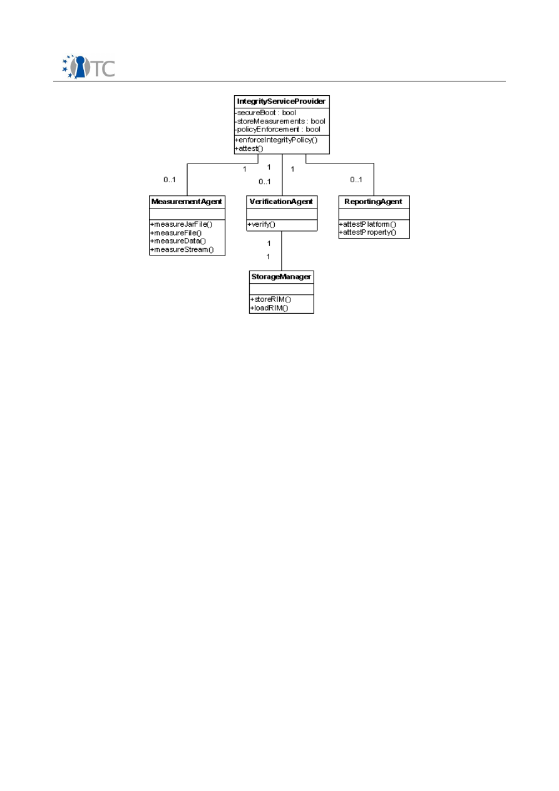
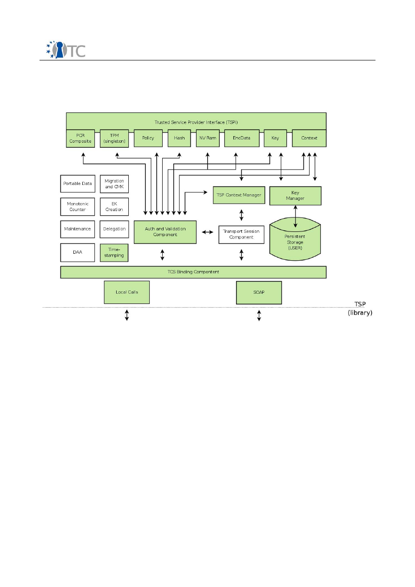

D03.2: Collected internal deliverables
for year 1+2
Project number
IST-027635
Project acronym
Open_TC
Project title
Open Trusted Computing
Deliverable type
Main Deliverable
Deliverable reference number
IST-027635/D03.2/PUBLIC | 1.00
Deliverable title
Collected internal deliverables for year 1+2
WP contributing to the deliverable
WP3
Due date
Jun 2008
Actual submission date
Jun 2008
Responsible Organisation
IFX
Authors
See the cover page of each included internal
deliverable
Abstract
Collection of following internal documents
produced during years 1 and 2:
WP03a (WP03a Overview; D03a.1; D03a.2)
WP03b (WP03b Overview; D03b.1)
WP03c (D03c.2; D03c.3; D03c.4; D03c.5;
D03c.6)
WP03d (D03d.1; D03d.2 & D03d.3; D03d.4;
D03d.5)
Keywords
Dissemination level
Public
Revision
PUBLIC | 1.00
Instrument
IP
Start date of the
project
1
st
November 2005
Thematic Priority
IST
Duration
42 months

MFA Intermediate System Specification
PUBLIC | 1.00
The Deliverable D03.2 provides you a collection of following internal documents
produced from M1 to M24:
WP03a:
●
WP03a Overview
●
D03a.1 Functionality and Interface Specification
●
D03a.2 Test Plan and Report
WP03b:
●
WP03b Overview
●
D03b.1 TPM Software Stack Implementation and Test Report
WP03c:
●
D03c.2 High-level key manager service design specification
●
D03c.3 SSL/TLS DAA-enhancement specification
●
D03c.4 Key Management Adaption service code and documentation
●
D03c.5 OpenSSH adaption service source code and documentation
●
D03c.6 OpenSSL engine/DAA enhancement design specification
WP03d:
●
D03d.1 JAVA High level overview
●
D03d.2 & D03d.3 Integrated Trusted Computing into the Java Programming
Language
●
D03d.4 Java VM for TC implementations
●
D03d.5 Java API and Library implementation
Open_TC Deliverable 3.2
2/2
D03a WP03a Overview
Project number
IST-027635
Project acronym
Open_TC
Project title
Open Trusted Computing
Deliverable type
Report (see p 84/85 Annex 1 - Nature)
Deliverable reference number
IST-027635/D03a/RC|1.01
Deliverable title
WP03a Overview
WP contributing to the deliverable
WP03a
Due date
Apr 2006 - M06
Actual submission date
Responsible Organisation
AMD
Authors
AMD (Matthias Lenk)
Abstract
Virtualization refers to the creation of one or
more execution environments on the same
machine each of which mirrors the original
platform in order to make the respective
operating system believe it was exclusively
running on a real platform. This approach
has several advantages over the traditional
way to share the resources of a platform and
enables a variety of valuable applications
such as the simultaneous execution of
multiple operating systems or server sharing.
Keywords
para virtualization, hardware virtualization,
trusted computing base, TCB, TPM
Dissemination level
Public | Confidential
Revision
RC|1.01
Instrument
IP
Start date of the
project
1
st
November 2005
Thematic Priority
IST
Duration
42 months

WP03a Overview
RC|1.01
Table of Contents
1 Secure Virtualization Introduction..............................................................................5
1.1 Para Virtualization vs. full Virtualization.................................................................5
1.2 Hardware Virtualization..........................................................................................5
2 AMDs Secure Virtual Machine Technology.................................................................6
2.1 Guest Execution Environment................................................................................6
2.2 Security Enhancements..........................................................................................6
2.3 Secure Initialization of the TCB..............................................................................6
3 List of Abbreviations .................................................................................................8
Open_TC Deliverable 03a
2/6
WP03a Overview
RC|1.01
1
Secure Virtualization and Initialization Introduction
Virtualization refers to the creation of one or more execution environments on the
same machine each of which mirrors the original platform in order to make the
respective operating system believe it was exclusively running on a real platform. This
approach has several advantages over the traditional way to share the resources of a
platform and enables a variety of valuable applications such as the simultaneous
execution of multiple operating systems or server sharing.
Together with hardware security features such as secure initialization this can address
the vast challenge of computer security present in todays computer platforms.
Potentially untrusted software or operating systems can run in a sandbox like
environment with complete separation from the rest of the system.
1.1 Para Virtualization vs. full Virtualization
Without hardware support for virtualization the implementation of full virtualization,
which allows unmodified operating systems to run seamlessly, proves to be complex
and rather inefficient. Thus a large portion of the resources of the system are wasted
for managing virtual machines.
The alternative lies in modifying the operating system for the virtual machine to reuse
infrastructure of the management software called virtual machine monitor (VMM) or
hypervisor. This para-virtualization leads to a significant performance improvement
but incorporates the disadvantage of needing to modify the requested operating
system. This is especially a problem for proprietary operating systems.
1.2 Hardware Virtualization
The traditional approach to implement virtualization are based on a complicated
virtual machine monitor running on top of the operating system. In contrast to that
more modern para-virtualization introduces a very thin hypervisor layer which
manages the virtual machines and provides most basic operating system
functionalities and an interface for the guest operating systems running inside the
virtual machine.
Hardware virtualization features can extend the hypervisor based solution by
supporting unmodified operating systems and further improving performance . Thus
Open_TC Deliverable 03a
3/6
Figure 1: Traditional vs. Modern Virtualization
Hardware
OS
VMM
VM1 VM2
VMn
Hardware
VMM
VM1 VM2
VMn
Traditional Virtualization
Modern Virtualization

WP03a Overview
RC|1.01
the disadvantages of traditional and hypervisor based software virtualization can be
overcome with special hardware features of the processor.
2
AMDs Secure Virtual Machine Technology
In order to support unmodified guest operating systems the AMD SVM enhanced CPU
supports the new host and guest execution environments. The VMM runs in a higher
privileged host mode and the virtual machines operate in a special guest mode.
2.1 Guest Execution Environment
The SVM technology provides a new CPU instruction called VMRUN which executes
guest code in a secure execution environment. Whenever the guest executes an
operation which requires the attention of the VMM the guest gets intercepted.
This enables secure memory partitioning by allowing the VMM to monitor the page
table of the guest and to ensure strong isolation between the individual guests and
host. Another cause for an intercept are interrupts and exceptions which will then be
handled by the VMM. In order to let a guest handle interrupts or exceptions these
events can be injected into the guest.
On each intercept the state of the guest is automatically stored in a special memory
structure and recovered at the next execution.
2.2 Security Enhancements
Additional to virtualization functions the SVM technology also provides security
enhancements which can be used to establish a trusted computing base (TCB). The
following elements comprise the SVMs support for a TCB:
•
Hardware enforced privilege levels
•
Strong domain separation
•
I/O protection
•
Device protection
•
Attestable initialization of the TCB software elements
•
TPM support
The first four of these elements are directly provided by the SVM guest execution
environment. For I/O port and MSR protection special bitmaps specify the privileges of
each guest. Furthermore bus-master peripheral devices are prevented from accessing
arbitrary memory by a mechanism called multi-domain device exclusion vector (DEV).
2.3 Secure Initialization of the TCB
Secure initialization requires immutable hardware components in order to prevent
software based attacks. The new SKINIT instruction provides this immutability while
retaining the ability to use traditional platform boot mechanisms. This can be achieved
since uncontrolled software triggers the secure initialization process which comprises
of loading a so called secure loader (SL) and TCB code into memory and executing the
SKINIT instruction.
Open_TC Deliverable 03a
4/6

WP03a Overview
RC|1.01
This instruction will then securely measure and start the secure loader. This
measurement is extended to the TPM. It is made sure that no external hardware event
can tamper with or interrupt the secure initialization process.
In the secure initialization process, the platform configuration is verified and
measured. Measurements are extended to a TPM. The platform configuration includes
hardware and software aspects. This allows the TCB to start in a known-good
environment and to check later, if the desired configuration options are available.
The secure loader is then responsible for measuring and initializing the trusted
computing base software.
Open_TC Deliverable 03a
5/6

WP03a Overview
RC|1.01
3
List of Abbreviations
CPU
Central Processing Unit
DEV
Device Exclusion Vector
MSR
Machine Specific Register
OS
Operating System
SL
Secure Loader
SVM
Secure Virtual Machine technology by AMD
TCB
Trusted Computing Base
VM
Virtual Machine
VMM
Virtual Machine Monitor also known as hypervisor
Open_TC Deliverable 03a
6/6
D03a.1 Functionality and Interface
Specification
Project number
IST-027635
Project acronym
Open_TC
Project title
Open Trusted Computing
Deliverable type
Report (see p 84/85 Annex 1 - Nature)
Deliverable reference number
IST-027635/D03a.1/RC|1.0
Deliverable title
Functionality and Interface Specification
WP contributing to the deliverable
WP03a
Due date
Apr 2006 - M06
Actual submission date
Responsible Organisation
AMD
Authors
AMD (Ralf Findeisen, Matthias Lenk)
Abstract
his document specifies the architecture and
interfaces for work package 03a of the
OpenTC project. It is based on AMD's
hardware extensions for virtualization and
secure initialization.
Keywords
hardware, virtualisation, hypervisor, AMD,
PCR, TPM, secure loader, configuration
verifier
Dissemination level
Public | Confidential
Revision
RC1
Instrument
IP
Start date of the
project
1
st
November 2005
Thematic Priority
IST
Duration
42 months

Functionality and Interface Specification
RC|1.0
Table of Contents
1 Scope.........................................................................................................................5
2 Introduction...............................................................................................................5
3 Hardware Virtualization Abstraction Interface...........................................................5
3.1 Overview................................................................................................................6
3.2 Interface Usage......................................................................................................6
3.3 HVM operation........................................................................................................7
3.3.1 Running Guests.................................................................................................7
3.3.2 Handling of Intercepts.......................................................................................7
3.3.3 Interrupt Injection..............................................................................................8
3.3.4 Soft IRQs............................................................................................................8
4 Secure Initialization Architecture...............................................................................8
5 Secure Loader..........................................................................................................10
5.1 First Stage – SL1...................................................................................................10
5.2 Second Stage – SL2..............................................................................................11
6 Configuration Verifier...............................................................................................11
6.1 CV Core................................................................................................................11
6.2 CV Tables.............................................................................................................12
7 Memory Organization...............................................................................................13
7.1 Code Modules Memory Layout.............................................................................13
7.2 SL1 runtime Memory............................................................................................14
7.3 Table Format........................................................................................................16
7.4 PCR Usage............................................................................................................18
8 List of Abbreviations ...............................................................................................19
Open_TC Deliverable 03a.1
2/17

Functionality and Interface Specification
RC|1.0
List of figures
Figure 1: HVM interface overview...................................................................................6
Figure 2: HVM operation.................................................................................................7
Figure 3: Secure Initialization Software Modules............................................................9
Figure 4: Initialization Sequence...................................................................................10
Figure 5: Memory structure of SL1 (left), SL2 and CV (right)........................................13
Figure 6: Platform Table Structure................................................................................16
Figure 7: Vendor Table Structure..................................................................................17
Figure 8: PCR Usage for Secure Initialization................................................................18
Open_TC Deliverable 03a.1
3/17

Functionality and Interface Specification
RC|1.0
List of Tables
Table 1: SL1 runtime data contents..............................................................................14
Open_TC Deliverable 03a.1
4/17

Functionality and Interface Specification
RC|1.0
1
Scope
This document specifies the architecture and interfaces for work package 03a of the
OpenTC project. It is based on AMD's hardware extensions for virtualization and secure
initialization.
2
Introduction
Virtualization refers to the creation of one or more execution environments on the
same machine, each of which mirrors the original platform in order to make the
respective operating system believe it was exclusively running on a real platform. This
approach has several advantages over the traditional way to share the resources of a
platform and enables a variety of valuable applications such as the simultaneous
execution of multiple operating systems or server sharing.
Together with hardware security features such as secure initialization this can address
the vast challenge of computer security present in todays computer platforms.
Potentially untrusted software or operating systems can run in a sandbox like
environment with complete isolation from the trustworthy part of the system.
AMDs secure virtual machine (SVM) technology consists of hardware extensions for
virtual machine monitors (VMM) and security enhancements of the overall x86
platform.
For support of unmodified operating systems inside a virtual machine SVM provides a
new guest execution environment that enforces strong isolation between the virtual
machines and the VMM. All actions of the guest OS that might comprise this isolation
cause the control of the machine to be transfered back to the VMM.
In order to ensure the trustworthiness of the VMM the SVM extension provides means
to establish a Trusted Computing Base (TCB) with a new instruction called SKINIT
(secure kernel initialization). This instruction protects, measures using a TPM and
executes a so called secure loader (SL).
3
Hardware Virtualization Abstraction Interface
The SVM technology by AMD comprises several hardware mechanisms for virtual
machine monitors or hypervisors to be able to run unmodified guest operating
systems. In order to reduce the effort to adapt the VMM to the new technology an
abstraction layer is required which hides the complexity of new CPU instructions and
structures from the VMM code.
On the other hand existing code for virtualizing components of an x86 CPU and
platform should be leveraged as much as possible if they are not explicitly replaced by
hardware support. Therefore this new software entity called Hardware Virtual Machine
(HVM) not only provides several C functions and structures but also requires a number
of C functions and structures to be exported by the VMM.
The HVM shall be responsible for running a guest inside a virtual machine, save and
restore its state, handle intercepts and interrupt injection whereas the VMM remains
accountable for initializing and managing guests in terms of interrupt and exception
Open_TC Deliverable 03a.1
5/17
Functionality and Interface Specification
RC|1.0
handling, shadow page table maintenance and other system services.
3.1 Overview
The HVM interface is organized as depicted in figure 1. The central element is the HVM
function pointer table which contains the operations the VMM uses to access HVM
functionality.
3.2 Interface Usage
The function pointer table is initialized by the only exported global function
start_svm()
which is supposed to be called during initialization of the VMM. This has
the advantage of potentially supporting multiple different virtualization hardware
extensions of different CPU vendors at compile time while retaining the original
interface.
The contents of the table do not change after initialization and are valid for all virtual
machines. One of the main functionalities of the HVM is running and resuming virtual
machines after an intercept. Depending on the state of the guest this requires
different operations when starting a virtual machine or resuming it after an intercept.
Thus each virtual machine, or to be precise virtual CPU, needs its own function pointer
for this operation in order to avoid too many cascaded function calls. Therefore a
function pointer is added to a structure called
vcpu
which is called in case of
scheduling the execution of the respective virtual CPU.
The
vcpu
structure contains VMM internal information about the virtual CPU such as
scheduling information and in its architecture dependent part page tables, I/O-port
access bitmaps, hardware dependent structures such as the VMCB and the mentioned
function pointer for the scheduling operation. This structure is supplied to all calls to
the HVM layer from VMM software.
Open_TC Deliverable 03a.1
6/17
Figure 1: HVM interface overview
VMM Code
exported
functions
start_svm()
SVM
specific
code
HVM
function
pointer
table
s etup
Functionality and Interface Specification
RC|1.0
3.3 HVM operation
The HVM layer replaces several functions usually found in the VMM. Figure 2 depicts
how the devision of work between VMM and HVM code is organized.
3.3.1 Running Guests
Since the actual execution of guest code is carried out in the HVM code utilizing SVMs
VMRUN
instruction the main loop of the VMM moves to the HVM code. This means the
HVM saves the host (VMM) state, loads the guest state and executes the guest until an
intercept occurs. After that it saves the guest state and restores the host state. It then
handles the intercept and resumes the same guest again.
There are three mechanisms to interact with the VMM:
•
Interrupts
•
Soft interrupts
•
exported functions from VMM for intercept handling
3.3.2 Handling of Intercepts
There are number of events causing an intercept of the guest that is currently running,
some of which require VMM functionality. One of these are external interrupts. AMDs
SVM keeps the interrupt asserted during the intercept. After the global interrupt flag
has been enabled again the interrupt handler of the VMM will execute and service the
interrupt. It is then up to the VMM to decide whether an virtual interrupt should be
injected into the guest by programming the virtual (A)PIC accordingly.
Open_TC Deliverable 03a.1
7/17
Figure 2: HVM operation
HVM main loop
s ave hos t s tate
load gues t s tate
run guest
s ave gues t s tate
load hos t s tate
inject IRQs
handle intercept
intercept
s oft IRQ?
no
VMM code
s hadow page
table handling
s cheduler
yes
other s oft IRQ
handler
MMIO / IOIO
handler
IRQ handler
virtual (A)PIC

Functionality and Interface Specification
RC|1.0
Another important intercept is a page fault. Page faults will happen if the guest tries to
modify its page table or if it tries to access MMIO address ranges that are not mapped
into its address space. The HVM code has to call VMM functions to update the shadow
page table and handle MMIO accesses to virtual devices such as the local APIC.
3.3.3 Interrupt Injection
Before guest code is executed the HVM has to check whether an interrupt or exception
is due to be injected. In order to determine whether there is an interrupt pending it
calls functions provided by the virtual (A)PIC.
3.3.4 Soft IRQs
The so far mentioned interactions between HVM and VMM are very specific and in one
direction only – the HVM using VMM services. In order to provide a generic interface
for executing VMM code the concept of soft IRQs has been introduced.
A special field in the
vcpu
structure points to a global structure indicating a pending
soft IRQ. The HVM then calls a function
do_softirq
which can execute VMM code, e.g.
for scheduling to the next guest.
4
Secure Initialization Architecture
Additional to virtualization functions the SVM technology also provides security
enhancements which can be used to establish a trusted computing base (TCB). The
following elements comprise the SVMs support for a TCB:
•
Hardware enforced privilege levels
•
Strong domain separation
•
I/O protection
•
Device protection
•
Attestable initialization of the TCB software elements
•
TPM support
The first four of these elements are directly provided by the SVM guest execution
environment. For I/O port and MSR protection special bitmaps specify the privileges of
each guest. Furthermore bus-master peripheral devices are prevented from accessing
arbitrary memory by a mechanism called multi-domain device exclusion vector (DEV).
Secure initialization requires immutable hardware components in order to prevent
software based attacks. The new SKINIT instruction provides this immutability while
retaining the ability to use traditional platform boot mechanisms. This can be achieved
since uncontrolled software triggers the secure initialization process which comprises
of loading a secure loader (SL) and TCB code into memory and executing the SKINIT
instruction.
This instruction will then securely measure and start the secure loader with the help of
the TPM. It is made sure that no external hardware event can tamper with or interrupt
the secure initialization process.
The software components involved in establishing a TCB are the following and
depicted in figure 3:
Open_TC Deliverable 03a.1
8/17
Functionality and Interface Specification
RC|1.0
•
SL1, the 64 KB part of the secure loader executed by SKINIT
•
SL2, the rest of the secure loader, measured and executed by SL1
•
Configuration verification makes sure the platform configuration is in a known
state by using tables which contain platform information and platform specific
code
The SL1/2, CV and the secure kernel have to be loaded in the untrusted portion of the
boot process. After all I/O operations have been stopped SKINIT instruction is executed
which then measures the SL1 using the TPM and executes it. SL1 itself only measures
and executes SL2.
SL2 then measures and verifies the configuration verification core and the associated
tables and executes the CV core. After the configuration has been verified the secure
kernel is measured, verified and initialized.
Open_TC Deliverable 03a.1
9/17
Functionality and Interface Specification
RC|1.0
5
Secure Loader
The first part of the secure loader is part of a 64 KB large structure expected by the
SKINIT instruction. The so called secure loader block (SLB) contains the relative offset
and size of the secure loader with its static data. The rest of the 64 KB can be used for
dynamic data and stack. This memory area is automatically protected by the device
exclusion vector.
Due to the limitation of 64 KB for code and data the secure loader has been split into
two parts, one which resides in the SLB whereas the other is located outside the SLB.
5.1 First Stage – SL1
Due to the size limitation the responsibilities for SL1 are minimal. The following steps
need to be carried out by SL1:
•
Setup DEVs for SL2, CV and tables and secure kernel
•
Measure SL2
•
Extend to TPM
•
Jump to SL2. The address of SL1 is supplied as argument
The SL is executed in 32-bit flat memory model with paging disabled. The processor is
in a state equivalent to the state usually caused by INIT signal. All interrupts including
non maskable interrupts and exceptions are disabled by clearing the global interrupt
flag introduced with SVM.
The dynamic data section at the top of the SLB contains the following information prior
to the execution of SKINIT:
•
The saved state of the boot loader which executed SKINIT (optional)
•
The addresses and sizes of the other code blocks, SL2, CV, secure kernel
•
Pointers to the CV and platform tables
Open_TC Deliverable 03a.1
10/17
Figure 4: Initialization Sequence
Power on
SL, CV and
secure kernel put
into memory
Stop active I/O
and stop other
CPUs
Save
state as
needed
SKINIT
instruction
SL1/2 validates
and loads CV
CV validates
configuration
SL2 validates
secure kernel
init secure
kernel
S L copied to TPM
by HW, has hed
and s tored in
PCR
TPM PCR
updates

Functionality and Interface Specification
RC|1.0
5.2 Second Stage – SL2
Since there is no 64 KB limitation on the size of the SL2 more code, e.g. for verifying
signatures, can be included. The following tasks need to be carried out by SL2:
•
Measure CV core and extend to TPM
•
Verify CV core signature
•
Measure platform table and extend to TPM
•
Verify platform table signature
•
Retrieve UUIDs and keys from platform table
•
Find AMD and vendor tables
•
Measure tables and extend to TPM
•
Verify table signatures
•
Invoke CV and pass pointers to verified tables
•
Measure secure kernel and extend to TPM
•
Optionally verify kernel signature
•
Jump to secure kernel entry point
The addresses and sizes of the code blocks and tables are retrieved from SL1 runtime
data area.
6
Configuration Verifier
The Configuration Verifier (CV) engine measures and verifies components of a
platform. These parts can be software or hardware components.
CV is composed of a CV core, which contains the operation code and the some tables
with data to describe platform, vendor and AMD components.
This section describes the architecture and gives an implementation overview of both.
6.1 CV Core
The CV core is the operation engine for the tables. CV core is measured and verified
by SL2 before it is executed. Therefore it is trusted code. SL2 has already setup DEVs
for the core and its tables.
CV core gets the information, where to find all tables passed from SL2 in a list of
pointers. Each table can be uniquely identified by a UUID. The Platform-Table contains
identification information for all other tables.
After reading the platform information, the core takes the Vendor-Tables in the order
they are listed in the Platform-Table and executes the measurement operations listed
there (top to bottom). Each measurement operations produces a measurement of
some platform aspect, which is passed back to the core. The tables also contain
expected answers, so that the result can be compared for correctness.
If an incorrect result is found, the processing of tables in the core stops immediately
and execution is passed back to SL2 with an error indication. It is expected, that the
secure startup is ended then and the secure kernel will not be loaded.
Open_TC Deliverable 03a.1
11/17

Functionality and Interface Specification
RC|1.0
6.2 CV Tables
The CV core operates on different classes of tables. From each at least one is available
on a system. The tables classes are:
•
Platform tables
•
Vendor tables
•
AMD tables
The format of configuration tables is defined in figures 6 and 7. Tables are compiled
using preparation tools in user mode on a platform and delivered on regular software
distribution ways (e.g. system delivery, online update, disks).
To ensure the integrity of a table and to authenticate it, tables are signed by either the
platform authority or one of the vendors (including AMD). When CV is called, SL2 has
already done the verification and authentication and has extended the PCRs for the
tables. CV core assumes
good
tables!
CV tables are standalone. They are not linked. Tables are identified using UUIDs as
specified in RFC 4122. The information to find the tables is passed to SL1 at start time.
The platform table identifies the other tables.
Platform Table
The platform table is the master table. It contains the description of a whole setup,
e.g. a server configuration.
The platform table holds the UUIDs and respective public keys for all vendor tables.
This includes AMD and other hardware vendors. The table can also have information
about the software environment starting on the platform.
There is only one platform table. The platform table can be identified by reading the
platform model number field. This field needs to be zero in all other tables.
AMD and Vendor Tables
Vendor tables are associated with a certain component vendor for a platform. It
contains code and verification information for the vendor's parts on a platform.
The verification process uses vendor specific measurement operations to measure
hardware. They are organized in entries in the table, so that each measurement
operation can be uniquely identified by a UUID and has an expected result and a code
snippet to be executed to get a result from the platform.
Only when expectation and result match, a positive result is given back to the core.
Code Snippets
Code snippets are position independent pieces of code, which are executed from CV
core to measure parts of the platform. A flat 32 bit execution environment is to be
expected. The format is similar as SL1, with a field for the overall length followed by
an entry point, which specifies the offset from the beginning of the code snipped
(including length and entry point field).
The code snipped is invoked via CALL instruction which means the code snippet needs
to return as if it was a regular function.
Open_TC Deliverable 03a.1
12/17
Functionality and Interface Specification
RC|1.0
7
Memory Organization
All code and data are delivered as static binaries which implies all code has to be
position independent and written for flat 32-bit mode.
The binaries for SL1, SL2, CV and the related tables and secure kernel have to be
loaded prior to SKINIT execution to an arbitrary memory location below 4 GB. Each of
these modules has to be physically continuous in memory and SL1 has to be 64 KB
aligned.
A physically continuous DEV bitmap has to be allocated by the loading entity which
will then be overwritten by SL1.
7.1 Code Modules Memory Layout
The secure loaders and CV modules have the layout depicted in figure 5.
Open_TC Deliverable 03a.1
13/17
Figure 5: Memory structure of SL1 (left), SL2 and CV (right)
Length
EP offset
Static Data
SL1 Code
SL1 Stack
SL1 Runtime Data
S
L1 has
h ar
ea
64
K
B
31
16 15
0
EP offset
Static Data
Code
Stack
Runtime Data
31
0
Block Length
Hash Length
h
a
s
h
a
re
a
Signature
Functionality and Interface Specification
RC|1.0
Each of the modules begins with length information of the to be hashed area and entry
point information. SL2 and CV additionally contain block length information. Static
data, e.g. keys, are located between this header information and the code. For signed
modules the signature is located behind the code. Runtime data and stack form the
rest of the module.
7.2 SL1 runtime Memory
The contents of runtime and static data of SL2 and CV and static data of SL1 are
implementation dependent the runtime data of SL1 requires a specified structure due
to the fact that SL1 and the successively executed components require information
about the location and size of the components supplied by the loader.
Table 1 lists the elements stored in the runtime data section of the SLB. Note that the
offsets count from the end of the data block.
Field
Offset
SL2 address
0
SL2 size
-4
CV address
-8
CV size
-12
SK image address
-16
SK image size
-20
SK multiboot structure address
-24
DEV address
-28
Platform table address
-32
AMD table address
-36
Number of Vendor tables
-40
Vendor table 1 address
-44
...
Vendor table n address
-44 + 4 * (n – 1)
Scratch pad
-44 + 4 * n
State information (registers, MSRs,
...) of loader (optional)
-1024
Table 1: SL1 runtime data contents
Open_TC Deliverable 03a.1
14/17
Functionality and Interface Specification
RC|1.0
7.3 Table Format
The following figures specify the structure of platform and vendor tables to scale.
Open_TC Deliverable 03a.1
15/17
Figure 6: Platform Table Structure
AMD-Table UUID
Vendor
1
-Table UUID
Pub Key
AMD
Pub Key
Vendor
1
Other Platform Dependant Information
Signature over hash by platform authority
Ha
sh
128 bits
UUID
Platform Model Number
reserved
Vendor
2
-Table UUID
Pub Key
Vendor
2
: :
Vendor
n
-Table UUID
Pub Key
Vendor
n
Functionality and Interface Specification
RC|1.0
Open_TC Deliverable 03a.1
16/17
Figure 7: Vendor Table Structure
Measurement Operation 1 - UUID
Measurement Operation 1 – Code Snippet
Signature over hash by vendor
Ha
sh
128 bits
UUID
must be 0
reserved
: :
Measurement Operation 1 – Expected Result (160 bits)
Code Snippet Length
Measurement Operation 2 - UUID
Measurement Operation 2 – Code Snippet
Measurement Operation 2 – Expected Result (160 bits)
Code Snippet Length
Measurement Operation n - UUID
Measurement Operation n – Code Snippet
Measurement Operation n – Expected Result (160 bits)
Code Snippet Length
Entry Point
Entry Point
Entry Point
Functionality and Interface Specification
RC|1.0
7.4 PCR Usage
The measurement of particular components is bound to certain PCR registers in the
TPM. The SKINIT hardware writes the measurement value into locality 4 which
corresponds to PCR #17. Figure 8 depicts which component measurement extends to
which PCR registers inside the TPM for later attestation.
Open_TC Deliverable 03a.1
17/17
Figure 8: PCR Usage for Secure Initialization
Locality 4
(PCR #17)
Locality 3
(PCR #18)
Locality 2
(PCR #19)
SL1
SL2
CV
Core
Platform
Table
AMD
Table
Vendor
Tables
Secure
Kernel
Hardware
SL1
SL2
SL2
D03a.2 Test Plan and Test Report
Project number
IST-027635
Project acronym
Open_TC
Project title
Open Trusted Computing
Deliverable type
Report (see p 84/85 Annex 1 - Nature)
Deliverable reference number
IST-027635/D03a.2/RC|1.01
Deliverable title
Test Plan and Test Report
WP contributing to the deliverable
WP03a
Due date
Apr 2006 - M06
Actual submission date
Responsible Organisation
AMD
Authors
AMD (Ralf Findeisen, Matthias Lenk)
Abstract
This document specifies the test plan and
test report for work package 03a of the
OpenTC project. It describes the tests to be
implemented and executed to verify the
correct operation of the secure startup
software solution provided by AMD. The
environment is defined and the test cases in
categories of their scope are defined.
Keywords
DRTM, TCB, Trusted Computing base, Secure
loader, test plan, test report, Virtualisation
Dissemination level
Public | Confidential
Revision
RC|1.01
Instrument
IP
Start date of the
project
1
st
November 2005
Thematic Priority
IST
Duration
42 months

Test Plan and Test Report
RC|1.01
Table of Contents
1 Scope.........................................................................................................................5
2 Introduction...............................................................................................................5
3 List of Abbreviations .................................................................................................6
Open_TC Deliverable 03a.2
2/7
Test Plan and Test Report
RC|1.01
1
Scope
This document specifies the test plan and test report for work package 03a of the
OpenTC project. It describes the tests to be implemented and executed to verify the
correct operation of the secure startup software solution provided by AMD. The
environment is defined and the test cases in categories of their scope are defined.
2
Introduction
The main purpose of the secure initialization solution provided by AMD is to establish a
dynamic root of trust for measurement (DRTM) and on this basis initialize the trusted
computing base (TCB). Furthermore the configuration of the system it is running on is
verified.
The components of the system comprise of a secure loader (SL) which consists of two
parts, a configuration verification engine (CV) and tables which contain verification
code and information about the platform which is being verified.
The SL1 is executed by a new CPU instruction called SKINIT. This instruction creates an
immutable execution environment for the first part of the secure loader. The secure
loader then sets up the memory protection called device exclusion vectors (DEV) and
measures and executes SL2. SL2 checks signatures of the CV core and supplied tables.
It then calls the CV to execute and analyze the tables presented.
After CV finished the secure kernel (SK) is executed. All components involved are
measured and extended to the TPM.
Open_TC Deliverable 03a.2
3/7
Test Plan and Test Report
RC|1.01
3
Test Environment
The tests for the secure initialization software are organized in categories unit tests,
component test and system tests. Unit tests are carried out on the host or
development system whereas component and system tests have to be carried out on
the target system. Some components or some aspects of components can only be
tested on the target since they require special hardware not usable on the
development system.
3.1 Unit Test Environment
Unit tests are written in special test programs that test individual functions of the to
be tested component and are separate from code running on the target.
Execution environment
Linux (x86 or x86_64), user space process
Compiler tool chain
gcc 32-bit x86 version 3.3 or higher, OpenSSL
Hardware
Any x86 machine Pentium/Athlon class
User Interface
bash command line
Table 1: Unit Test Environment
Unit tests programs shall generate a test report as its output which indicates whether
each test has failed or succeeded.
3.2 Component and System Test Environment
Component and system tests have to be carried out on the target system. The test
routines shall be embedded in the target software and shall report its success on the
text mode screen due to the lack of disk access.
Hardware
Revision F Opteron/Athlon 64
Infineon TPM SLB9635TT1.2
Execution Environment
32-bit flat mode, running from grub2 boot loader
Compiler tool chain
gcc 32-bit x86 version 3.3 or higher
User Interface
grub2 console
VGA text mode
Table 2: Component and System Test Environment
Grub2 boot loader is used to load and execute the secure initialization software.
4
Unit Tests
The following sub sections list unit test cases ordered by functional block. Each test is
specified by a name, its operations and expected result.
The tests of each block are organized in one test program.
Open_TC Deliverable 03a.2
4/7
Test Plan and Test Report
RC|1.01
4.1 Big Number Library
The big number library is used for RSA signature verification and CV table signature
generation.
Test
Operation
Expected Result
Multiply 1
multiply p and q from RSA test
vectors PSS-INT
n from RSA test vectors
PSS_INT
Multiply 2
multiply two random number a
and b. Calculate the modulo of the
result c with b. Repeat with a = c
until maximum size of big number
is reached
The big number zero for
(c mod b) in all iterations
Modulus 1
Take q, qInv, p from RSA test
vectors PSS-INT. Calculate (q *
qInv) mod p
The big number one
Modulus 2
Take e, dP, p from RSA test
vectors PSS-INT. Calculate (e * dP)
mod (p – 1)
The big number one
Modular
Exponentiation
Take S, n, e from RSA test vectors
PSS-INT. Calculate (s^e) mod n
EM from RSA test vectors
PSS_INT
Table 3: Big NUmber Library tests
4.2 RSA signature verification generation
The RSA code uses the big number library to calculate the fundamental RSA
operations.
Test
Operation
Expected Result
Signature verification
1
Generate key pair and signature of
SL1 binary using OpenSSL. Read
public key, SL1 binary and verify
signature
Signature being verified
Signature verification
2
Use signature and key from test
above and flip a random bit in the
signature. Verify signature
Signature NOT being
verified
Signature generation
Use key pair from test above.
Read private key and sign SL1
binary. Verify signature
Signature being verified
All test have to be repeated for keys of 512, 1024, 2048 bits size.
4.3 SHA1
The SHA1 algorithm is used to measure loaded components of the secure initialization
process.
Open_TC Deliverable 03a.2
5/7
Test Plan and Test Report
RC|1.01
4.4 DEV
DEV maps are used to specify memory protection from external devices.
Test
Operation
Expected Result
Random block
Block random address range (<
4GB) in DEV
Bits for address range
being set
8 byte block
Block address ranges from 1 to 7
bytes in size each with (address
mod 8) = 0, ..., 7 starting with an
empty (all zero) vector
Bits correctly set
Block/Unblock
Block random address range (<
4GB) in DEV and unblock the same
range
Empty vector (all zero)
5
Component Tests
Component tests are manually carried on the target system and report success or
failure on the text mode screen during the execution of the secure initialization
software. The software has to be recompiled for each test since specific test code will
be included.
5.1 Secure Loader (1 / 2)
Test
Description
Expected Result
SKINIT
Execution reaches SLB
Text message indicating
code execution of SL code
SKINIT 2
Check TPM PCR 17 after SKINIT
execution
Correct hash value in PCR
17
SL2
Execution reaches SL2
Text message indicating
code execution of SL2
code
TPM Access 1
Register Access to TPM
Text reporting correct
DID/RID of TPM
TPM Access 2
Use TPM extend operation to hash
SLB as the SKINIT instruction
would into PCR 19
Identical values of PCR 17
(from SKINIT) and PCR 19
DEV setup
Test DEV settings using external
hardware for bus master memory
access while SL code is
deliberately stopped.
All memory accesses to
protected memory shall
fail. Memory accesses
outside memory
protection shall succeed
Open_TC Deliverable 03a.2
6/7
Test Plan and Test Report
RC|1.01
Test
Description
Expected Result
CV
Execution reaches CV while tables
are present
Text message indicating
code execution of CV
code
5.2 CV
Test
Description
Expected Result
Platform Table
Platform table signature
verification of correctly signed
table in memory
Signature should be
verified
Platform Table 2
Platform table signature
verification of incorrectly signed
table in memory
Signature verification
shall fail
Vendor Table
Execute a variable number of no-
op vendor tables that always
return correct result
All vendor tables
executed and verified
Vendor Table 2
Execute a variable number of no-
op vendor tables that always
return correct result, except one
whose signature is corrupted
Configuration verification
stops at corrupted vendor
table
Vendor Table 3
Execute a variable number of no-
op vendor tables that always
return correct result, except one
which always return incorrect
result
Configuration verification
stops at failing vendor
table
6
System Tests
System tests use the secure initialization software in its complete form without any
test code included.
Test
Description
Expected Result
Boot L4
Boot a simple L4 system
comprised of Fiasco kernel and
hello world application
System boots L4 fully
functional
Boot Xen
Boot Xen kernel plus initrd
System boots Xen fully
functional
Verify L4
Boot L4 system and verify TPM
PCR values
PCR values identical to
precomputed values
Verify Xen
Boot Xen system and verify TPM
PCR values
PCR values identical to
precomputed values
Open_TC Deliverable 03a.2
7/7
D3b WP3b Overview and TPM Software Stack
Project number
IST-027635
Project acronym
Open_TC
Project title
Open Trusted Computing
Deliverable type
Report (see p 84/85 Annex 1 - Nature)
Deliverable reference number
IST-027635/D3.1/RC1
Deliverable title
WP3b Overview and TPM Software Stack
WP contributing to the deliverable
WP3
Due date
JUL2007
Actual submission date
Responsible Organisation
IFX
Authors
IFX (Hans Brandl)
Abstract
The main specification of the TCG defines a
subsystem with protected storage and trust
capabilities: The Trusted Platform Module
(TPM). For translating the low level
functionality fo the TPM security chip to a
high level API, the TCG standardized the so
called TPM Software Stack (TSS). Within this
deliverable a TSS was implemented
according of the TSS1.2 specification of the
TCG. This report describes the method of
implementation and also the test procedures
during the development process as well as a
third party test of the finished product.
Keywords
TPM, TSS, TSPI, TCG, Trust, Security, Tes
Dissemination level
Public
Revision
RC1
Instrument
IP
Start date of the
project
1
st
November 2005
Thematic Priority
IST
Duration
42 months

WP3b Overview and TPM Software Stack
RC1
Table of Contents
1 Development Environment Workpackage 03: Basic Interfaces and Trust Layers......5
2 D03b1: TSS-Stack according to TCG Specification. (IFX)...........................................7
2.1 TSS Architecture.....................................................................................................8
3 TSS module architectural overview ...........................................................................9
3.1 TCG-TSP architectural building blocks....................................................................9
3.2 TCG-TCS architectural building blocks..................................................................12
3.3 TDDL and TDDLI...................................................................................................14
3.4 References...........................................................................................................15
3.5 Definitions of terms, Acronyms and abbreviations...............................................16
Open_TC Deliverable D3b
2/15

WP3b Overview and TPM Software Stack
RC1
List of figures
Figure 1: Workpackage 03 structure..............................................................................5
Figure 2: TSS-Stack........................................................................................................8
Open_TC Deliverable D3b
3/15

WP3b Overview and TPM Software Stack
RC1
1
Development Environment Workpackage 03: Basic Interfaces and
Trust Layers
This WP contains the interfacing of the trusted computing hardware elements to the
requirements of unified SW APIs. We separating the functions of the platform’s
enhanced main processor, security module (TPM) and relevant peripherals from the
required abstract SW layer. All these modules are part of the WP3.
WP04: Trusted OS development
y
Basic management interfaces
y
TPM Visualisation
y
Design & implementation of L4 based TCG platform
y
Design and implementation of Xen-based TCG platform
y
Synergetic L4/XEN approaches
TSS-Stack according to TCG
Specification
J
a
v
a
int
egr
at
ion
T
P
M enabling wid
e
ly
av
aila
ble
c
ry
p
to
inter
fac
e
s
and b
a
s
ic
c
ry
p
to
s
e
rv
ic
es
Virtualisation layer and
interfacing for AMD CPU's
WP05 and WP06: Trusted computing management and application packages
Trusted Platform
Module (TPM)
TPM Firmware
Intel LaGrande
Enhanced Processor
AMD SEM
Enhanced Processor
WP03
Basic interfaces
and trust layers
API
Figure 1: Workpackage 03 structure
Main Activities:
a) TC enhanced CPUs:
Intel's Vanderpool processor technology and AMD's Pacifica processor will both contain
TC enhancement features and offer an additional interface with allows virtualization.
Virtualization is proving to be an ever-more useful tool to solving problems ranging
from trusted computing to VLIW migration to distributed computing. Used to migrate
resource management into user space or encapsulate runtime environments, new
virtualization developments promise to dramatically affect our use of computers in the
near future.
Virtualization allows also a far better implementation of the security and protection
features which are necessary for trusted computing hw support. Programming jobs in
all OS get a lot easier with virtualization support built directly into the processor.
Open_TC Deliverable D3b
4/15

WP3b Overview and TPM Software Stack
RC1
Within Open_TC we support both processor vendors for allowing a broad and universal
access to TC on all standard platforms:
•
Intel
Intel has already a cooperation with the Open_TC partner CUCL, where the CPU hardware
requirements for TC and also the basic virtualization needs are handled in a different open
Source project. Within Open_TC we will use these results which are available also in detail via
our partner CUCL. Therefore no special Intel package is required, however all the necessary
data and code will be accessible.
•
AMD
AMD will provide support to adapt the trusted OS layers to the AMD Pacifica processor
virtualization extensions and Presidio platform-level security extensions according to the
requirements determined in month 1 to 6. In particular, this concerns the development of a CPU
hardware interface layer and a low level virtualization with security package, allowing for easy
use and development of this new technology to support TC issues.
b
)
TCG Software Stack (the TSS)
The TCG Software Stack (the TSS) is the supporting software on the platform
supporting the platform’s TPM. Its specification was done by the TCG and is publicly
available at the internet at [TCG05]. Within the project we will adapt the TSS to the
requirements of Linux , L4 and XEN trusted OS.
c) TPM-enabling widely available crypto interfaces and basic crypto services
OpenSC, OpenSSL and OpenSSH are widely used and deployed, full-strength general
purpose, open source solution packages and crypto library. Therefore we will also
integrate an adaptation software module by which the cryptographic features can
securely processed via the TSS stack in the TPM crypto module. This enables it to use
the TPM as a protected storage for keys and as a hardware crypto device. Furthermore
a PKCS#11 module and an adaptation to TPM of the IPsec tools for Linux will be done.
Finally a privacy enhancement of the SSL/TLS protocols will be defined and
implemented and a study about the privacy enhancement the IKE/ISAKMP protocols
will be done.
d) JAVA Integration
To support a broad range of existing applications, it is essential to integrate TCG/TPM-
technology also in an application environment like Java. There are a lot of JAVA and
network applications like grid computing, web services or mobile applications will
highly benefit from TPM functionality.
Open_TC Deliverable D3b
5/15

WP3b Overview and TPM Software Stack
RC1
2
D03b1: TSS-Stack according to TCG Specification. (IFX)
The TCG main specification defines a subsystem with protected storage and protected
capabilities: This subsystem is the Trusted Platform Module (TPM). Since the TPM is
both a subsystem intended to provide trust and be an inexpensive component,
resources within it are restricted. This narrowing of the resources, while making the
security properties easier and cheaper to build and verify, causes to the interfaces and
capabilities to be cumbersome. The TCG architecture has solved this by separating the
functions requiring the protected storage and capabilities from the functions that do
not; putting those that do not into the platform’s main processor and memory space
where processing power and storage exceed that of the TPM. The modules and
components that provide this supporting functionality comprise the TSS.
Due to its special role, as the central trust API to the trusted hardware (TPM) it will be
used as trust API for the operating system as well as for the applications. The TSS
definition is publicly available at the TCGs website /1/.
The TCG Software Stack (the TSS) is the supporting software on the platform for
connecting the platform’s TPM security processor. Its specification was done by the
TCG and is publicly available at the internet at [TCG05]. Within the project we will
adapt the TSS to the requirements of Linux OS.
Open_TC Deliverable D3b
6/15
WP3b Overview and TPM Software Stack
RC1
2.1 TSS Architecture
TPM
TSS Device Driver Library
TSS Core Service
TSS Service Provider
TCPA Crypto
Service Providers
TCPA Application
Section 6
Section 5
Section 4
Section 3
Appendix?
TPM
Interface
TPM Device
Driver Library
Interface
TSS Core Service
Interface
TSS Service
Provider Interface
Crypto Service
Provider
Interfaces
TPM
TSS Device Driver Library
TSS Core Service
TSS Service Provider
TCPA Crypto
Service Providers
TCPA Application
Section 6
Section 5
Section 4
Section 3
Appendix?
TPM
Interface
TPM Device
Driver Library
Interface
TSS Core Service
Interface
TSS Service
Provider Interface
Crypto Service
Provider
Interfaces
TPM
TSS Device Driver Library
TSS Core Service
TSS Service Provider
TCPA Crypto
Service Providers
TCPA Application
Section 6
Section 5
Section 4
Section 3
Appendix?
TPM
Interface
TPM Device
Driver Library
Interface
TSS Core Service
Interface
TSS Service
Provider Interface
Crypto Service
Provider
Interfaces
Figure 2: TSS-Stack
Open_TC Deliverable D3b
7/15
TSS modules covered
by the related TCG
specification.

WP3b Overview and TPM Software Stack
RC1
3
TSS module architectural overview
Differently to other TSS realizations, where a monolithic implementation is chosen, we
selected a distributed, modular implementation. Every module has a selected
functionality, which is also referenced by the structure of the TCG specification. Well
defined interfaces will allow a thorough understanding of the whole structure esp. for
any changes which will come up later. This is esp. advantageous for adapting this TSS
to changes and extensions of the general specification which may come up later due
to the forth going work of the TCG standardization groups. A continuous support for
further development in this field will therefore be supported.
3.1 TCG-TSP architectural building blocks
This module provides TCG services for applications. It provides the high-level TCG
functions allowing applications to focus on their specialty while relying on the TSP to
perform most of the trusted functions provided by the TPM. This module also provides
a small number of auxiliary functions for convenience not provided by the TPM such as
hashing.
In environments that provide layers of protections (i.e., rings) or separation of
applications into processes, this module is intended to reside within the same ring and
process as the application. There will likely be one TSP per application. On operating
systems that provide multiple processes, there may be multiple TSP’s residing on the
platform.
Open_TC Deliverable D3b
8/15
WP3b Overview and TPM Software Stack
RC1
TCG -Aware -Application
Basic architectural building blocks for TCG -TSS-Service-Provide r
User
Crypto -Service -
Module
Persistent -Storage -
Access -Component
TCG-Core -Service -Access
TSP -Persistent -
Storage (user)
TCG-TSS -Core-Service
TSP-Interface -Layer (C-Interface )
1
Transport -Protection -
Helper
TSPI-Level
Crypto -Algorithm -
Support Module (e.g.
OpenSSL )
Secret -Memory-
Helper
Setting and Policy
Access
Streaming -Helper-
Classes
Error-Handling -Class
Synchronization -Helper -
Module
TSP -Module-
Management
TSP -Working-
Objects
Authorization -
Handling -Component
Auth-Session -
Handling
TSP-Context -
Organization
Common-Module-
Service
4
2
3
5
6
7
8
9
10
11
12
13
14
15
16
17
18
19
Local or remote
calling context.
TSP
TSP-Interface-Layer (C-Interface)
Represents the TSPI of the TSS-Service-Provider and uses the C-Interface
notation. Includes the first object access abstraction layer; accomplishing the
object oriented nature of the TSP interface. Contains functionality to create and
release interface layer objects which are linked to the working layer.
TSP-Working-Objects
Collection of all TSP related productive objects (e.g. Key, EncData…). Act as a
kind of business workflow control for all TCG related transformations and
calculations. These operations are performed with assistance of the different
specialized support components and classes.
Synchronization-Helper-Module
Collection of some small helper classes; encapsulate the native system calls for
synchronization object handling.
Setting and Policy Access
Function and class pool to summarize operations used to access and validate
setting information.
Authorization-Handling-Component
Component contains the knowledge and TPM command parameter data for the
authorization data stream construction. This unit interacts with the TSP-Policy-
Class from the TSP-Working-Object and the Auth-Session-Handling module to
calculate the authorization (e.g. HMAC) data package. It interacts as a kind of
instrumentation factor for the TCG authorization flow.
Open_TC Deliverable D3b
9/15

WP3b Overview and TPM Software Stack
RC1
Streaming-Helper-Classes
Helper classes transform TCG structures into BYTE-Stream-Representation and
verse versa.
Persistent-Storage-Access-Component
Component covers the physical access and representation of the TSP persistent
storage representation. The TSS specification separates the storage context into
a per user boundary and in a system linked one. This functionality and the data
representation reflect a TSS (i.e. TSP and TCG) common code component.
Crypto-Service-Module
Abstraction layer to offer a set of cryptographic functions needed for the TCG
related data transformations (e.g. HMAC, SHA1…) in the TSP. The native
algorithm suite is not part of the TSP module.
Error-Handling-Class
Helper class(es) used in the exception handling process of the TSS components
(i.e. TSP and TCS). The structured exception concept will be used for error
handling inside of the TSS modules.
TSP-Context-Organization
Cover the lifetime control for all TSP context object elements. Represent a kind
of garbage collection for open context resources.
Auth-Session-Handling
Envelop the lifetime control for all TSP authorization sessions for a context
object element. Contain functionality to validate the status of the sessions.
Secret-Memory-Helper
Offer functionality for limited permission memory area access used to store e.g.
secret data.
Transport-Protection-Helper
Set of helper function to support the construction (e.g. encrypt, decrypt…) of
the transport protection related data streams. In addition export the central
execution method for transport protected communication.
TSP-Module-Management
General operations used to administrate and arrange TSP module wide services
(e.g. memory handling).
Common-Module-Service
Common functions used for TSP module management (e.g. registration, load
and unload).
TCG-Core-Service-Access
Component covers the physical access and representation of the TCS
communication. Abstraction layer offer the functions to establish, operate and
close the TCS communication in a local and a remote situation.
TSP-Persistent-Storage (User)
Contain the physical data representation for TSP persistent storage. The
preferred mechanism would be XML based.
Crypto-Algorithm-Support-Module
Extern crypto module or library (e.g. OpenSSL) which offers all basic algorithms
(e.g. hashing) required to derive the TSP crypto function set (e.g. HMAC).
TCG-TSS-Core-Service
System service reflects the TSS-Core-Service.
Open_TC Deliverable D3b
10/15
WP3b Overview and TPM Software Stack
RC1
3.2 TCG-TCS architectural building blocks
A service provider is any component used by the application that allows that
application access to the TCS (and thus the TPM) from within the application’s process.
Service providers, of which the TSP is but one possible instantiation, cannot
communicate directly with the TPM. Additionally, there are multiple common services
that either must or should be shared among the set of the platform’s service
providers.
The TCG Core Services (TCS) provides a common set of services per platform for all
service providers. Since the TPM is not required to be multithreaded, it provides
threaded access to the TPM. The TCS MUST provide single threaded access to the TPM
and is an out of process system service.
TCG-TSS-Service -Provider
(local)
Basic architectural building blocks for TCG -TSS-Core-Service
Physical -TPM-
Command-Module
Persistent -Storage -
Access -Component
TCG-Core -Service-
TPM-Access
TCS-Persistent -
Storage (system)
TCG-TSS-TDDL
TCS-Interface -Layer (SOAP-Interface)
1
Logical cache
content handling
TCSI-Level
TPM connection
management
Setting and Policy
Access
Streaming -Helper -
Classes
Error -Handling -Class
Synchronization -Helper -
Module
TCS-Module-
Management
Facade -Abstraction -
Component
Logical TPM Resource
handling
TPM Device organize
management
Extended TPM Resource
and access handling
Common-Module-
Service
4
2
3
5
6
7
8
9
12
13
14
15
16
17
18
19
TCS
TCG-TSS -Service-Provider
(remote )
…
TPM
TPM-Driver
Physical cache strategy
and organization
10
11
Open_TC Deliverable D3b
11/15

WP3b Overview and TPM Software Stack
RC1
1.
TCS-Interface-Layer (SOAP-Interface)
The interface to the TCS is the TCS Interface (Tcsi). This is a simple ‘C’ style
interface but should be realized in SOAP. While it may allow multithreaded access
to the TCS, each operation is intended to be atomic. It resides as a system process,
separate from the application and service provider processes. If the environment
provides for the TCS to reside in a system process, communication between the
service providers and the TCS would be via an RPC.
2.
Persistent-Storage-Access-Component (System)
Component covers the physical access and representation of the TCS persistent
storage representation. The TSS specification separates the storage context into
a per user boundary and in a system linked one. This functionality and the data
representation reflect a TSS (i.e. TSP and TCG) common code component.
3.
Facade-Abstraction-Component
Component contains a facade factory to generate separate facade objects per
calling context. This layer performs the parameter checking for the TCS-
Interface.
4.
Synchronization-Helper-Module
Collection of some small helper classes; encapsulate the native system calls for
synchronization object handling.
5.
Logical cache content handling
Characterize a logical TPM device per connection context and organize logical
resource cache management.
6.
Logical TPM Resource handling
Contain a management class and resource classes for the two major handled
resource types key and authorization sessions. The task is divided into a
resource map management and into a resource representation unit.
7.
Setting and Policy access
Function and class pool to summarize operations used to access and validate
setting information.
8.
Extended TPM Resource and access handling
Characterize a physical TPM device is designed as singleton and organize
physical resource cache management. Due to the character as single entry
point for all TPM operations this layer is responsible for TPM access
synchronization.
9.
Error-Handling-Class
Helper class(es) used in the exception handling process of the TSS components
(i.e. TSP and TCS). The structured exception concept will be used for error
handling inside of the TSS modules.
10.
Streaming-Helper-Classes
Helper classes transform TCG structures into BYTE-Stream-Representation and
verse versa.
11.
Physical cache strategy and organization
Contain a physical management classes and resource classes for the two major
handled resource types key and authorization sessions. The task is divided into
a resource map management and into a resource representation unit. In
addition this component automatically detects the underlying TPM device
version and selects the corresponding physical caching strategy and function
set.
12.
Physical-TPM-Command-Module
Open_TC Deliverable D3b
12/15

WP3b Overview and TPM Software Stack
RC1
Module is responsible for the TPM command stream generation (byte-stream-
generator) receiving the response and extracting the response parameter
elements.
13.
TPM-Device organize management
Component includes classes and functionality to handle TPM device specific
startup and shutdown procedures. In addition it controls the consistence of the
resource management of the TCS.
14.
TPM connection management
Contain the management classes and functionality to establish the connection
to the TPM device. A further task is to setup the power management control
handling between IFX-TPM-Driver and TCS.
15.
Common-Module-Service
Common functions used for TCS module management (e.g. registration, start
and stop).
16.
TCS-Module-Management
General operations used to administrate and arrange TCS module wide services
(e.g. memory handling).
17.
TCG-Core-Service-TPM-Access
Component covers the physical access and representation of the TDDL
communication. Abstraction layer offer the functions to establish, operate and
close the TPM communication in a local situation.
18.
TCS-Persistent-Storage (System)
Contain the physical data representation for TCS persistent storage (on per
system and access able for all users). The preferred mechanism would be XML
based.
3.3 TDDL and TDDLI
The TCG Device Driver Library (TDDL) is an intermediate module that exists between
the TCS and the kernel mode TPM Device Driver (TDD). The TDDL provides a user
mode interface. Such an interface has several advantages over a kernel mode driver
interface:
•
It ensures different implementations of the TSS properly communicate with any
TPM.
•
It provides an OS-independent interface for TPM applications.
•
It allows the TPM vendor to provide a software TPM simulator as a user mode
component.
Because the TPM is not required to be multithreaded, the TDDL is to be a single-
instance, single threaded module. The TDDL expects the TPM command serialization
to be performed by the TCS.
The TPM vendor is responsible for defining the interface between the TDDL and the
TDD. The TPM vendor can choose the communication and resource allocation
mechanisms between this library and any kernel mode TPM device driver or software
TPM simulator.
Open_TC Deliverable D3b
13/15
WP3b Overview and TPM Software Stack
RC1
3.4 References
TCG TPM Specification Version 1.2
https://www.trustedcomputinggroup.org
Part1 Design Principles, Part2 Structures of the TPM, Part3 TPM Commands
September, 2005,
Revision 94
TCG TPM Specification Version 1.1b
https://www.trustedcomputinggroup.org
February 22, 2002,
Version 1.1b
/1/ TCG Software Stack (TSS) Specification v1.1 and v1.2
https://www.trustedcomputinggroup.org
October 8, 2002,
Version 1.0 RC 7 / Version TSS v1.2 GC 2 Errata 3c November, 2005
Open_TC Deliverable D3b
14/15
WP3b Overview and TPM Software Stack
RC1
3.5 Definitions of terms, Acronyms and abbreviations
Listing of term definitions and abbreviations which are important for understanding
the overview documents and architectural design specification (IT expressions and
terms from the application domain) .
Abbreviation
Explanation
API
Application Programming Interface
ODBC
Open Database Connectivity
PC
Personal Computer
SDK
Software Development Kit
SW
Software
TSP
TCG Service Provider
TSPI
TSP-Interface
TCS
TCG Core Service
TCSI
TCG-Interface
TDDL
TCG-Device Driver Library
TDDLI
TDDL-Interface
TPM
Trusted Platform Module
TSS
TCG-Software-Stack
TSS-SDK TSS-Software-Development-Kit
GUID
Globally Unique Identifier (a 128-bit value)
XML Extensible
Markup
Language
BUK
Basic User Key
TCG
Trusted Computing Group
SOAP
Simple Object Access Protocol
HTTP
Hypertext Transfer Protocol
Open_TC Deliverable D3b
15/15
D03b.1 TPM Software Stack (TSS)
Implementation and Test Report
Project number
IST-027635
Project acronym
Open_TC
Project title
Open Trusted Computing
Deliverable type
Report (see p 84/85 Annex 1 - Nature)
Deliverable reference number
IST-027635/D3.1/RC 1.0
Deliverable title
TPM Software Stack (TSS) Implementation
and Test Report
WP contributing to the deliverable
WP3
Due date
JUL2007
Responsible Organisation
IFX
Authors
IFX (Hans Brandl)
Abstract
The main specification of the TCG defines a
subsystem with protected storage and trust
capabilities: The Trusted Platform Module
(TPM). For translating the low level
functionality fo the TPM security chip to a
high level API, the TCG standardized the so
called TPM Software Stack (TSS). Within this
deliverable a TSS was implemented
according of the TSS1.2 specification of the
TCG. This report describes the method of
implementation and also the test procedures
during the development process as well as a
third party test of the finished product.
Keywords
TPM, TSS, TSPI, TCG, Trust, Security, Tes
Dissemination level
Public
Revision
RC 1.0
Instrument
IP
Start date of the
project
1
st
November 2005
Thematic Priority
IST
Duration
42 months

TPM Software Stack (TSS) Implementation and Test Report
RC 1.0
Table of Contents
1 Introduction ..............................................................................................................6
1.1 TPM Management Interface....................................................................................7
1.2.1 Development of a test environment for the TSS stack.....................................8
1.3 SW-design Fundamentals.......................................................................................9
1.3.1 References.........................................................................................................9
1.3.2 Definitions of terms, Acronyms and abbreviations..........................................10
2 TSS Architecture......................................................................................................11
2.1 TSP and TSPI.........................................................................................................11
2.2 TCS and TCSI........................................................................................................12
2.3 TDDL and TDDLI...................................................................................................12
2.4 Maintainability, Portability and Usability Requirements.......................................13
3 TCG-API....................................................................................................................14
3.1 Function list for the OpenTC TCG-TSS..................................................................14
3.1.1 List of supported TSS Core Service Interface Functions...................................14
3.2 Function list for the OpenTC TCG-TSS..................................................................17
3.2.1 Supported function list of TSS Service Provider...............................................17
3.2.2 List of supported TSS Core Service Interface Functions...................................20
4 TSS module architectural overview .........................................................................23
4.1 TCG-TSP architectural building blocks..................................................................23
4.2 TCG-TCS architectural building blocks..................................................................26
5 OpenTC development environment configuration and requirements......................29
5.1 Eclipse..................................................................................................................29
5.2 Version Control System........................................................................................29
5.3 Change- / Error-Managementsystem....................................................................29
6 Installation Procedure for the TSS............................................................................30
7 Test and Evaluation Support Programs....................................................................36
8 Test Procedures for the Development Phase..........................................................39
8.1 Glossary of Terms................................................................................................39
8.2 Test environment.................................................................................................39
8.2.1 Security Platform:............................................................................................39
8.2.2 External/existing modules for Security Platform:.............................................40
8.2.3 Test environments for different test methods ................................................40
8.2.4 PHP –interface for browser supported testing.................................................40
8.2.5 Ruby test environment interpreter for automatic test sequencing..................40
8.3 Tracing and Protocol.............................................................................................41
8.4 Test Development................................................................................................41
8.4.1 Formal Requirements for the Test Plan...........................................................41
8.4.2 Formal Requirements for the Test Scripts.......................................................42
8.5 General Requirements for the Test Scripts...........................................................42
8.5.1 Hints for test script development....................................................................43
8.6 Guidelines for Test Development.........................................................................43
8.7 Helper functions...................................................................................................43
8.7.1 Defined helper functions:.................................................................................43
8.8 Scripting library....................................................................................................44
8.9 Provoking Fault cases...........................................................................................44
8.1 0Running and Exercising the Tests......................................................................44
8.10. 1Test coverage................................................................................................44
8.1 1Presentation of Test Results...............................................................................44
Open_TC Deliverable 03b.1
2/53

TPM Software Stack (TSS) Implementation and Test Report
RC 1.0
9 Test management environment based on the script language RUBY......................48
9.1 Motivation and execution.....................................................................................48
9.2 Requirements for run time environment.............................................................48
9.2.1 The Ruby Interpreter......................................................................................48
9.2.2 Writing test scripts..........................................................................................49
1 0 Testing by third parties inside the OpenTC project...............................................50
1 1 TPM Controller: TPM Management and Control SW package................................53
11. 1 Preconditions.....................................................................................................53
11. 2 Build & Run.......................................................................................................53
Open_TC Deliverable 03b.1
3/53

TPM Software Stack (TSS) Implementation and Test Report
RC 1.0
List of figures
Figure 1: TSS-Stack as defined by the TCG....................................................................6
Figure 2:TPM Software Stack Structure.......................................................................11
Figure 3: Basic architecture building blocks for TCG TSS Service-provider.................23
Figure 4: Basic architecture building blocks for TCG TSS CORE Service......................26
Figure 5:Test process overview...................................................................................50
Figure 6 :SOAP transport level hooking.......................................................................52
Open_TC Deliverable 03b.1
4/53

TPM Software Stack (TSS) Implementation and Test Report
RC 1.0
List of Tables
Table 1: List of abbreviations and terms used for specification and definition...........10
Table 2: TSS Core Service Function as specified by TCG..............................................16
Table 3: TSS Service Provider Function as specified by TCG........................................19
Table 4: TSS Core Service Function as specified by TCG.............................................22
Open_TC Deliverable 03b.1
5/53
TPM Software Stack (TSS) Implementation and Test Report
RC 1.0
1
Introduction
The main specification of the TCG defines a subsystem with protected storage and
trust capabilities: This subsystem is the Trusted Platform Module (TPM). Since the TPM
is both a subsystem intended to provide trust and be an inexpensive component,
resources within it are restricted. This narrowing of the resources, while making the
security properties easier and cheaper to build and verify, causes to the interfaces and
capabilities to be cumbersome. The TCG architecture has solved this by separating the
functions requiring the protected storage and capabilities from the functions that do
not; putting those that do not into the platform’s main processor and memory space
where processing power and storage exceed that of the TPM. The modules and
components that provide this supporting functionality comprise the TPM Software
Stack (TSS) .
Figure 1: TSS-Stack as defined by the TCG
Due to its special role, as the central trust API to the trusted hardware (TPM) it will be
Open_TC Deliverable 03b.1
6/53
TPM Software Stack (TSS) Implementation and Test Report
RC 1.0
used as trust API for the operating system as well as for the applications.
The TSS definition is publicly available at the TCGs website as newest version 1.2
www.trustedcomputing.org
. The old and first version of this stack V1.0 has been
already implemented by IFX for Windows machines in year 2003. As since this first
implementation a lot of new findings and experiences for the TSS came up, the TCG
TSS work group created the current follow on version1.2 of the standard in the periode
of year 2005 to 2006.
Within this project an intensive cooperation with the TCG TSS WG was executed and in
parallel to the work on the TCG standard also this implementation was done. There
where a lot of benefits for the standardisation work group, because the
implementation results where immediately fed back and on the other hand this
implementation became the newest and most up to date one which is currently
available (The 1.2 standard is now public since march 2007 and nearly at the same
time the first beta prototype of this TSS was ready) .
For implementation efficiency we tried to use as much as possible code from the old
Windows version. However some of the functions had to be programmed fully new,
because of the different interfacing to Win and Linux (especially low level kernel
functions ) and nearly all code had to be modified either due to the conversion to
Linux but also because of major changes in the standard from version 1.0 to 1.2.
The TSS1.2 specification, which was considered, has a volume of 757 pages.
The final amount of code for this TSS1.2 implementation reached about 95 KLoc.
For testing purposes we added another 25 KLoc of example programs , which use the
stack features.
The complete packetsize of the current TSS implementation is about 4 Mbytes.
The implementation was done on Linux distribution SUSE 10.0 to 10.2 as this is the
standard Linux version for the OpenTC project.
The whole package is available at the OpenTC server and can be downloaded and
compiled at the users target machine. All necessary command and control files (MAKE)
are enclosed to allow an easy integration.
As we found out in contact with potential users, that a local compilation could rise
problems for not much experienced users, we also added precompiled binary versions
which could much more easily installed.
1.1 TPM Management Interface
For managing and controlling the TPM (below the TSS) within WP5 a specific TPM
Control package has been specified and developed . With the functionality from this
package all main TPM management operations can be executed and the status of the
TPM can be analyzed. The functionality is basically described in chapter 11,
the detailed description and code can be found in the results from WP5d and the
respective delivery. It is described here shortly because it has been developed
together with this TSS and can be used for doing some early tests and starting getting
experience with handling the TPM.
Open_TC Deliverable 03b.1
7/53
TPM Software Stack (TSS) Implementation and Test Report
RC 1.0
1.2
Description of work:
o
The TSS stack has been developed with all mandatory functions acording to the
TCG TSS specifications and is now worldwide the first 1.2 version ready for use.
There are certain functions, which are not required for practical use or which are
still in discussion. For sake of clarity we have in accordance with TCG good practice
not implemented these features until final settling of standardisation work will
occur.
o
A specific Linux based testbed and testprograms have been developed and the
stack has been tested by this environment.
o
The complete package (including source code, make files, environment
infrastructure etc.) is available at the OpenTC svn server for use and feedback by
the project partners.
1.2.1 Development of a test environment for the TSS stack
Motivation and execution
For a full coverage of the functionality and behaviour tests of the Linux TSS stack
within the OpenTC project, we used two different test methods during development
and implementations.
In addition to the PHP based test interface , which has advantages for manual testing
and fast generation of result reports, we used also the well known RUBY environment
for testing.
Small and compact code sequences are generated in the target programming
language C as well as for the test environment based on the RUBY script language
which use only small and compact functional of the TSS service provider. With such
high granularity tests we will minimize the risk to ignore errors within the execution
protocols. From the point of the Service provider (SP) both methods look nearly
identical, because the complementary test process is either an executable program or
an shared object from the universal test environment.
This run time library is following certain stringent rules, for allowing the RUBY
interpreter to feed through and converting the script calls of the ruby interpreter.
Amongst the many available script languages for Linux, Ruby has been selected,
because this language is consequently object oriented , the scripts are easily to read
and the generation of a linkage library to connect to the TSS SP is very much
supported by automatic code generation means.
Open_TC Deliverable 03b.1
8/53
TPM Software Stack (TSS) Implementation and Test Report
RC 1.0
Formal Requirements for the Test Scripts
To achieve a certain homogeneousness of the test scripts independent on the
developer and to allow for an automated checking of the test results, the following
rules shall be followed.
The name of a test script include the unique identifier of the test case it implements.
It shall be obvious from the script’s name, which test case it realizes.
Each standalone script releases all variables by means of a instruction before
terminating so that various standalone scripts can be invoked by means of include
instructions by a master script.
Guidelines for Test Development
Identify a test subject
Insert a sub chapter into chapter TSPI of this document
Write a short description of the test subject
Develop the test scripts according to the table in the test plan. Usually, one test
script will contain one test case.
Fault test cases usually contain more than one test case in each row and each
test script.
Debug the test scripts with the help of the Scripting Debug Tool.
1.3 SW-design Fundamentals
1.3.1 References
TCG TPM Specification Version 1.2 Revision 103
https://www.trustedcomputinggroup.org
Specification Version 1.2
Level 2 Revision 103, 9 July 2007
TCG Specification Architecture Overview
https://www.trustedcomputinggroup.org
Specification Revision 1.3, 28th March 2007
TCG Software Stack (TSS)
https://www.trustedcomputinggroup.org
Specification Version 1.2, Level 1, Errata A, Part1: Commands and Structures,
March 7, 2007
Open_TC Deliverable 03b.1
9/53
TPM Software Stack (TSS) Implementation and Test Report
RC 1.0
1.3.2 Definitions of terms, Acronyms and abbreviations
Listing of term definitions and abbreviations which are important for understanding
the architectural design specification (IT expressions and terms from the application
domain) - irrespective of whether these have already been explained in a different
document (e.g. software requirements specification).
Abbreviation
Explanation
ACRYL
Advanced Cryptographic Library
API
Application Programming Interface
ODBC
Open Database Connectivity
PC
Personal Computer
SDK
Software Development Kit
SW
Software
TSP
TCG Service Provider
TSPI
TSP-Interface
TCS
TCG Core Service
TCSI
TCG-Interface
TDDL
TCG-Device Driver Library
TDDLI
TDDL-Interface
TPM
Trusted Platform Module
TSS
TCG-Software-Stack
TSS-SDK TSS-Software-Development-Kit
GUID
Globally Unique Identifier (a 128-bit value)
XML Extensible
Markup
Language
DOM
Document Object Model
COM
Component Object Mode
DCOM
Distributed Component Object Mode
IDL
Interface Definition Language
MIDL
Microsoft® Interface Definition Language
BUK
Basic User Key
TCG
Trusted Computing Group
SOAP
Simple Object Access Protocol
HTTP
Hypertext Transfer Protocol
Table 1: List of abbreviations and terms used for specification and definition
Open_TC Deliverable 03b.1
10/53
TPM Software Stack (TSS) Implementation and Test Report
RC 1.0
2
TSS Architecture
TCG Service Provider
TCG Core Service
TCG Device Driver Library
TPM
TPM Interface
TPM Device Driver
Library Interface
TCG Core Service Interface
TCG Service Provider
Interface
TCPA Application
Figure 2:TPM Software Stack Structure
IFX-TSS modules considerations and inspection
2.1 TSP and TSPI
This module provides TCG services for applications. It provides the high-level TCG
functions allowing applications to focus on their specialty while relying on the TSP to
perform most of the trusted functions provided by the TPM. This module also provides
a small number of auxiliary functions for convenience not provided by the TPM such as
hashing.
In environments that provide layers of protections (i.e., rings) or separation of
applications into processes, this module is intended to reside within the same ring and
Open_TC Deliverable 03b.1
11/53
TSS modules
covered by the
related TCG
specification.

TPM Software Stack (TSS) Implementation and Test Report
RC 1.0
process as the application. There will likely be one TSP per application. On operating
systems that provide multiple processes, there may be multiple TSP’s residing on the
platform.
2.2 TCS and TCSI
A service provider is any component used by the application that allows that
application access to the TCS (and thus the TPM) from within the application’s process.
Service providers, of which the TSP is but one possible instantiation, cannot
communicate directly with the TPM. Additionally, there are multiple common services
that either must or should be shared among the set of the platform’s service
providers.
The TCG Core Services (TCS) provides a common set of services per platform for all
service providers. Since the TPM is not required to be multithreaded, it provides
threaded access to the TPM. The TCS MUST provide single threaded access to the TPM
and is an out of process system service.
2.3 TDDL and TDDLI
The TCG Device Driver Library (TDDL) is an intermediate module that exists between
the TCS and the kernel mode TPM Device Driver (TDD). The TDDL provides a user
mode interface. Such an interface has several advantages over a kernel mode driver
interface:
•
It ensures different implementations of the TSS properly communicate with any
TPM.
•
It provides an OS-independent interface for TPM applications.
•
It allows the TPM vendor to provide a software TPM simulator as a user mode
component.
Because the TPM is not required to be multithreaded, the TDDL is to be a single-
instance, single threaded module. The TDDL expects the TPM command serialization
to be performed by the TCS.
The TPM vendor is responsible for defining the interface between the TDDL and the
TDD. The TPM vendor can choose the communication and resource allocation
mechanisms between this library and any kernel mode TPM device driver or software
TPM simulator.
This module will be totally removed from the Infineon Technologies TSS package if it is
part of the OS distribution (e.g. Linux) for OpenTC. In the meantime we will implement
the basic functionality for this module to interact with the TPM device.
Open_TC Deliverable 03b.1
12/53

TPM Software Stack (TSS) Implementation and Test Report
RC 1.0
2.4 Maintainability, Portability and Usability Requirements
The Security Platform requires the Infineon TPM SLB9635TT1.2 be setup
properly with the TPM 1.2 firmware V1.00 or higher.
Generally Infineon provides a firmware update possibility via a tool based on the TCPA
field upgrade approach which will be deployed by means comparable to driver
updates.
Open_TC Deliverable 03b.1
13/53
TPM Software Stack (TSS) Implementation and Test Report
RC 1.0
3
TCG-API
3.1 Function list for the OpenTC TCG-TSS
3.1.1 List of supported TSS Core Service Interface Functions
TSS Core Service Function as specified
by TCG
Solution-
Supported
Not Supported
Context related
Core Service functionality covered by
DCOM
X
TCS_OpenContext
(x)
TCS_CloseContext
(x)
TCS_FreeMemory
(x)
TCS_GetCapability
0
Persistent Storage related
TCSP_LoadKeyByUUID
O
TCS_RegisterKey
X
TCSP_UnregisterKey
X
TCS_EnumRegisteredKeys
X
TCS_GetRegisteredKey
O
TCS_GetRegisteredKeyBlob
X
TCSP_GetRegisteredKeyByPublicInfo
X
Authorization related
TCSP_OIAP
X
TCSP_OSAP
X
TCSP_TerminateHandle
X
TCSP_ChangeAuth
X
TCSP_ChangeAuthOwner
X
TCSP_ChangeAuthAsymStart
X
TCSP_ChangeAuthAsymFinish
X
TPM related
TCSP_CreateEndorsementKey
X
TCSP_ReadPubek
X
TCSP_OwnerReadPubek
X
TCSP_OwnerReadInternalPub
X
TCSP_TakeOwnership
X
TCSP_OwnerClear
X
TCSP_ForceClear
X
TCSP_DisableOwnerClear
X
TCSP_DisableForceClear
X
TCSP_OwnerSetDisable
X
TCSP_PhysicalDisable
X
TCSP_PhysicalEnable
X
Open_TC Deliverable 03b.1
14/53
TPM Software Stack (TSS) Implementation and Test Report
RC 1.0
TSS Core Service Function as specified
by TCG
Solution-
Supported
Not Supported
TCSP_PhysicalSetDeactivated
X
TCSP_SetTempDeactivated
X
TCSP_SetOwnerInstall
X
TCSP_DisablePubekRead
X
TCSP_GetCapabilityOwner
X
TCSP_SelfTestFull
X
TCSP_CertifySelfTest
X
TCSP_GetTestResult
X
TCSP_GetCapability
X
TCSP_GetCapabilitySigned
TCSP_CreateMaintenanceArchive
X(1)
TCSP_LoadMaintenanceArchive
X(1)
TCSP_KillMaintenanceFeature
X(1)
TCSP_LoadManuMaintPub
X(1)
TCSP_ReadManuMaintPub
X(1)
TCSP_FieldUpgrade
X
TCSP_SetRedirection
X(1)
TCSP_GetRandom
X
TCSP_StirRandom
X
TCSP_Quote
X
TCSP_Extend
X
TCSP_PcrRead
X
TCSP_DirWriteAuth
X
TCSP_DirRead
X
TCSP_SetCapability
O
TCSP_FlushSpecific
X
TCSP_ResetLockValue
X
TCSP_OwnerReadInternalPub
X
TCSP_KeyControlOwner
X
TCSP_CreateRevocableEndorsementKeyPai
r
X
TCSP_RevokeEndorsementKeyPair
X
PCREvent related
TCS_GetPcrEvent
X
TCS_GetPcrEventsByPcr
X
TCS_GetPcrEventLog
X
TCS_LogPcrEvent
X
Key related
TCSP_EvictKey
X
TCSP_LoadKeyByBlob
X
TCSP_GetPubkey
X
TCSP_CertifyKey
X
TCSP_CreateWrapKey
X
TCSP_LoadKey2ByBlob
X
TCSP_MigrateKey
X
AIK related
TCSP_MakeIdentity
X
Open_TC Deliverable 03b.1
15/53
TPM Software Stack (TSS) Implementation and Test Report
RC 1.0
TSS Core Service Function as specified
by TCG
Solution-
Supported
Not Supported
TCSP_ActivateIdentity
X
Migration related
TCSP_AuthorizeMigrationKey
X
TCSP_CreateMigrationBlob
X
TCSP_ConvertMigrationBlob
X
Hash related
TCSP_Sign
X
Data related
TCSP_Unbind
X
TCSP_Seal
X
TCSP_Unseal
X
NV related
Tcsip_NV_DefineOrReleaseSpace
X
Tcsip_NV_WriteValue
X
Tcsip_NV_WriteValueAuth
X
Tcsip_NV_ReadValue
X
Tcsip_NV_ReadValueAuth
X
O
The implementation doesn’t support all possible parameter features as described
by TCG
(X) This function is implicitly supported through the COM interface technology
X(1) Optional TPM commands according to TCG Main Specification
X(2) The support of these commands has a high priority for the next release
Table 2: TSS Core Service Function as specified by TCG
Open_TC Deliverable 03b.1
16/53

TPM Software Stack (TSS) Implementation and Test Report
RC 1.0
3.2 Function list for the OpenTC TCG-TSS
For the OpenTC development/porting of the Infineon TCG-TSS the intention is to
separate this into some iteration step. Iterations should be organized that it is
possibility to offer a delivery to the OpenTC project as early as possible.
Currently the functionality for DAA and CMK are not included in the development plan;
due to the fact that there is no use case in the OpenTC project which addresses these
functions and also use scenarios outside the OpenTC are not known.
3.2.1 Supported function list of TSS Service Provider
TSS Service Provider Function as specified
by TCG
Step-1
Supported
Step-2
Supported
Context related
Service Provider functionality covered by
(D)COM
Tspi_Context_Create
X
Tspi_Context_Close
X
Tspi_Context_FreeMemory
X
Tspi_SetAttribUint32
O
O
Tspi_GetAttribUint32
O
O
Tspi_SetAttribData
Tspi_GetAttribData
Tspi_Context_Connect
X
Tspi_Context_GetDefaultPolicy
X
Tspi_Context_CreateObject
O O
Tspi_Context_CloseObject
X
Tspi_Context_GetCapability
O
O
Tspi_Context_GetTPMObject
X
Tspi_Context_LoadKeyByBlob
X
Tspi_Context_LoadKeyByUUID
O
O
Tspi_Context_RegisterKey
O
Tspi_Context_UnregisterKey
O
Tspi_Context_DeleteKeyByUUID
Tspi_Context_GetKeyByUUID
O
Tspi_Context_GetKeyByPublicInfo
Tspi_Context_GetRegisteredKeysByUUID
Policy related
Tspi_SetAttribUint32
Tspi_GetAttribUint32
Tspi_SetAttribData
Tspi_GetAttribData
Tspi_Policy_SetSecret
O
Open_TC Deliverable 03b.1
17/53
TPM Software Stack (TSS) Implementation and Test Report
RC 1.0
TSS Service Provider Function as specified
by TCG
Step-1
Supported
Step-2
Supported
Tspi_Policy_FlushSecret
X
Tspi_Policy_AssignToObject
X
TPM related
Tspi_SetAttribUint32
O
O
Tspi_GetAttribUint32
O
O
Tspi_SetAttribData
O
O
Tspi_GetAttribData
O
O
Tspi_TPM_CreateEndorsementKey
Tspi_TPM_GetPubEndorsementKey
Tspi_TPM_TakeOwnership
X
Tspi_TPM_CollateIdentityRequest
O
Tspi_TPM_ActivateIdentity
O
Tspi_TPM_ClearOwner
X
Tspi_TPM_SetStatus
O
Tspi_TPM_GetStatus
O
Tspi_TPM_SelfTestFull
Tspi_TPM_CertifySelfTest
O
Tspi_TPM_GetTestResult
X
Tspi_TPM_GetCapability
O
Tspi_TPM_GetCapabilitySigned
Tspi_TPM_CreateMaintenanceArchive
Tspi_TPM_LoadMaintenanceArchive
Tspi_TPM_KillMaintenanceFeature
Tspi_TPM_LoadMaintenancePubKey
Tspi_TPM_CheckMaintenancePubKey
Tspi_TPM_SetRedirection
Tspi_TPM_GetRandom
X
Tspi_TPM_StirRandom
X
Tspi_TPM_AuthorizeMigrationTicket
Tspi_TPM_GetEvent
Tspi_TPM_GetEvents
Tspi_TPM_GetEventLog
Tspi_TPM_Quote
O
Tspi_TPM_PcrExtend
O
O
Tspi_TPM_PcrRead
X
X
Tspi_TPM_DirWrite
Tspi_TPM_DirRead
Tspi_ChangeAuth
X
Tspi_GetPolicyObject
X
Key related
Tspi_SetAttribUint32
O O
Tspi_GetAttribUint32
O O
Tspi_SetAttribData
O O
Tspi_GetAttribData
O O
Tspi_Key_LoadKey
X
Tspi_Key_GetPubKey
X
Tspi_Key_CertifyKey
X
Open_TC Deliverable 03b.1
18/53
TPM Software Stack (TSS) Implementation and Test Report
RC 1.0
TSS Service Provider Function as specified
by TCG
Step-1
Supported
Step-2
Supported
Tspi_Key_CreateKey
O
O
Tspi_Key_WrapKey
Tspi_Key_CreateMigrationBlob
O
Tspi_Key_ConvertMigrationBlob
O
Tspi_ChangeAuth
X
Tspi_ChangeAuthAsym
Tspi_GetPolicyObject
X
Hash related
Tspi_Hash_Sign
X
Tspi_Hash_VerifySignature
O
Tspi_Hash_SetHashValue
O
Tspi_Hash_GetHashValue
O
Tspi_Hash_UpdateHashValue
Data related
Tspi_SetAttribUint32
Tspi_GetAttribUint32
Tspi_SetAttribData
O
Tspi_GetAttribData
O
Tspi_Data_Bind
Tspi_Data_Unbind
Tspi_Data_Seal
X
Tspi_Data_Unseal
X
Tspi_ChangeAuth
X
Tspi_ChangeAuthAsym
Tspi_GetPolicyObject
X
NV related
Tspi_SetAttribUint32
O
Tspi_GetAttribUint32
O
Tspi_SetAttribData
Tspi_GetAttribData
O
Tspi_NV_DefineSpace
Tspi_NV_ReleaseSpace
Tspi_NV_WriteValue
X
Tspi_NV_ReadValue
PcrComposite related
Tspi_PcrComposite_SelectPcrIndex
X
Tspi_PcrComosite_SetPcrValue
X
Tspi_PcrComposite_GetPcrValue
X
Callback Function Definitions
Tspip_CallbackHMACAuth
Tspip_CallbackXorEnc
X
Tspip_CallbackTakeOwnership
Tspip_CallbackChangeAuthAsym
O
The implementation doesn’t support all possible parameter features as described
by TCG
Table 3: TSS Service Provider Function as specified by TCG
Open_TC Deliverable 03b.1
19/53
TPM Software Stack (TSS) Implementation and Test Report
RC 1.0
3.2.2 List of supported TSS Core Service Interface Functions
TSS Core Service Function as specified by
TCG
Step-1
Supported
Step-2
Supporte
d
Context related
Core Service functionality covered by DCOM
TCS_OpenContext
X
TCS_CloseContext
X
TCS_FreeMemory
X
TCS_GetCapability
O
O
Persistent Storage related
TCSP_LoadKeyByUUID
O
TCS_RegisterKey
O
TCSP_UnregisterKey
O
TCS_EnumRegisteredKeys
TCS_GetRegisteredKey
O
TCS_GetRegisteredKeyBlob
O
TCSP_GetRegisteredKeyByPublicInfo
Authorization related
TCSP_OIAP
X
TCSP_OSAP
X
TCSP_TerminateHandle
X
TCSP_ChangeAuth
X
TCSP_ChangeAuthOwner
X
TCSP_ChangeAuthAsymStart
TCSP_ChangeAuthAsymFinish
TPM related
TCSP_CreateEndorsementKey
TCSP_ReadPubek
X
TCSP_OwnerReadPubek
X
TCSP_OwnerReadInternalPub
X
TCSP_TakeOwnership
X
TCSP_OwnerClear
X
TCSP_ForceClear
X
TCSP_DisableOwnerClear
TCSP_DisableForceClear
TCSP_OwnerSetDisable
TCSP_PhysicalDisable
X
TCSP_PhysicalEnable
X
TCSP_PhysicalSetDeactivated
X
X
TCSP_SetTempDeactivated
X
TCSP_SetOwnerInstall
X
TCSP_DisablePubekRead
TCSP_GetCapabilityOwner
TCSP_SelfTestFull
X
Open_TC Deliverable 03b.1
20/53

TPM Software Stack (TSS) Implementation and Test Report
RC 1.0
TSS Core Service Function as specified by
TCG
Step-1
Supported
Step-2
Supporte
d
TCSP_CertifySelfTest
TCSP_GetTestResult
TCSP_GetCapability
O
O
TCSP_GetCapabilitySigned
TCSP_CreateMaintenanceArchive
TCSP_LoadMaintenanceArchive
TCSP_KillMaintenanceFeature
TCSP_LoadManuMaintPub
TCSP_ReadManuMaintPub
TCSP_FieldUpgrade
X
TCSP_SetRedirection
TCSP_GetRandom
X
TCSP_StirRandom
TCSP_Quote
X
TCSP_Extend
X
TCSP_PcrRead
X
TCSP_DirWriteAuth
TCSP_DirRead
TCSP_SetCapability
O
TCSP_FlushSpecific
X
TCSP_ResetLockValue
TCSP_OwnerReadInternalPub
X
TCSP_KeyControlOwner
TCSP_CreateRevocableEndorsementKeyPair
TCSP_RevokeEndorsementKeyPair
PCREvent related
TCS_GetPcrEvent
TCS_GetPcrEventsByPcr
TCS_GetPcrEventLog
TCS_LogPcrEvent
Key related
TCSP_EvictKey
X
TCSP_LoadKeyByBlob
X
TCSP_GetPubkey
X
TCSP_CertifyKey
TCSP_CreateWrapKey
X
TCSP_LoadKey2ByBlob
TCSP_MigrateKey
AIK related
TCSP_MakeIdentity
X
TCSP_ActivateIdentity
X
Migration related
TCSP_AuthorizeMigrationKey
TCSP_CreateMigrationBlob
TCSP_ConvertMigrationBlob
Hash related
Open_TC Deliverable 03b.1
21/53
TPM Software Stack (TSS) Implementation and Test Report
RC 1.0
TSS Core Service Function as specified by
TCG
Step-1
Supported
Step-2
Supporte
d
TCSP_Sign
X
Data related
TCSP_Unbind
X
TCSP_Seal
X
TCSP_Unseal
X
NV related
Tcsip_NV_DefineOrReleaseSpace
Tcsip_NV_WriteValue
Tcsip_NV_WriteValueAuth
Tcsip_NV_ReadValue
Tcsip_NV_ReadValueAuth
O
The implementation doesn’t support all possible parameter features as described
by TCG
Table 4: TSS Core Service Function as specified by TCG
Open_TC Deliverable 03b.1
22/53
TPM Software Stack (TSS) Implementation and Test Report
RC 1.0
4
TSS module architectural overview
4.1 TCG-TSP architectural building blocks
This module provides TCG services for applications. It delivers the high-level TCG
functions allowing applications to focus on their specialty while relying on the TSP to
perform most of the trusted functions provided by the TPM. This module also provides
a small number of auxiliary functions for convenience not provided by the TPM such as
signature verification.
In environments that provide layers of protections (i.e., rings) or separation of
applications into processes, this module is intended to reside within the same ring and
process as the application. There will likely be one TSP per application. On operating
systems that provide multiple processes, there may be multiple instances of TSP’s
running on the platform.
TCG -Aware -Application
Basic architectural building blocks for TCG -TSS-Service-Provide r
User
Crypto -Service -
Module
Persistent -Storage -
Access -Component
TCG-Core -Service -Access
TSP -Persistent -
Storage (user)
TCG-TSS -Core-Service
TSP-Interface -Layer (C-Interface )
1
Transport -Protection -
Helper
TSPI-Level
Crypto -Algorithm -
Support Module (e.g.
OpenSSL )
Secret -Memory-
Helper
Setting and Policy
Access
Streaming -Helper-
Classes
Error-Handling -Class
Synchronization -Helper -
Module
TSP -Module-
Management
TSP -Working-
Objects
Authorization -
Handling -Component
Auth-Session -
Handling
TSP-Context -
Organization
Common-Module-
Service
4
2
3
5
6
7
8
9
10
11
12
13
14
15
16
17
18
19
Local or remote
calling context.
TSP
Figure 3: Basic architecture building blocks for TCG TSS Service-provider
Open_TC Deliverable 03b.1
23/53

TPM Software Stack (TSS) Implementation and Test Report
RC 1.0
1. TSP-Interface-Layer (C-Interface)
Represents the TSPI of the TSS-Service-Provider and uses the C-Interface
notation. Includes the first object access abstraction layer; accomplishing the
object oriented nature of the TSP interface. Contains functionality to create and
release interface layer objects which are linked to the working layer.
2. TSP-Working-Objects
Collection of all TSP related productive objects (e.g. Key, EncData…). Act as a
kind of business workflow control for all TCG related transformations and
calculations. These operations are performed with assistance of the different
specialized support components and classes.
3. Synchronization-Helper-Module
Collection of some small helper classes; encapsulate the native system calls for
synchronization object handling.
4. Setting and Policy Access
Function and class pool to summarize operations used to access and validate
setting information.
5. Authorization-Handling-Component
Component contains the knowledge and TPM command parameter data for the
authorization data stream construction. This unit interacts with the TSP-Policy-
Class from the TSP-Working-Object and the Auth-Session-Handling module to
calculate the authorization (e.g. HMAC) data package. It interacts as a kind of
instrumentation factor for the TCG authorization flow.
6. Streaming-Helper-Classes
Helper classes transform TCG structures into BYTE-Stream-Representation and
verse versa.
7. Persistent-Storage-Access-Component
Component covers the physical access and representation of the TSP persistent
storage representation. The TSS specification separates the storage context into
a per user boundary and in a system linked one. This functionality and the data
representation reflect a TSS (i.e. TSP and TCG) common code component.
8. Crypto-Service-Module
Abstraction layer to offer a set of cryptographic functions needed for the TCG
related data transformations (e.g. HMAC, SHA1…) in the TSP. The native
algorithm suite is not part of the TSP module.
9. Error-Handling-Class
Helper class(es) used in the exception handling process of the TSS components
(i.e. TSP and TCS). The structured exception concept will be used for error
handling inside of the TSS modules.
10.TSP-Context-Organization
Cover the lifetime control for all TSP context object elements. Represent a kind
of garbage collection for open context resources.
11.Auth-Session-Handling
Envelop the lifetime control for all TSP authorization sessions for a context
object element. Contain functionality to validate the status of the sessions.
12.Secret-Memory-Helper
Offer functionality for limited permission memory area access used to store e.g.
secret data.
13.Transport-Protection-Helper
Set of helper function to support the construction (e.g. encrypt, decrypt…) of
the transport protection related data streams. In addition export the central
execution method for transport protected communication.
Open_TC Deliverable 03b.1
24/53

TPM Software Stack (TSS) Implementation and Test Report
RC 1.0
14.TSP-Module-Management
General operations used to administrate and arrange TSP module wide services
(e.g. memory handling).
15.Common-Module-Service
Common functions used for TSP module management (e.g. registration, load
and unload).
16.TCG-Core-Service-Access
Component covers the physical access and representation of the TCS
communication. Abstraction layer offer the functions to establish, operate and
close the TCS communication in a local and a remote situation.
17.TSP-Persistent-Storage (User)
Contain the physical data representation for TSP persistent storage. The
preferred mechanism would be XML based.
18.Crypto-Algorithm-Support-Module
Extern crypto module or library (e.g. OpenSSL) which offers all basic algorithms
(e.g. hashing) required to derive the TSP crypto function set (e.g. HMAC).
19.TCG-TSS-Core-Service
System service reflects the TSS-Core-Service.
Open_TC Deliverable 03b.1
25/53
TPM Software Stack (TSS) Implementation and Test Report
RC 1.0
4.2 TCG-TCS architectural building blocks
A service provider is any component used by the application that allows that
application access to the TCS (and thus the TPM) from within the application’s process.
Service providers, of which the TSP is but one possible instantiation, cannot
communicate directly with the TPM. Additionally, there are multiple common services
that either are either required to be shared or should be shared among the set of the
platform’s service providers.
The TCG Core Services (TCS) provides a common set of services per platform for all
service providers. Since the TPM is not required to be multi-threaded, it provides
threaded access to the TPM.
TCG-TSS-Service -Provider
(local)
Basic architectural building blocks for TCG -TSS-Core-Service
Physical -TPM-
Command-Module
Persistent -Storage -
Access -Component
TCG-Core -Service-
TPM-Access
TCS-Persistent -
Storage (system)
TCG-TSS-TDDL
TCS-Interface -Layer (SOAP-Interface)
1
Logical cache
content handling
TCSI-Level
TPM connection
management
Setting and Policy
Access
Streaming -Helper -
Classes
Error -Handling -Class
Synchronization -Helper -
Module
TCS-Module-
Management
Facade -Abstraction -
Component
Logical TPM Resource
handling
TPM Device organize
management
Extended TPM Resource
and access handling
Common-Module-
Service
4
2
3
5
6
7
8
9
12
13
14
15
16
17
18
19
TCS
TCG-TSS -Service-Provider
(remote )
…
TPM
TPM-Driver
Physical cache strategy
and organization
10
11
Figure 4: Basic architecture building blocks for TCG TSS CORE Service
Open_TC Deliverable 03b.1
26/53

TPM Software Stack (TSS) Implementation and Test Report
RC 1.0
1. TCS-Interface-Layer (SOAP-Interface)
The interface to the TCS is the TCS Interface (Tcsi). This is a simple ‘C’ style
interface but should be realized in SOAP. While it may allow multi-threaded access
to the TCS, each operation is intended to be atomic. It resides as a system process,
separate from the application and service provider processes. If the environment
provides for the TCS to reside in a system process, communication between the
service providers and the TCS would be via an RPC.
2. Persistent-Storage-Access-Component (System)
Component covers the physical access and representation of the TCS persistent
storage representation. The TSS specification separates the storage context into
a per user boundary and in a system linked one. This functionality and the data
representation reflect a TSS (i.e. TSP and TCG) common code component.
3. Facade-Abstraction-Component
Component contains a facade factory to generate separate facade objects per
calling context. This layer performs the parameter checking for the TCS-
Interface.
4. Synchronization-Helper-Module
Collection of some small helper classes; encapsulate the native system calls for
synchronization object handling.
5. Logical cache content handling
Characterize a logical TPM device per connection context and organize logical
resource cache management.
6. Logical TPM Resource handling
Contain a management class and resource classes for the two major handled
resource types key and authorization sessions. The task is divided into a
resource map management and into a resource representation unit.
7. Setting and Policy access
Function and class pool to summarize operations used to access and validate
setting information.
8. Extended TPM Resource and access handling
Characterize a physical TPM device is designed as singleton and organize
physical resource cache management. Due to the character as single entry
point for all TPM operations this layer is responsible for TPM access
synchronization.
9. Error-Handling-Class
Helper class(es) used in the exception handling process of the TSS components
(i.e. TSP and TCS). The structured exception concept will be used for error
handling inside of the TSS modules.
10.Streaming-Helper-Classes
Helper classes transform TCG structures into BYTE-Stream-Representation and
verse versa.
11.Physical cache strategy and organization
Contain a physical management classes and resource classes for the two major
handled resource types key and authorization sessions. The task is divided into
a resource map management and into a resource representation unit. In
addition this component automatically detects the underlying TPM device
version and selects the corresponding physical caching strategy and function
set.
12.Physical-TPM-Command-Module
Module is responsible for the TPM command stream generation (byte-stream-
Open_TC Deliverable 03b.1
27/53

TPM Software Stack (TSS) Implementation and Test Report
RC 1.0
generator) receiving the response and extracting the response parameter
elements.
13.TPM-Device organize management
Component includes classes and functionality to handle TPM device specific
startup and shutdown procedures. In addition it controls the consistence of the
resource management of the TCS.
14.TPM connection management
Contain the management classes and functionality to establish the connection
to the TPM device. A further task is to setup the power management control
handling between IFX-TPM-Driver and TCS.
15.Common-Module-Service
Common functions used for TCS module management (e.g. registration, start
and stop).
16.TCS-Module-Management
General operations used to administrate and arrange TCS module wide services
(e.g. memory handling).
17.TCG-Core-Service-TPM-Access
Component covers the physical access and representation of the TDDL
communication. Abstraction layer offer the functions to establish, operate and
close the TPM communication in a local situation.
18.TCS-Persistent-Storage (System)
Contain the physical data representation for TCS persistent storage (on per
system and access able for all users). The preferred mechanism would be XML
based.
19.TCG-TSS-TDDL
The TCG Device Driver Library (TDDL) is an intermediate module that exists
between the TCS and the kernel mode TPM Device Driver (TDD). The TDDL
provides a user mode interface. Such an interface has several advantages over
a kernel mode driver interface:
It ensures different implementations of the TSS properly communicate
with any TPM.
It provides an OS-independent interface for TPM applications.
Because the TPM is not required to be multithreaded, the TDDL is to be a single
instance, single threaded module. The TDDL expects the TPM command
serialization to be performed by the TCS. The exception to the single threaded
nature of the TDDL is the Tddli_Cancel operation. The Tddli_Cancel allows the
TCS to send an abort operation to the TPM.
The TPM vendor is responsible for defining the interface between the TDDL and
the TDD. The TPM vendor can choose the communication and resource
allocation mechanisms between this library and any kernel mode TPM device
driver.
Open_TC Deliverable 03b.1
28/53
TPM Software Stack (TSS) Implementation and Test Report
RC 1.0
5
OpenTC development environment configuration and
requirements
5.1 Eclipse
http://www.eclipse.org
IDE consists of Editor / Compiler front-end / Debugger front-end
- Freely available for Linux and Windows
CDT
http://eclipse.org/cdt
C/C++ Plugin for Eclipse
Install: Use the following URL in a Site Bookmark in the update manager:
http://download.eclipse.org/tools/cdt/releases/eclipse3.1
5.2 Version Control System
Subversion
http://subversion.tigris.org
Directory structure (suggestion, no must-have)
1. directory TRUNK (main latest)
2. directory BRANCHES
3. directory TAGS (to implement a „labeling“ mechanism)
4. directory RELEASE (versions to be released)
Subclipse
http://subclipse.tigris.org/#subclipse
Subversion Plug-In for Eclipse
Installation into Eclipse: Add
http://subclipse.tigris.org/update
as an update site in
Eclipse's update manager (which you can find in the Help menu).
RapidSVN
http://rapidsvn.tigris.org/
Standalone subversion client available for Linux and Windows
5.3 Change- / Error-Managementsystem
iTracker
http://www.cowsultants.com/
Java / J2EE based bug tracking system
https Web access / Installation as Eclipse Plug-In
Open_TC Deliverable 03b.1
29/53

TPM Software Stack (TSS) Implementation and Test Report
RC 1.0
6
Installation Procedure for the TSS
OpenTC - Trusted Software Stack - Source Release
---------------------------------------------------------------------
Contents
========
0. Usage
1. Introduction
2. Prerequisites
2.1 Hardware
2.2 Software
2.3 Installing the required software components
3. Installation
4. Running the TSS
5. Building and running the testprograms
---------------------------------------------------------------------
0. Usage
* Usage Terms
* This program is an implementation of the Trusted Computing Group TSS standard
* as a computer program and is distributed under a dual license
* that allows open-source use under a GPL-compatible license for educational
* and research use and for closed-source use under a standard commercial
* license.
*
* Copyright 2006 Infineon Technologies ( www.infineon.com/TPM ).
* All rights reserved.
*
* Redistribution and use in source and binary forms, with or without
* modifications, are permitted provided that the following conditions are met:
*
* 1.Redistributions of source code must retain the above copyright notice,
* this list of conditions and the following disclaimer.
*
* 2.Redistributions in binary form must reproduce the above copyright notice,
* this list of conditions and the following disclaimer in the documentation
* and/or other materials provided with the distribution.
*
* 3.Redistributions in any form must be accompanied by information on how to
* obtain complete source code for this software and any accompanying
* software that uses this software. The source code must either be
* included in the distribution or be available for no more than the cost of
* distribution, and must be freely redistributable under reasonable
* conditions. For an executable file, complete source code means the source
* code for all modules it contains or uses. It does not include source code
* for modules or files that typically accompany the major components of the
Open_TC Deliverable 03b.1
30/53

TPM Software Stack (TSS) Implementation and Test Report
RC 1.0
* operating system on which the executable file runs.
*
* THIS SOFTWARE IS PROVIDED "AS IS" AND ANY EXPRESS OR IMPLIED WARRANTIES,
* INCLUDING, BUT NOT LIMITED TO, THE IMPLIED WARRANTIES OF MERCHANTABILITY,
* FITNESS FOR A PARTICULAR PURPOSE, OR NON-INFRINGEMENT, ARE DISCLAIMED. IN NO
* EVENT SHALL THE AUTHOR BE LIABLE FOR ANY DIRECT, INDIRECT, INCIDENTAL,
SPECIAL,
* EXEMPLARY, OR CONSEQUENTIAL DAMAGES (INCLUDING, BUT NOT LIMITED TO,
* PROCUREMENT OF SUBSTITUTE GOODS OR SERVICES; LOSS OF USE, DATA, OR PROFITS;
* OR BUSINESS INTERRUPTION) HOWEVER CAUSED AND ON ANY THEORY OF LIABILITY
* WHETHER IN CONTRACT, STRICT LIABILITY, OR TORT (INCLUDING NEGLIGENCE OR
* OTHERWISE) ARISING IN ANY WAY OUT OF THE USE OF THIS SOFTWARE, EVEN IF
* ADVISED OF THE POSSIBILITY OF SUCH DAMAGE.
*
* The licence and distribution terms for any publicly available version or
* derivative of this code cannot be changed. I.e. this code cannot simply be
* copied and put under another distribution licence
* [including the GNU Public Licence.]
---------------------------------------------------------------------
1. Introduction
This is the official source tree of the Trusted Software Stack (TSS)
within the OpenTC project.
The TSS is a software collection to utilize the Trusted Platform
Module (TPM) in your computer.
For details about your TPM and its capabilities visit these sites:
www.trustedcomputinggroup.org
www.opentc.net
---------------------------------------------------------------------
2. Prerequisites
To efficiently utilize the TSS in your computing environment must
meet some requirements in hardware and software issues:
2.1 Hardware
Your motherboard needs a TPM device mounted. If one is
available, it must be activated in your BIOS.
2.2 Software
To compile the complete TSS the following software
components must be available and properly installed:
gcc C/C++ compilers
Xerces-C XML Parser
Xerces-C-devel XML Parser files for development
Xalan-C XPATH extension for Xerces-C
Xalan-C-devel files for development
openssl Crypto and hashing functions
openssl-devel files for development
Open_TC Deliverable 03b.1
31/53

TPM Software Stack (TSS) Implementation and Test Report
RC 1.0
e2fsprogs For libuuid
e2fsprogs-devel files for development
(tpm-driver) The TPM driver behind your TPM's devnode
gSOAP Version 2.7.9d for IPC matters. (SP<->CS)
Note: communicating SP and CS need to have exactly
the same gSoap version, otherwise communication
will fail! This can be found mainly in remote
scenarios.
POSIX threads linkable via -lpthread
For Mandriva systems it may be also needed to install
Bison
Flex
include /usr/local/lib to your library path
2.3 Installing the required software components
This part describes some details about installing the required
software components for building the complete TSS.
tpm-driver:
Firstly, you should enable the hardware module (TPM) from the BIOS setup.
The drivers are already included in the kernel since version 2.6.13.
Atmel and Infineon
chips are supported. You can load this driver by "modprobe tpm_infineon"
or
"modprobe tpm_tis". If loading of the driver is successful, you then get
a device node
like "/dev/tpm"
For other TPM drivers and older kernel versions, see
http://forum.emscb.org/phpbb/.
Xerces-C
Xerces-C-devel
Xalan-C
Xalan-C-devel
openssl
openssl-devel
e2fsprogs
e2fsprogs-devel
For these components, you can easily download their RPM files and
install them by "rpm -i filename" or you also can use the
software(package)
management tool that should be available in the most linux
distributions. This
is also the preferable way.
Here an example for installing software in SUSE 10.1 is demonstrated:
1) Select "System / Yast (Control Center)" from the startmenu
2) Select "Installation Source"
3) Select "Add / FTP" resp. "Add / HTTP"
4) Add the following entries:
ftp://ftp.gwdg.de/suse/i386/10.1/SUSE-Linux10.1-GM-Extra
http://ftp.gwdg.de/pub/suse/update/10.1/
Open_TC Deliverable 03b.1
32/53

TPM Software Stack (TSS) Implementation and Test Report
RC 1.0
ftp://ftp.gwdg.de/pub/opensuse/distribution/SL-10.1/inst-source/
5) Move the added entries to the top of the list by selecting them
and pushing "up"
6) Push the "Finish" button
Now it takes a little time to read in the added installation
catalogues. When it has finished
you can simply start "Software Management", search for Xerces-c,
Xerces-c-devel, Xalan-c,
Xalan-c-devel, openssl,openssl-devel, e2fsprogs, e2fsprogs-devel
select and install them. The
complete installation is now done automatically and you can use the
packages.
Another example for Fedora6:
1) Select "Applications" in the Panel that is usually above the Desktop
2) Select "Add/Remove Software". Then the Package Manager will start
3) Select the tab "Search" in the Package Manager.
4) Now you can search any software by typing the name like Xerces-c,
then you can click "apply" to install
gSOAP:
For gsoap, please do not use a rpm to install gsoap, because in most
cases, it just installed the
"production" files and not the development package with the headers.
Please install gsoap by source.
Building gsoap
--------------
- cd /your_gsoap_source_folder/gsoap-2.7.9d
- ./configure
- edit file "stdsoap2.cpp" line 3957 in folder
/home/user/temp/gsoap-2.7.9d/soapcpp2
replace
ext_data = ASN1_item_d2i(NULL, &data,
ext->value->length,
ASN1_ITEM_ptr(meth->it));
by
ext_data = ASN1_item_d2i(NULL, (unsigned const char**)&data,
ext->value->length,
ASN1_ITEM_ptr(meth->it));
save and exit the file
- edit file "stdsoap2.cpp" line 3965 in folder
/home/user/temp/gsoap-2.7.9d/soapcpp2
replace
ext_data = meth->d2i(NULL, &data, ext->value->length);
by
ext_data = meth->d2i(NULL, (unsigned const char**)&data, ext-
>value->length);
save and exit the file
Open_TC Deliverable 03b.1
33/53

TPM Software Stack (TSS) Implementation and Test Report
RC 1.0
- make
- make install
--------------
For building gsoap, you may need flex (please also install it by source)
Building flex
--------------
- ./configure
- make
- make install
--------------
PS: If you want install gsoap and flex in the default
folder(recommended), you need to
switch to root account.
If you have problems during the build process like missing libraries,
please
run ./configure again after you fixed the problem (like installing
missing libraries).
---------------------------------------------------------------------
3. Installation
To install the TSS from the sources, simply invoke the build_and_install.sh
script with exactly the same options as you would supply to the configure
scripts in the subdirectories.
E.g. to install in the non-standard folder /dev/shm/opentss you can call
"build_and_install.sh --prefix=/dev/shm/opentss" and for building a debug
version you can call "build_and_install.sh --enable-debug"
Note that non-standard installation prefixes require
tweaking LD_LIBRARY_PATH (recommended) or the ld cache
(ld.so.conf, etc. - not recommended) when running the stack.
Remark: To build and install the TSS no running TPM driver is
neccessary.
---------------------------------------------------------------------
4. Running the TSS
The TSS itself is NO stand-alone program that pops up e.g. with a GUI
when it is started. The main component of the stack is the coreservice
and has to be started with administrator rights. It uses a device driver
library (DDL) to access the device driver of the TPM. Applications that
want to use the stack have to utilize the service provider shared library
(link against it) to communicate with the core service.
Each application can have its own service provider but the core service
exists only once per machine. For detailed information concerning the
structure of a TSS, please refer to the documentation provided from
the TCG (see chapter 1).
- There are three resulting binaries after installation:
Open_TC Deliverable 03b.1
34/53

TPM Software Stack (TSS) Implementation and Test Report
RC 1.0
the service provider shared library (tss_sp.so) and the DDL shared library
(tpm_ddl.so) in the 'lib' folder, and the core service daemon (coreserviced)
in the 'bin' folder.
- The core service daemon (coreserviced) can be started as daemon
(without any command line parameters, this is the dedicated usage)
or as normal executable (with "--debug" as command line parameter)
- The core service dynamically loads the DDL shared library (libtpm_ddl.so).
Therefore it is necessary that it finds the DDL shared library at runtime.
This can be achieved by setting the LD_LIBRARY_PATH environment variable
to the desired folder (e.g. export LD_LIBRARY_PATH=/dev/shm/opentss/lib)
- The service provider shared lib (libtss_sp.so) can be used from each
testprogram
or any self written program and accesses the core service via a soap
interface.
Hint: When the core service is started, it writes status information with
different log levels to the systems log file(s). For openSuse systems this
is in "/var/log/messages", for a Mandriva distribution the information is
split up to several log files. If problems encounter in getting the TSS system
to work, you probably can determine the cause for this by inspecting the
log file(s).
---------------------------------------------------------------------
5. Building and running the testprograms
The source package contains a folder called "testprograms". You can build these
with the included Makefile (please adapt the needed paths before), run each
testprogram
on its own or start the "run.sh" script to run several testprograms
subsequently.
As some of the testprograms use owner authorization, please also adapt the
hardcoded
owner password in the .cpp files before compiling them (Otherwise these
testprograms
will fail due to wrong owner authorisation).
For building the testprograms, you need to make sure that the OpenTC TSS is
properly
installed, because the service provider shared library is referenced in the
building
process and will be linked to the resulting executable.
For running the testprograms you may need to set the LD_LIBRARY_PATH (if you
didn't
install the TSS in the standard folder), so that the service provider shared
library
(libtss_sp.so) can be found.
Open_TC Deliverable 03b.1
35/53

TPM Software Stack (TSS) Implementation and Test Report
RC 1.0
7
Test and Evaluation Support Programs
################################################################################
######
testprograms using the TSPI interface of the TSP (complete TSS usage: TSP, TCS,
TDDL)
################################################################################
######
tspi_tpm_getrandom get 20 random numbers from the TPM,
Tspi_TPM_GetRandom, Tspi_TPM_StirRandom
tspi_tpm_getrandom_load get 20 random numbers from the TPM, repeat 10000
times, each time a new context is used
(possibility to use 30 contexts in parallel)
mt_tspi_tpm_getrandom get 20 random numbers from the TPM, using one
context and 30 threads in parallel
tspi_tpm_getstatus retrieve the states of 4 persistent flags
(TSS_TPMSTATUS_SETOWNERINSTALL,
TSS_TPMSTATUS_DISABLEOWNERCLEAR,
TSS_TPMSTATUS_DISABLED,
TSS_TPMSTATUS_DISABLEPUBEKREAD) from the TPM,
Tspi_TPM_GetStatus
tspi_tpm_setstatus disable / enable the TPM, Tspi_TPM_SetStatus
tspi_tpm_getcapability retrieve som capabilities from TPM and TCS
Tspi_TPM_GetCapability,
Tspi_Context_GetCapability
tspi_tpm_takeownership take ownership of the TPM,
Tspi_TPM_TakeOwnership
tspi_tpm_clearowner clear the TPM ownership, Tspi_TPM_ClearOwner
tspi_tpm_selftestfull execute tpm selftest, Tspi_TPM_SelfTestFull,
Tspi_TPM_GetTestResult
tspi_tpm_quote test the quote functionality, Tspi_TPM_Quote
tspi_tpm_getpubendorsementkey retrieve the public part of the EK,
Tspi_TPM_GetPubEndorsementKey,
Tspi_TPM_SetStatus
tspi_key_getpubkey get the public part of the SRK,
Tspi_Key_GetPubKey
tspi_key_createkey create a key pair within the TPM, T
spi_Key_CreateKey, Tspi_Context_LoadKeyByUUID
Tspi_Key_LoadKey, Tspi_Key_UnloadKey,
Tspi_Key_GetPubKey
tspi_key_wrapkey create a key pair within the TPM and wrap it
with the given wrapkey,
Tspi_Key_WrapKey, Tspi_Key_LoadKey
Open_TC Deliverable 03b.1
36/53

TPM Software Stack (TSS) Implementation and Test Report
RC 1.0
tspi_changeauth change the authorization data (secret) of an
entity (object) and assign
the object to the policy object, Tspi_ChangeAuth
tspi_changeauth_owner change the owner authorization, Tspi_ChangeAuth
nvm_functions test of non volatile memory functions,
Tspi_NV_DefineSpace, Tspi_NV_ReleaseSpace,
Tspi_NV_WriteValue, Tspi_NV_ReadValue
transport1 Tspi_Data_Bind, Tspi_Data_Unbind,
Tspi_Data_Seal, Tspi_Data_Unseal
migtst test of migration functions,
Tspi_TPM_AuthorizeMigrationTicket,
Tspi_Key_CreateMigrationBlob,
Tspi_Key_ConvertMigrationBlob
pcrtst test of PCR and PCR composite functionality,
Tspi_PcrComposite_SelectPcrIndex,
Tspi_PcrComposite_GetPcrValue,
Tspi_PcrComposite_SetPcrValue,
Tspi_TPM_PcrRead,
Tspi_TPM_PcrExtend
tspi_context_getKeyByUUID_system get a key by UUID from the system persistent
storage
tspi_context_getKeyByUUID_user get a key by UUID from the user persistent
storage
tspi_context_registerkey_system register a key in the system persistent
storage
tspi_context_registerkey_user register a key in the user persistent
storage
tspi_context_loadkeybyblob load a key from a keyblob,
Tspi_Context_LoadKeyByBlob
provoke_error test some functions that must give an error:
- close the default policy object
- close the TPM object / close the policy object of the TPM
object
- create 2 keys and one policy, assign the policy to both
keys,
create first key and then delete the policy, create key 2
fails
- assign a new policy to the context object
- assign a new policy to the tpm object
key_auth_chain This test creates 3 keys in a hierarchy, the middle of which
requires auth.
This is meant to test the TSS_LOADKEY_INFO functionality. The
TCS should
try to load key 2 first and notice that its parent needs
loading. When it
Open_TC Deliverable 03b.1
37/53

TPM Software Stack (TSS) Implementation and Test Report
RC 1.0
tries to load key 1, it should see that there's auth data
there and return
a TSS_LOADKEY_INFO struct to the TSP. The TSP should
transparently handle
this structure to get...
SRK
\
hKey0 (no auth)
\
hKey1 (auth)
\
hKey2 (no auth)
callback test HMAC callback, XORENC callback and TAKEOWNERSHIP
callback functionality
hash tests covering the hash object: creation,
Tspi_Hash_SetHashValue,
Tspi_Hash_GetHashValue, Tspi_SetAttribData, Tspi_Hash_Sign,
Tspi_Hash_VerifySignature
enc_dec test Tspi_EncodeDER_TssBlob and Tspi_DecodeBER_TssBlob
functions
################################################################################
######
basic TPM setup (using only TDDL, no TSP and no TCS), TCS must not be running
################################################################################
######
inittpm TPM_Startup, TPM_PhysicalPresence, TPM_PhysicalPresenceSet,
TPM_PhysicalEnable
TPM_SetDeactivated (false), TPM_SelfTestFull, TPM_GetRandom,
TPM_GetCapability (TPM_CAP_VERSION)
startuptpm TPM_Startup, TPM_SelfTestFull, TPM_GetRandom, TPM_GetCapability
(
TPM_CAP_VERSION)
forcecleartpm TPM_Startup, TPM_PhysicalPresence, TPM_PhysicalPresenceSet,
TPM_ForceClear,
TPM_SelfTestFull, TPM_GetRandom, TPM_GetCapability
(TPM_CAP_VERSION)
Open_TC Deliverable 03b.1
38/53
TPM Software Stack (TSS) Implementation and Test Report
RC 1.0
8
Test Procedures for the Development Phase
This chapter gives an overview of the tests that have been developed and used for
testing and quality assurance of the API’s of the TCG Software Stack (TSS) within the
project OpenTC. This comprises the TSPI (TSS Service Provider) and TSS Core Service.
The TPM drivers are not part of this activity because they are already available as part
of the Linux kernel 2.6.16 and later.
This package proposes a setup for the test environment and implementation hints so
that the test cases developed by different people will be consistent in their handling.
The testing generally is done by calling from the test harness the appropriate
functions provided by the TPM and TSS components via the automated script
environment.
The actual implementation of the tests is done by writing scripts for an interpreter on
top of an automatically generated TSPI wrapper.
8.1 Glossary of Terms
Terms/Abbreviations
Definition
Client Area:
Platform Security Chip
The TPM chip itself
Security Platform
Is a platform equipped with a
Platform Security Chip
Security Platform User
This is a platform user who is also using the Security Platform.
Security Platform Owner
Is the owner of the
Platform Security Chip
.
8.2 Test environment
8.2.1 Security Platform:
The Security Platform , which carries the TSS stack as testobject, requires a TPM
chip, like the Infineon TPM SLB9635TT1.2 be setup properly with the TPM
firmware V1.00 or higher and corresponding BIOS integration support (e.g.
ACPI).
Open_TC Deliverable 03b.1
39/53

TPM Software Stack (TSS) Implementation and Test Report
RC 1.0
8.2.2 External/existing modules for Security Platform:
Compiler: gcc version 4.1.0-25 and higher
Linux Kernel on target system: 2.6.17 or higher
Crypto-Library: openssl 0.9.8a-16 + openssl-devel 0.9.8a-16
SOAP-Library (used for CS and SP SOAP-Interface): gSoap -> gsoap_2.7.6e.tgz
XML-Library (used for persistent storage of CS and SP):
Xerces -> Xerces-c 2.7.0.11+ Xerces-c-devel-2.7.0-11
XPATH extension for Xerces: Xalan -> Xalan-c 1.10-10 + Xalan-c-devel 1.10-10
Generation of UUIDs: libuuid -> e2fsprogs 1.38-25 +e2fsprogs-devel 1.38-25
Transports messages to and from remote objects using the SOAP protocol.
Ruby interpreter v1.8.5
Native 32 Bit computer platforms for carrying test harness and test object
8.2.3 Test environments for different test methods
For different test purposes and scenarios we use adapted environments:
8.2.4 PHP –interface for browser supported testing
This allows an easy interfacing to standard browsers and therefore a manual user
supported test execution especially for error identifying and isolation. Additional trace
monitoring assists in test reproduction and test documentation.
8.2.5 Ruby test environment interpreter for automatic test sequencing
The Ruby interpreter can be used to offer an automatic test execution support for
large scale regression tests and similar activities
Ruby is a relational language developed by Jones and Sheeran for describing and
designing circuits. Ruby programs denote binary relations, and programs are built-up
inductively from primitive relations using a pre-defined set of relational operators.
Ruby programs also have a geometric interpretation as networks of primitive relations
connected by wires, which is important when layout is considered in circuit design.
Ruby has been continually developed since 1986, and has been used to design many
different kinds of circuits but also test language environments.
Ruby is a pure, untyped, object-oriented language—just about everything in Ruby is an
object, and object references are not typed. People who enjoy exploring different OO
programming paradigms will enjoy experimenting with Ruby: it has a full metaclass
Open_TC Deliverable 03b.1
40/53

TPM Software Stack (TSS) Implementation and Test Report
RC 1.0
model, iterators, closures, reflection, and supports the runtime extension of both
classes and individual objects.
Ruby is being used world-wide for text processing, XML and web applications, GUI
building, in middle-tier servers, and general system administration. Ruby is used in
artificial intelligence and machine-learning research, and as an engine for exploratory
mathematics.
Ruby’s simple syntax and transparent semantics make it easy to learn. Its direct
execution model and dynamic typing let you develop code incrementally: you can
typically add a feature and then try it immediately, with no need for scaffolding code.
Ruby programs are typically more concise than their Perl or Python counterparts, and
their simplicity makes them easier to understand and maintain. When you bump up
against some facility that Ruby is lacking, you’ll find it easy to write Ruby extensions,
both using Ruby and by using low level C code that adds new features to the
language. We came across Ruby when we were looking for a language to use as a
testing and specification tool.
The Ruby approach to test design is to derive implementations from specifications in
the following way. We first formulate a Ruby program that clearly expresses the
desired relationship between inputs and outputs, but typically has no direct translation
as a test. We then transform this program using algebraic laws for the relational
operators of Ruby, aiming towards a program that does represent a test environment.
There are several reasons why Ruby is based upon relations rather than functions.
Relational languages offer a rich set of operators and laws for combining and
transforming programs, and a natural treatment of non-determinism. Furthermore,
many methods for combining circuits (viewed as networks of functions) are unified if
the distinction between input and output is removed.
8.3 Tracing and Protocol
The components TCS and TSP do not write any trace information. For the purpose of
tracing, a special tool/environment will be used, if necessary.
The test script and all results of each test case shall be written into a protocol file. The
protocol has the same tags as the test protocols of the TSS, so that only one style
sheet for all test protocols will be needed.
8.4 Test Development
8.4.1 Formal Requirements for the Test Plan
The test cases are grouped into test subjects. For each test subject, there is a
subchapter in this document. This sub chapter contains a short overall description of
the test subject and a table with one row for each test case.
The first column denotes the test case priority. The second one contains a unique
identifier for the test case, the third one a description of the test case that should be
Open_TC Deliverable 03b.1
41/53

TPM Software Stack (TSS) Implementation and Test Report
RC 1.0
sufficient to implement the corresponding test script. The third column contains either
all tested commands of that test case (good cases) or the expected result for the fault
cases.
8.4.2 Formal Requirements for the Test Scripts
To achieve a certain homogeneousness of the test scripts independent on the
developer and to allow for an automated checking of the test results, the following
rules shall be followed.
The name of a test script shall include the unique identifier of the test case it
implements. It shall be obvious from the script’s name, which test case it realizes.
The suffix of a test script shall indicate its use.
*.rb for standalone scripts that can be invoked from the command line
*.inc scripts to be included in other scripts that define commonly used variables
If scripts contain possible dependencies they shall be realized as includable. A test
case using this subroutine might then only contain the unique test case identifier and
include the subroutine script.
For example encryption and decryption: the functionality of encrypting shall be put in
a subroutine script as well as the functionality of decrypting. Then both of them shall
be included by the standalone script thus calling the functions in the appropriate
order.
Each standalone script shall release all variables by means of a instruction before
terminating so that various standalone scripts can be invoked by means of include
instructions by a master script.
Each standalone script that represents the main script of a test case must include a
reference to the unique test case identifier by containing a line
<Test-Id> unique identifier </Test-Id>
which is an tag that will be treated as a comment and written into the protocol file
without change.
Each script must contain two version information fields which can be automatically
added to the protocol file. That means, each time a script is checked in into the
database (and it was modified in a major manner), its version number must be
increased by the author and the current date is set.
8.5 General Requirements for the Test Scripts
Hardware TPM’s do not get a reset from software and therefore do not clear any
previously set values, including PCR’s and keys.
If a test script uses any PCR values, it must set the PCRs with an Extend command.
At the end of each script all keys loaded by that script shall be evicted to avoid
problems running on hardware TPM.
Open_TC Deliverable 03b.1
42/53

TPM Software Stack (TSS) Implementation and Test Report
RC 1.0
8.5.1 Hints for test script development
See chapter 3.5 for already implemented helper functions.
8.6 Guidelines for Test Development
Identify a test subject
Insert a subchapter into chapter TSPI of this document
Write a short description of the test subject
Develop the test scripts according to the table in the test plan. Usually, one test
script will contain one test case.
Fault test cases usually contain more than one test case in each row and each
test script.
Debug the test scripts with the help of the Scripting Debug Tool.
8.7 Helper functions
Scripting environment does not handle by default TCG specific structured data but
only byte streams. To achieve the functionality of this the TSPI-Wrapper exports
classes, to implement some helper functions.
These helper functions can be realized as script functions first and may later be
included in the wrapper module.
8.7.1 Defined helper functions:
These helper functions are implemented in the scripting dialect and can be found in
the generic folder.
Different compare methods (“Test” instruction)
Various protocol functions
Retrieve internal version of all included scripts
ReadFromFile
WriteToFile
PrintData
Bin2String
AppendArrays
Open_TC Deliverable 03b.1
43/53

TPM Software Stack (TSS) Implementation and Test Report
RC 1.0
Functions for ASN.1 handling
Functions for extracting parameters from TCPA structures
8.8 Scripting library
All data types in the interface handled as pointer have to be handled by the
corresponding class objects in the scripts.
8.9 Provoking Fault cases
To be able to provoke fault cases, it is desirable to create a special TDDL library
capable of changing the handled data.
As a next step , still outside the scope of this document, a special test environment
will be developed for provoking such errors and storing these test results.
Driven by a separate text (ini) file, this test environment and library will change,
delete or insert (ranges of) bytes of specified commands which were send from the
TPM to the TSS.
8.10 Running and Exercising the Tests
Running the Tests
Open a command window
change to the script directory within <test subject>
run the test script file
archive the results in the archive directory
8.10.1 Test coverage
All test cases from this test plan shall be imported into a test coverage database.
The test results of all final tests will be imported into the same test coverage
database.
8.11 Presentation of Test Results
The test results are primarily delivered in the form of the protocol files written by
helper functions.
As the protocol file contains tags for certain attributes of the test cases and their
results, it is possible to extract various summarizing reports from the protocol file.
Open_TC Deliverable 03b.1
44/53
TPM Software Stack (TSS) Implementation and Test Report
RC 1.0
Sample protocol file:
*************************************************
Test script: IS2_TSP_001_CreateKey1.rb
Protocol: ..\TssProtocols\ IS2_TSP_001_CreateKey1.pro
TSS Core Service: ..\TCG\TPM-SW\TSS\bin\TCS.exe
version: 2.0.0.0
last modified: 26.10.2005 16:20:11
TSS Service Provider: ..\TCG\Tsp\tsp.dll
version: 2.0.0.0
last modified: 02.12.2005 15:07:28
*************************************************
<Test-Id> IS2_TSP_001_CreateKey1 </Test-Id>
<Script-Revision> 1.0.0 </Script-Revision>
<Script-Date> 10.10.2006 </Script-Date>
*************************************************
# Test started at 10.10.2006 16:05:59
*************************************************
TSS version 1.2 selected
Firmware version: 1.00
*************************************************
System:
Kernel: 2.6.16.13
Xerces:2.7.0-11
Xalan-C: 1.10-10
GSOAP: 2.7.7
Ruby: 1.8.5
*************************************************
<Test-Id-Start> IS2_TSP_001_CreateKey1 </Test-Id-Start>
TspConnect
Open_TC Deliverable 03b.1
45/53

TPM Software Stack (TSS) Implementation and Test Report
RC 1.0
TspConnect succeeded !
TspCreateObject(4,0)
TspCreateObject succeeded !
TspCreateObject(2,67108864)
TspCreateObject succeeded !
TspKeySRK.GetPolicyObject succeeded !
TspSRKPolicy.SetSecret succeeded !
TspCreateObject(2,0)
TspCreateObject succeeded !
TspCreateObject(1,1)
TspCreateObject succeeded !
TspPolicyUsage.AssignToObject succeeded !
PolicyUsage.SetSecret succeeded !
TspCreateObject(1,2)
TspCreateObject succeeded !
TspPolicyMigration succeeded !
PolicyMigration.SetSecret succeeded !
TspCreateKey succeeded !
TspKey.GetAttribData succeeded !
keyBlob:
0x30, 0x82, 0x01, 0xEB, 0x02, 0x01, 0x01, 0x02, 0x01, 0x01, 0x02, 0x04, 0x00, 0x00, 0x01, 0xDB, 0x04,
0x82, 0x01, 0xDB, 0x01, 0x01, 0x00, 0x00, 0x00, 0x15, 0x00, 0x00, 0x00, 0x06, 0x01, 0x00, 0x00, 0x00,
0x01, 0x00, 0x02, 0x00, 0x03, 0x00, 0x00, 0x00, 0x0C, 0x00, 0x00, 0x04, 0x00, 0x00, 0x00, 0x00, 0x02,
0x00, 0x00, 0x00, 0x00, 0x00, 0x00, 0x00, 0x2C, 0x00, 0x02, 0x09, 0x00, 0x8F, 0xB4, 0x77, 0x65, 0x99,
0x63, 0xF3, 0x84, 0x63, 0x58, 0xE3, 0x9C, 0x4A, 0x89, 0x74, 0x50, 0xBB, 0x1C, 0xD7, 0x5D, 0x8F, 0xB4,
0x77, 0x65, 0x99, 0x63, 0xF3, 0x84, 0x63, 0x58, 0xE3, 0x9C, 0x4A, 0x89, 0x74, 0x50, 0xBB, 0x1C, 0xD7,
0x5D, 0x00, 0x00, 0x00, 0x80, 0x8C, 0x9C, 0xCC, 0xF0, 0xD9, 0x77, 0x12, 0xE1, 0x72, 0x21, 0x42, 0x93,
0xA7, 0x75, 0x54, 0x6C, 0x45, 0x33, 0xFF, 0x26, 0x1F, 0xA1, 0xC9, 0xDF, 0x6F, 0x31, 0x89, 0x35, 0x47,
0x94, 0x7D, 0xEF, 0x1D, 0xED, 0xF6, 0x15, 0x5F, 0x97, 0x19, 0x30, 0x09, 0x87, 0x28, 0x58, 0xE1, 0x46,
0x4A, 0x97, 0x4A, 0xE9, 0x5B, 0xB8, 0x59, 0x12, 0xAC, 0x21, 0x51, 0xF6, 0x4A, 0x0D, 0x4F, 0xE5, 0x84,
0x76, 0x6D, 0xAC, 0x6F, 0xE1, 0xF2, 0x5F, 0x43, 0x27, 0xB4, 0x8E, 0x16, 0xB7, 0xCB, 0x52, 0x07, 0x01,
0x9D, 0xFB, 0xC3, 0x9D, 0x52, 0xAE, 0x29, 0x62, 0x0E, 0xDA, 0x67, 0x8F, 0xAD, 0x68, 0x13, 0x2E,
0xF3, 0x9C, 0x36, 0x4F, 0xA2, 0x92, 0x22, 0x92, 0x12, 0x2D, 0x1D, 0xF0, 0xE2, 0x47, 0x78, 0x71, 0xFE,
0xD2, 0x9F, 0x8B, 0x14, 0x49, 0xFF, 0x59, 0x8B, 0x56, 0xC4, 0xED, 0x4F, 0xAF, 0x99, 0x09, 0x00, 0x00,
0x01, 0x00, 0x36, 0xF4, 0xF2, 0xB8, 0xFC, 0xD3, 0x83, 0xD1, 0x8F, 0xFD, 0x24, 0x97, 0xD9, 0x97, 0xDB,
0x06, 0x2D, 0x3C, 0x78, 0xE1, 0x82, 0x51, 0x72, 0x4D, 0xE7, 0x0F, 0x12, 0x64, 0x60, 0x1D, 0x2E, 0xE8,
0xC8, 0xE0, 0x66, 0xDF, 0xCB, 0x47, 0x05, 0xE1, 0x77, 0x30, 0x35, 0x19, 0x14, 0x9A, 0x80, 0xB5, 0x41,
0x23, 0xA9, 0x23, 0xAF, 0xF4, 0xCA, 0x0E, 0x2A, 0x43, 0xC5, 0x04, 0xE9, 0x1D, 0xA5, 0x1C, 0x35, 0x73,
0x8E, 0x4B, 0x11, 0xB0, 0xBD, 0x97, 0x14, 0x8D, 0x58, 0x17, 0xD2, 0x9A, 0xDA, 0x0A, 0xE4, 0x64,
0x10, 0xFE, 0xE3, 0x2E, 0xB4, 0x76, 0xF4, 0x10, 0x80, 0x0B, 0x50, 0xE5, 0x60, 0x76, 0x68, 0x81, 0xBE,
0x11, 0x58, 0x10, 0xBA, 0xA0, 0xC0, 0x64, 0x47, 0x8E, 0x0D, 0xA9, 0xEC, 0x07, 0x42, 0x36, 0xD5,
0x18, 0x0D, 0x73, 0x8F, 0x4D, 0x7C, 0x53, 0x7C, 0x40, 0x78, 0x4A, 0x60, 0x0E, 0x70, 0x75, 0x46, 0x61,
0xEE, 0xD7, 0xA7, 0x31, 0xC1, 0x18, 0x3F, 0x49, 0xAD, 0x5C, 0x6B, 0xDA, 0xCB, 0x90, 0x81, 0xC8,
0xBF, 0x24, 0x7D, 0x15, 0x56, 0x20, 0x30, 0x69, 0xFB, 0x98, 0x43, 0x39, 0xDE, 0xCD, 0x0F, 0x9D, 0x87,
Open_TC Deliverable 03b.1
46/53

TPM Software Stack (TSS) Implementation and Test Report
RC 1.0
0x30, 0xB4, 0xC1, 0xD7, 0x37, 0x83, 0xFC, 0xE7, 0xAE, 0x56, 0x48, 0xAC, 0x8D, 0xC1, 0x40, 0x1E,
0x95, 0x44, 0xD2, 0x60, 0x06, 0x4B, 0xD7, 0x35, 0x91, 0x80, 0x3D, 0xA7, 0x64, 0x60, 0x1C, 0x4D,
0x08, 0x25, 0xE8, 0x11, 0x12, 0x3E, 0xB5, 0xD0, 0xBB, 0x65, 0xDF, 0xCD, 0xB2, 0x29, 0x14, 0x12,
0xC2, 0xA3, 0x68, 0xF3, 0xF1, 0x0D, 0x44, 0xB3, 0x19, 0x15, 0xC2, 0x2C, 0xA8, 0xD1, 0xCA, 0xF2,
0xB9, 0x00, 0x2F, 0x2B, 0x2F, 0x9F, 0xE0, 0xE6, 0xA7, 0xDC, 0x49, 0xB5, 0xEC, 0x71, 0x88, 0x3E, 0x54,
0x0C, 0x50, 0xE0, 0x79, 0x6D, 0x07, 0x6E, 0xB4, 0x38, 0xD2
<Test-Id-End> IS2_TSP_001_CreateKey1 </Test-Id-End>
<Test-Id-Summery-Start> IS2_TSP_001_CreateKey1 </Test-Id-Summery-Start>
*************************************************
# TEST ERROR(S):
0
# TEST WARNING(S): 0
# TEST INSTRUCTION(S): 14
# TEST FINISHED:
10.10.2006
16.06.50
# TEST DURATION:
51 seconds
*************************************************
<Test-Id-Summery-End> IS2_TSP_001_CreateKey1 </Test-Id-Summery-End>
Open_TC Deliverable 03b.1
47/53

TPM Software Stack (TSS) Implementation and Test Report
RC 1.0
9
Test management environment based on the script language RUBY
In addition to the PHP based test interface , which has advantages for manual testing
and fast generation of result reports, we used also the well known RUBY environment
for testing.
9.1 Motivation and execution
For a full coverage of the functionality and behaviour tests of the Linux TSS stack
within the OpenTC project, we use two different test methods and implementations.
Small and compact code sequences are generated in the target programming
language C as well as for the test environment based on the RUBY script language
which use only small and compact functional of the TSS service provider. With such
high granularity tests we will minimize the risk to ignore errors within the execution
protocols. From the point of the Service provider (SP) both methods look nearly
identical, because the complementary test process is either an executable program or
an shared object from the universal test environment.
This run time library is following certain stringent rules, for allowing the RUBY
interpreter to feed through and converting the script calls of the ruby interpreter.
Amongst the many available script languages for Linux, Ruby has been selected,
because this language is consequently object oriented , the scripts are easily to read
and the generation of a linkage library to connect to the TSS SP is very much
supported by automatic code generation means.
9.2 Requirements for run time environment
9.2.1 The Ruby Interpreter
We use the self compiling Ruby interpreter vers. 1.8.5 for all applications within our
project. This standardized interface makes sure, that also any external error gives
similar results in any case.
For generation of Ruby a predefined script is available:
$OPENTSS_DIR/../../testtool/tsstest/shared/build_all
It generates the interpreter as well as the support program “swig”. During successful
generation the script also establishes within the test directory
Open_TC Deliverable 03b.1
48/53
TPM Software Stack (TSS) Implementation and Test Report
RC 1.0
„$OPENTSS_DIR/build/bin“ symbolic links to the support programs below
$OPENTSS_DIR/../../testtool/tsstest/shared/ruby/ruby_runtime/bin
and
$OPENTSS_DIR/../../testtool/tsstest/shared/swig/swig_runtime/bin
The testing personal as well as the developers have to have the target directory inside
their search paths of the shell on a location before he system definition parts.
9.2.2 Writing test scripts
For testing the TSS functions with the help of Ruby, every scripts needs only one test definition
file, e.g.:
Require "../generic/otc_environment.inc"
For example „otc_environment.rb“ includes a class of logic elements, several TSS
constants and the Ruby TSS Wrapper. This behaviour has advantages for TSS. Other
directory structures would require adaptations of the scripts.
[Ruby ]
http://www.ruby-lang.org/en/
Ruby language, a programmers best friend;
Official ruby page
[RubyD]
http://www2.ruby-lang.org/en/20020102.html
, the Ruby download page
Open_TC Deliverable 03b.1
49/53
TPM Software Stack (TSS) Implementation and Test Report
RC 1.0
10
Testing by third parties inside the OpenTC project
The Budapest University of Technology and Economics (BME) Department of
Measurement and Information Systems is responsible within the OpenTC WP 7
‘Software Development Support, Quality, Evaluation and Certification’ for the manual
and automated security testing of OpenTC software components.
BME carries out testing on different targets during the course of the project; and also
on the TSS. For this ToE a combined approach was chosen, for the API-level analysis
at the TSPI-interface level of the TCG Software Stack implementation both black-box
and white-box mode testing will be executed using the automated security testing tool
Flinder.
The main goal of the testing is to evaluate the TSS at the TSPI level using both black-
box and white-box techniques. By doing this BME will gain information about integrity
and interoperability properties of the Service Provider (SP) and Core Service (CS) parts
of the TSS implementation.
Test process overview
Figure 5:Test process overview
Open_TC Deliverable 03b.1
50/53

TPM Software Stack (TSS) Implementation and Test Report
RC 1.0
This section details the test process that will be followed by BME during the execution
of testing of the OpenTC Infineon TSS implementation. The following steps constitute
to the test process:
SECURITY OBJECTIVES
Concerning the Infineon TSS implementation BME carries out an API-level security
testing using the automated security testing tool FlINDERS. The overall goal of the
testing is to focus on typical security-relevant programming bugs and detect their
presence in the Target of Evaluation in an automated fashion.
Regarding this API-level automated security testing we formulated two types of
security
objectives:
1) TCG-related security objectives build a wrapper around the security requirements specified
in the TCG documents and
2) 2) implementation-related security objectives focusing on the properties of the actual piece
of software being under scrutiny.
The goal of the execution of the automated security testing will be to assess, to what
level the Infineon implementation fulfills these requirements.
Test approaches
BME will carry out automated security testing using the Flinder [FLINDER] tool. This
tool was selected after having carried out a comprehensive study in the field of
automated security testing utilities.
Two venues shall be considered for testing the TCG Software Stack (TSS)
implementation:
•
The first approach targets the TCG Service Provider Interface (TSPI) and will employ
white-box testing techniques for vulnerability assessment. With this method we will
be able to evaluate integrity issues of the Service Provider (SP) part of the TSS
implementation.
• Other means shall be used for the second approach: black-box testing of the SOAP
transport layer. This time, deeper levels of the TSS are scrutinized for potential
threats. The SOAP communication link is targeted because it is the interface to the
TSS Core Services (TCS) layer implemented in the
coreserviced
process. This
approach will enable use to assess the security and interoperability of the Core
Service (CS) part of the TSS implementation.
Black-box testing at the SOAP connection level
The implementation of the TSS is realized by two communicating processes. Driving
the kernel device driver and providing the core service functionality is provided by the
coreserviced
demon server process. Two TSS layers are implemented in this
Open_TC Deliverable 03b.1
51/53
TPM Software Stack (TSS) Implementation and Test Report
RC 1.0
process, the
TDDL and the TCS. The
coreserviced
process exposes a programming
interface, which clients can access through the SOAP protocol.
Flinder starts the test program, but now instead of hooking the source code, the SOAP
communication is intercepted. A SOAP proxy is inserted into the data stream, which
channels data to Flinder. The intercepted data is modified and then routed back to its
original destination.
The main advantage of this procedure is that now the implementation of the
coreserviced is under investigation, and not that of the client process. In this setting
malfunctions or crashes of the client process do not mask potential failures in the core
service demon.
Figure 6 :SOAP transport level hooking
The detailed description and results from these test procedures will be
available as deliverable report from OpenTC WP7.
Open_TC Deliverable 03b.1
52/53
TPM Software Stack (TSS) Implementation and Test Report
RC 1.0
11
TPM Controller: TPM Management and Control SW package
The „TPM Controller“ is a GUI application that helps the user with the initial startup of
the TPM usage. The intention of the tool is not to provide a complete set of functions
for handling all capabilities of the TPM nor displaying all possible TPM internal values,
but to "control" the basic functionality for further usage of the TPM. There are some
other applications handling the former issues, like the "TPM Manager"
(
http://sourceforge.net/projects/tpmmanager/
) or the "TPM Monitor"
(
http://sourceforge.net/projects/tpmmonitor/
).
The "TPM Controller" tool arised as a result of the OpenTC EU project and is hosted on
their homepage
http://www.opentc.net/
. It provides the possibility to take, change and
clear the ownership of the TPM, which are probably the main things to do when
initiating a TPM. In opposition to these other packages it uses exactly the official
functional TSS1.2 specification from the TCG.
Further on the current version of the used TSS, the actual TPM firmware version and
the vendor name of the TPM are displayed. On the "Status" tab the status of
Activation, Enable/Disable and if an owner is already set are displayed.
With the reset button on the "Reset" tab the owner of the TPM is able to reset the so
called "Pin Failure" count.
The "Certificate Chain" tab tries to verify the TPM built-in endorsement certificate.
11.1 Preconditions
„
TPM Controller“ is a Linux Tool developed and tested on openSuse 10.1 / 10.2, but
should work also with other Linux distributions and could be easily ported to Windows,
since the used GUI toolkit is available for both platforms. It explicitly uses the OpenTC
Trusted Software Stack for TPM 1.2 developed by Infineon. A working installation of
the stack is indispensable.
For the GUI toolkit the open source version of Trolltech Qt 4.2.x was chosen. Therefore
it is necessary that a working version is installed on the machine.
An additional dependency relies on the OpenSSL crypto library, that is used for
cryptographic functionality.
11.2 Build & Run
If all preconditions are met, simply run „build.sh“ on the command line to build the
complete „TPM Controller“ GUI application from source.
To run the „TPM Controller“, simply type „./tpmcontroller“ in the source code folder
and the tool starts up with a modal dialog including several tabs with all the
functionality explained in the following chapters. Obviously the tool can be simply
copied to a user desired location and run from there.
Open_TC Deliverable 03b.1
53/53
WP03c.2 High-level key manager service
design specification
Project number
IST- 027635
Project acronym
Open_TC
Project title
Open Trusted Computing
Deliverable type
Internal document
Deliverable reference number
IST-027635/D03c.2/FINAL 2.00
Deliverable title
High-level key manager service design
specification
WP contributing to the deliverable
WP3
Due date
Dec 2006 - M12
Actual submission date
Jun 2008 - M32 (revised version)
Responsible Organisation
Politecnico di Torino
Authors
Gianluca Ramunno and Roberto Sassu (POL)
Abstract
Key and data Management Adaptation layer
(KMA), formerly “High-level Key Manager
service”, is intended to be a software system
built upon TPM and TSS, whose goals are
protecting keys and other sensitive data for
generic applications and services and
binding the access to the protected
information to the integrity of the system.
This document consists of a high-level
requirements specification for KMA in terms
of use cases description and a high-Level
software architecture description in terms of
use cases implementation.
Keywords
Open_TC, KMA, TPM, TSS
Dissemination level
Public
Revision
FINAL 2.00
Instrument
IP
Start date of the
project
1
st
November 2005
Thematic Priority
IST
Duration
42 months

WP03c.2 High-level key manager service design specification FINAL 2.00
Table of Contents
1 Motivation and Problem Description......................................................................... 5
2 Security Environment................................................................................................ 6
2. 1 Assumptions......................................................................................................... 6
2. 2 Threats................................................................................................................. 7
3 Functional Requirements (Use Case Model).............................................................. 8
3. 1 Goal...................................................................................................................... 8
3. 2 Target Groups...................................................................................................... 9
3. 3 Roles and Actors................................................................................................... 9
3. 4 Overview.............................................................................................................. 9
3. 5 Use Cases (Detailed Description)....................................................................... 11
3.5. 1 Starting the TCG-enabled operating system.................................................. 12
3.5. 2 Creating trusted configuration....................................................................... 13
3.5. 3 KMA take ownership...................................................................................... 21
3.5. 4 Activating KMA............................................................................................... 24
3.5. 5 Using secured application with KMA.............................................................. 31
4 Security Objectives & Security Requirements......................................................... 40
4. 1 Security Objectives............................................................................................. 40
4. 2 Security Requirements....................................................................................... 40
5 Supplementary Requirements................................................................................ 41
5. 1 Preconditions...................................................................................................... 41
5. 2 Required Criteria................................................................................................ 41
5. 3 Desired Criteria.................................................................................................. 42
5. 4 Distinguishing Criteria........................................................................................ 42
5. 5 Execution Environment...................................................................................... 43
5.5. 1 Software........................................................................................................ 43
5.5. 2 Hardware....................................................................................................... 43
5. 6 Development Environment................................................................................. 43
5.6. 1 Software........................................................................................................ 43
5.6. 2 Hardware....................................................................................................... 43
6 High-Level Software Architecture........................................................................... 44
6. 1 Introduction........................................................................................................ 44
6. 2 Logical view........................................................................................................ 45
6.2. 1 Packages....................................................................................................... 45
6.2.1. 1 KMA bootstrap manager.......................................................................... 45
6.2.1. 2 TPM interface........................................................................................... 46
6.2.1. 3 Certify service......................................................................................... 47
6.2.1. 4 Storage service........................................................................................ 48
6.2.1. 5 TCG-enabled operating system............................................................... 49
6.2.1. 6 Property manager.................................................................................... 50
6.2.1. 7 Data encryption service...........................................................................51
6.2. 2 Use case realisation....................................................................................... 52
7 List of Abbreviations............................................................................................... 78
8 Related Work.......................................................................................................... 78
9 Acknowledgements................................................................................................. 78
Open_TC Deliverable 03c.2
2/78

WP03c.2 High-level key manager service design specification FINAL 2.00
List of figures
Figure 1: Use cases overview....................................................................................... 10
Figure 2: KMA bootstrap manager package.................................................................. 45
Figure 3: TPM interface package.................................................................................. 46
Figure 4: certify service package.................................................................................. 47
Figure 5: storage service package................................................................................ 48
Figure 6: TCG-enabled operating system package....................................................... 49
Figure 7: property manager package........................................................................... 50
Figure 8: data encryption service package................................................................... 51
Figure 9: /UC 10/ implementation................................................................................. 53
Figure 10: /UC 200/ implementation............................................................................. 54
Figure 11: /UC 210/ implementation............................................................................. 55
Figure 12: /UC 2200/ implementation........................................................................... 56
Figure 13: /UC 2210/ implementation........................................................................... 57
Figure 14: /UC 2220/ implementation........................................................................... 58
Figure 15: /UC 2230/ implementation........................................................................... 59
Figure 16: /UC 30/ implementation............................................................................... 60
Figure 17: /UC 40/ implementation............................................................................... 62
Figure 18: /UC 50/ implementation - part A.................................................................. 64
Figure 19: /UC 50/ implementation - part B.................................................................. 65
Figure 20: /UC 60/ implementation............................................................................... 66
Figure 21: /UC 70 - 80 - A0/ implementation................................................................ 68
Figure 22: /UC B0/ implementation...............................................................................69
Figure 23: /UC C0/ implementation...............................................................................72
Figure 24: /UC D0/ implementation.............................................................................. 74
Figure 25: /UC B00/ implementation - part A................................................................ 75
Figure 26: /UC B00/ implementation - part B................................................................ 77
Open_TC Deliverable 03c.2
3/78

WP03c.2 High-level key manager service design specification FINAL 2.00
List of Tables
Table 1: Packages required by use cases..................................................................... 52
Open_TC Deliverable 03c.2
4/78

WP03c.2 High-level key manager service design specification FINAL 2.00
1 Motivation and Problem Description
There are several widely used application that can take advantage from using the
Trusted Platform Module (TPM) [1] as hardware cryptographic device and root for a
protected storage. Typical applications are those implementing security protocols (like
SSH [2], IPsec [3]) or interfaces (like PKCS#11 [4]). A first approach to enhance such
applications with the TPM could be replacing some cryptographic primitives
implemented in software with the corresponding ones provided by the TPM. However
the latter is a slow device and the primitives and algorithms available for applications
are only few; therefore, depending on cryptographic primitives and algorithms
required by applications, only some of them can actually exploit primitives and
algorithms implemented in hardware.
The TPM also provides mechanisms to implement a protected storage for keys and
other data, through a chain of encrypted keys up to the Storage Root Key (SRK) key,
permanently protected by TPM. These features allow the creation of an arbitrary
information tree that may contain asymmetric keys used directly by the TPM and other
keys and data to be used by the application. TPM keys can be stored directly on a
permanent storage device (like a hard disk) or through the protected storage provided
by TCG Software Stack (TSS) [5], in which case the stored TPM keys are identified by
UUIDs. However each application has its own information model for data, keys and
certificates, which are usually stored in different files. Therefore an approach based on
protection at the file level can be generic enough to support most of applications or
services.
TPM also provides the basic mechanism (sealing) to bind sensitive data to the integrity
of the platform components, whose measurements are recorded in the Platform
Configuration Registers (PCRs).
This document describes the use cases for Key and data Management Adaptation
layer (KMA), formerly “High-level Key Manager service”, a software system built upon
TPM and TSS, whose goals are protecting keys and other sensitive data for generic
applications and services and binding the access to the protected information to the
integrity of the system.
Specific objectives for KMA are:
●
access to protected data granted only if the integrity of system and the
application/service requiring the access are verified
●
(optional) access to protected data granted only if the system and the
application/service have specific values for selected run-time properties (e.g.
the user currently logged in)
●
isolation between protected data of different applications/services at run-time
to prevent that, if an application gets compromised (e.g. because of a flaw) and
the protected data can be accessed in memory by an attacker, the protected
data of all other applications/services can be accessed by the attacker
●
data protection robust against off-line attacks to the storage device
●
generic protection mechanism for data files that does not require any
modification to the application/service at build time, in order to use KMA with
standard distributions
●
support for the access to TPM keys bound to system/application integrity and
Open_TC Deliverable 03c.2
5/78
WP03c.2 High-level key manager service design specification FINAL 2.00
properties, requiring minimal modifications at build time for application directly
using the TPM keys
●
seamless upgrade of the operating system and the protected applications while
keeping the data protection
●
support for platforms with a single operating systems running or (optionally) full
virtual machines
2 Security Environment
This section describes the security aspects of the environment in which the
product is intended to be used and the manner in which it is expected to be
employed.
2.1 Assumptions
A description of assumptions shall describe the security aspects of the
environment in which the Target of Evaluation (TOE) will be used or is intended
to be used. This shall include the following:
●
information about the intended usage of the TOE, including such aspects
as the intended application, potential asset value, and possible limitations
of use; and
●
information about the environment of use of the TOE, including physical,
personnel, and connectivity aspects.
/A 10/ Trusted Administrator
The security administrator of the system is non-malicious.
/A 20/ Correct hardware
The underlying hardware (e.g., CPU, devices, TPM, ...) does not contain backdoors, is
non-malicious and behaves as specified.
/A 30/ Physical attacks
Physical attacks against the underlying hardware platform do not happen.
/A 40/ TOE Binding
The IT-environment offers a mechanism that allows the TOE to store information such
that it cannot be accessed by another TOE configuration. Example mechanisms are
the sealing function offered by a TPM as specified by the TCG in combination with an
authenticated bootstrap architecture, or a tamper-resistant storage in combination
with a secure bootstrap architecture.
/A 50/ No man-in-the-middle attack
A physical attack that relays the whole communication between a local user and the
I/O devices to another device does not happen.
Open_TC Deliverable 03c.2
6/78
WP03c.2 High-level key manager service design specification FINAL 2.00
/A 60/ TCB components
The Trusted Computing Base consists of the TPM, a trusted boot loader (implementing
the authenticated boot) and the kernel of the Operating System.
2.2 Threats
A description of threats shall include all threats to the assets against which
specific protection within the TOE or its environment is required. Note that not all
possible threats that might be encountered in the environment need to be listed,
only those which are relevant for secure TOE operation.
A threat shall be described in terms of an identified threat agent, the attack, and
the asset that is the subject of the attack. Threat agents should be described by
addressing aspects such as expertise, available resources, and motivation.
Attacks should be described by addressing aspects such as attack methods, any
vulnerabilities exploited, and opportunity.
If security objectives are derived from only organizational security policies and
assumptions, then the description of threats may be omitted..
/T 10/ TCB Replacement
An adversary may try to access protected data by replacing the OS kernel or the boot-
loader by another system under its full control of the adversary.
/T 20/ TCB Integrity Violation
An adversary may try to access protected data by violating the OS kernel or the boot-
loader integrity such that access control can be bypassed.
/T 30/ TOE Replacement
An adversary may try to access protected data by replacing the TOE by another
system under its full control of the adversary.
/T 40/ TOE Integrity Violation
An adversary may try to access protected data by violating the TOE’s integrity such
that access control can be bypassed.
/T 50/ Malicious Device Drivers
An adversary may try to access protected data by (directly or indirectly) installing a
device driver that uses hardware functions (e.g., direct memory access) to access
protected data.
/T 60/ Virtualization
An adversary may try to access protected data by running the OS on top of a Virtual
Machine Monitor (VMM) that is under control of the adversary.
/T 70/ Trojan Horse
Open_TC Deliverable 03c.2
7/78

WP03c.2 High-level key manager service design specification FINAL 2.00
An adversary may try to get access to protected data by deceiving Administrators or
Users (see Section 1.3.2) such that a application under control of the adversary claims
to be a(nother) trusted application.
/T 80/ Unauthorized User
An unauthorized user may use an application to read or modify protected data owned
by another user.
/T 90/ Unauthorized Administrator
An unauthorized user may use a management functionality of the KMA to grant itself
access to protected data.
/T 100/ Unauthorized Data Access
An unauthorized application may read or manipulate user protected data persistently
stored by another application.
/T 110/ Unauthorized Memory Access
An unauthorized application may read or manipulate user information stored within
the address space of another application.
/T 120/ Exploit
An malicious entity may use an exploit of an uncritical application to gain access to
protected data.
/T 130/ Unauthorized Data Binding
An unauthorized application may bind user data to the platform or a specific software
configuration such that it is not available after a software update or a change of the
platform.
/T 140/ Replay Attack
A malicious user may reset the state of an application, e.g., the licence, by replaying
an older state, e.g., a backup.
/T 150/ Denial of Service
An adversary may try to prevent that authorized users can use a secured application
or service by denial of service attacks against TCB or TOE.
3 Functional Requirements (Use Case Model)
3.1 Goal
The general idea, underlying KMA architecture, is to enable applications and services
critical for a platform to use the TPM for protecting their keys and data.
The goal is that these applications can access their data if and only if the platform and
Open_TC Deliverable 03c.2
8/78
WP03c.2 High-level key manager service design specification FINAL 2.00
themselves are running in a trusted status (defined by the administrator) and if they
own certain properties' values.
3.2 Target Groups
Defines the users/other components that wish to use the product.
●
Home user (Single-user platform at home)
●
Employee (Multi-user platform in enterprise environment)
●
Server (Multi-user platform in enterprise environment)
3.3 Roles and Actors
In this section we define different roles and actors important for the use case
model. Actors are parties outside the system that interact with the system; an
actor can be a class of users, roles users can play, or other systems. Note that,
depending on the use case, some parties or actors may not be involved.
KMA administrator
: the KMA administrator is an entity who defines the allowed
configurations of the underlying platform, also including patches/updates. The
administrator is also the owner of the TPM and thus is aware of the owner
authorization information. Typical examples are a system administrator for an
enterprise or an end-user owning a personal platform.
Secured application
: an interactive application or a non-interactive service running
on a platform with KMA system operational which has its data and keys protected by
KMA.
User
: the user of a computing platform is an entity interacting with the platform under
the platform's security policy. Examples are employees using enterprise-owned
hardware. User and administrator might also be identical, e.g., in an end-user
environment.
TCG-enabled operating system
: the TCG-enabled operating system is the entity
that hosts and makes the secured applications run. It includes all platform
components required to continue building the chain of trust started by the Core Root
of Trust for Measurement: a trusted boot loader (implementing the authenticated
boot), the kernel of the Operating System and the initial ramdisk.
3.4 Overview
The use cases are separated into different subsets:
1. Starting the TCG-enabled operating system
2. Creating trusted configuration
3. KMA take ownership
4. Activating KMA
5. Using secured application with KMA
The use cases describe the generic data protection provided by KMA, but the subsets
1 to 4 also apply to applications using directly the TPM keys.
Open_TC Deliverable 03c.2
9/78
WP03c.2 High-level key manager service design specification FINAL 2.00
Open_TC Deliverable 03c.2
10/78
Figure 1: Use cases overview
WP03c.2 High-level key manager service design specification FINAL 2.00
3.5 Use Cases (Detailed Description)
Each use case focuses on describing how to achieve a single business goal or
task. From a traditional software engineering perspective a use case describes
just one feature of the system. For most software projects this means that
multiple, perhaps dozens, of use cases are needed to fully specify the new
system. The degree of formality of a particular software project and the stage of
the project will influence the level of detail required in each use case.
A use case defines the interactions between external actors and the system
under consideration to accomplish a business goal.
Use cases treat the system as a "black box", and the interactions with the
system, including system responses, are perceived as such from outside the
system. This is a deliberate policy, because it simplifies the description of
requirements, and avoids the trap of making assumptions about how this
functionality will be accomplished.
A use case should:
●
describe a business task to serve a business goal
●
have no implementation-specific language
●
be at the appropriate level of detail
●
be short enough to implement by one software developer in a single
release.
Open_TC Deliverable 03c.2
11/78
WP03c.2 High-level key manager service design specification FINAL 2.00
3.5.1 Starting the TCG-enabled operating system
Use case unique ID
/UC 10/
Title
Starting the TCG-enabled operating
system.
Short description/purpose(s)
The TCG-enabled operating system is
measured and started and continues
building the chain of trust needed by KMA
Actor(s)
KMA Administrator, User
Preconditions
●
KMA components installed.
Postcondition
The TCG-enabled operating system is
running and the chain of trust built.
Normal Flow
1. The actor switches the platform on
and selects the TCG-enabled
operating system to be started.
Open_TC Deliverable 03c.2
12/78
WP03c.2 High-level key manager service design specification FINAL 2.00
3.5.2 Creating trusted configuration
Use case unique ID
/UC 20/
Title
Creating trusted configuration.
Short description/purpose(s)
The KMA Administrator evaluates all
aspects of the TCG-enabled operating
system, in terms of software components,
which are critical for KMA to behave as
expected and creates the configuration
for all applications that will use with KMA.
Actor(s)
KMA Administrator
Includes
●
/UC 200/ Identifying good
platform's components and related
configuration;
●
/UC 210/ Identifying all needed
components for credentials'
management;
●
/UC 220/ Setup of all applications to
be secured.
Preconditions
/UC 10/
Postcondition
●
All platform's software components
are deemed as trusted;
●
The system components that
manage the credentials used for
accessing secured applications'
data are identified;
●
The configuration for all secured
applications that will use the KMA is
set up.
Normal Flow
1. The KMA Administrator evaluates
the platform's critical components
and, for each, verifies if it is trusted
/UC 200/;
2. The KMA Administrator perform the
credentials' management setup
/UC 210/;
3. The KMA Administrator starts the
configuration setup for each
application that will use KMA to
protect its data:
/UC 220/
Open_TC Deliverable 03c.2
13/78
WP03c.2 High-level key manager service design specification FINAL 2.00
Use case unique ID
/UC 200/
Title
Identifying trusted platform's components
and related configuration.
Short description/purpose(s)
The KMA Administrator looks at the
platform components that have been
measured by TCG operating system and
those which are required for KMA to work
properly.
Actor(s)
KMA Administrator
Preconditions
The same as for /UC 20/
Postcondition
The KMA Administrator has checked the
list of required platform's components,
has verified that the measurements have
been taken correctly and that the values
are the ones expected.
Normal Flow
1. The KMA Administrator retrieves
the list of firmware and software
platform's components currently
measured by the TCG-enabled
operating system;
2. The KMA Administrator includes in
such list all software components
required for KMA to work properly;
3. The KMA Administrator starts the
measurement of each extra
component which extends the TPM
registers;
4. The KMA Administrator retrieves
the values of the TPM registers
after doing all measurements;
5. The KMA Administrator verifies if
these values are correct by
repeating the measurement
process of all listed components
through a software only procedure.
Open_TC Deliverable 03c.2
14/78
WP03c.2 High-level key manager service design specification FINAL 2.00
Use case unique ID
/UC 210/
Title
Identifying all needed components for
credentials management.
Short description/purpose(s)
KMA keeps track of all events that cause a
change of the value of an application or
system property which is related to a
credential required to let an application
access its protected data.
The term “property” refers to an attribute
bound to the process of a running
application or to the configuration of a
system component like a network
interface. A subset of the defined
properties will be used to grant the access
to the protected data repositories.
The KMA Administrator defines the
components that trustfully report a
change of a process's attribute or
identifies the components which report
themselves a modification of an internal
parameter.
Actor(s)
KMA Administrator
Preconditions
The same as for /UC 20/
Postcondition
For each credential used for data access
control, a system component has been
defined to trustfully report correct
information to KMA.
Normal Flow
1. The KMA Administrator verifies the
set of credentials usable with the
current version of KMA;
2. The KMA Administrator assigns to
each credential an existent system
component, which will manage the
credential and the related
application or system property.
Open_TC Deliverable 03c.2
15/78
WP03c.2 High-level key manager service design specification FINAL 2.00
Use case unique ID
/UC 220/
Title
Setup of all applications to be secured.
Short description/purpose(s)
The KMA Administrator configures the
data protection service for each
application to be secured.
Actor(s)
KMA Administrator
Includes
●
/UC 2200/ Assigning the application
a unique identifier (tag);
●
/UC 2210/ Choosing credentials
required for accessing application
data files;
●
/UC 2220/ Building a list of
application data files to protect;
●
/UC 2230/ Building a list of
executables to be certified.
Preconditions
●
/UC 210/
Postcondition
The KMA-specific configuration has been
supplied for all applications to be secured.
Normal Flow
For each application to be secured:
1. The KMA Administrator assigns a
unique identifier to the binary
(executable) of the application
/UC 2200/;
2. The KMA Administrator chooses the
credentials required for the
application when it accesses its
data files
/UC 2210/;
3. The KMA Administrator created a
list of data files to protect
/UC 2220/;
4. The KMA Administrator creates a
list of executable files to be
certified
/UC 2230/.
Open_TC Deliverable 03c.2
16/78
WP03c.2 High-level key manager service design specification FINAL 2.00
Use case unique ID
/UC 2200/
Title
Assigning the application an identifier
(tag).
Short description/purpose(s)
The KMA Administrator defines a unique
application identifier (tag) to be applied to
the main executable binary of an
application.
Actor(s)
KMA Administrator
Preconditions
The same as for /UC 220/
Postconditions
The application has been assigned a
unique identifier (tag).
Normal Flow
1. The Administrator chooses a tag
not assigned to other applications;
1. The Administrator applies the tag
to the main executable binary.
Open_TC Deliverable 03c.2
17/78
WP03c.2 High-level key manager service design specification FINAL 2.00
Use case unique ID
/UC 2210/
Title
Choosing credentials required for
accessing application's data files.
Short description/purpose(s)
From the credentials' set selected in /UC
210/, the KMA Administrator chooses a
subset (suitable for the application) which
KMA will have to rely upon to enforce
access control for the data repositories
assigned to the application (identified by
tag).
Since the credentials can be provided
(and subsequently verified) at any time
before the application actually accesses a
repository, a mechanism must be in place
to let KMA perform the credential
verification.
Each credential (directly or indirectly)
corresponds to (or coincides with) a
property assumed by the system or by
the application when running as process;
from KMA point of view, checking the
values of all properties associated to the
chosen subset of credentials is equivalent
to verifying the credentials.
Since the main application binary is
“tagged”, the properties corresponding to
the chosen subset of credentials are also
bound to the tag.
Actor(s)
KMA Administrator
Preconditions
/UC 2200/
Postconditions
A (sub)set of credentials for the
application to access its data repositories
is chosen.
Normal Flow
1. The Administrator chooses a subset
of credentials from the set defined
in /UC 210/;
2. The Administrator binds the
application tag with the chosen
subset.
Open_TC Deliverable 03c.2
18/78

WP03c.2 High-level key manager service design specification FINAL 2.00
Use case unique ID
/UC 2220/
Title
Building a list of application data files to
protect.
Short description/purpose(s)
The KMA Administrator creates the list of
data files to be protected for the
application.
Actor(s)
KMA Administrator
Preconditions
/UC 2210/
Postconditions
The list of data files to protect is created
for each application.
Normal Flow
1. The KMA Administrator creates the
list of data files that will be
protected by KMA for the
application.
Open_TC Deliverable 03c.2
19/78
WP03c.2 High-level key manager service design specification FINAL 2.00
Use case unique ID
/UC 2230/
Title
Building the list of executable files to be
certified for the application.
Short description/purpose(s)
The KMA Administrator creates a list of
the executable files that will be certified.
This procedure is required because only
certified binaries can interact with KMA
and because it assures the integrity of the
application's binaries.
Actor(s)
KMA Administrator
Preconditions
●
/UC 2210/
Postcondition
The list of executables to be certified for
the application is created.
Normal Flow
1. The KMA Administrator add to such
list for each application:
●
the main executable file of
the application and the
shared libraries it depends
on;
●
the executable file (and the
shared libraries it depends
on) of all components
managing the set of
credentials required for the
application to access the
protected data and chosen in
/UC 2210/.
Open_TC Deliverable 03c.2
20/78
WP03c.2 High-level key manager service design specification FINAL 2.00
3.5.3 KMA take ownership
Use case unique ID
/UC 30/
Title
Taking ownership of KMA.
Short description/purpose(s)
The KMA Administrator takes the
ownership of the KMA; this operation:
●
guarantees that the existence of
the current (chosen) system
configuration is a required
condition for KMA to be activated
and to work properly;
●
causes the setting of a secret
subsequently needed by KMA
Administrator to certify all binaries.
Actor(s)
KMA Administrator
Preconditions
●
/UC 20/
●
After /UC 20/ is completed, the TCG
operating system must be restarted
(/UC 10/)
Postcondition
●
The platform configuration required
to let KMA be fully operational is
set;
●
The KMA Administrator's password
for certifying binaries is set.
Normal Flow
1. The KMA Administrator starts the
KMA taking ownership procedure
2. The KMA administrator is requested
to choose a password required for
activating the certification process
at a later stage;
3. The activation of KMA is linked to
the current system configuration.
NOTE
Whilst the interaction with the TPM has not been modelled in the use cases
description:
●
the step n. 2 of the normal flow refers to the creation of a certification key
protected by means of a TPM binding key, whose authorization secret is derived
from the password chosen by the KMA Administrator;
●
the step n. 3 of the normal flow refers to the TPM sealing of the certification key
created during step n. 3 against the current configuration (i.e. set of PCR
values).
The interaction with the TPM has been modelled, instead, in the use cases
implementation described in the next sections.
Open_TC Deliverable 03c.2
21/78
WP03c.2 High-level key manager service design specification FINAL 2.00
Use case unique ID
/UC 40/
Title
Certifying listed executable files.
Short description/purpose(s)
The Administrator certifies each
executable file present in the lists created
in UC 2230 for each application.
Actor(s)
KMA Administrator
Preconditions
●
/UC 30/
●
After /UC 30/ being completed, the
TCG operating system must be
restarted (/UC 10/)
Postcondition
All executable files in the lists previously
created have been certified.
Normal Flow
1. The KMA Administrator checks each
executable to certify sign binary by
comparing it (or its hash) with
corresponding from a “trusted”
source to decide if a binary can be
considered genuine and
trustworthy;
2. All binaries are verified and all are
genuine;
3. The KMA Administrator starts the
“certify” function giving the
required secret (set in /UC 30/);
4. Each executable is certified; for the
main executables of the
applications to be secured, the tag
is also applied.
Alternative Flow
1. The KMA Administrator checks each
executable to certify sign binary by
comparing it (or its hash) with
corresponding from a “trusted”
source to decide if a binary can be
considered genuine and
trustworthy;
2. All binaries are verified and some
file are not genuine;
3. The KMA Administrator executes
the “certify” function giving the
secret required, only for the
genuine binaries.
4. Each genuine executable is
certified; for the main executables
of the applications to be secured,
the tag is also applied.
Open_TC Deliverable 03c.2
22/78
WP03c.2 High-level key manager service design specification FINAL 2.00
Use case unique ID
/UC 50/
Title
Creating data file repositories bound to
sets of properties' values for each
application tag.
Short description/purpose(s)
For each application (i.e. for each tag
defined), the KMA Administrator creates a
set of protected (i.e. encrypted) data
repositories. Because each tag is bound to
a set of application's or system's
properties, first the Administrator checks
all the possible values for each property,
then creates one data repository bound to
each desired collection of values. KMA will
therefore grant the access to one
application's repository only if, at the
access time, all properties' values match
one of the wanted collection.
Actor(s)
KMA Administrator
Preconditions
●
/UC 220/
Postcondition
The protected data repositories for each
application tag are created.
Normal Flow
For each application tag, the KMA
administrator:
1. retrieves the set of associated
properties;
2. selects all desired values for each
property
3. creates a new data repository for
each wanted collection of
properties values for the selected
tag;
4. binds the new data repository to
the related collection of values.
NOTE
To achieve some security objectives stated in the next section, this use case may be
implemented using encryption for the protected repositories; in this case an
encryption key must be generated bound to each collection of properties' values. KMA
must protect such encryption key an a way that the security goals for KMA can be
met. This key must be available to KMA when the application wants to access its data
under certain application and system properties' values (as described in /UC B0/, /UC
C0/ and /UC D0/). A possible implementation of the mechanisms for generating and
retrieving the keys bound to the collection of properties' values is described in the use
case implementation section.
Open_TC Deliverable 03c.2
23/78
WP03c.2 High-level key manager service design specification FINAL 2.00
3.5.4 Activating KMA
Use case unique ID
/UC 60/
Title
Activating KMA
Short description/purpose(s)
The TCG-enabled operating system
activates the KMA software.
Actor(s)
TCG-enabled operating system
Preconditions
●
/UC 40/
●
/UC 50/
●
After /UC 40/ and /UC 50/ being
completed, the TCG operating
system must be restarted (/UC 10/)
Postcondition
The KMA software is fully operational:
●
the measurements of all
components required by KMA to
work properly are correctly taken
by the TCG-enabled operating
system;
●
the KMA has successfully
performed a TPM operation that
proves that the current
measurements matches those
taken by the KMA Administrator in
the use case /UC 30/.
Normal Flow
1. The TCG-enabled operating system
performs the measurements of the
platform components defined by
the KMA Administrator;
2. The KMA perform a TPM operation
(unsealing) to verify the current
configuration;
3. The result is “success”, i.e. the
current configuration matches the
one previously chosen by the KMA
Administrator;
4. KMA is fully operational.
Alternative Flow
1. The TCG-enabled operating system
performs the measurements of the
platform components defined by
the KMA Administrator;
2. The KMA perform a TPM operation
(unsealing) to verify the current
configuration;
3. The result is “failure”, i.e. the
current configuration does not
match the one previously chosen
Open_TC Deliverable 03c.2
24/78
WP03c.2 High-level key manager service design specification FINAL 2.00
Use case unique ID
/UC 60/
by the KMA Administrator;
4. KMA is not operational.
Open_TC Deliverable 03c.2
25/78
WP03c.2 High-level key manager service design specification FINAL 2.00
Use case unique ID
/UC 70/
Title
Providing additional credentials
Short description/purpose(s)
The actor provides additional credentials
(among those chosen by the KMA
Administrator).
Actor(s)
KMA Administrator, User, TCG-enabled
operating system.
Preconditions
●
/UC 40/ Normal flow
●
/UC 60/ Normal flow
Postcondition
KMA received an update of a system
property property value.
Normal Flow
1. The actor interacts with the system
component bound to a credential,
as defined by KMA Administrator;
2. KMA verifies that the component
designated to trustfully report this
information is certified and it is not
corrupted;
3. A system property has just been
set for the first time or its value has
been modified;
4. The updated property value is
reported to KMA.
Alternative Flow
1. The actor interacts with the system
component bound to a credential,
as defined by KMA Administrator;
2. KMA verifies that the component
designated to trustfully report this
information is not certified or it is
corrupted;
3. A system property has just been
set for the first time or its value has
been modified;
5. The updated property value is not
reported to KMA.
NOTES
The additional credential that may be required to let the access of an application to its
repository be bound to (or can be itself) a system property (i.e. not an application
property). In the use cases description, only one option is considered: unless the
component managing the property value is part of the core of the TCG operating
system (i.e. the kernel) - in which case (not modelled in the use case descriptions) its
integrity is implicitly verified when KMA is activated (/UC 60/) - KMA explicitly verifies
the component integrity when it is loaded, i.e. the first time it sets the system
property.
Open_TC Deliverable 03c.2
26/78

WP03c.2 High-level key manager service design specification FINAL 2.00
Use case unique ID
/UC 80/
Title
Providing a user credential
Short description/purpose(s)
The User provides his credential to KMA,
when logging in to the TCG-enabled
operating system.
Actor(s)
User
Preconditions
●
/UC 40/ Normal flow
●
/UC 60/ Normal flow
Postcondition
The property value representing a user
currently logged in to the system has
been reported to KMA.
Normal Flow
1. The User logs in to the TCG-enabled
operating system using the
configured authentication method;
2. The component managing the user
credential and the related property
is activated; KMA verifies that it is
certified and it is not corrupted;
3. The property value bound to the
user credential for the User logged
in is reported to KMA.
Alternative Flow
1. The User logs in to the TCG-enabled
operating system using the
configured authentication method;
2. The component managing the user
credential and the related property
is activated; KMA verifies that is not
certified or it is corrupted;
3. The property value bound to the
user credential for the User logged
in is not reported to KMA.
Alternative Flow
1. The User logs in to the TCG-enabled
operating system using the
configured authentication method;
2. No component was defined by KMA
Administrator to manage the user
credential;
3. The property value bound to the
user credential for the User logged
in is not reported to KMA.
NOTE
For Unix-like operating systems, the property bound to the user credential is the
uid
:
this is the property of the established user session after login and will be inherited by
all applications launched within this session. The user credential is the one the User
must present to log in to the TCG-enabled operating system according to the
Open_TC Deliverable 03c.2
27/78

WP03c.2 High-level key manager service design specification FINAL 2.00
configured authentication method; therefore a weak authentication method (or a weak
credential) for the user will result in a weak access control for application protected
repositories, with respect to the user credential.
Open_TC Deliverable 03c.2
28/78
WP03c.2 High-level key manager service design specification FINAL 2.00
Use case unique ID
/UC 90/
Title
Starting a secured application and
specifying the action to perform with KMA.
Short description/purpose(s)
The User starts a secured application,
specifying the action KMA must to
perform for it. The action can be securing
unprotected data, using secured data and
restoring data to the unprotected state.
Actor(s)
User
Preconditions
/UC 10/
/UC 60/
Postcondition
The result of the integrity check on the
application's executable binary file is sent
to KMA.
Normal Flow
1. The User launches the application
and specifies the action that will be
performed by KMA;
2. The TCG-enabled operating system
receives the User request;
3. The TCG-enabled operating system
creates a new process for the
launched application;
4. The TCG-enabled operating system
executes /UC A0/
Open_TC Deliverable 03c.2
29/78
WP03c.2 High-level key manager service design specification FINAL 2.00
Use case unique ID
/UC A0/
Title
Providing the process identifier and the
application credential to KMA.
Short description/purpose(s)
The TCG-enabled operating system sends
KMA the information needed to perform
the operation requested by the User.
Actor(s)
TCG-enabled operating system.
Preconditions
/UC 90/
Postcondition
The application credential (tag) and the
process identifier (which is the property
bound to the application credential) of the
application being started are sent to KMA
by TCG-enabled operating system.
Normal Flow
1. The TCG-enabled operating system
requests KMA to verify the
application integrity: it is certified
and not corrupted.
2. The TCG-enabled operating system
reports to KMA:
●
the process identifier;
●
the application credential (tag);
●
the action requested by the
User.
Alternative Flow
1. The TCG-enabled operating system
requests KMA to verify the
application integrity: it is not
certified and it is corrupted.
2. The TCG-enabled operating system
does not report any information to
KMA.
Open_TC Deliverable 03c.2
30/78
WP03c.2 High-level key manager service design specification FINAL 2.00
3.5.5 Using secured application with KMA
Use case unique ID
/UC B0/
Title
Securing data.
Short description/purpose(s)
The secured application requests the KMA
to protects its data files
Actor(s)
Secured application
Includes
●
/UC B00/
●
/UC B10/
Preconditions
●
/UC 60/ Normal flow
●
/UC 70/ Normal flow
●
/UC 80/ Normal flow
●
/UC A0/ Normal flow
Postcondition
The data files for the secured application
have been protected by KMA.
Normal Flow
1. The secured application requests
KMA to access its protected
repository (bound to the properties'
values currently in force)
/UC B00/;
2. The secured application requests
the KMA to move its data files from
the original unprotected location to
the protected repository
/UC B10/;
Open_TC Deliverable 03c.2
31/78
WP03c.2 High-level key manager service design specification FINAL 2.00
Use case unique ID
/UC B00/
Title
Accessing the repository.
Short description/purpose(s)
A secured application requests KMA to
access the properly secured data
repository. KMA verifies if the application
is tagged and if a repository exists that is
bound to the combination of the current
values for the set of properties associated
to the tag: if yes, the KMA grants the
secured application access to that
repository.
Actor(s)
Secured application.
Preconditions
The same as for /UC B0/
Postcondition
The User uses the secured application and
only the latter is allowed to retrieve and
manipulate its data files.
Normal Flow
1. The secured application requests to
access the repository to KMA;
2. KMA identifies the application by its
process identifier;
3. KMA verifies that the application is
tagged (there exists a tag
associated to the process
identifier);
4. KMA retrieves the set of
(application and, optionally,
system) properties associated to
the application tag;
5. Using the process identifier, KMA
requests to the TCG-enabled
operating system the current
values for the application
properties (like the one bound to
the user credential) and checks
that such values have been
previously recorded (in /UC 70/ and
/UC 80/);
6. KMA collects the recorded
properties' values for the
requesting application and for the
system;
7. KMA verifies if there exists a
repository created by KMA
Administrator bound to the
collection of properties' values;
8. KMA grants the secured application
access to the matched repository.
Open_TC Deliverable 03c.2
32/78
WP03c.2 High-level key manager service design specification FINAL 2.00
Use case unique ID
/UC B00/
Alternative Flow
1. The secured application requests to
access the repository to KMA;
2. KMA identifies the application by its
process identifier;
3. KMA verifies that the requesting
application is not tagged (i.e. /UC
A0/ previously failed);
4. The requesting application is not a
secured application and the
procedure fails.
Alternative Flow
1. The secured application requests to
access the repository to KMA;
2. KMA identifies the application by its
process identifier;
3. KMA verifies that the application is
tagged (there exists a tag
associated to the process
identifier);
4. KMA retrieves the set of
(application and, optionally,
system) properties associated to
the application tag;
5. Using the process identifier, KMA
requests to the TCG-enabled
operating system the current
values for the application
properties (like the one bound the
user credential) and checks that
some of such values have not been
previously recorded (i.e. /UC 70/ or
/UC 80/ failed);
6. The procedure fails.
Alternative Flow
1. The secured application requests to
access the repository to KMA;
2. KMA identifies the application by its
process identifier;
3. KMA verifies that the application is
tagged (there exists a tag
associated to the process
identifier);
4. KMA retrieves the set of
(application and, optionally,
system) properties associated to
the application tag;
5. Using the process identifier, KMA
requests to the TCG-enabled
operating system the current
values for the application
Open_TC Deliverable 03c.2
33/78
WP03c.2 High-level key manager service design specification FINAL 2.00
Use case unique ID
/UC B00/
properties (like the one bound the
user credential) and checks if such
values have been previously
recorded;
6. KMA collects the recorded
properties' values for the
requesting application and for the
system;
7. None of repositories is bound to the
collection of the properties' values;
8. The procedure fails.
Open_TC Deliverable 03c.2
34/78
WP03c.2 High-level key manager service design specification FINAL 2.00
Use case unique ID
/UC B10/
Title
Copying data from the original location to
the protected one.
Short description/purpose(s)
The secured application retrieves from
KMA the list of files to be protected and
copies the files from their original
unprotected location to the protected
repository previously accessed.
Actor(s)
Secured application.
Extends
/UC C00/
Preconditions
●
The same as for /UC C00/
●
/UC B10/
Postcondition
The data files of the secured application in
the list defined by KMA Administrator in
/UC 2220/ have been moved from their
original unprotected location to the KMA
protected repository.
Normal Flow
Through a KMA module loaded in its
memory space:
1. The secured application retrieves
the list of files to protect (i.e. to
move to the protected repository),
defined by the KMA Administrator;
2. The secured application copies the
data files from from their original
location to the protected repository
accessed in /UC B00/;
3. The secured application removes
each file from the original location.
NOTE
To let the secured application run unmodified; the KMA module takes control once the
application is loaded in memory but before the application code is actually executed.
Once the control is passed back to the application code, the application runs as usual
searching for files in their original location, without any knowledge of the protected
repository. If the latter is provided as mounted file system, to let application access its
data files, during step n. 3 it is necessary to replace the original files with links (e.g.
symbolic links for Unix-like operating systems) to the corresponding files stored in the
protected repository.
Open_TC Deliverable 03c.2
35/78
WP03c.2 High-level key manager service design specification FINAL 2.00
Use case unique ID
/UC C0/
Title
Using secured data.
Short description/purpose(s)
The secured application requests the KMA
to use its data files previously protected.
Actor(s)
Secured application.
Includes
●
/UC B00/
●
/UC C00/
Preconditions
●
/UC 70/ Normal flow
●
/UC 80/ Normal flow
●
/UC A0/ Normal flow
Postcondition
The secured application is running as
usual, using (reading, writing) the data
files protected in the repository.
Normal Flow
1. The secured application requests
the KMA to access its protected
repository
/UC B00/;
2. The secured application starts
manipulating (reading, writing) its
data files stored in the protected
repository
/UC C00/.
Open_TC Deliverable 03c.2
36/78
WP03c.2 High-level key manager service design specification FINAL 2.00
Use case unique ID
/UC C00/
Title
Manipulating data files in the repository.
Short description/purpose(s)
The secured application requests the KMA
to perform an input/output operation
(reading, writing) in files stored on its
protected repository.
Actor(s)
Secured application.
Preconditions
/UC B00/
Postcondition
The secured application has manipulated
its protected data files.
Normal Flow
1. The secured application runs
performing the usual tasks by
managing data files in the
protected repository.
Open_TC Deliverable 03c.2
37/78
WP03c.2 High-level key manager service design specification FINAL 2.00
Use case unique ID
/UC D0/
Title
Restoring data.
Short description/purpose(s)
The secured application requests the KMA
to restore the application's data files from
the protected repository to their original
location.
Actor(s)
Secured application.
Includes
●
/UC B00/
●
/UC D00/
Preconditions
●
/UC 60/ Normal flow
●
/UC 70/ Normal flow
●
/UC 80/ Normal flow
●
/UC A0/ Normal flow
●
/UC C0/
Postcondition
The data files for the secured application
have been restored to their original
unprotected location.
Normal Flow
1. The secured application requests
KMA to access its protected
repository (bound to the properties'
values currently in force)
/UC B00/;
2. The secured application requests
the KMA to move its data files from
the protected repository to their
original unprotected location
/UC D00/;
Open_TC Deliverable 03c.2
38/78
WP03c.2 High-level key manager service design specification FINAL 2.00
Use case unique ID
/UC D00/
Title
Copying data from the protected location
to the original one.
Short description/purpose(s)
The secured application retrieves from
KMA the list of files to be protected and
copies the files from the protected
repository previously accessed to their
original unprotected location.
Actor(s)
Secured application
Extends
●
/UC C00/
Preconditions
●
The same as for /UC C00/
●
/UC 2220/
●
/UC B0/
Postcondition
The data files of the secured application in
the list defined by KMA Administrator in
/UC 2220/ have been moved from the
KMA protected repository to their original
unprotected location.
Normal Flow
Through a KMA module loaded in its
memory space:
1. The secured application retrieves
the list of files to protect (i.e. to
move to the protected repository),
defined by the KMA Administrator;
2. The secured application copies the
data files from the protected
repository accessed in /UC B00/ to
their original unprotected location;
3. The secured application removes
each file from the protected
repository.
Open_TC Deliverable 03c.2
39/78
WP03c.2 High-level key manager service design specification FINAL 2.00
4 Security Objectives & Security Requirements
4.1 Security Objectives
The security objectives shall address all of the security environment aspects
identified. The security objectives shall reflect the stated intent and shall be
suitable to counter all identified threats and cover all identified organizational
security policies and assumptions. A threat may be countered by one or more
objectives for the product, one or more objectives for the environment, or a
combination of these.
/SO 10/ Data isolation at run-time
Isolation between protected data of different applications/services at run-time must be
guaranteed to prevent that, if an application gets compromised (e.g. because of a
flaw) and the protected data can be accessed in memory by an attacker, the protected
data of all other applications/services can be accessed by the attacker.
/SO 20/ No unauthorized use of TOE components
Unauthorized entities must not be able to arbitrarily execute TOE components.
/SO 30/ No off-line access to protected data
Unauthorized entities must not be able to access the protected data by directly
accessing the storage device from another platform (this is not considered in this
document a hardware attack).
/SO 40/ No unauthorized access to protected data
Unauthorized entities (e.g. applications, users, etc.) must not be able to access the
protected data.
/SO 50/ No access to protected data with TCB integrity compromised
Unauthorized entities must not be able to access the protected data if the platform is
started with a different TCB configuration or a different TCB.
/SO 60/ No access to protected data with TOE integrity compromised
Unauthorized entities must not be able to access the protected data when starting the
platform with a different TOE configuration or different versions of the TOE
components.
4.2 Security Requirements
This part of the requirement specification defines the security requirements that
have to be satisfied by the product. The statements shall define the functional
and assurance security requirements that the product and the supporting
evidence for its evaluation need to satisfy in order to meet the security
Open_TC Deliverable 03c.2
40/78
WP03c.2 High-level key manager service design specification FINAL 2.00
objectives.
/SR 10/ Integrity of the TCB
The TCB should be protected from manipulations to guarantee the enforcement of
data protection.
/SR 20/ Integrity of the TOE
The TOE should be protected from manipulations to guarantee the enforcement of
data protection.
/SR 30/ Confidentiality and integrity of application/data
This requirement should hold during execution and storage.
/SR 40/ Trusted path to user binding to (system and application) properties
The inputs/outputs of the application a user interacts with should be protected from
unauthorized access by other applications.
5 Supplementary Requirements
Obligatory criteria, mandatory for successful completion.
5.1 Preconditions
Requirements that have to be fulfilled already, because they were needed for the
development process.
/PR 10/ Trusted Bootloader
A Bootloader with TPM-support is required.
/PR 20/ TPM driver
A TPM driver for TPM version 1.2 is required.
/PR 30/ TCG Software Stack (TSS)
An implementation of TCG Software Stack (TSS) is required.
5.2 Required Criteria
Mandatory criteria, that are obligatory for successful completion.
/RC 10/ Single property support for data access control
The realization of the use cases should support a single application property (user
currently logged in) for access control of protected data.
/RC 20/ Single Linux distribution support
Open_TC Deliverable 03c.2
41/78
WP03c.2 High-level key manager service design specification FINAL 2.00
The realization of the use cases should be based on a Linux architecture with support
for a single distribution.
/RC 30/ Password change
Administrator can change the passphrase used for TOE administration.
/RC 40/ TPM support
The product should support a TPM of version 1.2 (or higher) to protect the product's
integrity. (Refer to appropriate security requirements or security objectives).
/RC 50/ Updates for applications/services not required for protected storage
The TOE must provide a generic protection mechanism for data files that does not
require any modification to the application/service at build time.
/RC 60/ Minimal updates for applications/services directly using TPM keys
The TOE must provide support for the access to TPM keys bound to system/application
integrity and properties, requiring minimal modifications at build time for application
directly using the TPM keys.
/RC 70/ TPM support
The TOE must provide support for seamless upgrade of the operating system and the
protected applications.
5.3 Desired Criteria
Optional criteria, that are not mandatory for successful completion.
/DC 10/ Multiple properties support for data access control
The realization of the use cases should support multiple application and system
properties for access control of protected data.
/DC 20/ Multiple Linux distributions support
The realization of the use cases should be based on a Linux architecture with support
for multiple distributions.
/DC 30/ Xen support
The realization of the use cases should be based on a virtualized Linux instances
based on the Xen architecture.
5.4 Distinguishing Criteria
What our product does not provide.
Open_TC Deliverable 03c.2
42/78
WP03c.2 High-level key manager service design specification FINAL 2.00
5.5 Execution Environment
This section specifies software and hardware the user requires at least to run our
product successfully.
5.5.1 Software
●
Standard Linux 2.6.x distribution (OpenSUSE 10.x)
●
(optional) Xenolinux 3.x.y (Linux 2.6.x running on top of Xen 3.x.y hypervisor)
5.5.2 Hardware
●
Intel or AMD Platform
●
TPM 1.2 Platform
5.6 Development Environment
This section specifies hard- and software that developers need at least to
implement the product successfully.
5.6.1 Software
●
Standard Linux 2.6.x distribution (OpenSUSE 10.x)
●
gcc 4.x.y
●
(optional) Xenolinux 3.x.y (Linux 2.6.x running on top of Xen 3.x.y hypervisor)
5.6.2 Hardware
●
Intel or AMD Platform
●
TPM 1.2 Platform
Open_TC Deliverable 03c.2
43/78

WP03c.2 High-level key manager service design specification FINAL 2.00
6 High-Level Software Architecture
6.1 Introduction
This section contains the views of a high-level software architecture for KMA service.
In particular the granularity of the views is at component level: components combining
to bring about the realisation of the same functional requirement are grouped by
packages.
To model the components and their interactions class and sequence diagrams have
been used. However, to reduce the complexity of the diagrams some informal
variations have been applied: e.g. data types are not actually representing the real
types for class diagrams and loops and branches have been represented in a simple
manner in the sequence diagrams. Moreover, the diagrams do not model all aspects
and some existing components which are modelled do not follow the object-oriented
paradigm.
For all these reasons, the diagrams presented in this section are not intended to be a
(complete) specification for the actual design and they cannot be used to implement
the components using software engineering tools. Whilst the diagrams describe the
intended behaviour of the components, the detailed design of the real
implementations may considerably deviate from the diagrams; therefore the latter
have to be considered as informative.
Open_TC Deliverable 03c.2
44/78
WP03c.2 High-level key manager service design specification FINAL 2.00
6.2 Logical view
6.2.1 Packages
6.2.1.1 KMA bootstrap manager
This package is used during the setup of the trusted configuration and it is responsible
for KMA activation during the bootstrap process of the TCG-enabled operating system.
This package includes some components that should run in kernel memory space and
others that should run in the user memory space.
Open_TC Deliverable 03c.2
45/78
Figure 2: KMA bootstrap manager package
WP03c.2 High-level key manager service design specification FINAL 2.00
6.2.1.2 TPM interface
This package is responsible for mediating all accesses to the TPM.
The TPM keys are not modelled in this section but are needed for real implementations
of bind/unbind and seal/unseal operations. The Storage Root Key (SRK) is not modelled
either.
This package includes some components that should run in kernel memory space (e.g.
the TPM driver) and others that should run in user memory space (e.g. the TSS stack).
The unsealing operation performed during the KMA activation, must be done in kernel
space (part of the TCB) in order to prevent the unsealed certification key leaving TCB.
The same applies for decryption when the chosen storage cipher method is not
“direct” but “TPM” in order to prevent the storage encryption key leaving TCB
The direct use of TPM keys by applications for protecting their data (instead of using
the storage service provided by KMA) is not modelled neither in the use cases
description nor in their implementation, but the design described in the use cases
implementation can easily support this approach. This could be implemented using the
TSS in user memory space and authorisation call-back functions which should call
functions in kernel space implemented by a “ticket manager” component (not
presented nor discussed in this document) responsible for calculating intermediate
digests required by TPM authentication protocols (according to the TSS and TPM
specifications) from the tokens held by the property manager.
Open_TC Deliverable 03c.2
46/78
Figure 3: TPM interface package
WP03c.2 High-level key manager service design specification FINAL 2.00
6.2.1.3 Certify service
This package is responsible for certifying the binaries of the secured applications, of all
applications managing credentials and of the shared libraries both depend on.
This package includes components that should run in the user memory space;
however the certify operation must be performed in a controlled environment by KMA
Administrator. The configuration at the bootstrap of TCG-enabled operating system is
checked by KMA activation procedure which fails if the configuration is not correct.
However the KMA Administrator must check that such configuration is still in place i.e.
that that malicious applications that could fool KMA administrator are not running in
user memory space. To achieve this goal the certify operation should be executed
soon after the completion of the bootstrap, upon successful activation of KMA.
Open_TC Deliverable 03c.2
47/78
Figure 4: certify service package
WP03c.2 High-level key manager service design specification FINAL 2.00
6.2.1.4 Storage service
This package is responsible for the management of all operations related to the
protected storage.
This package includes components that should run in the user memory space;
however the security-critical operations like encryption/decryption are performed in
kernel memory space by a different package (data encryption service).
Open_TC Deliverable 03c.2
48/78
Figure 5: storage service package
WP03c.2 High-level key manager service design specification FINAL 2.00
6.2.1.5 TCG-enabled operating system
This package represents the Operating System enabled to build the chain of trust. It
hosts all KMA components and the secured application: whilst in the use case
descriptions it is considered as a whole, for the purposes of the use cases
implementation, this package only represents the running base OS while all other
components are modelled in other packages.
Open_TC Deliverable 03c.2
49/78
Figure 6: TCG-enabled operating system package
WP03c.2 High-level key manager service design specification FINAL 2.00
6.2.1.6 Property manager
This package is responsible for collecting all required sensitive data, namely property
values of the running system and applications and the tokens used, directly or
indirectly via TPM, for encryption/decryption of the storage keys.
This package includes components that should run in the kernel memory space only.
Open_TC Deliverable 03c.2
50/78
Figure 7: property manager package
WP03c.2 High-level key manager service design specification FINAL 2.00
6.2.1.7 Data encryption service
This package is responsible for encrypting and decrypting data stored on the
protected repository. It holds the storage encryption key in clear text once the
conditions (i.e. certain properties' values) required for the application to access its
data are met.
This package includes components that should run in the kernel memory space only.
Open_TC Deliverable 03c.2
51/78
Figure 8: data encryption service package
WP03c.2 High-level key manager service design specification FINAL 2.00
6.2.2 Use case realisation
Table 1 lists the required packages for the realisation of each use case. The realisation
of the use cases /UC 220/, /UC A0/, /UC C00/ and /UC D00/ is not reported here in this
section because they include or are included in other use cases. Then a possible
implementation of such use cases is described through the interaction of the
components (grouped by packages) represented in sequence diagrams.
Use Case
Required packages
UC 10
TCG-enabled operating system
UC 200
KMA bootstrap manager, TPM interface
UC 210
Certify service
UC 2200
Storage service
UC 2210
Storage service, TCG-enabled operating system
UC 2220
Storage service
UC 2230
Certify service, storage service
UC 30
KMA bootstrap manager, TPM interface
UC 40
KMA bootstrap manager, TPM interface, certify service,
storage service
UC 50
Storage service, TCG-enabled operating system, TPM
interface, certify service, property manager
UC 60
KMA bootstrap manager, TPM interface, property
manager
UC 70
TCG-enabled operating system, property manager
UC 80
TCG-enabled operating system, property manager
UC A0
TCG-enabled operating system, property manager
UC B0
Storage service, data encryption service
UC C0
Storage service, data encryption service
UC D0
Storage service, data encryption service
UC B00
TCG-enabled operating system, property manager,
storage service, data encryption service, TPM interface
Table 1: Packages required by use cases
Open_TC Deliverable 03c.2
52/78
WP03c.2 High-level key manager service design specification FINAL 2.00
/UC 10/
The actor starts the bootstrap of the
TCG-enabled operating system
.
Open_TC Deliverable 03c.2
53/78
Figure 9: /UC 10/ implementation
WP03c.2 High-level key manager service design specification FINAL 2.00
/UC 200/
The KMA Administrator calls the
add_new_component(component)
function in order to
buid the system components list required for KMA to work propertly.
The the Administrator starts the
measure_components()
which is applied to all
selected components and in turn calls
extend(pcr, component)
; then the KMA
Administrator evaluates the PCR registers of the TPM device by calling the
get_PCR_value(pcr)
function. The KMA administrator must check the obtained values
by measuring again in software the components. The latter procedure is not defined
by this use case implementation.
Open_TC Deliverable 03c.2
54/78
Figure 10: /UC 200/ implementation
WP03c.2 High-level key manager service design specification FINAL 2.00
/UC 210/
The KMA Administrator identifies the components (i.e. applications) that will be used,
when the KMA is running, to manage the credentials and the related properties for the
authentication when a protected file is requested.
An application managing credentials can deal with only one property, bound to one
credential, chosen between the
application_properties
or the
system_properties
,
and requires to be certified for this purpose.
For this purpose, a new instance of the class
certified_file
will be created in order
to make the application be certified: the association of the credential (and the relateed
property) to application is done by passing
application_path
and
credential_id
to
the constructor.
Open_TC Deliverable 03c.2
55/78
Figure 11: /UC 210/ implementation
WP03c.2 High-level key manager service design specification FINAL 2.00
/UC 2200/
The KMA Administrator chooses an application to be secured, then creates a unique
tag_id
to be assigned to the binary by calling the function
assign_tag(id, path)
to
the
application_tag
class.
Open_TC Deliverable 03c.2
56/78
Figure 12: /UC 2200/ implementation
WP03c.2 High-level key manager service design specification FINAL 2.00
/UC 2210/
The KMA Administrator selects among all managed credentials those required for the
secured application (which has been assigned a unique tag in UC 2200) to access its
protected files. This results in an association between the
tag id
and a subset of
application_properties
and
system_properties
by calling the function
add_property(id, property)
.
Open_TC Deliverable 03c.2
57/78
Figure 13: /UC 2210/ implementation
WP03c.2 High-level key manager service design specification FINAL 2.00
/UC 2220/
The KMA Administrator creates the list of files that will be protected through KMA data
repositories for the secured application, using the function
add_new_file(path)
.
Open_TC Deliverable 03c.2
58/78
Figure 14: /UC 2220/ implementation
WP03c.2 High-level key manager service design specification FINAL 2.00
/UC 2230/
The KMA Administrator adds the secured application to the list of files to be certified,
specifying that the type of
credential_id
it manages is the
tag
, which will be used
by the
property_maker
to collect at runtime all properties, bound to the process, and
the related values and tokens. In addition to the main executable of the application,
also the binaries of all shared libraries the application depends are added to the list.
Open_TC Deliverable 03c.2
59/78
Figure 15: /UC 2230/ implementation
WP03c.2 High-level key manager service design specification FINAL 2.00
/UC 30/
After having restarted the TCG-enabled operating system, the KMA Administrator
verifies the platform configuration after all components have been measured, by
comparing the PCR values of the TPM device with the expected values. The function
verify_platform_configuration(pcr_values)
accomplishes this task. Then the
KMA Administrator sends to KMA the
take_ownership
command by specifying the
admin_password
secret. The KMA generates a new key called
certkey
, using the
function
gen_certkey()
, which is protected in two ways. One copy is sealed with the
current configuration and used by the
property_maker
to extract tokens, which are
sensitive data embedded in a
credential_blob
carried by application binaries (i.e.
certified_file
), used to authenticate the access to the KMA protected data
repositories; another copy of
certkey
is bound and protected by the administrator's
defined secret and it will be used to certify all binaries.
Open_TC Deliverable 03c.2
60/78
Figure 16: /UC 30/ implementation

WP03c.2 High-level key manager service design specification FINAL 2.00
/UC 40/
The KMA Administrator first retrieves the list of executables to be certified and verifies
that each listed binary correspond to a trustworthy component (e.g. by checking it
against a trusted site) by invoking the
get_binary_list()
function. Then, after the
verification is done, KMA Administrator sends the command
certify()
to the
certify_service
, specifying the
admin_password
. In order to certify all binaries the
certkey
object bound to the TPM is retrieved from the
KMA_Administration
module
by using the function
get_certkey_boundblob()
. Then the
certify_service
requests
the decryption of the
certkey
by sending the
unbind
command to the
TPM
, with
certkey_bound
blob
and
admin_password
as command parameters. If the operation is
successful the
certify_service
generates a new token for each binary and creates a
credential_blob
, encrypted using
certkey
. For the binaries of the applications to be
secured, the
certify_service
also retrieves the value for the
credential_id “tag”
,
the property_list bound to it and the list of data files to be protected and include all
these data into the
credential_blob
. Then creates an
application_MAC
which is a
Message Authentication Code (MAC) i.e. a “symmetric signature” calculated using
certkey
over the binary file and the
credential_blob
and embedded in the modified
application binary (in
certified_file
).
Open_TC Deliverable 03c.2
61/78
WP03c.2 High-level key manager service design specification FINAL 2.00
Open_TC Deliverable 03c.2
62/78
Figure 17: /UC 40/ implementation
WP03c.2 High-level key manager service design specification FINAL 2.00
/UC 50/
The KMA Administrator creates data repositories for secured applications: each
repository is bound to a unique combination of values for the properties associated to
each secured application's tag.
First the KMA Administrator calls the function
get_value_set(property)
in order to
get the acceptable values for each property (this part of the implementation is
described in Figure 18, while the following is described in Figure 19). Then he chooses
the
cipher_method
(either TPM or direct), and starts the creation of a new data
repository by calling the function
new_repository(properties: values: sources,
cipher_method, admin_password)
. A collection of
property_elements
is created by
the
Storage_container
. Each
property_element
is composed by the property name,
the value, and where the current value can be retrieved: the source can be a an object
from the
running_application
class or from the
system_properties_at_runtime
class, or a field, (e.g. the
tag
value of a secured application) in the
credential_blob
of the binary itself . This collection will be associated to the new data repository whose
access is granted when the applications present at runtime the same combination of
properties' values.
A
token
is associated to each
property_element
: the token will be combined with all
other ones through the function
combine_tokens()
to create a unique
combined_token
: this will be used either directly as encryption key or as secret to
perform the TPM
bind/unbind
functions. At runtime the
property_maker
will extract it
from the
credential blob
. At this stage, since the application is not currently
running, it must be extracted using the function
get_token(admin_password,
credential_id)
from the
certified_file
class. For each credential other than the
application (i.e. the tag) a single token is carried by the application that manages the
credential, an additional function,
derive_token(token, property_value)
, must be
performed in order to generate one different token for each possible property's value.
The
storage_container
starts the generation of a new
storagekey
for the data
repository. If the
cipher_method
specified is “direct” the
combined_token
is used as
encryption key for the
storagekey
, otherwise (
cipher_method
is “TPM”) the
storage_container
encrypts the
storagekey
performing a TPM
bind
using the
combined_token
as authorization secret.
Open_TC Deliverable 03c.2
63/78

WP03c.2 High-level key manager service design specification FINAL 2.00
Open_TC Deliverable 03c.2
64/78
Figure 18: /UC 50/ implementation - part A
WP03c.2 High-level key manager service design specification FINAL 2.00
Open_TC Deliverable 03c.2
65/78
Figure 19: /UC 50/ implementation - part B
WP03c.2 High-level key manager service design specification FINAL 2.00
/UC 60/
As described in /UC 10/, KMA Administrator or User have executes the bootstrap of the
TCG-enabled operating system
. The latter executes the measurements of all
components as defined by the KMA Administrator. Then it invokes the
activate()
function of the
KMA_Administration
. This consists of sending to the
TPM
the command
unseal
with the
certkey_sealedblob
as parameter. The operation is only successful if
the current configuration matches the one defined by the KMA Administrator and used
for KMA take ownership. The result, the
certkey
, is sent to the
property_maker
by
calling the
set_certkey(certkey)
function to let it work propertly. It will be used to
decrypt the
credential_blob
carried by the
certified_file
(i.e. secured
applications and the applications managing credentials).
Open_TC Deliverable 03c.2
66/78
Figure 20: /UC 60/ implementation

WP03c.2 High-level key manager service design specification FINAL 2.00
/UC 70 – UC 80 – UC A0/
The actor executes an application that manages a credential. It can be the application
that uses the protected repository (i.e. the secured application that provides the
“application_credential”) or other applications that only manage the credentials. The
TCG-enabled_operating_system
notifies to the
property_maker
a new process
instance of the application with the
process_identifier
and passes to it the
credential_blob
and the
application_MAC
, carried by the binary executable. Then
the
property_maker
first verifies the integrity of the binary and the carried
credential_blob by calling the function
verify_binary_integrity(binary_file,
credential_blob, application_MAC, certkey)
; then, if the verification is
successful, the
property_maker
decrypts the
credential_blob
(using
certkey
) thus
obtaining the
decrypted_credential_blob
; from it the
credential_id
,
the
token
are extracted and, for the application (i.e. “tag”) credential, also the
tag_id
value, the
bound
property_list
and the
list_of_files
, i.e. the application data to be
protected.
If the
credential_id
extracted from the
decrypted_credential_blob
is not the
tag
,
the
property_maker
retrieves, by calling the function
get_property_source
(property)
the identifier of the
TCG-enabled_operating_system
component that will
report the “current” value when an application will try to access (see /UC B00/) the
data repository: it can be from the
system_properties_at_runtime
or from the
running_applications
.
The last action is the creation by the
property_maker
of a new object
runtime_property
or
runtime_tag_property
, both storing the token extracted from
the
decrypted_credential_blob
. In the first case, since only single token is
embedded in the application managing credentials, the token associated to the
specific value assumed by the property bound the credential must derived, using the
derive_token(token, property_name, property_value)
function. In the second
case, the object
runtime_tag_property
stores an additional information, the process
identifier, that binds the running process of a secured application to the value of the
property (tag) associated to the application credential (i.e. the application itself).
In the case of a system property, /UC 70/ is executed not only when the application
managing the related credential is loaded but also at any subsequent change of the
property value: the application managing the credential will report the change and will
trigger KMA to replace the token bound to the old value via
notify_system_property(property, value, credential_blob)
.
Open_TC Deliverable 03c.2
67/78
WP03c.2 High-level key manager service design specification FINAL 2.00
Open_TC Deliverable 03c.2
68/78
Figure 21: /UC 70 - 80 - A0/ implementation
WP03c.2 High-level key manager service design specification FINAL 2.00
/UC B0/
The
secured_application
, is started by the User in UC 90 and provided the
“application credential” in /UC A0/.
First the
secured_application
, by using the function
request_repository(process_id)
, obtains from the
storage_container
a handle
that is used to perform a operation on its protected data repository. This operation is
described in /UC B00/.
Then, for each path of the files present the list defined by the KMA Administrator in UC
2220, the
secured_application
requests to the
storage_container
the execution of
the
protect_application_data(handle, path)
function.
The
storage_container
, using the handle value, retrieves from a
repository_handle
object, the
repository_id
associated to the
process_id
of the secured application
and the
crypt_handle
that will be used to encrypt/decrypt data using the
crypto_service_provider
. Then the
storage_container
encrypts the file using the
crypto_service_provider
and creates for the
repository_id
a new
encrypted_data
object with the same path name and the data encrypted.
Open_TC Deliverable 03c.2
69/78
Figure 22: /UC B0/ implementation

WP03c.2 High-level key manager service design specification FINAL 2.00
/UC C0/
The
secured_application
, is started by the User in UC 90 and provided the
“application credential” in /UC A0/.
First the
secured_application
, by using the function
request_repository(process_id)
, obtains from the
storage_container
a handle
that it will use to perform a operation on its protected data repository. This operation
is described in /UC B00/.
Then, for each path of the files present the list defined by the KMA Administrator in UC
2220, the
secured_application
requests to the
storage_container
the execution of
the
get_protected_data(handle, path)
function.
The
storage_container
, using the handle value, retrieves from a
repository_handle
object, the
repository_id
associated to the
process_id
of the secured application
and the
crypt_handle
that will be used to encrypt/decrypt data using the
crypto_service_provider
.
Then, in the first case it retrieves the
encrypted_data
object with the given path,
decrypts the content using the
crypto_service_provider
and returns it to the
secured_application
. In the second case it retrieves the existent
encrypted_data
,
encrypts the data given by the
secured_application
and saves them in the object.
Open_TC Deliverable 03c.2
70/78

WP03c.2 High-level key manager service design specification FINAL 2.00
Open_TC Deliverable 03c.2
71/78
WP03c.2 High-level key manager service design specification FINAL 2.00
Open_TC Deliverable 03c.2
72/78
Figure 23: /UC C0/ implementation

WP03c.2 High-level key manager service design specification FINAL 2.00
/UC D0/
The
secured_application
, is started by the User in UC 90 and provided the
“application credential” in /UC A0/.
First the
secured_application
, by using the function
request_repository(process_id)
, obtains from the
storage_container
a handle
that it will use to perform a operation on its protected data repository. This operation
is described in /UC B00/.
Then, for each path of the files present the list defined by the KMA Administrator in UC
2220, the
secured_application
requests to the
storage_container
the execution of
the
restore_application_data(handle, path)
function for all files in the list defined
by the KMA Administrator in UC 2220.
The
storage_container
, using the handle value, retrieves from a
repository_handle
object, the
repository_id
associated to the
process_id
of the secured application
and the
crypt_handle
that will be used to encrypt/decrypt data using the
crypto_service_provider
.
The behaviour is the same as in /UC C0/, when performing the
get_protected_data
function, but the
encrypted_data
objects are deleted and are no longer available for
the bound
data_repository
. Then the
secured_application
copies the data
returned from the
storage_container
to the insecure filesystem.
Open_TC Deliverable 03c.2
73/78
WP03c.2 High-level key manager service design specification FINAL 2.00
Open_TC Deliverable 03c.2
74/78
Figure 24: /UC D0/ implementation
WP03c.2 High-level key manager service design specification FINAL 2.00
/UC B00/
The
secured_application
requests to the
storage_container
the access to its data
repository, giving its
process_identifier
. The complete sequence of interactions is
reported in Figure 26.
The interaction between
storage_container
and
property_maker
to execute the
function
get_properties(process_identifier)
is expanded in Figure 25 and
described in the following. The
storage_container
requests to the
property_maker
the collection of the
runtime_property
and
runtime_tag_property
objects bound to
a given process identifier and of the
runtime_property
objects bound to the system
(i.e. holding a system property). The
property_maker
retrieves from a
runtime_tag_property
object the
tag
value and the
property_list
associated to the
running process of the
secured_application
. Then for each property first it checks if
the property is related to the
secured_application
. In this case the current value of
the property is reported from the
running_application
by calling the function
get_property_value(process_identifier, property)
.
The
property_maker
collects all
property_element
objects which match the criteria
property
and
value
and returns the pairs (
property
,
value
) to the
storage_container
.
The complete sequence for accessing a protected repository is reported in Figure 26
and described in the following. The
secured_application
requests to the
Open_TC Deliverable 03c.2
75/78
Figure 25: /UC B00/ implementation - part A

WP03c.2 High-level key manager service design specification FINAL 2.00
storage_container
the access to its
data_repository
, configured by the KMA
Administrator, giving its
process_identifier
. The
storage_container
first retrieves
the
property_element
collection (as described in Figure 25), by calling the function
get_properties(process_identifier)
, then it searches for a data repository, using
the
find_repository(property_collection)
function. If one repository is found, it
retrieves the
storagekey_blob
using the function
get_storagekey_blob(repository_id)
and the
cipher_method
using
get_cipher_method(repository_id)
.
Then the
storage_container
creates a new context from the
crypto_service_provider
using the function
new_context(process_id,
cipher_method, storagekey_blob)
. The
crypto_service_provider
retrieves the
property_collection
from the
property_maker
by using the function
get_properties(process_identifier)
; the selection of only the property elements
carrying the values actually assumed by the process running the
secured_application
is performed (it is not described in Figure 26, see Figure 25 for
details). Then the
property_maker
extracts the tokens from each element of the
property_collection
. Then it computes the
combined_token
by calling
combine(tokens)
. Lastly if the
cipher_method
of the data repository is “
direct
” the
crypto_service_provider
decrypts the
storagekey_blob
using the
combined_token
as decryption key, otherwise (i.e.
cipher_method
is “
TPM
”) requests to the
TPM
a
unbind
operation using the
combined_token
as secret for the authorization. If all
operations are completed successful the
crypto_service_provider
creates a new
crypto_handle
object which takes as arguments the
process_id
, the
cipher_method
and the
storagekey
and returns to the
storage_container
the
crypt_handle
reference of the created
crypto_handle
object. The
storage_container
creates a
new
repository_handle
object which bind together a generated repository
handle
,
the
repository_id
and the
crypt_handle
that will be used to encrypt/decrypt data.
The
storage_container
returns the
handle
to the
secured_application
. Such
handle will be used in all /UC B0/, /UC C0/ and /UC D0/ by the
secured_application
to
manipulate its protected data.
Open_TC Deliverable 03c.2
76/78
WP03c.2 High-level key manager service design specification FINAL 2.00
Open_TC Deliverable 03c.2
77/78
Figure 26: /UC B00/ implementation - part B
WP03c.2 High-level key manager service design specification FINAL 2.00
7 List of Abbreviations
Listing of term definitions and abbreviations used in this document (IT expressions and
terms from the application domain).
Abbreviation
Explanation
KMA
Key and data Management Adaptation layer
OS
Operating System
PKCS
Public Key Cryptography Standard
SRK
Storage Root Keys
SSH
Secure SHell
TCG
Trusted Computing Group
TPM
Trusted Platform Module
TSS
TCG Software Stack
8 Related Work
/1/ TCG TPM Main Specification (parts 1,2,3)
July 9, 2007,
Version 1.2 Level 2 Revision 103
/2/ IETF RFC 4251, The Secure Shell (SSH) Protocol Architecture
January, 2006
/3/ IETF RFC 2401, Security Architecture for the Internet Protocol (IPsec),
November, 1998
/4/ RSAlab PKCS #11: Cryptographic Token Interface Standard
January, 2007
v2.20 and v2.20 Amendment 3, Revision 1
/5/ TCG Software Stack (TSS) Specification
March 7, 2007,
Version 1.2, Level 1, Errata A
9 Acknowledgements
The authors want to thank Ahmad-Reza Sadeghi from Rühr University Bochum and
Chris Stüble from Sirrix AG for providing the template used for this document and an
example on how to use it.
Open_TC Deliverable 03c.2
78/78
D03c.3 SSL/TLS DAA-enhancement
specification
Project number
IST-027635
Project acronym
Open_TC
Project title
Open Trusted Computing
Deliverable type
Internal deliverable
Deliverable reference number
IST-027635/D03c.3/FINAL | 1.10
Deliverable title
SSL/TLS DAA-enhancement specification
WP contributing to the deliverable
WP03c
Due date
Dec 2006 - M12
Actual submission date
Jun 30, 2008 (revised version)
Responsible Organisation
POL
Authors
Gianluca Ramunno, Davide Vernizzi (editor)
Abstract
This deliverable specifies the enhancements
to TLS protocol in order to use DAA for group
authentication.
Keywords
OPEN_TC, TPM, TLS, DAA
Dissemination level
Public
Revision
FINAL | 1.10
Instrument
IP
Start date of the
project
1
st
November 2005
Thematic Priority
IST
Duration
42 months

SSL/TLS DAA-enhancement specification
FINAL | 1.10
Table of Contents
1 Introduction................................................................................................................. 4
2 The Direct Anonymous Attestation (DAA) protocol..................................................... 4
3 Using the DAA for authentication............................................................................... 5
3.1 Application scenario............................................................................................... 5
3.2 Combining TLS and DAA protocols......................................................................... 6
4 Enhancing TLS protocol (informative)......................................................................... 6
4.1 TLS protocol............................................................................................................ 6
4.2 Hello extensions..................................................................................................... 6
4.3 Supplemental data message.................................................................................. 9
5 DAA-enhanced TLS (DAA-TLS)................................................................................... 10
5.1 Overview.............................................................................................................. 10
5.2 Summary of DAA-TLS capabilities and protocol flow............................................ 11
5.3 Binding between TLS channel and DAA authentication........................................ 13
5.4 Verification of the authentication......................................................................... 14
5.5 Definition of the hello extension DAAAuth............................................................ 14
5.6 Definition of the supplemental data entry DAAAuth............................................. 16
5.7 DAA-TLS handshake............................................................................................. 18
6 Specification of TCG TSS/TPM DAA profile for DAA-TLS............................................. 18
6.1 Profile requirements and specification................................................................. 19
6.2 Prerequisites for using TSS functions for DAA-TLS................................................20
6.3 Nonce generation and basename......................................................................... 20
6.4 DAA signature....................................................................................................... 21
6.5 Signature verification........................................................................................... 22
6.6 Data encoding/decoding....................................................................................... 23
6.6.1 Basic data types.............................................................................................. 23
6.6.2 Complex types................................................................................................. 24
6.6.2.1 DAA Signature (normative)......................................................................... 24
6.6.2.2 DAA Issuer Public Key (informative)............................................................ 25
7 Security considerations............................................................................................. 26
7.1 Endorsement Key (EK) exposure.......................................................................... 26
7.2 Basename and DAA signature.............................................................................. 26
8 IANA considerations.................................................................................................. 27
9 List of abbreviations.................................................................................................. 28
10 Referenced Documents........................................................................................... 28
Annex A (normative) DAAAuth extension and supplemental data entry specification.. 29
Annex B (normative) ASN.1 module for DAAsignature Portable Data........................... 29
Open_TC Deliverable 03c.3
2/28

SSL/TLS DAA-enhancement specification
FINAL | 1.10
List of figures
Figure 1: Messages exchanged during the TLS handshake protocol............................... 7
Figure 2: Supplemental data exchange in TLS handshake protocol................................ 9
Figure 3: TLS extended to support DAA authentication (DAA-TLS)............................... 12
Figure 4: TCG TSS/TPM DAA profile for DAA-TLS: TLS handshake and TSS calls........... 20
Open_TC Deliverable 03c.3
3/28

SSL/TLS DAA-enhancement specification
FINAL | 1.10
1 Introduction
Secure channels allow two or more entities to communicate securely over insecure
networks. These channels use cryptographic primitives to provide confidentiality,
integrity and authentication of network messages. Trusted Computing (TC) technology
allows to extend the network protection to the peers involved in the communication.
TC, in facts, allows a platform with TC-enabled hardware to provide cryptographic
proofs about its behavior. Using these information, the counterpart can be guaranteed
about the security of the message not only while it is transmitted, but also after it is
received on the TC-platform.
2 The Direct Anonymous Attestation (DAA) protocol
Direct Anonymous Attestation (DAA) ([6]) is a privacy-friendly protocol that was
designed to overcome the privacy issues of the privacy CA. In particular, the main
problem related with the use of a privacy CA, is that it is possible for the privacy CA to
disclose sensitive data that could allow a third party to link different remote attestation
made by the same platform and, therefore, breaking the platform's privacy. DAA
overcomes this problem using a zero-knowledge proof.
In this section is given an overview of the DAA protocol and describe how this protocol
can be used to provide anonymous authentication.
The DAA scheme involves four principals, three mandatory and one optional:
●
TC-platform equipped with a TPM
●
DAA issuer
●
Verifier
●
A revocation authority. This last entity is optional
The purpose of the DAA is to convince the verifier that a signature received from the
TC-platform was made using a genuine TPM, without revealing the actual identity of
the platform (in TCG architecture the identity of a platform is represented by the
endorsement key (EK) of the TPM).
The DAA is composed of two protocols: the Join protocol and the Sign protocol.
The Join protocol happens between the platform and the issuer and results in the TC-
platform receiving a DAA credential, so it can authenticate to Verifiers. In details, the
issuer checks that the platform is equipped with a genuine TPM and, if this is the case,
issues to the TPM the DAA credentials. This protocol occurs once for a TC-platform and
has to happen before it can meaningfully interact with Verifiers.
The Sign protocol allows a verifier to decide if a signature received from a TC-platform
was made using a genuine TPM or no. Unlike with other protocols (e.g. those involving
the use of an AIK), the Verifier does not need to see the DAA credential, but the proof
of the existence of the credentials is provided through a zero-knowledge proof.
In detail, the DAA signature is a group signature that provides to the verifier an
evidence that the platform belongs to the group of platforms that received the DAA
credentials from a particular issuer.
DAA provides both complete anonymity and pseudonymity. The complete anonymity
means that the verifier can only verify if the platform that made the DAA signature
Open_TC Deliverable 03c.3
4/28

SSL/TLS DAA-enhancement specification
FINAL | 1.10
belongs to the group of platforms that received the DAA credentials from the issuer.
Therefore each issuer represents a group of platforms, but each platform can belong to
different groups through DAA credentials obtained from different .
The pseudonymous option allows a verifier to link together different signatures made
by the same platform. Notably, the verifier can recognize the pseudonym under which
a particular platform made a signature and link it to previous signatures made by the
same pseudonym, but it is not possible for the verifier, to link the pseudonym with the
actual platform.
Furthermore, the DAA signature can selectively provide a zero-knowledge proof on a
subset of the attributes that belongs to the DAA certificate; for instance, it is possible
to prove that the expiration date of a DAA Credential has not been reached, without
revealing it.
Finally, the DAA protocol allows to use a trusted third party as a revocation authority
(RA). The RA can revoke the anonymity or the pseudonymity provided by the DAA
credentials under particular circumstances determined by a policy. When the RA is
used, the platform encrypts its identity using the public key of the RA; the verifier then
can forward the encrypted identity of the platform to the revocation authority that
reveals the identity of the platform if the circumstances determined by the policy
apply.
Note that in this version of the document, neither the attributes or the revocation
authority are used.
3 Using the DAA for authentication
It is possible to use the DAA to authenticate a platform, and therefore to authenticate
its owner, while guaranteeing its privacy. In general, a TC-enabled platform receives
the DAA credentials from an issuer, and many different verifiers challenge the platform
to verify if it belongs to the group of platforms that received the DAA credentials from
that issuer; the TPM guarantees that the DAA credentials cannot be shared with other
platforms and actually belong to the platform, while the DAA protocol guarantees that
it is not possible to link one challenge to the actual identity of the platform, preserving
the privacy of the platform.
The DAA signature allows a verifier to authenticate the platform that made the
signature w.r.t. a group of platforms (i.e. those that received the credentials from a
particular issuer), and the platform is assured that it is not possible to link such
authentication to its real identity.
3.1 Application scenario
A possible scenario for a DAA-based authentication for a service is the following: a
company wants to allow access to the internal network only to authorized platforms.
This requirement can be fulfilled using a TPM-enabled platform and the DAA protocol:
1. The company issues a DAA certificate to each laptop before giving it to the
employee.
2. The company verifies that only allowed platforms (i.e. those that received a DAA
certificate) access the network with a DAA challenge.
In this scenario, the company is assured that only certified laptops can access the
Open_TC Deliverable 03c.3
5/28

SSL/TLS DAA-enhancement specification
FINAL | 1.10
network, and the employees are guaranteed that the company can not link the
authentication to their specific platform. The company might also desire to link the
accesses to different services provided to the remote users. In this case the
pseudonymous option provided by DAA can meet the requirement.
3.2 Combining TLS and DAA protocols
An implementation of a protocol for anonymous authentication through the DAA
signature is possible by enhancing the TLS protocol (see [3]) to implement the
concepts described in section 5. Using the TLS protocol has many advantages: it is
widely supported, many open source implementations are available and it is possible
to extend the protocol without losing backward compatibility.
The latter point in particular is helpful because allows to design a protocol that can be
used when a TPM is available to provide anonymous authentication, but can also work
on platforms without TC-enabled hardware providing classical authentication.
Moreover, TLS also provides confidentiality and integrity of the messages exchanged
on the channel.
4 Enhancing TLS protocol (informative)
4.1 TLS protocol
The Transport Layer Security (TLS) protocol implements a secure channel, a
client/server communication guaranteeing authenticity, integrity and confidentiality of
the exchanged data. Two main and subsequent phases can be identified: during the
first one, a
handshake
protocol is run by peers to authenticate themselves to each
other and agree on a session key; then, once the handshake is completed, the
communication begins and the peers exchange messages over the established secure
channel.
In Figure 1 a diagram shows the messages exchanged by client and server during the
TLS handshake.
It is possible to extend the TLS handshake by defining:
1. extensions to the hello messages according to the framework specified in [4]
2. new data units carried over an additional handshake message, called
supplemental data and specified in [5], which can be exchanged between client
and the server in both directions
All definitions recalled in the following are expressed using the Presentation Language
specified and used in [3].
4.2 Hello extensions
The hello extensions consist of additional data that may be used to add functionalities
to TLS and are designed to be backwards compatible. Indeed the extensions must be
negotiated: therefore TLS clients supporting the extensions can communicate with TLS
servers not supporting them and vice versa.
Open_TC Deliverable 03c.3
6/28
SSL/TLS DAA-enhancement specification
FINAL | 1.10
The extended client hello message format is:
struct {
ProtocolVersion client_version;
Random random;
SessionID session_id;
CipherSuite cipher_suites<2..2^16-1>;
CompressionMethod compression_methods<1..2^8-1>;
Extension client_hello_extension_list<0..2^16-1>;
} ClientHello;
and, symmetrically, the extended server hello message format is:
struct {
ProtocolVersion server_version;
Random random;
SessionID session_id;
CipherSuite cipher_suite;
CompressionMethod compression_method;
Extension server_hello_extension_list<0..2^16-1>;
} ServerHello;
Open_TC Deliverable 03c.3
7/28
Figure 1: Messages exchanged during the TLS handshake protocol

SSL/TLS DAA-enhancement specification
FINAL | 1.10
where
client_hello_extensions_list
and
server_hello_extension_list
represent the new field containing a list of extensions, while the other fields have the
same meaning as in the base TLS specification ([3]).
Each extension is defined as:
struct {
ExtensionType extension_type;
opaque extension_data<0..2^16-1>;
} Extension;
where
extension_type
is (the unique identifier of) the type of the extension and
extension_data
contains data specific for the particular extension type.
Clients and servers using the extensions must adhere to the following rules:
1. if the client wants to request the server extended functionalities, its sends the
extended client hello message instead of the standard hello message
2. if the server supports the extended functionalities required by the client, it may
reply with an extended server hello that contains a subset of the extensions
sent by the client in order to signal to the latter which functionalities will be
provided
The extended server hello message can only be sent in response to received extended
client hello message and cannot contain any extension that was not previously
requested by the client. The complete definition of the TLS extension framework is
specified in [4].
Each
Extension
must be defined by explicit specification. Five new extensions are
specified in [4].
Open_TC Deliverable 03c.3
8/28
SSL/TLS DAA-enhancement specification
FINAL | 1.10
4.3 Supplemental data message
The supplemental data is an additional message of the TLS handshake, specified in [5],
to carry extra authentication and/or authorization data units for the application
establishing the secure channel.
Different data units, called supplemental data entries, can be transferred from server
to client and vice versa: however, for each direction all supplemental data entries must
be carried over a single message exchanged during the handshake, as shown in
Figure 2.
The supplemental data message is defined as:
struct {
SupplementalDataEntry supp_data<1..2^24-1>;
} SupplementalData;
where
supp_data
is a list of items defined as:
struct {
SupplementalDataType supp_data_type;
uint16 supp_data_length;
Open_TC Deliverable 03c.3
9/28
Figure 2: Supplemental data exchange in TLS handshake protocol

SSL/TLS DAA-enhancement specification
FINAL | 1.10
select(SupplementalDataType) { }
} SupplementalDataEntry;
enum {
(65535)
} SupplementalDataType;
Each
SupplementalDataEntry
is defined by a unique type (
supp_data_type
) and
includes the length (
supp_data_length
) and the value
(
select (SupplementalDataType) { }
).
If present, the
SupplementalData
message must contain at least one non empty
SupplementalDataEntry
which is then used by the application.
Each
SupplementalDataEntry
must be negotiated between client and server via
specific hello extension; receiving an unexpected
SupplementalDataEntry
must result
in a fatal error, and the receiver must close the connection.
Furthermore, supplemental data entries must not be evaluated during (and interfere
with) the TLS handshake by the protocol implementation but only at the end of the
handshake and by the applications.
Each
SupplementalDataEntry
must be defined by explicit specification. Supplemental
data entries can be sent by client and/or server according to their definition. The
supplemental data message must be sent by either party (client/server) to the other
one according to which data entries have to be carried in each direction.
5 DAA-enhanced TLS (DAA-TLS)
5.1 Overview
TLS supports different key exchange and authentication methods.
DH_anon
key
exchange implies non-authenticated (i.e. anonymous) TLS sessions. Any other key
exchange algorithm, instead, implies server authentication being mandatory and client
authentication being optional.
Enhancing TLS with DAA leads to additional authentication methods. In this document
the use of DAA is specified only for the client authentication and with
RSA
key
exchange method. Subsequent specifications may define further methods considering
DAA also for the server authentication and other key exchange methods supported by
TLS.
In this specification DAA is used to add a group authentication scheme for client, with
two variants: complete anonymity within the group or use of a pseudonym chosen by
the verifier to let it link different client authentications made by the same platform
with specific group credentials (i.e. with DAA credentials released by a specific issuer).
For brevity, in the following the former variant will be referred to as DAA
authentication while the latter as DAA authentication with pseudonymous (or also DAA
pseudonymous authentication).
Table 1 summarizes all possible authentication methods for a TLS implementation
adherent to this specification (i.e. supporting DAA-TLS).
Open_TC Deliverable 03c.3
10/28
SSL/TLS DAA-enhancement specification
FINAL | 1.10
Complete anonymous TLS session
Standard TLS with
DH_anon
key exchange
method
Server authentication only
Standard TLS with all key exchange
methods but
DH_anon
Client and server authentication
Standard TLS with all key exchange
methods but
DH_anon
Group authentication for client and
standard RSA authentication for server
DAA-enhanced TLS with
RSA
key exchange
method
Group authentication with pseudonym for
client and standard RSA authentication for
server
DAA-enhanced TLS with
RSA
key exchange
method, pseudonym specified by verifier
Table 1: Authentication methods for DAA-TLS capable client and server
In this document the enhancement of TLS with DAA is specified through the definition
of a new hello extension and a new supplemental data entry, both expressed using the
Presentation Language specified and used in [3].
5.2 Summary of DAA-TLS capabilities and protocol flow
DAA is composed of two different sub-protocols: Join where the platform obtains a DAA
credential from an issuer and Sign where the platform performs a DAA signature and a
verifier verifies it.
In this specification only the DAA Sign sub-protocol is used to enhance TLS for client
authentication. The DAA Join sub-protocol is out of scope and not described: it is
assumed as previously run to obtain the DAA credential required by DAA Sign.
The enhancement defined throughout this section (Section 5) is generic to support any
specification of DAA; in the next sections, instead, a binding to a particular DAA
specification and design (i.e. TCG TSS/TPM) is defined.
In this document, the revocation of DAA credentials and revocation checking, whilst
essential elements for authentication, are not considered as part of DAA-TLS and,
therefore, not specified, but left to the application.
The DAA Sign sub-protocol involves a platform and a verifier; there roles are
respectively mapped onto client and server TLS roles. In order to preserve its privacy,
the client authenticates itself by performing a DAA signature verified by the server.
The protocol flow is:
1. The client starts the TLS handshake by sending the
ClientHello
message. The
latter must contain an extension to inform the server that the client is capable
of using DAA for authentication.
2. If the server agrees on using DAA for client authentication, it replies to the client
with the
ServerHello
message by sending back the same extension. In the
hello extension, the server also specifies the nonce needed for the DAA
signature; moreover, if the server wants the client to use DAA authentication
with pseudonymous, it must also specify the basename that the client must use
while performing the DAA signature. If the client does not accept to use the
Open_TC Deliverable 03c.3
11/28
SSL/TLS DAA-enhancement specification
FINAL | 1.10
pseudonym, it must terminate the handshake. Otherwise the latter continues
and the DAA authentication for client and the related variant is then agreed on.
3. The server must also request the client authentication sending the
CertificateRequest
message. This is needed to bind the TLS session to the
DAA signature. See section for further details.
4. The client performs the DAA signature over a self-signed client certificate and
sends it to the server using a
SupplementalDataEntry
carried over the
SupplementalData
message. The former also contains all data necessary to
verify the DAA signature.
5. The TLS handshake protocol continues according to [3] until its completion.
6. To comply with [5], any action caused by the evaluation of the data carried by
SupplementalData
must be performed after the handshake is completed.
Therefore, before accepting any data from the channel, the server must
conclude the verification of the DAA signature over the client certificate. This
operation can not happen during the handshake, but must take place
immediately after the handshake is completed. If the verification fails, the
server must shut down the TLS channel; otherwise the client is successfully
authenticated and the data exchange over the secure channel can start.
The TLS protocol extended to support the DAA authentication of the client is shown in
Figure 3.
5.3 Binding between TLS channel and DAA authentication
Open_TC Deliverable 03c.3
12/28
Figure 3: TLS extended to support DAA authentication (DAA-TLS)

SSL/TLS DAA-enhancement specification
FINAL | 1.10
In order to complete the client authentication, it is required to provide the binding
between TLS session and DAA authentication. This is must be done by the client by
DAA-signing a client certificate. For the purposes of this specification, the client
certificate must be a self-signed X.509v3 certificate, DER-encoded, including all
extensions required by TLS specification [3]. In subsequent specifications, a format for
DAA signature algorithm for X.509 certificates may be defined in order to replace the
self-signed client certificate with another DAA-signed. This would imply, however, a
revision of the DAA-TLS protocol as defined in this document.
The binding must be provided as follows:
1. The client must create a self-signed certificate with no indication about its
identity (e.g. a random distinguished name) for each TLS handshake.
2. The TLS handshake enhanced with hello extensions and supplemental data must
proceed as described in section 5.1.
3. The server must require the client authentication during the handshake by
sending the
CertificateRequest
message. According to [3], the server can
provide a list of accepted certification authorities (CAs); in this case, the client
must choose a certificate issued by one of these CAs. Because the client self-
generates a new certificate for each TLS connection, the server must send the
CertificateRequest
message with the field
certificate_authorities
empty;
therefore, according to [3], the client may send any certificate.
4. The client must DAA-sign the certificate used for TLS client authentication. This
provides the binding between the TLS session and the DAA authentication and
complete the client group authentication. The DAA signature must be sent to
the server through the
SupplementalData
message while the self-signed client
certificate must be sent to the server through the
Certificate
message.
The DAA protocol may also be used to sign other data, in addition to the self-signed
client certificate used for the TLS authentication. This data, if present, depends on the
context of the application. The input of the DAA-signing function must be
SHA1 (TLS_Client_Certificate || AdditionalData)
where
SHA1
is the digest calculation using SHA-1 [10] algorithm,
TLS_Client_Certificate
is the self-signed certificate used for the TLS authentication
and DER-encoded,
||
is the concatenation operator and
AdditionalData
represents
any additional data the application wants to DAA-sign.
An example of possible
AdditionalData
to DAA-sign is an Attestation Identity Key
(AIK) which can be used for a remote attestation of the configuration of the platform;
in this case the AIK must be signed by the DAA to convince the verifier that the AIK
was generated and is used by a genuine TPM. This document neither defines the
encoding of
AdditionalData
nor how it is created, but this might be specified in future
documents.
If no additional data is present, the input of the DAA-signing function must be:
SHA1 (TLS_Client_Certificate)
If any additional data is DAA-signed together with the self-signed certificate on the
client side, the server must be informed through the hello extension in order to be able
to recompute the digest and verify the signature; any additional data DAA-signed must
Open_TC Deliverable 03c.3
13/28

SSL/TLS DAA-enhancement specification
FINAL | 1.10
be transported within the supplemental data message so that it is possible for the
verifier to recompute the signed digest.
5.4 Verification of the authentication
The server must verify the authentication of the client. This must be done by
combining the different data exchanged during the handshake.
First, the server needs the verification of the correctness of the DAA signature.
Besides, once the DAA signature is verified, it is necessary to verify the binding
between the TLS session and the DAA authentication. In order to do this, the server
must verify that the digest signed by the client corresponds to the digest calculated
over the data exchanged during the TLS handshake. This is done by repeating on the
server side the operations previously done on the client side: concatenating the self-
signed certificate received from the client through the
Certificate
message with the
additional data, if present, received from the client through the
SupplementalData
message and computing the digest over these composed data.
Since the
SupplementalData
message is sent from client to server before the
Certificate
message, the described verification can be done only after receiving the
latter message. Moreover, according to [5], for security reasons the data exchanged as
supplemental data must not have any effect on the handshake and must be evaluated
only after its completion. Therefore the complete verification of the authentication
must be performed only once the handshake is completed and the server must not
accept any data from the TLS channel before the verification is finished and successful.
If the verification fails the server must shut down the TLS channel.
5.5 Definition of the hello extension DAAAuth
This document specifies the
DAAAuth
hello extension according to [4]. This extension
indicates the intention to use the DAA authentication of the TLS client. When sent by
the latter, it means that the client supports the DAA authentication and wants to use it
for authenticating itself; when it is sent by the server (only as response to the client), it
means that the server agrees on using DAA authentication for the client.
This extension is defined as:
enum {
DAAAuthExt (XX)
} ExtensionType;
struct {
ExtensionType extension_type;
opaque extension_data<0..2^16-1>;
} Extension;
where the type (
XX
) of the extension must be assigned by the IANA through the IETF
Consensus process (see section 8 for details). The
extension_data
is defined as:
struct {
DAAAuthVersion
daa_auth_version;
DAAAuthParam
daa_auth_param <0..2^7-1>;
Open_TC Deliverable 03c.3
14/28

SSL/TLS DAA-enhancement specification
FINAL | 1.10
} DAAAuthExt;
struct {
uint8 daatls_version, daa_binding_version;
} DAAAuthVersion;
struct {
uint8
daa_auth_param_type;
opaque daa_auth_param_data <0..2^8-1>;
} DAAAuthParam;
where
DAAAuthVersion
is the version of the DAA authentication method used to
enhance TLS and
DAAAuthParam
is a list that contains the parameters needed for the
DAA authentication method.
daatls_version
specifies the version of the DAA-
enhancement of TLS and indicates the set of the
DAAAuthParam
to exchange and in
which sequence as well as the
DAAAuthReply
within the
SupplementalDataEntry
. A
DAA-enhancement conforming to this specification is identified by the value 1.
daa_binding_version
indicated a specific binding (i.e. profile) for which includes a
standardized specification of DAA (like the one proposed by TCG) and the specific
relations with the DAA enhancements, including the data encoding and optionally
software interfaces to be used. Each parameter is defined by a type and a payload and
must appear at most once in the list:
enum {
additional_data_sign (0),
nonce (1),
basename (2),
(255)
} daa_auth_param_type;
struct {
uint8
daa_auth_param_type;
select (daa_auth_param_type) {
case additional_data_sign: AdditionalDataSign;
case nonce: Nonce;
case basename: Basename;
}
} DAAAuthParam;
struct {
uint8
additional_data_is_present;
} AdditionalDataSign;
struct {
uint8 nonce_length;
opaque nonce <0..2^8-1>;
} Nonce;
struct {
Open_TC Deliverable 03c.3
15/28

SSL/TLS DAA-enhancement specification
FINAL | 1.10
uint8 basename_length;
opaque basename <0..2^8-1>;
} Basename;
The semantic of the different parameters which can be carried by
daa_auth_param_data
is defined as follows:
●
AdditionalDataSign
indicates that the client will also sign other data in
addition to the certificate used for TLS authentication as described in section
(5.2). This parameter can only be sent by the entity that makes the DAA
signature and implies that some additional data must be transported within the
supplemental data message. This is an optional parameter. When present, the
additional_data_is_present field must be set to 1.
●
Nonce
is a DAA's own parameter, the nonce that the client must use during the
DAA signature. This parameter must be always sent by the server (i.e. the DAA
verifier).
●
Basename
is a DAA's own parameter, the basename that must be used during
the DAA signature. If the server wants the client to have a pseudonymous, then
this parameter must be present in the
DAAAuth
server hello extension. If the
server wants the client to be completely anonymous, then the server must not
send the basename in its
DAAAuth
hello extension: at the signature time the
client must then use a randomly generated basename; the client must not ever
send the basename in its
DAAAuth
hello extension.
5.6 Definition of the supplemental data entry DAAAuth
This document specifies the
DAAAuth
supplemental data entry, exchanged within the
supplemental data message, according to [5].
The supplemental data entry must transport all data needed by the server to verify the
DAA signature performed by the client; therefore, if negotiated, it must only send by
client to server and never in the opposite direction.
The structure of the supplemental data entry for DAA authentication is defined as:
enum {
DAA_auth_suppl_data_entry (XX)
} SupplementalDataType;
struct {
SupplementalDataType supp_data_type;
uint16 supp_data_length;
select(SupplementalDataType) {
case DAA_auth_suppl_data_entry: DAAAuthSupplDataEntry;
}
} SupplementalDataEntry;
where the type (
XX
) of the supplemental data entry must be assigned according to [5]
(see section 8 for details). The payload of the supplemental data entry,
DAAAuthSupplDataEntry
, is defined as:
struct {
Open_TC Deliverable 03c.3
16/28

SSL/TLS DAA-enhancement specification
FINAL | 1.10
DAAAuthVersion
daa_auth_version;
DAAAuthReply
daa_auth_reply <0..2^7-1>;
} DAAAuthSupplDataEntry;
struct {
uint8
daa_auth_reply_type;
opaque daa_auth_reply_data <0..2^8-1>;
} DAAAuthReply;
where
DAAAuthVersion
indicates the version of the DAA-enhancement and identifies
the binding with a DAA protocol specification (see section 5.5) and
DAAAuthReply
is a
list that contains the data needed for authentication. In particular
daa_auth_reply_type
indicates the type of the data and can be defined as:
enum {
daa_signature (0),
signed_digest (1),
additional_data_signed (2),
(255)
} daa_auth_reply_type;
struct {
uint8
daa_auth_reply_type;
select (daa_auth_reply_type) {
case daa_signature: DAASignature;
case signed_digest: SignedDigest;
case additional_signed_data: AdditionalSignedData;
}
} DAAAuthReply;
struct {
uint8 daa_signature_length;
opaque daa_signature <0..2^8-1>;
} DAASignature;
struct {
uint8 daa_signed_digest_length;
opaque daa_signed_digest <0..2^8-1>;
} SignedDigest;
struct {
uint8 daa_additional_signed_data_length;
opaque daa_additional_signed_data <0..2^8-1>;
} AdditionalSignedData;
where
DAASignature
contains the DAA signature whose encoding depends on the
value of
daa_binding_version
and it is specified accordingly while
SignedDigest
contains the SHA-1 digest actually DAA-signed.
AdditionalSignedData
contains the
additional signed data and its presence and encoding must be negotiated through the
Open_TC Deliverable 03c.3
17/28

SSL/TLS DAA-enhancement specification
FINAL | 1.10
DAAAuth
hello extension.
6 Specification of TCG TSS/TPM DAA profile for DAA-TLS
To have a complete specification for DAA-TLS it is necessary to define a DAA profile,
i.e. a specific design and data format for DAA; therefore each profile must refer to a
specific version of DAA protocol, standardized through a specification. The profile is
build upon such base specification and must defines the (sub)set of features defined in
the base specification to use for DAA-TLS, data encoding/decoding, interactions with
APIs (if any), and any other aspect relevant to have a complete and interoperable
specification for DAA-TLS. Depending on the features selected from the base
specification, when defining a new DAA profile, it might be necessary to add new types
for
DAAParam
and
DAAReply
respectively, thus leading to a new version of DAA-TLS.
In this section a DAA profile based on TCG TSS [2] and TPM [1] specifications is defined
for the DAA-enhanced TLS protocol specified in Section 5. This profile is identified by
the value 1 to assign to
daa_binding_version
carried by a
DAAParam
.
6.1 Profile requirements and specification
This profile specifies that all functions and data structures related to the attributes of
DAA credentials and the Anonymity Revocation Authority (ARA) defined by TSS
specification [] must not be used with DAA-TLS. Future versions of this DAA profile may
specify the use of such features.
This profile requires a TCG-enabled platform for the TLS client (assuming the
platform
DAA role) equipped with a TPM 1.2 [1] and a TCG Software Stack (TSS) version 1.2
Errata A [2], while the TLS server (assuming the
verifier
DAA role) must only have
installed the TSS with the same version as the client.
This profile define a list of the TSS functions required for DAA-TLS; for each one, the
function prototype and a summary are included.
This profile also defines the data encoding/decoding rules.
Both the DAA-TLS handshake messages and the interactions (i.e. the function calls)
with the TSP Interface exposed by TSS are shown in the combined diagram of Figure 4.
Open_TC Deliverable 03c.3
18/28
SSL/TLS DAA-enhancement specification
FINAL | 1.10
6.2 Prerequisites for using TSS functions for DAA-TLS
The TSP Interface (TSPI) provided by TSS, exposes objects whose instances can be
referenced through handles. Therefore before using an object it is necessary to create
it and obtain the related handle; this can be done using specific functions provided by
TSPI: this profile does not specify which functions must be used: refer to the TSS
specification [2]. For this DAA profile, the necessary objects are:
●
TPM object that allows to use the chip functionalities
●
An object that contains information about the DAA issuer
●
DAA credentials
Furthermore DAA-TLS requires that the platform (i.e. the TLS client) receives DAA
credentials from a DAA issuer. This aspect is not covered in this document and it is
supposed that such credentials are available on the client before the DAA-TLS
handshake begins.
6.3 Nonce generation and basename
The nonce and the basename must be generated by the server and sent to the client
via server hello extension; they must obtained by calling the TSS function
TSS_RESULT Tspi_DAA_Verifier_Init
(
Open_TC Deliverable 03c.3
19/28
Figure 4: TCG TSS/TPM DAA profile for DAA-TLS: TLS handshake and TSS calls

SSL/TLS DAA-enhancement specification
FINAL | 1.10
TSS_HDAA_CREDENTIAL
hDAACredential,
// in
UINT32*
nonceVerifierLength, // out
BYTE**
nonceVerifier,
// out
UINT32*
baseNameLength,
// out
BYTE**
baseName
// out
);
where the first parameter is the handle of the DAA credential; the other parameters
constitute the output of the function and represent respectively the size of the nonce,
the nonce, the size of the basename and the basename.
The nonce must be sent to the client as
Nonce
as element of the list of
DAAParam
carried over the
DAAAuth
server hello extension.
If the basename is not returned by the function (i.e.
*baseNameLength
is set to 0 and
**baseName
to NULL), then the
Basename
must be not present as element of the list of
DAAParam
carried over the
DAAAuth
server hello extension.
6.4 DAA signature
The client must generate the DAA signature over the self-signed TLS client certificate
and optionally over additional data; the signature must be sent to the server via
supplemental data entry. The signature is generated by calling the TSS function
TSS_RESULT Tspi_TPM_DAA_Sign
(
TSS_HTPM
hTPM,
// in
TSS_HDAA_CREDENTIAL
hDAACredential,
// in
TSS_HDAA_ARA_KEY
hARAKey,
// in
TSS_HHASH
hARACondition,
// in
TSS_DAA_SELECTED_ATTRIB*
revealAttributes,
// in
UINT32
verifierNonceLength,
// in
BYTE*
verifierNonce,
// in
UINT32
verifierBaseNameLength,
// in
BYTE*
verifierBaseName,
// in
TSS_HOBJECT
signData,
// in
TSS_DAA_SIGNATURE**
daaSignature
// out
);
where the parameters are:
●
hTPM
is the handle of the TPM object
●
hDAACredential
is the handle of the object holding the DAA credential
●
hARAKey
is the handle of the Anonymity Revocation Authority (ARA) object. If it
is NULL, then ARA is not used. This profile requires this parameter set to NULL
●
hARACondition
is the handle of the object indicating the conditions under which
ARA should reveal the pseudonym. This must be NULL if
hARAKey
is NULL. This
profile requires this parameter set to NULL
●
revealAttributes
represents the attributes the credential owner wants to
reveal to the DAA verifier. This profile requires this parameter set to NULL
Open_TC Deliverable 03c.3
20/28

SSL/TLS DAA-enhancement specification
FINAL | 1.10
●
verifierBaseName
and
verifierBaseNameLength
are the respectively
basename and its length. The basename must be set to the value received by
the client as
Basename
as element of the list of
DAAParam
carried over the
DAAAuth
server hello extension. If
Basename
was not present as element of the
list of
DAAParam
, then
verifierBaseName
must be set to NULL and
verifierBaseNameLength
must be set to 0
●
verifierNonce
and
verifierNonceLength
are respectively the nonce and its
length. The nonce must be set to the value received by the client as
Nonce
element of the list of
DAAParam
carried over the
DAAAuth
server hello extension.
●
signData
is the handle of the object containing data to be DAA-signed to bind
the TLS session to the DAA authentication; the type of the handle must be
TSS_HHASH
; the data carried by the object must be the digest calculated using
SHA-1 algorithm over the self-signed TLS client certificate (DER-encoded) and, if
present, additional data. The details of this calculation are specified in section
5.3. The output of the calculation must be used to instantiate the object
referenced by
signData
and must also be sent to the server as
SignedDigest
(together with the additional data, if any, as
AdditionalSignedData
element of
the list of
DAAReply
carried over the
DAAAuth
supplemental data entry
●
daaSignature
is the output of the function, i.e. the DAA signature performed by
TSS/TPM with the credential handled by
hDAACredential
, over
SignData
using
the nonce received from the server and the basename either received from the
server or randomly generated by the client itself at the signature time.
DaaSignature
must be sent to the server as
DAASignature
element of the list of
DAAReply
carried over the
DAAAuth
supplemental data entry
6.5 Signature verification
The server must verify the DAA signature received from client through the
supplemental data. The signature is verified by calling the TSS function
TSS_RESULT Tspi_DAA_VerifySignature
(
TSS_HDAA_CREDENTIAL
hDAACredential,
// in
TSS_HDAA_ISSUER_KEY
hIssuerKey,
// in
TSS_HDAA_ARA_KEY
hARAKey,
// in
TSS_HHASH
hARACondition,
// in
UINT32
attributesLength,
// in
UINT32
attributesLength2,
// in
BYTE**
attributes,
// in
UINT32
verifierNonceLength,
// in
BYTE*
verifierNonce,
// in
UINT32
verifierBaseNameLength,
// in
BYTE*
verifierBaseName,
// in
TSS_HOBJECT
signData,
// in
TSS_DAA_SIGNATURE*
daaSignature,
// in
TSS_BOOL*
isCorrect
// out
);
where the parameters are:
●
hDAACredential
is the handle of the object holding the DAA credential
Open_TC Deliverable 03c.3
21/28

SSL/TLS DAA-enhancement specification
FINAL | 1.10
●
hIssuerKey
is the handle of the object holding the issuer public key
●
hARAKey
is the handle of the Anonymity Revocation Authority (ARA) object. If it
is NULL, then ARA is not used. This profile requires this parameter set to NULL
●
hARACondition
is the handle of the object indicating the conditions under which
ARA should reveal the pseudonym. This must be NULL if
hARAKey
is NULL. This
profile requires this parameter set to NULL
●
attributesLength
,
attributesLength2
and
attributes
are respectively the
number of attributes revealed by the owner of the DAA credential, the size in
bytes of each attribute and the list of the revealed attributes. This profile
requires the first two parameters set to 0 and the last one set to NULL
●
verifierBaseName
and
verifierBaseNameLength
are respectively the
basename and its length used for the signature. If the function
Tspi_DAA_VerifyInit
previously called by the server returned a basename,
then
verifierBaseName
and
verifierBaseNameLength
must be set to
corresponding values returned by
Tspi_DAA_VerifyInit
. Instead, if the latter
returned NULL, then
verifierBaseName
and
verifierBaseNameLength
must be
set to the basename randomly chosen by the client and sent to the server as
Basename
element of the list of
DAAReply
, carried over the
DAAAuth
supplemental data entry
●
verifierNonce
and
verifierNonceLength
are respectively the nonce and its
length used for the signature and must be set to the corresponding values
returned by the function
Tspi_DAA_VerifyInit
previously called by the server
●
signData
is the handle of the object containing data DAA-signed by the client to
bind the TLS session to the DAA authentication; the type of the handle must be
TSS_HHASH
; this object must be created with using the data received from the
client as
SignedDigest
element of the list of
DAAReply
carried over the
DAAAuth
supplemental data entry
●
daaSignature
is the actual signature to be verified, received by the client as
DAASignature
element of the list of
DAAReply
carried over the
DAAAuth
supplemental data entry
●
isCorrect
is the function output and indicates if the verification of the DAA
signature was successful
6.6 Data encoding/decoding
6.6.1 Basic data types
According to [2], Section 4.3.4.29.10, all DAA-related data structures used as
input/output to/from TSS are encoded with the big endian (or network order byte)
format, with the Most Significant Byte at the far left of a multi-byte data unit (e.g.
buffer or word) and th Least Significant Byte at the far right. Since data structures can
contain other embedded structures but are at the end made up of elementary data,
also the latter are encoded with the big endian format
According to [3], Section 4, all data types defined using the Presentation Language for
TLS (like
DAAAuth
hello extension and supplemental data entry) and holding multi-byte
values are encoded with the big endian (or network order byte) format.
Open_TC Deliverable 03c.3
22/28

SSL/TLS DAA-enhancement specification
FINAL | 1.10
Therefore converting elementary data as buffers or words from/to TSS encoding
to/from TLS encoding does not require any adaptation of the order byte but only, if
necessary, the adjustment of the length in bytes.
6.6.2 Complex types
6.6.2.1 DAA Signature (normative)
The DAA Signature, sent by the server as
DAASignature
element of the list of
DAAReply
carried over the
DAAAuth
supplemental data entry, must be BER-encoded
according to the ASN.1 definition of the Portable Data specified in the following.
Each member of the TSS structure must be individually re-encoded to BER and vice
versa. If the member is not an elementary data, it must be recursively expanded until
all elementary data are exposed: then they can be re-encoded as the corresponding
members for the target encoding rules.
DaaSignature ::= SEQUENCE
{
versionInfo
TssVersion,
zeta
INTEGER,
-- z
capitalT
INTEGER,
-- T
challenge
OCTET STRING, -- 20 bytes long
nonceTpm
OCTET STRING, -- 20 bytes long (vrfy)
sV
INTEGER,
-- sV
sF0
INTEGER,
-- sF0
sF1
INTEGER,
-- sF1
sE
INTEGER,
-- sE
sA
INTEGER,
-- sA
attribCommitSequence
AttribCommitSequence,
tssDaaPseudonym
TssDaaPseudonym,
tssDaaSignCallback
TssDaaSignCallback
}
TssVersion ::= SEQUENCE
{
major
INTEGER,
minor
INTEGER,
revMajor
INTEGER,
revMinor
INTEGER
}
AttribCommitSequence ::= SEQUENCE SIZE (0..MAX) OF TssDaaAttribCommit
TssDaaAttribCommit ::= SEQUENCE
{
versionInfo
TssVersion,
beta
INTEGER,
sMu
INTEGER
}
Open_TC Deliverable 03c.3
23/28

SSL/TLS DAA-enhancement specification
FINAL | 1.10
TssDaaPseudonym ::= SEQUENCE
{
versionInfo
TssVersion,
payloadFlag
INTEGER,
-- TSS_FLAG (uint32)
payload
OCTET STRING -- (verify)
}
TssDaaSignCallback ::= SEQUENCE
{
versionInfo
TssVersion,
challenge
OCTET STRING, -- 20 bytes long
payloadFlag
INTEGER,
-- TSS_FLAG (uint32)
payload
OCTET STRING -- (verify)
}
Open_TC Deliverable 03c.3
24/28

SSL/TLS DAA-enhancement specification
FINAL | 1.10
7 Security considerations
7.1 Endorsement Key (EK) exposure
TCG design ([1,2]) of DAA protocol gives the verifier assurance about the genuineness
of the TPM making DAA signatures. By issuing the DAA credentials, the issuer
guarantees that the TPM is genuine.
To enforce this behavior, once the issuer verified the credentials (e.g. EK certificate)
provided by the platform requesting a DAA credential, the issuer creates the latter and
encrypts it with the public part of the Endorsement Key (EK) of the TPM requesting the
credential. This procedure guarantees that TPM owning the private part of the
Endorsement Key can decrypt, install and use the received DAA credential.
This procedure has the drawback that the issuer gets to know the public part of the EK:
being unique to every TPM, the EK can be used as a identifier to track TPM operations
that involves the EK (i.e. requesting other DAA credentials or an AIK certificate). For
this reason, the issuer must be a trusted third party that guarantees to the verifier that
the genuineness of the TPM is checked and to the platform the sensitive data (i.e. the
public part of the EK) are kept secure.
While this is not a problem in the reference scenario (where the company is the
issuer), it may become a problem in more open scenarios; in these latter cases, the
platform must carefully choose the DAA issuer.
7.2 Basename and DAA signature
In some scenarios, the basename or the DAA signature may be considered sensitive
data. For instance, a man in the middle can forge the basename by modifying the
server hello message. In this case it can persuade the client to make a DAA signature
over a chosen basename. If the basename was chosen to be fixed, it is possible for the
attacker to track successive DAA signatures of the same platform over the same
basename.
The TLS protocol allows both the client and the server to detect the attack, but only
after the DAA signature was made. This attack can be detected when the finished
messages are exchanged: these messages are a hash of all the messages exchanged
during the handshake; if the attacker modified the server hello, the server will
compute a hash different from the hash computed by the client, leading to the
discover of the attack.
Furthermore, by listening to the channel in the case of a pseudonymous
authentication, an eavesdropper could be able to link together different DAA signature
made by the same platform. Listening the channel leads the attacker to know both the
basename and the DAA signature; in the case of pseudonymity, these two data are
enough to link different signatures made by the same platform. Differently from the
previous attack, this attack can not be detected by the client nor the server and,
hence, it puts at risk the privacy of the client.
For these reasons in some scenarios, the data exchanged within the supplemental
data message must be protected. [5] asserts that such protection must be provided
through the use of a double handshake. The first handshake is a regular one that only
aims to the creation of a secure channel. Next, within the secure channel a second
Open_TC Deliverable 03c.3
25/28

SSL/TLS DAA-enhancement specification
FINAL | 1.10
handshake happens; this latter handshake carries the hello extensions and the
supplemental data necessary for the anonymous authentication.
Note that in the case of a double handshake, the first handshake must be done in a
way that exposes no information about the peer that must be authenticated
anonymously using the DAA in the second handshake.
8 IANA considerations
The hello extensions and the supplemental data entries are defined by their types. The
hello extensions types MUST be assigned by the IANA through a IETF consensus
procedure, while the supplemental data specification allows the use of private types
for the supplemental data entries.
Because each supplemental data entry MUST be negotiated using the hello extensions
mechanism, it is not actually possible to use the private types for the supplemental
data entry defined in this document.
For this reason this document does not defines the types of the hello extension nor the
type of the supplemental data entry.
Open_TC Deliverable 03c.3
26/28
SSL/TLS DAA-enhancement specification
FINAL | 1.10
9 List of abbreviations
Listing of term definitions and abbreviations used in this document (IT expressions and
terms from the application domain).
Abbreviation
Explanation
AIK
Attestation Identity Key
ARA
Anonymity Revocation Authority
ASN.1
Abstract Syntax Notation 1
BER
Basic Encoding Rules
CA
Certification Authority
DAA
Direct Anonymous Attestation
DER
Distinguished Encoding Rules
EK
Endorsement Key
SHA-1
Secure Hash Algorithm 1
TCG
Trusted Computing Group
TLS
Transport Layer Security
TPM
Trusted Platform Module
TSS
TCG Software Stack
10 Referenced Documents
/1/ TCG TPM Main Specification (parts 1,2,3)
July 9, 2007,
Version 1.2 Level 2 Revision 103
/2/ TCG Software Stack (TSS) Specification
March 7, 2007,
Version 1.2, Level 1, Errata A
/3/ IETF RFC 4346, The Transport Layer Security (TLS) Protocol Version 1.1
April, 2006
/4/ IETF RFC 4366, Transport Layer Security (TLS) Extensions
April, 2006
/5/ IETF RFC 4680, TLS Handshake Message for Supplemental Data
September, 2006
/6/ Direct Anonymous Attestation
Ernie Brickell, Jan Camenisch, Liqun Chen
CCS '04: 11th ACM conference on Computer and Communications Security
2004
/7/ ITU-T Rec. X.208, Specification of Abstract Syntax Notation One (ASN.1)
1988
/8/ ITU-T Recommendation X.690, Information Technology – ASN.1 encoding rules:
Specification of Basic Encoding Rules (BER), Canonical Encoding Rules (CER) and
Open_TC Deliverable 03c.3
27/28

SSL/TLS DAA-enhancement specification
FINAL | 1.10
Distinguished Encoding Rules (DER)
1997
/9/ ITU-T Recommendation X.509, Information technology – Open Systems
Interconnection – The Directory: Public-key and attribute certificate frameworks
/10/ IETF RFC 3174, US Secure Hash Algorithm 1 (SHA1)
September, 2001
Open_TC Deliverable 03c.3
28/28
WP03c.4 Key Management Adaptation (KMA)
service source code and documentation
Project number
IST- 027635
Project acronym
Open_TC
Project title
Open Trusted Computing
Deliverable type
Internal document
Deliverable reference number
IST-027635/D03c.4/FINAL 2.00
Deliverable title
Key Management Adaptation (KMA) service
source code and documentation
WP contributing to the deliverable
WP3
Due date
May 2007 - M19
Actual submission date
Jun 2008 - M32 (revised version)
Responsible Organisation
Politecnico di Torino
Authors
Gianluca Ramunno and Roberto Sassu (POL)
Abstract
Key and data Management Adaptation layer
(KMA), formerly “High-level Key Manager
service”, is intended to be a software system
built upon TPM and TSS, whose goals are
protecting keys and other sensitive data for
generic applications and services and
binding the access to the protected
information to the integrity of the system.
This document describes the procedures for
building, installing and configuring KMA
version 0.1.0.
Keywords
Open_TC, KMA, TPM, TSS
Dissemination level
Public
Revision
FINAL 2.00
Instrument
IP
Start date of the
project
1
st
November 2005
Thematic Priority
IST
Duration
42 months

WP03c.4 KMA service source code and documentation
FINAL 2.00
Table of Contents
1 Introduction..............................................................................................................5
2 Building and installing KMA.......................................................................................6
2. 1 Important notes (to read carefully before building or using KMA)........................6
2. 2 Introduction..........................................................................................................6
2. 3 KMA package dependencies (prerequisites).........................................................6
2.3. 1 Prerequisites....................................................................................................6
2.3. 2 Adding OpenTC repository via zypper.............................................................7
2.3. 3 Adding OpenTC repository via Yast (alternative procedure)............................7
2.3. 4 Installing required packages (prerequisites)....................................................8
2.3. 5 KMA building procedure...................................................................................8
2.3.5. 1 Building from the source tarball................................................................8
2.3.5. 2 Parameters defined in configuration file buildkmasettings........................9
2. 4 KMA package overview......................................................................................10
2. 5 KMA installation guide........................................................................................10
2.5. 1 Installation via zypper....................................................................................11
2.5. 2 Installation via Yast (alternative procedure)..................................................11
2.5. 3 Installation via Yast (alternative procedure)..................................................12
2. 6 KMA configuration..............................................................................................12
2.6. 1 Step-by-step procedure.................................................................................12
2.6. 2 Other aspects................................................................................................13
2.6.2. 1 Usage of the kma_start_sign certification utility......................................13
2.6.2. 2 Recovering sealed data upon platform setting changes..........................13
2.6.2. 3 Resetting the configuration of secured applications................................14
3 List of Abbreviations...............................................................................................14
4 Related Work..........................................................................................................14
Open_TC Deliverable 03c.4
2/12

WP03c.4 KMA service source code and documentation
FINAL 2.00
1 Introduction
Key and data Management Adaptation layer (KMA), formerly “High-level Key Manager
service”, is a software system built upon TPM [1] and TSS [3], whose goals are
protecting keys and other sensitive data for generic applications and services and
binding the access to the protected information to the integrity of the system.
Specific objectives for KMA are:
●
access to protected data granted only if the integrity of system and the
application/service requiring the access are verified
●
(optional) access to protected data granted only if the system and the
application/service have specific values for selected run-time properties (e.g.
the user currently logged in)
●
isolation between protected data of different applications/services at run-time
to prevent that, if an application gets compromised (e.g. because of a flaw) and
the protected data can be accessed in memory by an attacker, the protected
data of all other applications/services can be accessed by the attacker
●
data protection robust against off-line attacks to the storage device
●
generic protection mechanism for data files that does not require any
modification to the application/service at build time, in order to use KMA with
standard distributions
●
support for the access to TPM keys bound to system/application integrity and
properties, requiring minimal modifications at build time for application directly
using the TPM keys
●
seamless upgrade of the operating system and the protected applications while
keeping the data protection
●
support for platforms with a single operating systems running or (optionally) full
virtual machines
This is the companion document for
D03c.4_KMA_source_code_and_RPMS.zip
, the
tarball including source code and binary RPM packages. This document describes the
procedures for building, installing, configuring KMA version 0.1.0 and testing the
secured version of OpenSSH, an implementation of SSH [2] protocol.
With respect to the high-level specification document [4], this first version of KMA is a
proof of concept. The storage manager is implemented completely in user memory
space for faster prototyping. In future versions, the components of the storage
manager dealing with sensitive data will be moved to the kernel memory space.
Currently, in addition to the “application” credential, only the “user” credential is
supported and the selection of one or both credentials is currently hard-coded for ssh
and sshd. In future versions this aspect will be easily configurable for each application
to be secured. Currently only the main executable file is certified while the shared
libraries are not taken into account; in future versions all shared libraries an
application depends on will be also certified. Finally, with the current version of KMA
the applications to be secured must be slightly modified and rebuilt while in future
versions a secured application will not require any modification at build time.
Open_TC Deliverable 03c.4
3/12

WP03c.4 KMA service source code and documentation
FINAL 2.00
2 Building and installing KMA
2.1 Important notes (to read carefully before building or using KMA)
The version 0.1.0 of KMA is the first one made available to the OpenTC consortium. It
is still a proof of concept prototype: in order to test it a single bundle is provided also
including a preconfigured secured application, namely a modified version of OpenSSH
(providing ssh and sshd). The main differences between this proof of concept
prototype and the requirements stated in [4] are presented in the introduction of this
document.
KMA version 0.1.0 includes patches applied to the Linux kernel and it requires the
installation of the boot loader TrustedGRUB which may result in a platform not booting
anymore, if something fails. The passwords in this version are input in clear text. KMA
has not been deeply tested yet and in particular stress tests or tests about concurrent
use of KMA other than a pair of ssh/sshd applications at the same time have not yet
been performed.
For all aforementioned reasons, KMA version 0.1.0 must be considered as
preliminary and experimental software: it should not be installed on
platforms in production while it should be only installed on testing platforms
by experienced users.
2.2 Introduction
KMA version 0.1.0 is distributed in two forms:
●
a tarball
pol-kma-sources.tar.bz2
including source code and scripts for
building
●
a tarball
pol-kma-rpms.tar.bz2
including RPM packages with binaries only for
direct installation
Both have to be extracted from the tarball
D03c.4_KMA_source_code_and_RPMS.zip
associated to this document.
Two procedures will be specified:
●
building RPMs packages with binaries from the source tarball and installing KMA
from the newly generated RPM packages
●
installing KMA directly from the provided RPM binary packages
Before installing KMA packages, some prerequisites must be met. To build KMA there
are also additional requirements. In the following subsection all prerequisites are
listed, indicating whether they are required for installing only or also for building.
2.3 KMA package dependencies (prerequisites)
The prerequisites are mostly expressed in terms of software packages to be installed.
For each package (or group of packages), it is indicated if the package is required
when
building
KMA or when
installing
it.
2.3.1 Prerequisites
●
a hardware platform with TPM 1.1 or 1.2 and ownership correctly taken;
Open_TC Deliverable 03c.4
4/12
WP03c.4 KMA service source code and documentation
FINAL 2.00
currently it has been tested only on HP Compaq nw8000 and HP dc7700
platforms (
installing
)
●
a specific Linux distribution and version installed,
openSUSE 10.3
, with a
specific SUSE Linux kernel, version
2.6.22-17
: with future versions of the Linux
kernel KMA v 0.1.0 might not work (
building
,
installing
)
●
superuser privileges, i.e. access to
root
account (
building
,
installing
)
●
packages required for kernel development (gcc, make, etc.) (
building
)
●
kernel (
kernel-source
) and OpenSSH (
openssh
) source packages (
building
)
●
makedumpfile
(
building
)
●
fuse-devel
(
building
)
●
wget
(
building
)
●
audit-devel
(
building
)
●
krb5-devel
(
building
)
●
opensc-devel
(
building
)
●
tcpd-devel
(
building
)
●
createrepo
(
building
)
●
trousers-devel
1
(
building
,
installing
)
●
trusted-grub
2
(
installing
)
The installation of openSUSE 10.3 can be done using an off-line distribution medium
(i.e. CDs or DVD). Then connecting the platform to a network allowing surfing the
Internet is recommended (required at least to install
trousers-devel
and
trusted-
grub
which are not included in the standard distribution media).
An on-line system update is recommended before building or installing KMA. Then the
OpenTC @SUSE repository for RPM packages must be added to the Yast configuration.
2.3.2 Adding OpenTC repository via zypper
This can be done with the following console command:
●
zypper addrepo -t rpm-md
http://download.opensuse.org/repositories/security:/OpenTC/openSUSE_10.3/
OpenTC
2.3.3 Adding OpenTC repository via Yast (alternative procedure)
An alternative procedure for installing KMA can be performed using Yast from
console
3
. Yast can be started via console command:
1 available from the OpenTC opensuse repository reachable at the address:
http://download.opensuse.org/repositories/security:/OpenTC/openSUSE_10.3/
2 available from the OpenTC opensuse repository reachable at the address:
http://download.opensuse.org/repositories/security:/OpenTC/openSUSE_10.3/
3 a similar sequence can be performed using the GUI version of Yast, which can be started by
Menu Computer -> Control Center -> Yast -> Software Repositories
for adding a
new repository
Open_TC Deliverable 03c.4
5/12

WP03c.4 KMA service source code and documentation
FINAL 2.00
yast
then select
Software -> Software repositories -> Add -> HTTP
. Then fill in the
field “Server Name” with:
download.opensuse.org
and the field “Directory on Server” with:
/repositories/security:/OpenTC/openSUSE_10.3/
2.3.4 Installing required packages (prerequisites)
Now the packages previously listed can be installed.
The packages with the source code (required only for
building
) can be installed by
executing the console command:
zypper source-install kernel-source openssh
The other packages (with the binaries) can be installed by executing the console
command:
zypper install <package> <package> ...
where
<package>
is each one of the listed packages according to the requirements
(
building
and/or
installing
)
While installing the listed packages, if they depend on additional packages, also the
latter are automatically installed.
2.3.5 KMA building procedure
2.3.5.1 Building from the source tarball
1. Copy the distributed tarball with source code (
pol-kma-sources.tar.bz2
) to a
temporary directory (
TEMPDIR
, where “
TEMPDIR
”
is a full path including the
root “/” of the file system
), enter this directory and extract the content from
the tarball with the following command;
tar jzvf pol-kma-sources.tar.bz2
2. Check the configuration of the script
buildkma
by editing the file
buildkmasettings
in the directory
TEMPDIR/pol-kma
; for a default build
nothing should be done and this step can be skipped;
3. Check the list of the packages that will be built by editing the file
buildkmadb
in
the directory
TEMPDIR/pol-kma
; for a default build nothing should be done and
this step can be skipped;
4. Execute
./buildkma --source=tarballs
to start the build process. It may
takes a long time (up to few hours depending on the platform) and 4-5 GB of
free space on the hard disk are required;
5. If the building procedure stops because the creation of
pol-kma-userspace-
apps
package fails (for a problem with package dependencies), then the
following procedure must be executed. One package just generated and
required to build the next one must be manually installed with the following
Open_TC Deliverable 03c.4
6/12

WP03c.4 KMA service source code and documentation
FINAL 2.00
command:
rpm -Uhvi --nodeps ./packages/RPMS/i586/kma-userspace-libs-devel-
0.1.0_initial-1.i586.rpm
Then execute again
./buildkma --source=tarballs
; this time the process
should end successfully.
If the building procedure fails at some point it is possible to see the error occurred by
viewing the file with the name of the package created in the
lastlog
directory.
2.3.5.2 Parameters defined in configuration file
buildkmasettings
The following notes are only for experienced users and no parameter must be changed
for a standard building procedure. Some parameters or commands refer to a SVN
server which can host the source code for KMA: they can be ignored when building
KMA from a source tarball.
●
PKGSUFFX
: indicates a directory, different from
/usr/src/packages/RPMS
,
where the binary RPMs will be created;
●
PKGSRCSUFFX
: indicates a directory, different from
/usr/src/packages/SRPMS
, where the source RPMs will be created;
●
SVNADDRESS
: indicates the URL of a SVN server providing all KMA packages;
●
OWNREPO
: indicates an existent repository of RPMs: the script
buildkma
builds
a package only if its current version on SVN is greater than the version for the
same package present in the local and in the given repositories;
●
CREATEREPO
: indicates, if yes (default), that the command
createrepo
will be
executed in the directory defined by the
PKGSUFFX
variable or in
/usr/src/packages/RPMS;
the command
createrepo
is used to make a
directory suitable for package installation using YaST;
●
TARBALREP
: indicates a directory where the tarballs created before the RPM
package creation procedure will be stored.
The script
buildkma
takes some command line parameters:
●
--fetch-only
: executes the command
svn checkout
for each package listed in
the file
buildkmadb;
●
--source=[svn,tarballs]
: selects the source repository for building RPM
packages: it can be the
SVN
repository specified in the
SVNADDRESS
variable or
the directory specified in the
TARBALREP
variable containing the tarballs with the
source code;
●
-
-make-tarballs
: used with
–-source=rpm
allows to create only the tarballs
from the source code files freshly downloaded from the SVN repository (no RPM
package generated).
The script
buildkma
downloads the required source files and creates the RPM for each
package defined in the
buildkmadb
file and places them in the directory defined by
the
PKGSUFFX
(if not empty) or in the
/usr/src/packages/RPMS
directory.
Open_TC Deliverable 03c.4
7/12

WP03c.4 KMA service source code and documentation
FINAL 2.00
2.4 KMA package overview
The KMA software is formed by two groups of components: one group runs in kernel
memory space while the other one in user memory space.
The components running in kernel memory space are installed through the
pol-
kernel-kma
package and consist of:
●
a modified Linux kernel with some KMA modules built-in:
○
kmakeys
: Key Repository;
○
kmauth-authority
: Authority for credentials management;
○
kmauth-loader
: Linux Security Module that executes KMA functions when a
process (of a secured application) is created or terminated;
●
others kernel modules loaded at the bootstrap of the platform:
○
kmauth-bootstrap
: KMA Bootstrap performs the initialization of KMA during
the boot process, and requests the sealing/unsealing function to the TPM
directly within the kernel;
○
kmauth-ticket
: Ticket Manager, builds and transmits tickets through a
device driver; used by TrouSerS during the authorization process for using
TPM keys;
The components running in user memory space are installed through these packages:
●
pol-kma-userspace-libs
: contains the libraries used by the signing utility, the
FUSE daemon, the KMAD daemon and a library that export a function called by
the modified applications (i.e. the secured applications) like ssh and sshd;
○
/usr/lib/libkmauser.so
: used by KMAD, FUSE and the signing tool;
○
/usr/lib/libkmauserapp.so
: library linked with the modified applications.
●
pol-kma-userspace-apps
: contains the KMAD daemon that is used to activate
the data repository bound to a secured application when it makes a request; the
FUSE daemon whose instances manage each one a data repository at once;
○
/usr/sbin/kmad
: KMAD daemon;
○
/usr/sbin/kmafsd
: FUSE daemon.
●
pol-bsign-kma
: contains Binary Sign (bSign) a tool used to modify the ELF
header of the binaries that will be certified in order to embed the certification;
○
/usr/bin/kma_start_sign
○
/usr/bin/bsign
.
●
pol-openssh-kma
; contains a modified (i.e. secured) version of ssh and sshd;
○
/usr/bin/ssh
;
○
/usr/sbin/sshd
.
2.5 KMA installation guide
The requirements for installing KMA are listed in Section 2.3.
There are two ways to install KMA from the provided tarballs:
Open_TC Deliverable 03c.4
8/12
WP03c.4 KMA service source code and documentation
FINAL 2.00
●
directly from the tarball (
pol-kma-rpms.tar.bz2
) containing the RPM packages
(this option does not require a previous build process); the distributed tarball
must be expanded: copy it to a temporary directory (
TEMPDIR
, where “
TEMPDIR
”
is a full path including the root “/” of the file system
), enter this directory
and extract the content from the tarball with the following command:
tar jxvf pol-kma-rpms.tar.bz2
the folder
TEMPDIR/pol-kma-rpms
will be created containing all RPM packages
with the binaries
●
from the RPM packages created after the building procedure performed using
the tarball containing (
pol-kma-sources.tar.bz2
) the source code
2.5.1 Installation via zypper
In both cases it is necessary to add the path of the local repository containing the KMA
packages with the following console commands:
●
zypper addrepo -t rpm-md file://TEMPDIR/pol-kma-rpms/ KMA
for direct installation from the provided RPM packages
●
zypper addrepo -t rpm-md file://TEMPDIR/pol-kma/packages/RPMS KMA
for installation from packages just built from the source tarball
Now the KMA packages can be installed with the following console command:
zypper install openssh_kma
all other packages will be automatically installed.
2.5.2 Installation via Yast (alternative procedure)
An alternative procedure for installing KMA can be performed using Yast from
console
4
. Yast can be started via console command:
yast
then select
Software -> Software repositories -> Add -> Local Directory
.
Then fill in the field “Path to Directory” with:
●
TEMPDIR/pol-kma-rpms
for direct installation from the provided RPM packages
●
TEMPDIR/pol-kma/packages/RPMS
for installation from packages just built from
the source tarball
After having added the repository, without leaving Yast access the section
Software
-> Software Management
section, then select the “
Repositories
” filter. By clicking
on “
KMA
” repository, the Administrator can see all packages required for KMA to work.
The only action required is to select the package
openssh_kma
; all other packages will
be automatically installed.
4 a similar sequence can be performed using the GUI version of Yast, which can be started by
Menu Computer -> Control Center -> Yast -> Software Repositories
for adding a
new repository and
Menu Computer -> Control Center -> Yast -> Software
Management
for installing new packages
Open_TC Deliverable 03c.4
9/12

WP03c.4 KMA service source code and documentation
FINAL 2.00
2.6 KMA configuration
2.6.1 Step-by-step procedure
After having installed the packages with the root privilege, the following steps must be
performed:
1.
Creating the file list /var/kma/data/kma_filelist
: this is the list of files that
will be included in the configuration that will be enforced (via sealing/unsealing)
at every platform bootstrap to make KMA start properly.
NOTE: this file must be created by adding the files the administrator wants to
use for sealing; for testing purposes this step can be skipped
2.
Configuring TrustedGRUB
(i.e. installing it onto the Master Boot Record or
boot sector, only once): this can be done by starting
grub
setup <device>
if openSUSE was installed on a the first (clean) hard disk, most likely <device>
can be:
(hd0)
this step it must be executed by experienced and aware users;
3.
Rebooting the platform
: from the boot menu choose the following option:
Kma – openSUSE 10.3 – 2.6.22.18-x
4.
Sealing against configuration
: a script executed in the initial ramdisk starts
the sealing procedure:
1.
Requesting the SRK password
: the KMA Administrator must decide if
setting the Storage Root Key (SRK) or not; if set, this will be then asked at
every bootstrap of the platform; a wrong input password will make KMA
not operational.
2.
Requesting the Admin password
: the KMA Administrator is required
to choose a secret that will be used to certify the binaries with the
bsign
utility.
5.
Logging in
: as superuser (root)
6.
Certifying binaries
: the KMA Administrator logs in to the system and executes
the command
kma_start_sign
. This causes, after the KMA Administrator inputs
his secret, an automatic procedure to certify all binaries required by KMA to
work propertly;
7.
Rebooting the platform
: from the boot menu choose the following option:
Kma – openSUSE 10.3 – 2.6.22.18-x
8.
Unsealing against configuration
: when the system starts up the user must
enter the SRK password (if previously set) in order to make KMA perform the
unsealing operation. KMA executes the operation and displays the result. If not
successful, KMA will not be operational;
9.
Securing and using application
: with this version of KMA, modified
ssh
and
sshd
are provided in bundle. The
sshd
application is automatically secured, via
startup script;
ssh
must be started once, unprotected, and configured for using
a RSA key for the client authentication. Then the user can test ssh secured by
Open_TC Deliverable 03c.4
10/12

WP03c.4 KMA service source code and documentation
FINAL 2.00
KMA by giving the commands:
■
ssh -Kmakesecure <host>
: this makes the files
.ssh/id_rsa
and
.ssh/id_rsa.pub
be moved to a protected KMA repository only
accessible by the secured application and replaced with symbolic links
pointing to the protected files; after this phase the execution ends and
<host>
is ignored;
■
ssh -Ksecure <host>
: this makes the user able to connect to remote
hosts using his private key which is never exposed to other applications;
<host>
can also be
localhost
, thus connecting to the KMA-protected
sshd
;
■
ssh -Kmakeinsecure <host>
: this makes the files protected by KMA be
moved to their original location, thus restoring the configuration in place
before the “securing” operation; after this phase the execution ends and
<host>
is ignored.
2.6.2 Other aspects
2.6.2.1 Usage of the
kma_start_sign
certification utility
During the normal use of openSUSE, some packages can be automatically updated
(also KMA packages might require an upgrade): this operation results in files
previously certified being replaced by new “uncertified” versions. Therefore, upon
completion of updates involving secured applications or the bash shell, the KMA
Administrator must execute the command
kma_start_sign
in order to certify the new
versions of the binary files. It is responsibility of KMA Administrator verifying that the
updated components still meet the desired security requirements.
If during normal operations some files are damaged or altered, secured applications
may not be able to access their data repositories. The command
kma_start_sign
can
be started to check the binaries and if it detects this issue, it interactively proposes
two options. Either restoring the original binary file before the certification procedure
or it proposes to replace the bad signature with a new one. In this case when the
kma_start_sign
requests the “Authority type”, the KMA Administrator must use the
type “1” for
/bin/bash
, the type “0” for all other binaries.
2.6.2.2 Recovering sealed data upon platform setting changes
If a platform component involved in the sealing phase is updated, like a file listed in
/var/kma/data/kma_filelist
or the
kernel
, the unsealing procedure performed at
boot time will fail and KMA will not be activated.
The sealed data is the master key used by KMA to verify the certification of the binary
files. Therefore, if the KMA Administrator starts a new sealing procedure, which implies
the creation of a new master key, the binaries cannot be recognized anymore and all
data files stored by secured applications are definitely lost.
However KMA supports a recovery procedure for the sealed data.
In this case the KMA Administrator must delete the file
/var/kma/data/blobfile
,
which containing the sealed blob of the master key, and restart the platform.
During the boot phase the script in the initial ramdisk automatically detects that the
Open_TC Deliverable 03c.4
11/12
WP03c.4 KMA service source code and documentation
FINAL 2.00
sealed blob is missing and asks the KMA administrator to input the Admin password.
Using this password, the script unlocks the copy of the master key bound to a TPM key
(and normally used to certify the binaries) and seals the master keys against the
current configuration.
After restarting the platform, KMA will be again operational and the secured
applications will be able again to access their protected data.
Before starting the recovery procedure, it is responsibility of KMA Administrator
verifying that the updated components still meet the desired security requirements.
2.6.2.3 Resetting the configuration of secured applications
If a secured application fails while reading its data files from the protected repository
and the two aforementioned events (i.e. updates of components, either certified or
involved in sealing) have not occurred, the KMA Administrator must create a new
configuration for all data repositories: all data for all application will be lost: this is a
limitation of the current version of KMA. To perform this action, the daemon
kmad
must
be stopped and the file
/etc/kma/kmadb.db
must be deleted from the filesystem.
Then the KMA Administrator can then restart the
kmad
daemon, which creates a new
fresh and empty database for the protected storage of all secured applications.
3 List of Abbreviations
Listing of term definitions and abbreviations used in this document (IT expressions and
terms from the application domain).
Abbreviation
Explanation
KMA
Key and data Management Adaptation layer
SRK
Storage Root Key
TCG
Trusted Computing Group
TPM
Trusted Platform Module
TSS
TCG Software Stack
4 Related Work
/1/ TCG TPM Main Specification (parts 1,2,3)
July 9, 2007,
Version 1.2 Level 2 Revision 103
/2/ IETF RFC 4251, The Secure Shell (SSH) Protocol Architecture
January, 2006
/3/ TCG Software Stack (TSS) Specification
March 7, 2007,
Version 1.2, Level 1, Errata A
/4/ OpenTC IST-027635/D03c.2/FINAL 2.00
High-level key manager service design specification
Version 2.00
June, 2008
Open_TC Deliverable 03c.4
12/12
D03c.5 OpenSSH adaptation service source
code and documentation
Project number
IST- 027635
Project acronym
Open_TC
Project title
Open Trusted Computing
Deliverable type
Internal document
Deliverable reference number
IST-027635/D03c.5/FINAL 2.00
Deliverable title
OpenSSH adaptation service source code
and documentation
WP contributing to the deliverable
WP3
Due date
Jul 2007 - M21
Actual submission date
Jun 2008 - M32 (revised version)
Responsible Organisation
Politecnico di Torino
Authors
Gianluca Ramunno and Roberto Sassu (POL)
Abstract
This document only describes the
modifications applied to the source code
OpenSSH to adapt it for KMA.
The modified source code, the procedures for
building, installing and configuring this KMA-
enhanced version of OpenSSH are provided
through the OpenTC deliverable:
IST-027635/D03c.4/FINAL 2.00.
Keywords
Open_TC, KMA, TPM, TSS, SSH, OpenSSH
Dissemination level
Public
Revision
FINAL 2.00
Instrument
IP
Start date of the
project
1
st
November 2005
Thematic Priority
IST
Duration
42 months

WP03c.5 OpenSSH adaptation source code and documentation FINAL 2.00
Table of Contents
1 Introduction..............................................................................................................5
2 OpenSSH modifications for KMA...............................................................................5
2. 1 Content of the file ssh_kma_list ...........................................................................6
2. 2 Content of the file sshd_kma_list .........................................................................6
3 List of Abbreviations.................................................................................................6
4 Related Work............................................................................................................7
Open_TC Deliverable 03c.5
2/5

WP03c.5 OpenSSH adaptation source code and documentation FINAL 2.00
1 Introduction
This document only describes the modifications applied to the source code OpenSSH
[1], an implementation of SSH [2] protocol to adapt it for KMA.
The modified source code, the procedures for building, installing and configuring this
KMA-enhanced version of OpenSSH are provided through the OpenTC deliverable “Key
Management Adaptation (KMA) service source code and documentation” [3]. Refer to
the latter document for any detail about packages referenced in the following.
2 OpenSSH modifications for KMA
The source tarball
openssh_kma
, available when unpacking contains all required
elements to patch the original source code available from the
openssh
source RPM
package. To obtain
openssh_kma
, it is necessary first to unpack the main archive
provided with [3], i.e.
D03c.4_KMA_source_code_and_RPMS.zip
, then take and unpack
pol-kma-sources.tar.bz2
.
If an experienced user wants to build the package manually, instead of using the
procedure described in [3], first he must download the
openssh
source package from
an
openSUSE
repository. Then he must apply the patches contained in the
patches
directory obtained by unpacking the tarball
pol-kma-sources.tar.bz2
and must start
to compile it by executing the command
make
. After building the modified package,
the user must install the binaries just built by executing the command
make install
.
Lastly the user must replace the
openssh
init script with the one stored in the
others
directory of the expanded
pol-kma-sources.tar.bz2
tarball and named
sshd_kma_initd
.
The binaries
ssh
and
sshd
have been modified to request the KMA to have access to
the protected data repository at the time of execution and to let users specify what
type of operation must be performed (
makesecure
,
secure
or
makeinsecure
).
The first modification required by each application is introducing a new command line
parameter to notify the type of operation requested by the user. For this purpose the
files
readconf.c
and
servconf.c
have been updated by adding the new field
kma_mode
in the “
options
” structure and by modifying the routine that parses the
command line in the
main()
function.
The output of the diff command applied to the original source code of
ssh
(
ssh.c
) and
the source code of the KMA-enabled version:
while ((opt = getopt(ac, av,
-
"1246ab:c:e:fgi:kl:m:no:p:qstvxACD:F:I:L:MNO:PR:S:TVw:XY")) !=
-1) {
+
"1246K:ab:c:e:fgi:kl:m:no:p:qstvxACD:F:I:L:MNO:PR:S:TVw:XY")) !
= -1) {
switch (opt) {
case
'1':
options.protocol = SSH_PROTO_1;
@@ -286,6 +288,14 @@ main(int ac, char **av)
case
'6':
options.address_family = AF_INET6;
break;
Open_TC Deliverable 03c.5
3/5

WP03c.5 OpenSSH adaptation source code and documentation FINAL 2.00
+
case 'K':
+
if (strcmp(optarg, "makesecure") == 0)
+
options.kma_mode = 1;
+
if (strcmp(optarg, "secure") == 0)
+
options.kma_mode = 2;
+
if (strcmp(optarg, "makeinsecure") == 0)
+
options.kma_mode = 3;
•
break;
Then both of applications, in
ssh.c
and
sshd.c
, call the function
kmafs_main()
,
exported by a KMA shared library, passing to it the type of operation as argument and
wait for KMA to activate the data repository associated; finally the applications read
the exit status:
+
if(options.kma_mode >0)
+
if((kma_status=kmafs_main(0, options.kma_mode, buf)) != 0)
+
return kma_status;
If the requested operation is
makesecure
or
makeinsecure
, after the completion of the
requested operation, the applications end without executing their normal tasks.
Otherwise, if the requested operation is
secure
and the exit status of the
kmafs_main()
function is zero (i.e. operation successful), then the applications behave
as expected and perform the input/output operations on their files using the KMA
protected repository. If the
kmafs_main()
function fails, none of the previous
operations is executed and the application just ends.
The
makesecure
and
makeinsecure
operations makes KMA read the list of files that
will be copied from the original location to the KMA protected repository (i.e.
protected) in the first case and vice versa in the second case (i.e. restored). The list of
files to protect is stored in the files
/etc/kma/ssh_kma_list
for
ssh
and
/etc/kma/sshd_kma_list
for
sshd
.
2.1 Content of the file
ssh_kma_list
e
$HOME/.ssh/config
config
e
$HOME/.ssh/id_rsa
id_rsa
e
$HOME/.ssh/id_rsa.pub
id_rsa.pub
e
$HOME/.ssh/id_dsa
id_dsa
e
$HOME/.ssh/known_hosts
known_hosts
2.2 Content of the file
sshd_kma_list
e
/etc/ssh/sshd_config
sshd_config
e
/etc/ssh/ssh_host_key
ssh_host_key
e
/etc/ssh/ssh_host_rsa_key
ssh_host_rsa_key
e
/etc/ssh/ssh_host_dsa_key
ssh_host_dsa_key
e
/etc/ssh/ssh_host_key.pub
ssh_host_key.pub
e
/etc/ssh/ssh_host_rsa_key.pub
ssh_host_rsa_key.pub
e
/etc/ssh/ssh_host_dsa_key.pub
ssh_host_dsa_key.pub
Open_TC Deliverable 03c.5
4/5
WP03c.5 OpenSSH adaptation source code and documentation FINAL 2.00
3 List of Abbreviations
Listing of term definitions and abbreviations used in this document (IT expressions and
terms from the application domain).
Abbreviation
Explanation
KMA
Key and data Management Adaptation layer
SSH
Secure SHell
4 Related Work
/1/ OpenSSH
http://www.openssh.org/
/2/ IETF RFC 4251, The Secure Shell (SSH) Protocol Architecture
January, 2006
/3/ OpenTC IST-027635/D03c.4/FINAL 2.00
Key Management Adaptation (KMA) service source code and documentation
Version 2.00
June, 2008
Open_TC Deliverable 03c.5
5/5
D03c.6 OpenSSL engine/DAA enhancement
design specification
Project number
IST-027635
Project acronym
Open_TC
Project title
Open Trusted Computing
Deliverable type
Internal deliverable
Deliverable reference number
IST-027635/D06c.6/FINAL | 1.10
Deliverable title
OpenSSL engine/DAA enhancement design
specification
WP contributing to the deliverable
WP03c
Due date
Dec 2007 – M24
Actual submission date
Jun 30, 2008 (revised version)
Responsible Organisation
POL
Authors
Gianluca Ramunno, Davide Vernizzi (editor)
Abstract
This deliverable specifies the design of the
enhancements to OpenSSL to support DAA-
TLS, a flavor of TLS enhanced with group
authentication through the DAA protocol.
Keywords
OPEN_TC, TPM, TLS, OpenSSL, DAA
Dissemination level
Public
Revision
FINAL | 1.10
Instrument
IP
Start date of the
project
1
st
November 2005
Thematic Priority
IST
Duration
42 months

OpenSSL engine/DAA enhancement design specification
FINAL | 1.10
Table of Contents
1 Introduction................................................................................................................. 4
2 Overview of the enhancements to OpenSSL............................................................... 4
3 Low level enhancement for generic applications........................................................ 4
3.1 Hello extensions..................................................................................................... 4
3.2 Supplemental data message.................................................................................. 9
3.3 Supplemental data negotiation using the extensions...........................................13
4 DAA authentication library API.................................................................................. 16
4.1 Platform-only functions.........................................................................................18
4.2 Verifier-only functions.......................................................................................... 20
4.3 Functions used by both the platform and the verifier...........................................21
4.4 Execution flow example........................................................................................22
5 List of abbreviations.................................................................................................. 25
6 Referenced Documents............................................................................................. 25
Annex A (normative): API header files...........................................................................26
A.1 Low level enhancement........................................................................................26
A.2 DAA Authentication library................................................................................... 27
Annex B (informative): code examples......................................................................... 30
B.1 Low level enhancement....................................................................................... 30
B.1.1 Hello extensions.............................................................................................. 30
B.1.1.1 Simple example......................................................................................... 30
B.1.1.2 Improved example...................................................................................... 31
B.1.2 Supplemental data.......................................................................................... 33
B.1.2.1 Simple example.......................................................................................... 33
B.1.2.2 Improved example...................................................................................... 35
B.2 DAA anonymous authentication........................................................................... 38
Open_TC Deliverable 03c.6
2/39

OpenSSL engine/DAA enhancement design specification
FINAL | 1.10
List of figures
Figure 1: operations to set up the usage of hello extensions in OpenSSL....................... 5
Figure 2: Client hello extension sent to (and parsed by) server...................................... 8
Figure 3: Server hello extension sent to (and parsed by) client...................................... 9
Figure 4: Steps to setup the supplemental data........................................................... 12
Figure 5: Handshake between client and server using the supplemental data............. 13
Figure 6: Supplemental data negotiation using the extensions.................................... 15
Open_TC Deliverable 03c.6
3/39

OpenSSL engine/DAA enhancement design specification
FINAL | 1.10
1 Introduction
This document specifies the design and the interfaces of the enhancements to
OpenSSL [3] to implement DAA-TLS, a flavor of the Transport Layer Security (TLS) [5]
protocol enhanced with a (anonymous/pseudonymous) group authentication scheme
for the client side, based on Direct Anonymous Attestation protocol (DAA) [7] and
specified in [4].
In the first part of the document a low level enhancement to OpenSSL is specified to
support generic TLS hello extensions as defined in [5] and the TLS supplemental data
handshake message defined in [6]; this enhancement is generic and can be used for
any other application than the DAA-based authentication.
The second part of the document focuses on a high-level module based on the low
level enhancement and on the TCG Software Stack (TSS). This module implements the
DAA-based authentication via TLS hello extensions and supplemental data and
provides an application with a simple API to ease the setup the DAA-based
authentication on the client side. Using this module, any existing application built upon
OpenSSL can easily modified (only a slight update is required) to use the new
authentication scheme with TLS.
2 Overview of the enhancements to OpenSSL
OpenSSL can be used to implement the DAA-based authentication. OpenSSL offers
various advantages; the most interesting are that it fully implements the TLS protocol,
it is released under an open source license and it offers the possibility to separate the
execution of the protocol from the cryptographic functions using the engine interface.
In order to use OpenSSL for DAA-TLS, it is necessary to add the support to the features
used in the design of the protocol. The stable version of OpenSSL (0.9.8x) does not
provide any of these features, while the development version (0.9.9x) only has a
limited support for the extensions to TLS handshake hello messages. No support is
natively provided for supplemental data message. Both these extensions of the TLS
protocol were used in the design of DAA enhancement for TLS; therefore, such support
must be added to OpenSSL.
In detail, the major modifications have to be done to
libssl
, the OpenSSL module
implementing the TLS protocol. In this library we added a generalized support to the
extensions of the hello messages and a new message of the handshake to transport
the supplemental data.
3 Low level enhancement for generic applications
3.1 Hello extensions
A hello message may transport many different hello extensions that are handled by
the receiver [5]. An extension is defined by a type (identifier) and a payload. OpenSSL
version 0.9.9.x provides only a partial support to few extensions specified in [5]. This
document defines the design of an enhancement to OpenSSL, based on internal lists,
to manage the extensions. Each extension is added to a list that is parsed by OpenSSL
when the hello message is prepared. OpenSSL adds the extensions present in the list
to the client hello. When this message is transmitted, the receiver parses the list of the
Open_TC Deliverable 03c.6
4/39
OpenSSL engine/DAA enhancement design specification
FINAL | 1.10
received extensions.
The received extensions are handled using callback functions. Each extension must be
associated with its own callback function, but each function can be associated with
many different extensions.
The complete workflow for the management of an extension is shown in Figure 1,
Figure 2 and Figure 3. Figure 1 shows the steps needed to set up the extension while
Figure 2 and Figure 3 show the transmission and the handling of the received
extensions on both client and server sides.
In order to create an extension, a SSL object must be instantiated. This is a standard
object provided by OpenSSL libraries to manage a SSL/TLS connection and can be
created using specific functions; the creation of the SSL object is out of the scope of
this specification, but further information can be found in [3].
On the client side, once the SSL object is created, it is possible to add to it the TLS
extensions to send, by calling the function
TLSEXT_GENERIC * SSL_TLSEXT_client_create (SSL *ssl,
// in
int type,
// in
int size,
// in
unsigned char *data
// in
);
where
ssl
it the pointer to the SSL object,
type
is the type of the extension
corresponding to the field
extension_type
defined in [5] (whose value is defined by
Open_TC Deliverable 03c.6
5/39
Figure 1: operations to set up the usage of hello extensions in OpenSSL

OpenSSL engine/DAA enhancement design specification
FINAL | 1.10
each extension specification) and
data
is a buffer,
size
bytes long, containing the
extension's payload to be transmitted. The encoding of the payload depends on the
extension specification; therefore it must the managed by the calling application.
If the extension is successfully added to the internal list, the function returns a pointer
to
TLSEXT_GENERIC
, an internal object that contains the extension type
tlsext_type
,
the payload
tlsext_data
long
tlsext_data_length
bytes and
ctx_data_t
a pointer
to the data context. If the extension cannot be added, the function returns NULL. This
function must be called before the time when OpenSSL has to send the client hello
extension; since the latter is carried over the first message exchanged between client
and server,
SSL_TLSEXT_client_create ()
must be called before the handshake
begins.
TLSEXT_GENERIC
is defined as:
typedef struct tlsext_generic_st {
int tlsext_type;
/* Type of the extension */
int tlsext_data_length;
/* Length of the payload */
unsigned char * tlsext_data;
/* Buffer containing the
* payload's extension */
void *ssl_tlsext_ctx_data;
/* Context: application
* defined data structure
* passed to callback
* functions */
} TLSEXT_GENERIC;
Each extension to be received is handled by a callback function. Therefore it is
necessary to register such callback function in advance (i.e. before the handshake
begins) for the extension the server will send, by calling the function:
int SSL_TLSEXT_client_cb_set (SSL *ssl,
// in
int type,
// in
void *cb_prt_t,
// in
void *ctx_data_t
// in
);
where
ssl
it the pointer to SSL object,
type
is the type of the extension,
cb_prt_t
is a
pointer to the callback function to register and
ctx_data_t
is a pointer to the data
context, a structure that contains any data that might be useful for the callback
function to correctly handle the data: it can be used by the calling application to pass
preset data to the callback functions and/or by the callback function to return data to
the calling application. Therefore this structure must be defined within the calling
application, and its type cast to
(void *)
when passed to the aforementioned function
to set up the callback function. The latter must then cast back the structure to its
original data type before accessing it through the member
ssl_tlsext_ctx_data
of
TLSEXT_GENERIC
structure.
The callback function must have the following prototype:
void cb_func (SSL *, TLSEXT_GENERIC *);
There operations (creating an extension and registering a callback function) must be
performed for each extension which the application on the client side has to
Open_TC Deliverable 03c.6
6/39

OpenSSL engine/DAA enhancement design specification
FINAL | 1.10
respectively send and receive. Then the application can implement the standard
OpenSSL workflow: when the client calls the function
SSL_connect()
, the network
connection is created and the handshake begins: the extensions will be automatically
handled by OpenSSL.
Server side versions of these functions also exist
TLSEXT_GENERIC * SSL_TLSEXT_server_create (SSL *ssl,
// in
int type,
// in
int size,
// in
unsigned char *data
// in
);
int SSL_TLSEXT_server_cb_set (SSL *ssl,
// in
int type,
// in
void *cb_prt_t,
// in
void *ctx_data_t
// in
);
respectively. The server must call the function
SSL_accept()
to prepare itself for the
handshake.
Open_TC Deliverable 03c.6
7/39
OpenSSL engine/DAA enhancement design specification
FINAL | 1.10
The first message of the TLS handshake is the client hello message, sent by the client
to the server (see Figure 2). The client creates the message including all extensions
previously defined using
SSL_TLSEXT_client_create (ssl, type, size, data);
An example on how to set up the extension is given in Annex B.1.1.1. When the
message is ready, it is sent over the network to the server. The latter parses the
message and for any TLS extension found, it verifies if the related callback function
was previously registered; if the case, this function is called.
When executed, the callback function can access the payload of the received
extension as well as the context data via
ssl_tlsext_ctx_data
, member of the
TLSEXT_GENERIC
and set to the pointer
ctx_data_t
passed when registering the
callback function.
Open_TC Deliverable 03c.6
8/39
Figure 2: Client hello extension sent to (and parsed by) server
OpenSSL engine/DAA enhancement design specification
FINAL | 1.10
When the server has processed the client hello, it creates the server hello message
including the extensions and sends it to the the client (see Figure 3). The handling of
the server hello on the client is similar to the handling of the client hello on the server
described before. However, the client requires some additional checks: [5] imposes
that the extensions sent by server must be a subset of the extensions sent by the
client; if the server sends an extension of a type that was not sent by the client in its
client hello, the client should terminate the TLS handshake. In order to do this, the
client verifies that the extensions sent by the server are a subset of the extensions
previously sent by itself. This behavior is natively enforced by OpenSSL.
If the server application creates any extension before the handshake begins and
afterwards the client does not send the such extension in the client hello message,
then the server behavior – sending an extension of a type that was not requested by
the client – is not compliant with the specification, causing the termination of the
handshake by the client. This wrong behavior can be avoided in the server application
by creating any extension for the server hello message only for the extensions
included in the received client hello message. In order to do this, any call to the
function:
SSL_TLSEXT_server_create (ssl, type, size, data);
must be moved inside the callback function on the server application handling the
received client extension of the same
type
.
3.2 Supplemental data message
Supplemental data are defined in [6]. A supplemental data is an additional message
sent by the server and/or the client. The specification imposes each party can send at
Open_TC Deliverable 03c.6
9/39
Figure 3: Server hello extension sent to (and parsed by) client

OpenSSL engine/DAA enhancement design specification
FINAL | 1.10
most one single supplemental data message, each one carrying one or more
supplemental data entries
. Each one must be defined through a specification.
Hence if an application wants to send many different supplemental data entries, these
must be packed into one single message.
All functions defined in the following may be use by both client and server applications.
The supplemental data message will be created by a callback function called OpenSSL
during the handshake, just before being sent (according to [6]); this way the callback
function can retrieve data carried by a hello extension just received. It is possible to
register such callback function as:
int SSL_SUPPL_DATA_prepare_set (SSL *ssl,
// in
void *my_prepare,
// in
void *ctx_data
// in
);
where
ssl
is the pointer to the SSL object,
my_prepare
is the pointer to the callback
function that will create the supplemental data message and
ctx_data
is a pointer to a
structure that contains any context data that the callback function may need to create
the message; it can be used by the calling application to pass preset data to the
callback functions and/or by the callback function to return data to the calling
application. Therefore this structure must be defined within the calling application, and
its type cast to
(void *)
when passed to the aforementioned function to set up the
callback function. The latter must then cast back the structure to its original data type
before accessing it. The structure pointed by
ctx_data
can be the same passed to the
callback function handling the received hello extension. This way it is possible to pass
data carried over the extension to the callback function handling the supplemental
data message to be sent.
OpenSSL will call the callback function during the handshake, when it needs to prepare
the supplemental data message, namely just before sending it over the network.
According to [6] at least one supplemental entry must be carried by the message.
Each supplemental data entry to deliver must be prepared within the callback function
my_prepare
by calling the function
int SSL_SUPPL_DATA_push (SSL *ssl,
// in
int type,
// in
int size,
// in
unsigned char *data
// in
);
where
ssl
is the pointer to the SSL object,
type
is the type of the supplemental data
entry corresponding to
supp_data_type
defined in [6] (whose value is defined by each
supplemental data entry specification), and
data
is a buffer,
size
bytes long,
containing the supplemental data entry's payload to be transmitted. The encoding of
the payload depends on the supplemental data entry specification; therefore it must
the managed by the calling application. This function will add
data
to an internal list
that will be parsed by OpenSSL when the message is prepared.
Once the message is ready, it is sent over the network; the message is then handled
by OpenSSL via callback functions called when the message is received. Each callback
function handles a supplemental data entry of one single specific type; a callback
Open_TC Deliverable 03c.6
10/39

OpenSSL engine/DAA enhancement design specification
FINAL | 1.10
function can be registered using the function:
SSL_SUPPL_DATA_cb_set (SSL *ssl,
// in
int type,
// in
void *cb_handle
// in
void *ctx_data
// in
);
where
ssl
is the pointer to SSL object,
type
is the type of the supplemental data
entry,
cb_handle
is the pointer to the callback function used to handle a supplemental
data entry of type
t
and
ctx_data
is a pointer to a structure that contains any context
data that the callback function may need. The callback function must have the
following prototype:
void cb_handle (SSL *ssl, int type,
unsigned char *data, int size, void * ctx_data);
where
ssl
is the pointer to the SSL object,
type
is the type of the supplemental data
entry to handle,
data
is a buffer of size
size
that contains the payload of the
supplemental data entry and
ctx_data
is a pointer to a structure that contains any
context data that the callback function may need.
It is also possible to define a callback function for debug purposes. Such function will
be called by OpenSSL after the supplemental data message creation is complete, just
before sending it. This function allows developers to check whether the creation of the
supplemental data was successful. The debug callback function can be defined as:
ssl->suppl_data->debug_cb = &(suppl_data_debug);
where
ssl
is the SSL object, and
suppl_data_debug_cb
is the debug function. Such
function must have the following prototype:
void suppl_data_cb_srvr (SSL *ssl, unsigned char *data, int size);
where
ssl
is the pointer to the SSL object and
data
is a buffer of size
size
.
The complete workflow for the supplemental data is shown in Figure 4 and Figure 5.
Figure 4 shows the steps needed to setup the supplemental data, and Figure 5 shows
the handshake between client and server.
Open_TC Deliverable 03c.6
11/39
OpenSSL engine/DAA enhancement design specification
FINAL | 1.10
Open_TC Deliverable 03c.6
12/39
Figure 4: Steps to setup the supplemental data.
OpenSSL engine/DAA enhancement design specification
FINAL | 1.10
3.3 Supplemental data negotiation using the extensions
The supplemental data specification imposes that each supplemental data entry MUST
be negotiated using the hello extensions. Furthermore, the hello extension
specification imposes that the server must not send any extension that was not
explicitly requested by the client. In the following it is explained how to achieve such
negotiation. Note that in the example the supplemental data message is sent by both
the client and the server. In real scenarios, it is also possible that one of the peers
does not send any supplemental data message; the actual behavior depends on the
type of the supplemental data message. Furthermore, according to [6], if a
supplemental data message is present, it MUST be non empty, meaning that at least
one supplemental data entry MUST be transported within. The negotiation happens as
follow.
Open_TC Deliverable 03c.6
13/39
Figure 5: Handshake between client and server using the supplemental data.

OpenSSL engine/DAA enhancement design specification
FINAL | 1.10
1. The client creates the hello extension for requesting the supplemental data
entry and sends the extended client hello message. This extension means that
the client is proposing to the server to use a particular feature that requires the
exchange of a supplemental data entry.
2. If the server receives the hello extension, it creates the corresponding extended
server hello. This can be done by moving the creation of the extension within
the callback function that handle the corresponding extension sent by the client
as specified in section 3.1.
Furthermore the server creates the supplemental data entry corresponding to
the extension received from the client and sets the appropriate callback function
to handle the supplemental data that the client will send.
3. The client receives the extended server hello message. The presence of the
extension means that the server agreed to use that feature and, thus, an
appropriate supplemental data entry must be created; such creation happens
while the client is handling the server extension. Moreover, the client sets the
appropriate callback function to handle the supplemental data that the server
will send.
4. The handshake continues as described previously.
A sketch of the negotiation is shown in Figure 6.
Open_TC Deliverable 03c.6
14/39
OpenSSL engine/DAA enhancement design specification
FINAL | 1.10
Open_TC Deliverable 03c.6
15/39
Figure 6: Supplemental data negotiation using the extensions
OpenSSL engine/DAA enhancement design specification
FINAL | 1.10
4 DAA authentication library API
In order to ease the work of the developers, it is possible to simplify the creation of a
TLS channels that implements the anonymous authentication through the DAA
protocol by using the
DAA authentication library
(
DaaAuthLib
). This library takes
care of creating the hello extensions and supplemental data necessary to use the DAA
for anonymous or pseudonymous authentication. Note that the DAA protocol requires
interaction with the Trusted Software Stack (TSS) for running the DAA-specific
functions.
The library is built around the data structure
Daa_Auth
; this object
1
contains all the
information needed for the DAA for anonymous authentication.
DaaAuthLib
provides
constructors and destructors for its objects as well as getters and setters for the
members of the objects.
A
Daa_Auth
can be created using the constructor:
Daa_Auth *daa;
daa = DAuth_new (peer);
where
peer
can assume the values
PLATFORM
or
VERIFIER
and indicates to the
constructor whether the function is used by the TC-enabled platform or by the verifier.
This is necessary because the behavior of the platform and of the verifier is different
and this flag allows the library to behave correctly.
The structure can be deallocated using the destructor:
DAuth_del (daa);
Daa_Auth
contains all the data necessary for the DAA anonymous authentication: both
the data that must be transmitted to the counterpart and the local data (e.g. handlers
to TSS objects) that must be used locally to sign or verify the signature.
The
Daa_Auth
structure is defined as:
typedef struct Daa_Auth_st {
Basename
wanted_basename;
Basename
basename;
Nonce
nonce;
SignedAdditionalData
signed_additional_data;
SignedHash
signed_hash;
TSS_HTPM*
hTPM;
TSS_HDAA_CREDENTIAL*
hDAACredential;
TSS_HDAA_ISSUER_KEY*
hIssuerKey;
TSS_HDAA_ARA_KEY*
hARAKey;
TSS_HHASH*
hARACondition;
TSS_DAA_SIGNATURE*
signature;
1
DaaAuthLib
is written in C, a non-object-oriented programming language, but its
logical organization reminds the object--oriented paradigm, hence the main data
structures will be referred as
objects
.
Open_TC Deliverable 03c.6
16/39

OpenSSL engine/DAA enhancement design specification
FINAL | 1.10
uint8_t
is_auth_valid;
} Daa_Auth;
typedef struct Basename_st {
uint8 basename_length;
unsigned char * basename;
} Basename;
typedef struct Nonce_st {
uint8 nonce_length;
unsigned char * nonce;
} Nonce;
typedef struct SignedAdditionalData_st {
uint16 data_length;
unsigned char * data;
} SignedAdditionalData;
typedef SignedHash_st {
uint8 hash_length;
unsigned char * hash;
} SignedHash;
where:
●
wanted_basename
is the basename wanted by the verifier. If the verifier wants
to use the pseudonymity, it must place the information needed to compute the
fixed basename here. If it wants to use the anonymity, then this field must be
NULL.
●
basename
is the actual basename used in the DAA signature. This field is
automatically filled on the verifier by the library using the
Tspi_DAA_Verifier_Init ()
function provided by the TSS.
●
nonce
is the nonce generated by the
Tspi_DAA_Verifier_Init ()
function;
this nonce is computed by the verifier and the it's transmitted to the TC-
platform.
●
signed_additional_data
if present contains the additional data that compose
the DAA signature together with the client certificate. For the TC-platform, this
represents the data that must be signed, while for the verifier this represents
the data that was signed by the platform. The verifier uses this field, if present,
to verify the DAA signature.
●
signed_hash
is the hash that was actually signed by the TC-platform. This filed
is set by the platform and is used by the verifier to verity the DAA signature.
Note that this field and the previous one must be used at the end of the
handshake to verify the authentication. In details the verifier must concatenate
the certificate used for the TLS authentication of the TC-platform and the
signed_additional_data
and then it must compute a hash of the concatenated
data; if this latter hash corresponds to the signed hash, then the DAA
Open_TC Deliverable 03c.6
17/39

OpenSSL engine/DAA enhancement design specification
FINAL | 1.10
anonymous authentication is verified.
●
hTPM
is the handler to the TPM object. This field contains the handler as it was
created by the TSS. This object is used by the TC-platform when it makes the
DAA signature.
●
hDAACredential
is the handler to the object that contains the DAA credentials.
●
hIssuerKey
is the handler to the object that contains the information about the
issuer needed by the verifier to verify the DAA signature. This information is
used by the verifier.
●
hARAKey
is the handler to the revocation authority object. At the moment it is
not used and should be set to NULL.
●
hARACondition
is the handler to the object that describes the condition under
which the revocation authority should reveal the identity of the platform. At the
moment it is not used and should be set to NULL.
●
signature
contains the information related with the DAA signature. The
signature is computed on the TC-platform and then is sent to the verifier.
●
is_auth_valid
is an integer value that is used on the verifier to specify if the
authentication was verified or not. This field can assume the following values:
enum {
Rogue (0), Unknown (1), DAA_signature_ok (2),
Authenticated (3)
}
where
Rogue
means that the verifier was not able to authenticate the platform;
this could happen if the DAA signature is incorrect or if the verifier was not able
to verify the hash that was signed by the platform;
Unknown
is the default value
that is used at the beginning of the TLS handshake;
DAA_signature_ok
means
that the verifier was able to verify the DAA signature, but the hash that was
signed is not yet verified;
Authenticated
is the last value that the field assume
in the case the authentication was successful. This field is updated by the library
and it should only be read by the verifier at the end of the handshake: reading
this field before the handshake is completed returns an non-meaningful value.
The library provides a set of functions that can be used to correctly write into and
retrieve data from the
Daa_Auth
structure. The functions allocates the necessary data
memory; this memory must be deallocated when non needed anymore.
These functions can be used by the TC-platform, by the verifier or by both the entities.
4.1 Platform-only functions
●
A function to read the basename:
int DAuth_Bname_get (Daa_Auth* daa,
// in
char** bname,
// out
uint8* len
// out
);
Open_TC Deliverable 03c.6
18/39

OpenSSL engine/DAA enhancement design specification
FINAL | 1.10
where
daa
is a pointer to the
Daa_Auth
structure and
bname
and
len
represent a
buffer that will contain the basename and its length respectively. The function
fills the buffer and the length variables and returns 1 if the operation is
successful, and 0 otherwise.
●
A function to read the nonce:
int DAuth_Nonce_get (Daa_Auth* daa,
// in
unsigned char** nonce,
// out
uint8* len
// out
);
where
daa
is a pointer to the
Daa_Auth
structure and
nonce
and
len
represent a
buffer that will contain the nonce and its length respectively. A fresh nonce is
automatically created by the library when the relative hello extension is sent to
the TC-platform. The function fills the buffer and the length variables and
returns 1 if the operation is successful, and 0 otherwise. This function is not
necessary because the Nonce is automatically used by the library and not
meaningful for the applications, but it is provided in case the application wants
to use the nonce for any other purpose.
●
A function to set the hash to sign:
int DAuth_SignedHash_set (Daa_Auth* daa,
// in
unsigned char* data
// in
uint8 len
// in
);
where
daa
is a pointer to the
Daa_Auth
structure and
data
and
len
represent a
buffer that contains the data to sign and its length respectively. This function is
only called by the TC-platform before the handshake begins and sets in the
s
igned_hash
field in the
Daa_Auth
structure. These data will be copied by the
library in the Verifier's structure during the handshake. The verifier can use the
data after the handshake finishes. The function returns 1 if the operation is
successful, and 0 otherwise.
●
A function to set the additional data to sign:
int DAuth_SignedData_set (Daa_Auth* daa,
// in
unsigned char* data,
// in
uint8 len
// in
);
●
where
daa
is a pointer to the
Daa_Auth
structure and
data
and
len
represent a
buffer that contains the data to sign and its length respectively. This function is
only called by the TC-platform before the handshake begins and sets in the
signed_additional_data
field in the
Daa_Auth
structure. The platform should
call this function only if it wants to sign additional data more than the certificate
used for the client authentication. These data will be copied by the library in the
Verifier's structure during the handshake. The verifier can use the data after the
handshake finishes. The function returns 1 if the operation is successful, and 0
otherwise.
Open_TC Deliverable 03c.6
19/39

OpenSSL engine/DAA enhancement design specification
FINAL | 1.10
4.2 Verifier-only functions
●
A function to set the basename:
int DAuth_Bname_set (Daa_Auth* daa,
// in
unsigned char* bname,
// in
uint8 len
// in
);
where
daa
is a pointer to the
Daa_Auth
structure and
bname
and
len
represent a
buffer that contains the basename and its length respectively. This function
should be used only by the Verifier before the DAA authentication starts. If the
peers agreed to use pseudonymity,
bname
must be
NULL
and len must be 0; in
this case, the TC-platform will generate a fresh random basename for each
anonymous authentication and will return such basename to the Verifier; finally,
at the end of the TLS handshake, the library will copy the random basename in
the structure. The function returns 1 if the operation is successful, and 0
otherwise.
●
A function to read the additional data signed:
int DAuth_SignedData_get (Daa_Auth* daa,
// in
unsigned char** data, // out
uint8* len
// out
);
where
daa
is a pointer to the
Daa_Auth
structure and
data
and
len
represent a
buffer that will contain the additional data signed and its length respectively.
This function is only called by the Verifier after the handshake finishes. The
function fills the buffer and the length variables and returns 1 if the operation is
successful, and 0 otherwise.
●
A function to read the hash signed:
int DAuth_SignedHash_get (Daa_Auth* daa,
// in
unsigned char** data, // out
uint8* len
// out
);
where
daa
is a pointer to the
Daa_Auth
structure and
data
and
len
represent a
buffer that will contain the signed hash and its length respectively. This function
is only called by the Verifier after the handshake finishes. The function fills the
buffer and the length variables and returns 1 if the operation is successful, and
0 otherwise.
●
A function to read the DAA signature made by the TC-platform:
int DAuth_Signature_get (Daa_Auth* daa,
// in
unsigned char** data,
// out
uint8* len
// out
);
where
daa
is a pointer to the
Daa_Auth
structure and
data
and
len
represent a
buffer that will contain the signature and its length respectively. This function is
Open_TC Deliverable 03c.6
20/39

OpenSSL engine/DAA enhancement design specification
FINAL | 1.10
only called by the Verifier after the handshake finishes. The function fills the
buffer and the length variables and returns 1 if the operation is successful, and
0 otherwise.
●
A function to verify the authentication:
int DAuth_verify_authentication (Daa_Auth* daa
// in
X509 * x509cert
// in
);
where
daa
is a pointer to the
Daa_Auth
structure used in the handshake and
x509cert
is a pointer to the certificate used by the TC-platform during the
authentication. This function concatenates the TLS certificate and the additional
signed data, computes the hash of this concatenated data, compares it to the
hash signed by the platform and eventually updates the field is_auth_OK of the
Daa structure and returns 1 if it was successful or 0 if any error happened.
●
A function to check the state of the authentication:
int DAuth_authentication_state (Daa_Auth* daa
// in
);
where
daa
is a pointer to the
Daa_Auth
structure used in the handshake. This
function returns the current status of the authentication verification process. In
particular, if used after the handshake is finished, it tells if the verifier
authenticated the platform or not.
●
A function to store a DAA signature:
int DAuth_Signature_store (Daa_Auth* daa
// in
);
where
daa
is a pointer to the
Daa_Auth
structure used in the handshake. This
function is used when pseudonymity is in place to keep track of successive
signatures made by the same platform; this function saves in the internal store
of the library the DAA signature. This function is only called by the Verifier after
the handshake finishes. The function returns 1 if the operation is successful, and
0 otherwise.
●
A function to store a DAA signature:
int DAuth_Signature_count (Daa_Auth* daa
// in
);
where
daa
is a pointer to the
Daa_Auth
structure used in the handshake This
function is used when pseudonymity is in place to keep track of successive
signatures made by the same platform; this function look in the internal store of
the library for the other DAA signature made by the same platform. This function
is only called by the Verifier after the handshake finishes. The function returns
the number of the DAA signature found, 0 if no previous signature were found
and -1 if the operation was not successful.
4.3 Functions used by both the platform and the verifier
Open_TC Deliverable 03c.6
21/39
OpenSSL engine/DAA enhancement design specification
FINAL | 1.10
Once the
Daa_Auth
object has been created, it contains all the information needed to
start an anonymous authentication made usign the DAA and the TLS protocol. In order
to setup all the hello extensions and supplemental data needed it is necessary to call
the function:
DAuth_DAA_anonym_auth_new (SSL* ssl,
// in
Daa_Auth* daa
// in
);
where
ssl
is the SSL object created and used by OpenSSL and
daa
is a pointer to the
Daa_Auth
structure that contains all the information needed. Note that the this
function must be called after the
ssl
object was created using:
ssl = SSL_new(...);
After this function is called, the application does not need to call the
DaaAuthLib
library again and the TLS channel can be created with the OpenSSL function
SSL_connect(ssl);
where
ssl
is the same object of type
SSL
used in the creation of the
Daa_Auth
object.
A the end of the handshake, the library will fill the missing fields of
daa
so that the
anonymous authentication can be completed.
4.4 Execution flow example
Client
Server
Setup
●
The application creates the TSS
context objects (
hDAACredential
,
hTPM
,
signData
,
hARAKey
*,
hARACondition
*)
●
The application creates the DAA
context using the function
DAuth_new ()
and sets the
additional sign data and the hash
to sign with the functions
Dauth_SignedData_set
and
Dauth_SignedHash_set
●
The TSS objects are connected with
the DAA context
●
Dauth_DAA_anonym_auth_new()
is
called to setup the anonymous
authentication
●
The application creates the
OpenSSL context
●
The application calls the OpenSSL
function
SSL_connect()
to setup
the channel
Setup
●
The application creates the TSS
context objects (
hDAACredential
,
hTPM
,
signData
,
hARAKey
*,
hARACondition
*)
●
The application creates the DAA
context
●
Wanted basename is set up in the
DAA context
●
Dauth_DAA_anonym_auth_new()
is
called to setup the anonymous
authentication
●
The application creates the
OpenSSL context
●
The application calls the OpenSSL
function
SSL_accept()
to setup the
channel
Hello extension
Open_TC Deliverable 03c.6
22/39
OpenSSL engine/DAA enhancement design specification
FINAL | 1.10
●
The extension was created in the
setup
phase by the
Dauth_DAA_anonym_auth_new()
function.
●
In this step it is send automatically
by OpenSSL
Preparing the hello extension
●
If the server receives the hello
extension from the client, then the
callback function prepared in the
setup phase is called; this function
will:
○
call the TSS function
Tspi_DAA_Verifier_Init()
which return the basename and
the nonce
○
create an extension to send
back to the client within the
server hello
○
register a callback function for
the supplemental data
Handling hello extension from the
server
●
if the client receives the extension
in response from the server, then
the callback is called; this function
will:
○
retrieve nonce and basename
from the extension
○
retrieve the hash to sign from
the DAA context
○
call the TSS function
Tspi_TPM_DAA_Sign
○
prepare the supplemental data
to send back
Handshake continues as usual ...
Receiving the supplemental data
from the client
●
if the supplemental data message is
received, then the appropriate
callback function is called; this
function will:
○
verify the DAA signature; in
order to to this, it must retrieve
the signature and the hash
signed from the supplemental
data and the other parameters
(nonce, basename, handlers, ...)
from the DAA context
Open_TC Deliverable 03c.6
23/39
OpenSSL engine/DAA enhancement design specification
FINAL | 1.10
○
Update the field
is_auth_valid
in the DAA context
Handshake continues as usual ...
Final check
●
the server application retrieves the
certificate used by the client for the
authentication, concatenates the
additional signed data, if present,
then
○
computes a hash of this
composed data
○
verify if it is equal to the one
signed by the client.
○
If this is the case, then client
was successfully authenticates.
●
The computation is done using the
function
Dauth_verify_authentication()
,
while the final check is done with
the function
Dauth_authentication_state()
.
Open_TC Deliverable 03c.6
24/39
OpenSSL engine/DAA enhancement design specification
FINAL | 1.10
5 List of abbreviations
Listing of term definitions and abbreviations used in this document (IT expressions and
terms from the application domain).
Abbreviation
Explanation
TCG
Trusted Computing Group
DAA
Direct Anonymous Attestation
TLS
Transport Layer Security
6 Referenced Documents
/1/ TCG Specification, Architecture Overview
http://www.trustedcomputing.org
April 28, 2004,
Version 1.2
/2/ TCG Software Stack (TSS) Specification
January 6, 2006,
Version 1.2
/3/ OpenSSL Toolkit
www.openssl.org
/
/4/ OpenTC D03c.3: SSL/TLS DAA-enhancement specification
/5/ RFC4366 Transport Layer Security (TLS) Extensions
April 2006
/6/ RFC4680 TLS Handshake Message for Supplemental Data
September 2006
/7/ Direct Anonymous Attestation
Ernie Brickell, Jan Camenisch, Liqun Chen
CCS '04: 11th ACM conference on Computer and Communications Security
2004
Open_TC Deliverable 03c.6
25/39

OpenSSL engine/DAA enhancement design specification
FINAL | 1.10
Annex A (normative): API header files
A.1 Low level enhancement
/* Functions used by the applications */
int SSL_SUPPL_DATA_prepare_set (SSL *ssl, void *callback_func, void
*context_data);
int SSL_SUPPL_DATA_cb_set (SSL *ssl, int type, void *callback_func,
void *context_data);
int SSL_SUPPL_DATA_push (SSL *ssl, int type, int size, unsigned char
*data);
/* Structures */
typedef struct tlsext_generic_list_st TLSEXT_GENERIC_STACK;
typedef struct tlsext_generic_st TLSEXT_GENERIC;
struct tlsext_generic_st {
int tlsext_type;
/* Type of the extension */
int tlsext_data_length;
/* Length of the extension */
unsigned char * tlsext_data;
/* Buffer containing data
* of the extension
*/
void *ssl_tlsext_ctx_data;
/* Context: application
* defined data structure
* passed to callback
* functions */
};
/* Functions used by the applications */
/* The two functions for creating the extension, return the extension
* they created. This is not really necessary, but may be handy when
* the application needs to do something with those data.
*/
TLSEXT_GENERIC * SSL_TLSEXT_client_create (SSL *ssl, int type, int
size, unsigned char *data);
TLSEXT_GENERIC * SSL_TLSEXT_server_create (SSL *ssl, int type, int
size, unsigned char *data);
int SSL_TLSEXT_client_cb_set (SSL *ssl, int type, void *callback_func,
void *context_data);
int SSL_TLSEXT_server_cb_set (SSL *ssl, int type, void *callback_func,
void *context_data);
struct ssl_st {
/* OpenSSL standard ssl_st struct definition here */
/* Support to generic extensions */
TLSEXT_GENERIC_STACK *tlsext_generic;
/* Supplemental data */
Open_TC Deliverable 03c.6
26/39

OpenSSL engine/DAA enhancement design specification
FINAL | 1.10
struct suppl_data_st *suppl_data;
}
A.2 DAA Authentication library
#include <trousers/tss.h>
#include <stdint.h>
#include <openssl/ssl.h>
#include <openssl/x509v3.h>
/* Data structures */
enum Auth_state_enum {
Rogue = 0,
Unknown = 1,
DAA_signature_ok = 2,
Authenticated = 3
} Auth_state;
typedef struct Basename_st {
unsigned char * basename;
uint8_t basename_length;
} Basename;
typedef struct Nonce_st {
uint8_t nonce_length;
unsigned char * nonce;
} Nonce;
typedef struct SignedAdditionalData_st {
uint16_t data_length;
unsigned char * data;
} SignedAdditionalData;
typedef struct SignedHash_st {
uint8_t hash_length;
unsigned char * hash;
} SignedHash;
typedef struct Daa_Auth_st {
Basename
wanted_basename;
Basename
basename;
Nonce
nonce;
SignedAdditionalData
signed_additional_data;
SignedHash
signed_hash;
TSS_HTPM*
hTPM;
TSS_HDAA_CREDENTIAL*
hDAACredential;
TSS_HDAA_ISSUER_KEY*
hIssuerKey;
TSS_HDAA_ARA_KEY*
hARAKey;
TSS_HHASH*
hARACondition;
Open_TC Deliverable 03c.6
27/39
OpenSSL engine/DAA enhancement design specification
FINAL | 1.10
TSS_DAA_SIGNATURE*
signature;
uint8_t
is_auth_valid;
} Daa_Auth;
/* Function prototypes */
int DAuth_Bname_get (Daa_Auth*,
// in
unsigned char**,
// out
uint8_t*
// out
);
int DAuth_Nonce_get (Daa_Auth*,
// in
unsigned char**,
// out
uint8_t*
// out
);
int DAuth_SignedHash_set (Daa_Auth*,
// in
unsigned char*,
// in
uint8_t
// in
);
int DAuth_SignedData_set (Daa_Auth*,
// in
unsigned char*,
// in
uint8_t
// in
);
int DAuth_Bname_set (Daa_Auth*,
// in
unsigned char*,
// in
uint8_t
// in
);
int DAuth_SignedData_get (Daa_Auth*,
// in
unsigned char**,
// out
uint8_t*
// out
);
int DAuth_SignedHash_get (Daa_Auth*,
// in
unsigned char**,
// out
uint8_t*
// out
);
int DAuth_Signature_get (Daa_Auth*,
// in
unsigned char**,
// out
uint8_t*
// out
);
int DAuth_verify_authentication (Daa_Auth*,
// in
X509 *
// in
);
Open_TC Deliverable 03c.6
28/39

OpenSSL engine/DAA enhancement design specification
FINAL | 1.10
int DAuth_authentication_state (Daa_Auth* daa
// in
);
int DAuth_Signature_store (Daa_Auth*
// in
);
int DAuth_Signature_count (Daa_Auth*
// in
);
Daa_Auth * DAuth_DAA_anonym_auth_new (SSL*,
// in
Daa_Auth*
// in
);
Open_TC Deliverable 03c.6
29/39

OpenSSL engine/DAA enhancement design specification
FINAL | 1.10
Annex B (informative): code examples
B.1 Low level enhancement
B.1.1 Hello extensions
B.1.1.1 Simple example
Source code for the client application.
int cb_clnt (SSL *ssl, TLSEXT_GENERIC *ext) {
/* Fetching context data */
my_data_stuct ctx_data = ext->ssl_tlsext_ctx_data;
/* Handling of the extension here */
...
/* As example, just a print out */
printf ("Received tls extension of type %d and length %d\n",
ext->tlsext_type, ext->tlsext_data_length);
for (i=0; i<ext->tlsext_data_length; i++) {
printf ("%02x ", (ext->tlsext_data)[i]);
}
printf ("\n\n");
}
int main () {
int type = ... /* type of the extension */
int size = ... /* size of the extension */
unsigned char data = ... /* payload of the extension */
my_data_struct ctx_data = ... /* context data */
...
/* OpenSSL standard stuffs here */
if (!(ssl = SSL_new(ctx)))
int_error("Error creating an SSL context");
...
SSL_TLSEXT_client_create (ssl, type, len, data);
SSL_TLSEXT_client_cb_set (ssl, type, &cb_clnt, ctx_data);
...
if (SSL_connect(ssl) <= 0)
int_error("Error connecting SSL object");
/* Now the secure channel is established */
Open_TC Deliverable 03c.6
30/39

OpenSSL engine/DAA enhancement design specification
FINAL | 1.10
Source code for the server application.
int cb_srvr (SSL *ssl, TLSEXT_GENERIC *ext) {
/* Fetching context data */
my_data_stuct ctx_data = ext->ssl_tlsext_ctx_data;
/* Handling of the extension here */
...
/* As example, just a print out */
printf ("Received tls extension of type %d and length %d\n",
ext->tlsext_type, ext->tlsext_data_length);
for (i=0; i<ext->tlsext_data_length; i++) {
printf ("%02x ", (ext->tlsext_data)[i]);
}
printf ("\n\n");
}
int main () {
int type = ... /* type of the extension */
int size = ... /* size of the extension */
unsigned char data = ... /* payload of the extension */
my_data_struct ctx_data = ... /* context data */
...
/* OpenSSL standard stuffs here */
if (!(ssl = SSL_new(ctx)))
int_error("Error creating an SSL context");
...
SSL_TLSEXT_server_create (ssl, type, len, data);
SSL_TLSEXT_server_cb_set (ssl, type, &cb_srvr, ctx_data);
...
if (SSL_accept(ssl) <= 0)
int_error("Error accepting SSL connection");
/* Now the secure channel is established */
}
B.1.1.2 Improved example
The code for the client and for the server are very similar in the previous example.
While the previous code works, it can be slightly improved. In the example, the server
creates the extensions before accepting the connection. If the client did not send the
same extension in the client hello, then the server would break the RFC specification
(by sending an extension that was not requested by the client), leading to the end of
Open_TC Deliverable 03c.6
31/39

OpenSSL engine/DAA enhancement design specification
FINAL | 1.10
the handshake. This can be avoided by defining the extension for the server only if a
client hello with that extension was received. In order to do this, the
SSL_TLSEXT_server_create (ssl, type, len, data);
must be moved inside the callback function. The resulting code for the server is:
int cb_srvr (SSL *ssl, TLSEXT_GENERIC *ext) {
/* Fetching context data */
my_data_stuct ctx_data = ext->ssl_tlsext_ctx_data;
/* The server received the extension,
* hence is can safely send it back
* to the client
*/
SSL_TLSEXT_server_create (ssl, type, len, data);
/* Handling of the extension here */
...
/* As example, just a print out */
printf ("Received tls extension of type %d and length %d\n",
ext->tlsext_type, ext->tlsext_data_length);
for (i=0; i<ext->tlsext_data_length; i++) {
printf ("%02x ", (ext->tlsext_data)[i]);
}
printf ("\n\n");
}
int main () {
int type = ... /* type of the extension */
int size = ... /* size of the extension */
unsigned char data = ... /* payload of the extension */
my_data_struct ctx_data = ... /* context data */
...
/* OpenSSL standard stuffs here */
if (!(ssl = SSL_new(ctx)))
int_error("Error creating an SSL context");
...
SSL_TLSEXT_server_cb_set (ssl, type, &cb_srvr, ctx_data);
...
if (SSL_accept(ssl) <= 0)
int_error("Error accepting SSL connection");
/* Now the secure channel is established */
Open_TC Deliverable 03c.6
32/39

OpenSSL engine/DAA enhancement design specification
FINAL | 1.10
B.1.2 Supplemental data
B.1.2.1 Simple example
Source code for the client application.
int my_prepare_clnt (SSL *ssl, void *ctx_data) {
my_data_stuct *c_data = (my_data_struct) ctx_data;
unsigned char *data;
/* Do anything need with context data in order
* to define the type, the len and the payload
*/
type = ... ;
len = ... ;
data = ... ;
/* We add the supplemental data to the list
* of supplemental data to be sent
*/
SSL_SUPPL_DATA_push (ssl, type, len, data);
}
int suppl_data_handle_clnt (SSL *ssl, int type,
unsigned char *data, int len, void * ctx_data) {
/* Handling the supplemental data entry here...
* Just a print out as example
*/
printf ("Received suppl data of type %d and size %d\n",
type, len);
for (i=0; i<len; i++) {
printf ("%x ", *(data++));
}
printf ("\n");
}
int main () {
int type = ... /* type of the supplemental data */
my_data_struct ctx_data = ... /* context data */
...
/* OpenSSL standard stuffs here */
if (!(ssl = SSL_new(ctx)))
int_error("Error creating an SSL context");
...
SSL_SUPPL_DATA_prepare_set
(ssl, &my_prepare_clnt, ctx_data);
SSL_SUPPL_DATA_cb_set
Open_TC Deliverable 03c.6
33/39

OpenSSL engine/DAA enhancement design specification
FINAL | 1.10
(ssl, type, &suppl_data_handle_clnt, ctx_data);
...
if (SSL_connect(ssl) <= 0)
int_error("Error connecting SSL object");
/* Now the secure channel is established */
}
Source code for the server application.
int my_prepare_srvr (SSL *ssl, void *ctx_data) {
my_data_stuct Oggi,*c_data = (my_data_struct) ctx_data;
unsigned char *data;
/* Do anything need with context data in order
* to define the type, the len and the payload
*/
type = ... ;
len = ... ;
data = ... ;
/* We add the supplemental data to the list
* of supplemental data to be sent
*/
SSL_SUPPL_DATA_push (ssl, type, len, data);
}
int suppl_data_handle_srvr (SSL *ssl, int type,
unsigned char *data, int len, void * ctx_data) {
/* Handling the supplemental data entry here...
* Just a print out as example
*/
printf ("Received suppl data of type %d and size %d\n",
type, len);
for (i=0; i<len; i++) {
printf ("%x ", *(data++));
}
printf ("\n");
}
int main () {
int type = ... /* type of the supplemental data */
my_data_struct ctx_data = ... /* context data */
...
/* OpenSSL standard stuffs here */
if (!(ssl = SSL_new(ctx)))
Open_TC Deliverable 03c.6
34/39

OpenSSL engine/DAA enhancement design specification
FINAL | 1.10
int_error("Error creating an SSL context");
...
SSL_SUPPL_DATA_prepare_set
(ssl, &my_prepare_srvr, ctx_data);
SSL_SUPPL_DATA_cb_set
(ssl, type, &suppl_data_handle_srvr, ctx_data);
...
if (SSL_accept(ssl) <= 0)
int_error("Error accepting SSL connection");
/* Now the secure channel is established */
}
B.1.2.2 Improved example
Any supplemental data entry must be negotiated using the TLS hello extensions.
Receiving a supplemental data entry that was not negotiated, brings to a fatal error,
and the receiver must close the connection.
An overall example that uses the hello extensions to negotiate a supplemental data
message is shown below.
Source code for the client application.
int my_prepare_clnt (SSL *ssl, void *ctx_data) {
my_data_stuct *c_data = (my_data_struct) ctx_data;
unsigned char *data;
/* Do anything need with context data in order
* to define the type, the len and the payload
*/
type = ... ;
len = ... ;
data = ... ;
/* We add the supplemental data to the list
* of supplemental data to be sent
*/
SSL_SUPPL_DATA_push (ssl, type, len, data);
}
int suppl_data_handle_clnt (SSL *ssl, int type,
unsigned char *data, int len, void * ctx_data) {
/* Handling the supplemental data entry here...
* Just a print out as example
*/
printf ("Received suppl data of type %d and size %d\n",
type, len);
for (i=0; i<len; i++) {
Open_TC Deliverable 03c.6
35/39

OpenSSL engine/DAA enhancement design specification
FINAL | 1.10
printf ("%x ", *(data++));
}
printf ("\n");
}
int cb_clnt (SSL *ssl, TLSEXT_GENERIC *ext) {
/* Fetching context data */
my_data_stuct ctx_data = ext->ssl_tlsext_ctx_data;
SSL_SUPPL_DATA_prepare_set
(ssl, &my_prepare_clnt, ctx_data);
SSL_SUPPL_DATA_cb_set
(ssl, type, &suppl_data_handle_clnt, ctx_data);
}
int main () {
int type = ... /* type of the extension */
int size = ... /* size of the extension */
unsigned char data = ... /* payload of the extension */
my_data_struct ctx_data = ... /* context data */
...
/* OpenSSL standard stuffs here */
if (!(ssl = SSL_new(ctx)))
int_error("Error creating an SSL context");
...
SSL_TLSEXT_client_create (ssl, type, len, data);
SSL_TLSEXT_client_cb_set (ssl, type, &cb_clnt, ctx_data);
...
if (SSL_connect(ssl) <= 0)
int_error("Error connecting SSL object");
/* Now the secure channel is established */
}
Source code for the server application.
int my_prepare_srvr (SSL *ssl, void *ctx_data) {
my_data_stuct *c_data = (my_data_struct) ctx_data;
unsigned char *data;
/* Do anything need with context data in order
* to define the type, the len and the payload
*/
type = ... ;
len = ... ;
data = ... ;
Open_TC Deliverable 03c.6
36/39

OpenSSL engine/DAA enhancement design specification
FINAL | 1.10
/* We add the supplemental data to the list
* of supplemental data to be sent
*/
SSL_SUPPL_DATA_push (ssl, type, len, data);
}
int suppl_data_handle_srvr (SSL *ssl, int type,
unsigned char *data, int len, void * ctx_data) {
/* Handling the supplemental data entry here...
* Just a print out as example
*/
printf ("Received suppl data of type %d and size %d\n",
type, len);
for (i=0; i<len; i++) {
printf ("%x ", *(data++));
}
printf ("\n");
}
int cb_srvr (SSL *ssl, TLSEXT_GENERIC *ext) {
/* Fetching context data */
my_data_stuct ctx_data = ext->ssl_tlsext_ctx_data;
/* The server received the extension,
* hence is can safely send it back
* to the client
*/
SSL_TLSEXT_server_create (ssl, type, len, data);
SSL_SUPPL_DATA_prepare_set
(ssl, &my_prepare_srvr, ctx_data);
SSL_SUPPL_DATA_cb_set
(ssl, type, &suppl_data_handle_srvr, ctx_data);
}
int main () {
int type = ... /* type of the extension */
int size = ... /* size of the extension */
unsigned char data = ... /* payload of the extension */
my_data_struct ctx_data = ... /* context data */
...
/* OpenSSL standard stuffs here */
if (!(ssl = SSL_new(ctx)))
int_error("Error creating an SSL context");
...
Open_TC Deliverable 03c.6
37/39

OpenSSL engine/DAA enhancement design specification
FINAL | 1.10
SSL_TLSEXT_server_cb_set (ssl, type, &cb_srvr, ctx_data);
...
if (SSL_accept(ssl) <= 0)
int_error("Error accepting SSL connection");
/* Now the secure channel is established */
}
B.2 DAA anonymous authentication
Source code for the client application.
/* Needed variables */
unsigned char * signed_data = ... ;
uint16_t signed_data_len = ... ;
unsigned char * signed_hash = ... ;
uint8_t signed_hash_len = ... ;
/* Creation of the TSS objects here ... */
/* Creating the DAA object */
Dauth * daa = Dauth_new (PLATFORM);
/* Passing the necesasry parameters */
Dauth_SignedData_set (daa, signed_data, signed_data_len);
Dauth_SignedData_set (daa, signed_hash, signed_hash_len);
/* Creating SSL context */
if (!(ssl = SSL_new(ctx)))
int_error("Error creating an SSL context");
Dauth_DAA_anonym_auth_new (ssl, daa);
/* Standard OpenSSL TLS connection here */
SSL_connect (ssl);
Source code for the server application.
/* Needed variables */
unsigned char * basename = ... ;
uint8_t basename_len = ... ;
/* Client certificate */
X509 *cert = NULL;
/* Creation of the TSS objects here ... */
Open_TC Deliverable 03c.6
38/39

OpenSSL engine/DAA enhancement design specification
FINAL | 1.10
/* Creating the DAA object */
Dauth * daa = Dauth_new (VERIFIER);
/* Passing the necesasry parameters */
Dauth_Basename_set (daa, basename, basename_len);
/* Creating SSL context */
if (!(ssl = SSL_new(ctx)))
int_error("Error creating an SSL context");
Dauth_DAA_anonym_auth_new (ssl, daa);
/* Standard OpenSSL TLS connection here */
SSL_accept (ssl)
/* Verify anonymous authentication */
cert = SSL_get_peer_certificate (ssl); /*Getting client certificate*/
Dauth_verify_authentication (daa, cert);
if (Dauth_authentication_state (daa) != Authenticated)
int_error ("Error verifying the DAA authentication");
...
Open_TC Deliverable 03c.6
39/39
D03d.1 JAVA High Level overview
Project number
IST-027635
Project acronym
Open_TC
Project title
Open Trusted Computing
Deliverable type
Report (see p 84/85 Annex 1 - Nature)
Deliverable reference number
IST-027635/D3.1/RC1
Deliverable title
JAVA High Level overview
WP contributing to the deliverable
WP3
Due date
JUL2007
Actual submission date
Responsible Organisation
IAIK
Authors
IAIK
Abstract
The Java programming language and related
technologies have undergone a broad adoption
ranging from large-scale business applications
hosted in dedicated data centers to resource
constrained environments as found in mobile
phones or Personal Digital Assistants (PDAs). Java
programs are not compiled to native machine code
but to a special form of intermediate code, called
byte code. This byte code is then executed by a
virtual machine (VM) called the Java VM. This
characteristic makes Java an excellent choice for
development aiming at heterogenous environments
as for example grid computing provides.
Keywords
TPM, TSS, JAVA, Virtualisation, TC enhanced
JAVA
Dissemination level
Public
Revision
RC1
Instrument
IP
Start date of the
project
1
st
November 2005
Thematic Priority
IST
Duration
42 months

JAVA High Level overview
RC1
Table of Contents
1.1 The Role of Java......................................................................................................5
1.2 Integration of Trusted Computing into Java............................................................5
1.3 Network Security and Isolation of Security-Critical Applications............................7
1.4 Applicability of TC-Enhanced Java..........................................................................8
Open_TC Deliverable D03d.1
2/6

JAVA High Level overview
RC1
WP03d.1: Java Integration – Highlevel Overview
revision 2.0
Institute for Applied Information Processing and Communications (IAIK), Technical
University Graz
Work package 03d focuses on the integration of Trusted Computing (TC) technology into the Java
programming language. This section outlines the importance of this work and presents an overview
of the individual aspects addressed as part of this work package.
1.1 The Role of Java
The Java programming language and related technologies have undergone a broad adoption
ranging from large-scale business applications hosted in dedicated data centers to resource
constrained environments as found in mobile phones or Personal Digital Assistants (PDAs). Java
programs are not compiled to native machine code but to a special form of intermediate code,
called byte code. This byte code is then executed by a virtual machine (VM) called the Java VM.
This characteristic makes Java an excellent choice for development aiming at heterogenous
environments as for example grid computing provides.
In contrast to other programming languages such as C or C++, Java is equipped with inherent
security features supporting the development of more secure software. Among those features are
automatic array-bounds checking and garbage collection. These features help to avoid common
problems such as buffer overflows or memory leaks. Additional aspects that distinguish Java from
other environments are code-signing mechanisms and the verification of code when it is loaded.
1.2 Integration of Trusted Computing into Java
With the advent of Trusted Computing (TC) as envisioned by the Trusted Computing Group (TCG),
it becomes possible to further enhance Java in terms of security. As a first step, it is required to
provide simple mechanisms for Java developers to access the functionality provided by the
Trusted Platform Module (TPM) and the TCG Software Stack (TSS).
Note that the TSS not only exposes a software interface to access the functionality of the TPM, but
also features more complex operations, which are typically combining several basic functions.
Amongst others, the TSS provides functions to generate cryptographic keys and signatures.
Furthermore, it provides functions to measure and attest the state of a platform and to
cryptographically protect data via sealing and binding functions.
The TSS itself is designed to be implemented using the C programming language and thus offers a
very straightforward way to call each function. In the Java environment a programming interface is
expected to be an object oriented Application Programming Interface (API). To enable the use of
the TSS functionality from Java, additional layers have to be introduced. Illustration 1 depicts a
possible implementation, giving an overview of the stacked layers from highest abstraction (Java)
down to the hardware. Each layer transforms and adapts calls to the next layer, offering
functionality as possible by the specific environment constraints.
Open_TC Deliverable D03d.1
3/6
JAVA High Level overview
RC1
In order to allow access not only to the local TSS but also to trusted environments located on
remote machines, the Java TSS API has to implement a remote procedure call mechanism.
Conforming to the TSS 1.2 specification, this facility will be based on the Simple Object Access
Protocol (SOAP) ensuring interoperability with TSS implementations from different vendors running
on a variety of platforms. The two ways to access the TSS from Java (local API calls and SOAP)
are presented in Illustration 2.
Java integration, as planned for the
OpenTC project, will go beyond simply
allowing Java developers to access TPM
and TSS functionality. The features of the
TC architecture will be used to extend the
trust and security provided by the underlying
operating systems to the Java VM and its
applications. A fundamental part of the TCG
specification is the creation of a chain of
trust that is rooted in the TPM and its
surrounding trusted building blocks. These
building blocks include the core root of trust
for measurement which measures the BIOS
before it hands over control to it. The
measurements, which actually are
cryptographic hashes of the code, are
securely stored in the TPM. The chain of trust is continued up to the operating system and
application level. In fact, a Java VM is nothing else but an application that is executed by the
operating system. After control has been passed to the Java VM, it is up to the VM to enforce TC
features. Java allows to dynamically load additional code in the form of classes at runtime.
Consequently, the class loading mechanisms have to be extended in such a way that all loaded
classes get measured and the hash values are stored in the platform configuration registers of the
Open_TC Deliverable D03d.1
4/6
Illustration 1: TSS Abstraction Layers
Illustration 2: TSS Access Mechanisms
JAVA High Level overview
RC1
TPM. This measuring however is not limited to classes loaded from local storage. Other variations
of dynamically loaded code such as Java Applets have to be taken into account. Additionally, the
behavior and trustworthiness of applications can considerably be influenced by configuration files
or external scripts processed by the application. Therefore, these aspects have to be considered
as well as native code. With the Java Native Interface (JNI), developers are able to write native
libraries which can be loaded by the Java VM. Not all these goals can be achieved by
modifications and extensions of the Java class library. Additionally, enhancements of the VM itself
are required. Illustration 3 shows the chain of trust, beginning by the root of trust and ending in the
dynamically loaded classes.
1.3 Network Security and
Isolation of Security-Critical
Applications
Remote attestation - which means that a
remote party is able to verify that a platform
is in a specific state regarding the
applications it is executing - is one of the
core issues of Trusted Computing. It allows
a remote party, such as an Internet-
merchant, to verify that it is communicating
with a valid customer and that the machine
of the customer is in a proper state – e.g.
not infected with viruses or worms that could
illegally interfere with a business
transaction. At the same time, the customer
significantly benefits from trusted computing
because it enables him to undoubtedly verify
that the merchant is the one he claims to be.
Additionally, the customer can ensure that
the server of the merchant was not
manipulated by a third party in order to
reveal sensitive information. Remote
attestation as well as verification
mechanisms have to be made available to Java.
Aside from verifying the state of the connection partners, the protection of network connections is
an important topic. This topic is addressed by the Trusted Network Connect (TNC) working group
of the TCG. As part of this effort, Transport Layer Security (TLS) Attestation is specified providing
an extension to the currently deployed TLS protocol. The secure network communication facilities
already present in Java will be enhanced to take advantage of TLS attestation.
Securing an entire general purpose operating system might not always be practical or feasible.
With the availability of virtualization technologies, it becomes possible to establish secure and
isolated compartments within one physical machine. While a legacy operating system is running in
an untrusted compartment, a secure application for doing sensitive transactions over the network
can be executed in another, secure compartment. Java could significantly benefit from that
approach by running the Java VM in such a compartment. This allows to keep the underlying
hardware abstraction and operating system layer as small as possible. By minimizing the secure
code base, the complexity of measurement and remote attestation is greatly reduced.
Notwithstanding, the TC enhanced Java environment will be able to run in a striped-down, special-
purpose compartment as well as on full featured operating systems.
Open_TC Deliverable D03d.1
5/6
Illustration 3: Chain of Trust

JAVA High Level overview
RC1
1.4 Applicability of TC-Enhanced Java
As mentioned before, Java is used for network oriented applications such as grid computing or any
kind of web service. This type of application will especially benefit from the integration of TC
capabilities into Java environments. For the first time, it becomes possible to establish trust in
properties of communication partners that is not only based on software but rooted in a trusted
piece of hardware.
Other kinds of application that are gaining more and more momentum across Europe are e-
Government and e-Commerce applications. They cover various areas such as civil services like
financial management, health services, netbanking or e-voting which require a very high level of
trust and security.
In order to demonstrate the benefits of TC in combination with Java a proof-of-concept prototype
will be developed. A reasonable demonstrator could be for example an adaption of the Austrian
Security-Layer framework to the features of TC. Other prototypes could show for example the use
of trusted computing in the areas of grid computing, peer-to-peer applications or any kind of
distributed computing.
Open_TC Deliverable D03d.1
6/6
Integrating Trusted
Computing into the
Java Programming
Language
D03.d2: VM for TCP integration design specification
D03.d3: Java API and library integration design document
Project number
IST-027635
Project acronym
Open_TC
Project title
Open Trusted Computing
Deliverable type
Internal Specification
Responsible Organisation
IAIK
Authors
IAIK (Markus Demuth, Kurt Dietrich, Jürgen
Malin, Peter Lipp, Martin Pirker, Thomas
Winkler)
Dissemination level
Internal Deliverable
Revision
1
Revision Sheet
ReleaseNo
Date
Revision Description
1
04.12.2006
Initial release
Integrating Trusted Computing into Java
DRAFT|1.0
Table of Contents
1
Introduction..............................................................................................4
1.1
Areas of Applications for Trusted Computing enhanced Java...................4
1.2
Scope of Trusted Computing Integration into Java...................................5
2
TSS and TPM Access from Java.................................................................6
2.1
TCG Software Stack Overview..................................................................6
2.1.1
TPM (Hardware)........................................................................................7
2.1.2
TPM Device Driver (TDD)..........................................................................7
2.1.3
TSS Device Driver Library (TDDL).............................................................7
2.1.4
TSS Core Services (TCS)...........................................................................7
2.1.5
TSS Service Provider (TSP).......................................................................8
2.2
TSS Communication Mechanisms.............................................................8
2.3
Java TSS Bindings.....................................................................................9
2.3.1
Java TSS Bindings Architecture.................................................................9
2.3.2
Detailed Design Aspects.........................................................................10
2.4
Requirements and Assumptions.............................................................13
2.5
A native Java TSS....................................................................................14
3
Java Virtual Machine Modifications.........................................................18
3.1
Execution of Java programs....................................................................19
3.2
Java Security Model................................................................................22
3.2.1
Class Loading..........................................................................................22
3.2.2
Class Verifier and Bytecode Verifier.......................................................25
3.2.3
Security Manager....................................................................................26
3.3
Integration of Trusted Computing in a Java Virtual Machine...................26
3.3.1
Measuring...............................................................................................26
3.3.2
Sealing....................................................................................................27
3.3.3
The Property-based approach.................................................................28
4
Evaluation of existing Java Virtual Machines...........................................28
4.1
Search....................................................................................................28
4.1.1
Requirements.........................................................................................28
4.1.2
Selected Candidates...............................................................................29
Open_TC
2/47

Integrating Trusted Computing into Java
DRAFT|1.0
4.2
Evaluation...............................................................................................29
4.2.1
Evaluation criteria ..................................................................................30
4.2.1.1
License (Cost) ........................................................................................30
4.2.1.2
Sourcecode Availability...........................................................................30
4.2.1.3
Quality ...................................................................................................31
4.2.1.4
Project Status ........................................................................................32
4.2.1.5
Project Activity .......................................................................................33
4.2.1.6
Performance...........................................................................................33
4.2.1.7
Operating System Compatibility ............................................................34
4.2.1.8
Installation Process ................................................................................34
4.2.1.9
Distribution ............................................................................................34
4.2.1.10 Miscellaneous ........................................................................................34
4.2.2
Testing Environment..............................................................................34
5
Complete list of Virtual Machines...........................................................35
5.1
Apparently Dead Projects.......................................................................36
5.2
Not applicable VMs.................................................................................37
5.3
Summarized examination results ..........................................................38
5.3.1
Aegis.......................................................................................................38
5.3.2
Chockcino...............................................................................................38
5.3.3
ElectricalFire ..........................................................................................39
5.3.4
GCJ .........................................................................................................39
5.3.5
IBM Jalapeño ..........................................................................................40
5.3.6
IVKM.......................................................................................................41
5.3.7
JAOS .......................................................................................................41
5.3.8
Japhar ....................................................................................................41
5.3.9
JC............................................................................................................42
5.3.10
Jnode ......................................................................................................42
5.3.11
Jupiter.....................................................................................................43
5.3.12
KaffePC .................................................................................................44
5.3.13
LaTTe ....................................................................................................44
5.3.14
leJOS ......................................................................................................44
5.3.15
teaseme .................................................................................................45
6
Prototype Application.............................................................................45
7
References..............................................................................................46
Open_TC
3/47

Integrating Trusted Computing into Java
DRAFT|1.0
1
Introduction
This deliverable deals with the design of the integration of Trusted Computing into the
Java programming language environment. The Java programming environment has
seen a broad adoption ranging from large-scale business applications hosted in
dedicated data centers to resource constrained environments as found in mobile
phones or Personal Digital Assistants (PDAs). Java programs are not compiled to native
machine code but to a special form of intermediate code, called byte code. This byte
code is then executed by a virtual machine (VM) called the Java VM. This characteristic
makes Java an excellent choice for development aiming at heterogeneous
environments as for example grid computing.
In contrast to conventional programming languages such as C or C++, Java is
equipped with inherent security features supporting the development of more secure
software. Among those features are automatic array-bounds checking and garbage
collection. These features help to avoid common problems such as buffer overflows or
memory leaks. Additional aspects that distinguish Java from other environments are
code-signing mechanisms and the verification of byte code when it is loaded.
Note: This is a preliminary version of this deliverable. Due to massive
involvement into the demonstrator prototype work, some of the work behind
this deliverable is still ongoing. During 2007 an updated version will be
made available. Also, deliverables D03d.2 (VM for TCP integration design
specification) and D03d.3 (Java API and library integration design document)
have been combined into one deliverable for practicability purposes. The
final version may be delivered in form of separate documents again.
1.1 Areas of Applications for Trusted Computing enhanced Java
This section tries to identify two exemplary areas of application that could benefit from
a trusted computing enhanced Java environment. The first area are business
environments that highly depend on secure trustworthy infrastructure. The other one
are network centric applications deployed on a large number of machines.
Over time, Java has become one of the major development environments for business
applications. Many enterprises rely on Java technology and large amounts of money
and work have been spent on building Java frameworks. This commercial business
environment is one of those fields where trusted computing technologies are expected
to see first deployments. Businesses that highly depend on the security and
trustworthiness of computer systems are e.g. financial service providers. The wide
deployment of Java based software in this area and the need for trustworthy
computing systems are one reason why the integration of Trusted Computing into Java
is of high importance.
Another area of application is network based software. By its nature, Java applications
can be executed on any platform a virtual machine is available for. This is one reason
why Java is a logical choice for highly networked applications that are deployed in
heterogeneous environments. On of these areas currently facing a large interest is
grid computing. The idea of grid computing is to offer computing resources to others.
By bundling these resources, users are enabled to solve highly complex computations
which otherwise could not be solved or would require a dedicated computing
infrastructure. Since the users of a grid are unaware of the environment of the
machines that are actually doing the computations, mechanisms are required that
Open_TC
4/47

Integrating Trusted Computing into Java
DRAFT|1.0
ensure a certain level of trustworthiness of these machines. With the availability of
Trusted Computing technologies in Java, mechanisms ensuring this trustworthiness
can be implemented.
1.2 Scope of Trusted Computing Integration into Java
The wide spread use of Java in commercial environments as well as the already
existing security features make Java an excellent choice to be enhanced with trusted
computing functionality. The individual aspects addressed as part of OpenTC work
package 03d are:
●
Making Trusted Computing Functionality available to a Java
developers:
The Trusted Computing Group (TCG) not only specifies Trusted Platform
Modules (TPMs) but also an accompanying software infrastructure called the
TCG Software Stack (TSS). This stack is defined as a system service to be
implemented using the C programming language. It offers a flat C interface for
applications to access the TPM and its functionality. One goal of this work
package is to make the services of the TSS available to Java developers in a
consistent and object oriented way. Section 2 is dedicated to the topic of
accessing the TPM and TSS from within Java.
●
Enhancing the Java virtual machine with Trusted Computing:
The Java virtual machine by design is offers security features such as byte code
verification or signed code. Section 3 presents who a Java VM can be modified
such that the chain of trust, rooted in the CRTM and the TPM, can be extended
to Java applications. This involves an evaluation of potential open source Java
virtual machines as well as considerations related to modifications of the Java
class loading process such that Java applications become part of the chain of
trust.
●
Adding Trusted Computing enhanced networking functionality to Java:
An important aspect of TCG's efforts towards a more trustworthy computing
environment is the attestation of the configuration of a platform. Apart from
establishing the chain of trust by measuring all applications that are executed
on a platform, this also requires secure and standardized ways of how to report
these measurements to interested parties. Section deals with attestation and
other networking related aspects and details how attestation can be made
available to Java applications.
Open_TC
5/47
Integrating Trusted Computing into Java
DRAFT|1.0
2
TSS and TPM Access from Java
This chapter is dedicated to all aspects related to accessing the Trusted Platform
module (TPM) and the TCG Software Stack (TSS) from within Java. The Trusted
Computing Group (TCG) specifies the TSS as the default mechanism for applications to
interact with the TPM. In addition to passing application requests to the TPM, the TSS
provides a number of other services such as managing concurrent TPM access or
providing a persistent storage for cryptographic keys generated inside the TPM.
Before addressing aspects of making TSS functionality available to Java, section 2.1
will provide an overview of the TSS architecture and its functionality.
2.1 TCG Software Stack Overview
TPMs are designed as low cost devices providing protected storage and protected
capabilities. Due to their inexpensive nature, the internal resources and external
interfaces provided by TPMs are kept to a minimum. To nevertheless provide a certain
level of usability and functionality, the TCG defines the TSS. Functions that require
protected capabilities are implemented in the TPM while non-sensitive features which
do not require hardware protection are implemented in software. To allow a standard
Open_TC
6/47
Illustration 1: TCG Software Stack Layers

Integrating Trusted Computing into Java
DRAFT|1.0
way to access Trusted Computing functionality, these software components are
combined into the TSS offering standardized interfaces. This way, the TCG intends to
provide a standard environment for applications.
For the TSS, the TCG choose a layered architecture where higher layers provide higher
abstractions of the Trusted Computing functions. Illustration 1 presents an overview
of the individual TSS layers.
2.1.1 TPM (Hardware)
In case of the PC platform, the hardware TPM is soldered onto the mainboard and can
not easily be removed or replaced. It typically is connected to the rest of the system
via the LPC bus.
2.1.2 TPM Device Driver (TDD)
The TPM device driver resides in Kernel space. For 1.1b TPMs, this driver is vendor
specific since the TPM is equipped with a proprietary interface. For 1.2 TPMs, there
also is a generic device driver available called TIS (TPM Interface Specification) driver.
TIS provides a generic, vendor independent interface to access TPM functionality.
Depending on the platform and operating system, the TDD may provide additional
functionality such as power management.
2.1.3 TSS Device Driver Library (TDDL)
The TDDL (Trusted Device Driver Library) is located in user space. From the user's
point of view it exposes an OS and TPM independent set of functions that allows basic
interaction with the TPM. This includes sending commands in the form of byte streams
to the TPM and receiving the TPM's responses. The intention of the TDDL is to offer a
standard TPM interface regardless of the fact who manufactured the TPM and the
accompanying TPM device driver. This ensures that different TSS implementations can
communicate with any given TPM. To make that possible, the TCG specifies the TDDL
interface (TDDLI) which is a required set of functions to be implemented by the TDDL.
In contrast to that, the communication between the TDDL and the TPM is vendor
specific.
The TDDL is designed to be a single-instance, single-threaded component. The TCS are
responsible for proper command serialization.
2.1.4 TSS Core Services (TCS)
The Trusted Core Services (TCS) are defined to be implemented as a system service.
There only is one TCS instance for a TPM. For communication with the TPM it relies on
the TDDL and ensures that commands are sent to the TPM properly serialized. For the
TCS, the TCG specifies a C style interface called TCS interface (TCSI).
The main functionalities implemented in the TCS are:
●
Key Management and Persistent Storage:
Cryptographic keys generated
by the TPM are not intended to be stored permanently inside the TPM. Due to
the low cost nature of the TPM, it's internal memory is limited. Therefore keys
that are not only temporarily used have to be stored securely in a persistent
Open_TC
7/47
Integrating Trusted Computing into Java
DRAFT|1.0
storage outside the TPM. The key management component of the TSS is
responsible to manage this storage. When creating a key inside the TPM, the
user has to provide a parent key. At the time such a key leaves the TPM and is
written to the persistent storage, the key is encrypted using the parent key.
This encryption is taking place inside the TPM and consequently, no key leaves
the TPM in an unencrypted form. The key forming the root of this key hierarchy
is the storage root key (SRK) which is permanently stored inside the TPM.
●
Key Cache Management:
To be able to use a key inside the TPM, it has to be
ensured that the key is loaded in one of the key slots of the TPM. The number of
key slots is limited. To avoid that application developers or users have to keep
track of how many key slots have already been used, the key cache manager
has the responsibility to unload keys from the TPM if the available space is
depleted. This process is transparent to the user. If e.g. a user key has been
swapped out, the key cache manager will load it into the TPM the next time the
user makes use of the key. Since the key handle held by the user remains the
same, this entire process is transparent to the user.
●
TPM Command Generation:
Commands are sent as byte streams to the TPM.
The command generation component of the TSS is responsible for assembling
these commands.
●
Communication Mechanisms:
Access to the services of the TCS can be
provided in two different ways: Via Remote Procedure Calls (RPCs) oder via
SOAP. Please refer to section 2.2 for further details.
2.1.5 TSS Service Provider (TSP)
The TSS Service Provider (TSP) is the component that provides TCG services to
applications. Typically, the TSP is implemented as a shared library that is directly
linked to the application. Interaction with the TCS takes place via an inter process
communication mechanism such as RPC. The TSP is required to provide a standardized
TSP interface (TSPI). TCG defines the TSPI interface as a C style API but with object
orientation in mind.
2.2 TSS Communication Mechanisms
The standard interface of the TSS for applications is the TDDL interface. Applications
can directly link to the TDDL library and use this interface to access the TPM. Via the
Open_TC
8/47
Illustration 2: TSS Access methods: RPC and SOAP
Integrating Trusted Computing into Java
DRAFT|1.0
TDDL library, the application can not only access the local TSS but also remote TSSs.
Interaction between the TDDL and the TCS is specified to be implemented based on
Remote Procedure Calls (RPC). The actual RPC mechanism as well as the marshalling
and unmarshalling of data sent to and received from the TCS is vendor specific.
As a consequence, the RPC mechanism of the TSS does not ensure interoperability
between stacks of different vendors.
To overcome this limitation, TCG defines an alternative interface for the TCS which is
agnostic to the platform and the programming language used to implement the TSS.
This interface is based on the Simple Object Access Protocol (SOAP) version 1.1 using
HTTP as transport protocol. The functionality that has to be exposed by this interface
is defined in the form of a Web Service Description Language (WSDL) file provided by
the TCG. The approach of using a standardized and platform independent interface is
envisioned to ensure interoperability between stacks of different vendors.
2.3 Java TSS Bindings
The goal this effort is to make the TSS functionality described in the previous sections
accessible to Java applications. As outlined before, there are two basic approaches for
interacting with the TCS of the TSS: RPC based communication using the TDDL and
SOAP using the SOAP service provided by the TCS.
To support a broad variety of TSS implementations, botch approaches should be
supported by the Java TSS bindings (alternatively also referred to as Java TSS
Wrapper).
2.3.1 Java TSS Bindings Architecture
To enable the use of the TSS functionality in Java, additional layers have to be
introduced on top of the existing TSS layers. Illustration 3 presents an overview of the
chosen approach.
These additional layers are drawn as blue and orange boxes in Illustration 3. The blue
layer represents the high level Java API that is used by application.
The orange boxes denote implementation components that are specific to the
Open_TC
9/47
Illustration 3: Java TSS Abstraction Layers (left side: RPC based connection, right side:
SOAP based connection)
Integrating Trusted Computing into Java
DRAFT|1.0
connection mechanism used to interact with the TCS. According to the TSS
specification this can be a vendor specific RPC call mechanism or a standardized
Simple Object Access Protocol (SOAP) API. For Windows operating system, the TSS
specification also mentions a COM (Component Object Model) interface without going
into further details.
2.3.2 Detailed Design Aspects
This section is dedicated to a more detailed discussion of certain design aspects of the
Java TSS Wrapper.
To allow a high degree of flexibility, the design is split into two parts: The Java TSS
frontend and connection backends that are responsible for the actual connection to
the TCS. Illustration 4 presents an overview of this architecture. Components
belonging to the frontend have a blue background while backend components have
and orange background.
●
Frontend Components
The main part of the frontend components is the Java TSS Frontend API which is
implemented as a Java interface. This interface provides all functionality
required by Java developers to access the TSS. This interface is the same, no
matter what the actual mechanism for communication with the TCS is (RPC,
SOAP, ...). This way, a Java application that is accessing the TSS does not have
to be modified in case the underlying TCS connection mechanism is changed.
The frontend interface is designed to be similar to the standardized TSP
interface for two reasons: Developers already familiar with the TSPI should be
able to use the Java bindings without steep learning curve. Reason number two
is that an interface similar to that of the TSPI provides all the flexibility of the
underlying stack to Java developers. Existing resources, such as TSPI based
demo code, can therefore more easily be mapped to Java.
1
1 The TSPI, and consequently its Java equivalent, offers the full range of functionality provided
Open_TC
10/47
Illustration 4: The Java TSS Wrapper is split into frontend components (blue) and different
backend implementations (orange).
Integrating Trusted Computing into Java
DRAFT|1.0
While the basic concepts and functionality of the native TSP remains the same
in its Java counterpart, several aspects have been adopted to meet the object
oriented nature of Java: All TSS entities such as contexts, keys, hashes or the
TPM are represented by actual Java objects relieving the developer from
managing object handles as it is required in the original TSP.
The following interface classes form the core of the API
2
:
TcIContext
A context represents a connection to the TSS core services. Since the TCS
can be executed locally or remote, the context allows to specify the host
to connect to.
The context is used to created all further TSS objects (e.g. keys or policy
objects). Moreover, the context is the entity that is used to access the
TSS's persistent storage: The context provides functions to register, load
or unregister keys from the persistent storage.
The context is also responsible for housekeeping tasks such closing
objects (releasing their handles), getting information (capabilities) about
the TCS as well as freeing TSS memory.
Memory for structures allocated by the TSS typically have to be freed by
the application that has done the call. The Java TSS wrapper copies data
received from the TSS into Java objects and releases TSS memory before
returning the newly constructed Java objects to the caller. Thereby, Java
developers a relieved from the need to explicitly free TSS memory.
TcITPM
The TPM, and parts of its functionality, is represented by this class. It
provides functionality to take or clear TPM ownership, read and set the
TPM status, obtain random numbers from the TPM or read and extend
PCR registers. Aside from providing low level functions to e.g. trigger a
TPM self test, it offers functions to create “attestation identities” and
doing quote operations to attest the current state of the platform
represented by the contents of the PCR registers.
TcIRsaKey
Instances of this class represent keys in the TPM's key hierarchy. It
provides functionality to create a new key, to load a key into a key slot of
the TPM or to certify keys.
TcIEncData
This class provides access to the TPM's bind/unbind and seal/unseal
functions. By binding, data is encrypted using a TPM key. If this key is not
by the TSS. While this is desired (and required) for sophisticates Trusted Computing
applications, developers new to trusted computing might be overwhelmed. It therefore
might be beneficial to add an additional, simplified interface on top of the Java TSS frontend
that provides a set of well defined functions covering typical trusted computing usage
scenarios. Since there is no broad experience with trusted computing applications yet, this
topic is to be addressed at a later time.
2 Note that the current API design is focused towards 1.1b TCG Software Stacks. As 1.2 stacks
become available, the design will be extended to cover 1.2 functionalities (see also section
2.4).
Open_TC
11/47

Integrating Trusted Computing into Java
DRAFT|1.0
migratable, the only entity that is able to unbind (i.e. decrypt) the key is
the TPM that holds the private key. Sealing takes this concept a step
further: When sealing data, the platform configuration is included in the
seal operation. By that, the sealed data can only be unsealed if the
platform is in the state specified when sealing the data. The platform
configuration is represented by the contents of the TPM's PCRs.
TcIHash
This class provides access to the TSS's hashing functions. That includes
hash calculation, hash verification as well as creating signatures of data
blocks using a TPM key.
TcIPcrComposite
The platform configuration registers (PCRs) can e.g. be used to attest the
state of a platform (quote operation) or to seal data to a specific
configuration. Instances of this class are used to select one or more
platform configuration registers. This selection is then handed to e.g. the
quote or seal functions.
TcIPolicy
The policy class is designed to handle authorization data for TSS objects
such as keys.
The handling of errors in the TSP is based on return code. In Java, this concept is
replaced by exceptions which encapsulate the errors returned from the TSS.
This allows to handles TSS errors with conventional Java error handling
mechanisms.
For the reason of flexibility, the TSS has been designed to return generic byte
arrays instead of concrete structures. This allows to e.g. use one single function
to retrieve different types of data. It is the responsibility of the developer to
treat the returned data correctly. Where possible, the Java TSS Wrapper
converts the generic byte blobs into the correct objects. Where this is not
possible, easy to use Java representations of the equivalent C structures are
available that provide developers with a simple mechanism for converting byte
blobs received from lower layers into objects. This is commonly used for e.g.
structures received directly from the TPM. Since this functionality is required
regardless of the TCS backend, it logically is part of the TSS frontend API (see
the blue boxes in Illustration 4).
●
Backend Components
With the split of the design into a an interface based frontend and several
backends, different TCS connection types can be realized. The most obvious
type is the RPC based connection. For this, a Java Native Interface (JNI) binding
to the TSP is required. This JNI interface consists of a native C part that is linked
to the TSP library and a Java part that implements the frontend interface. Calls
the the Java level methods are routed via the JNI intermediate layer to the TSP.
The SOAP interface for the TCS specified by the TCG is a more versatile
interface to the TCS because it, in contrast to RPC, offers a well defined remote
interface. This SOAP interface is planned to be supported by the Java TSS
Wrapper with an own backend.
Open_TC
12/47

Integrating Trusted Computing into Java
DRAFT|1.0
To allow simple switching from one backend to another, all backend
components are created based on the factory pattern. Selecting another
backend therefor is a matter of choosing another object factory. The application
relying on the frontend interface does not need to be modified.
Should the need arise to implement additional communication backends, the
proposed architecture is flexible enough to add those backends without
problems.
2.4 Requirements and Assumptions
This section summarizes the requirements and assumptions that have been taken for
the design of the Java TSS Bindings.
At the time of writing this document, the only available TSS for Linux is the TrouSerS
TSS (
http://trousers.sf.net
). It currently only supports TSS specification 1.1 [TSS1.1] .
The only implemented connection mechanism between the TSP and the TCS is the
vendor specific RPC interface. There currently is no support for the SOAP interface.
Therefore all experiments and prototyping done so far is limited to the 1.1 TSS
specification and the JNI based backend implementation. As a consequence, this
design is based on the knowledge gained from the TSS specifications and the work
with the TrouSerS TSS.
It is assumed that there will be a 1.2 [TSS1.2] compliant TSS featuring a SOAP
interface available within the project within a reasonable time frame.
TPM and OS driver
Open_TC
13/47

Integrating Trusted Computing into Java
DRAFT|1.0
2.5 A native Java TSS
An alternative approach to using a 3
rd
party TSS with a Java wrapper on top of it is the
implementation of a native Java TSS. This section is dedicated to describing the
benefits of such a solution and to identify the challenges that are involved.
It has to be noted that the exploration of such a solution currently is at an early stage
and not all aspects have yet been examined in detail. Therefore at the time of this
writing it can not be foreseen if such an approach could supplement or even replace a
wrapper for an existing TSS as described in previous sections.
A TSS is composed of two main parts, namely the Trusted Core Services (TCS) and the
Trusted Service Provider (TSP). Contrary to the Wrapper approach, not only a Java
front end for the TSPI and parts of the TSP have to be implemented, but also the TCS.
To get an overview of the individual components that make up the TCS, Illustration 5
presents the main components and their interdependencies. The following paragraphs
briefly describe the individual components shown in Illustration 5, starting at the
hardware (TPM) level up to the Trusted Core Services Interface (TCSI) and the server
component.
●
TPM and OS driver
The TPM chip forms the lowest level of the stack. TPMs are implemented by
different manufacturers according to the specification of the TCG. The TSS
should support both TPM specification versions: 1.1b and 1.2. Taking into
account the rapid development of the IT industry, it can be assumed that
hardware equipped with 1.2 TPMs will become dominant in the near future.
Therefore, it seems to be acceptable to focus on the support of TPMs version
1.2.
The OS driver, typically running in Kernel mode, is the first software component
of the stack. When implementing a TSS, it can be assumed that the driver is
supplied either by the TPM vendor or is already part of the operating system.
Modern 1.2 TPMs no longer need a vendor specific driver but can be accessed
via a TIS (TPM Interface Specification) driver.
●
Trusted Device Driver Library (TDDL)
The TDDL is a standardized software layer with the main purpose of providing
an abstraction of the underlying OS specific TPM interface. As shown in
Illustration 5, the TDDL is designed such that implementations for different
systems can easily be added. For the Linux operating system, the TDDL would
be implemented such that it opens the TPM device file (/dev/tpm) that is
provided by the underlying driver. Microsoft Windows Vista is shipped with a
generic TIS driver. TPM functionality is made available via the so called Trusted
Based Services (TBS). This service interface should allow similar access to the
TPM as the device file under Linux does. Consequently, for Windows Vista, the
TDDL layer can be implemented using the TBS API.
●
Parameter Block Generator and TPM Structure Parser
The TPM offers a byte stream oriented interface. That means that all commands
sent to the TPM have to be marshaled into byte streams which are then sent to
the TPM. As the TPM specification defines the data exchanged with the TPM
based on C structures, at first all primitive data types used (e.g. UINT32) have
to be mapped to equivalent Java types. Then the C structures have to be
modeled by Java classes. When sending commands to the TPM, the contents of
Open_TC
14/47

Integrating Trusted Computing into Java
DRAFT|1.0
those class instances has to be packed into a byte stream. When receiving a
response from the TPM, the byte stream has to be unpacked and decoded into
Java objects.
●
Authorization Manager
The TPM is designed as low cost chip with a limited amount of internal
resources. One of those resources that are managed by the TSS are
authorization sessions. The authorization manager keeps track of the
authorization sessions and if required, it swaps, evicts or re-loads TPM
authorization sessions.
●
Event Manager and Event Log
When doing a PCR extend operation, an event log message can be specified. It
is the task of the TCS to store, manage and report this information. The event
log however is not limited to events that were generated via the TSS. During
boot, measurements are done by the BIOS storing the log information in ACPI
memory. To provide a complete event log, the TSS also has to collect this log
information stored outside the TSS. Other log entries, such as those collected by
IMA (Integrity Measurement Architecture) should be collected as well.
●
Key and Credential Manager, Persistent System Storage
Applications might need to store keys permanently. The TCS offers a system
wide storage for that purpose. In this storage, a key hierarchy is defined with
the Storage Root Key (SRK) as it's root. Keys stored in the persistent storage are
assigned a unique identifier called UUID. This UUID can be used by applications
to look up and reference keys. The key manager is responsible for storing key
blobs in the persistent storage as well as for retrieving and loading keys. As part
of this process, the key manager must ensure that the key chain from the SRK
to the key to be loaded is established correctly.
Credentials such as the endorsement or the platform credential are managed by
the TCS. By that, it is ensured that all applications have access to these
credentials using a well defined mechanism. The credentials are e.g. used as
part of the CollateIdentity/ActivateIdentity cycle to create Attestation Identity
Keys (AIKs).
●
TCS Context Manager
Resources are bound to a context representing a calling application. These
application contexts are managed by the context manager.
●
TCSI API
This layer represents the standardized API of the TCS. The TSS specification
defines this API in a C style fashion which has to be mapped to Java.
●
TCS Server Components
The TCS is designed to be implemented as a system service or daemon.
Therefore, multiple applications are able to concurrently access the TCS. This is
facilitated by the TCS server component. It accepts incoming connection
requests from applications and passes them to the underlying layer. It has to
ensure proper synchronization such that only one thread is allowed to enter
critical sections of the TCS. The TCS server interface must be flexible enough to
allow different connection mechanisms such as local calls, Java RMI or SOAP.
Open_TC
15/47
Integrating Trusted Computing into Java
DRAFT|1.0
After having covered the main building blocks of the TCS, Illustration 6 now provides
an overview of the major building blocks of the Trusted Service Provider (TSP). The
TSP typically is designed as a library that is linked to an application. Starting at the
bottom of the TSP, the major components are:
●
TCS Bindings
Since the TCS can support different communication mechanisms, also the TSP
has to offer support for different communication facilities. The TCS binding
component provides an abstraction layer that allows to add communication
Open_TC
16/47
Illustration 5: Trusted Core Services Components. Request from the TSP are received via one of
the communication facilities provided by the TCS server component.

Integrating Trusted Computing into Java
DRAFT|1.0
components later on without requiring changes of upper layers of the TSP.
●
Authorization and Validation Component
Access to the TPM and the TPM's resources requires proper authorization. The
TPM specification defines special authorization protocols used to establish
authorization for those resources. The authorization and validation component
is responsible for creating and managing authorization sessions. Additionally, it
validates response data received from the TPM.
●
TSP Context Manager
Communication sessions with the TCS are mapped to contexts. The context
manager is responsible to keep track of context sessions and the management
of the associated resources.
●
Key Manager and Persistent User Storage
TPM keys are organized in a key hierarchy where every key has a parent key in
the layer above. The root of this hierarchy is the SRK. When loading a key into
the TPM, the key manager has to establish the entire key chain starting at the
SRK down to the key to be loaded. Users or applications can store keys in the
user persistent storage. Contrary to the system persistent storage, this storage
is individual for every user of the system.
●
TSPI and TSP Working Objects
The top level interface of the TSP is called Trusted Service Provider Interface
(TSPI) and is standardized in the TSS specification. From the user's point of
view, the TSPI consists of a set of “working objects” such as keys, encrypted
data or hashes. These objects have been described in section 2.3.2 (Detailed
Design Aspects).
●
Transport Session Component
Transport Sessions are a new feature introduced in TPM specification 1.2. It
allows the TSS to encrypt commands and data sent to the TPM. This provides
protection against attackers who intercept the data transmitted over the
system's LPC bus.
Benefits and Challenges
Having a native Java TSS implementation clearly reduces the number of involved
components and dependencies when accessing a TPM. Consequently this approach
would result in less side-effects resulting from incompatible TSS implementations or
different interpretations of the TSS specification. Moreover, a pure Java stack can
easily be ported to other operating systems and platforms. This is not limited to PC
type systems but also could include embedded systems equipped with a TPM.
One of the main challenges of a TSS as proposed here is the requirement to support
TPMs from different vendors. While vendor specific stacks can limit themselves to
supporting a few specific TPM types, a vendor-independent TSS has to support TPMs
from different vendors with all their quirks.
The proposes approach of a native Java TSS will be examined further regarding
feasibility and practicability.
Open_TC
17/47

Integrating Trusted Computing into Java
DRAFT|1.0
Open_TC
18/47
Integrating Trusted Computing into Java
DRAFT|1.0
3
Java Virtual Machine Modifications
This chapter summarizes the extension of the chain of trust from the operating system
level to the Java virtual machine level and the Java application level. The first section
describes the life-cycle of a Java program and especially the central points of interest
for this project in detail: the ClassLoader and the ClassVerification Process. The next
introduces the fundamentals and concepts of Java security as specified by SUN
[SUNSEC]. Section 3.3 discusses the modifications to a Java virtual machine that have
to be done in order to integrate basic TC technologies. The final section of this chapter
presents an evaluation of existing virtual machines according to criteria like licensee
model, source availability etc. Based on this evaluation, will choose a JVM that will be
adapted to TC requirements.
Unless explicitly specified the following descriptions refer to version 1.4.2 of the J2SE
which also is the reference for the evaluation process. Descriptions, source code
snippets and implementation details also point to that JDK.
Open_TC
19/47
Illustration 6: Trusted Service Provider Components
Integrating Trusted Computing into Java
DRAFT|1.0
Open_TC
20/47
Figure 1: Life cycle of a Java program running on a J2SE Virtual Machine

Integrating Trusted Computing into Java
DRAFT|1.0
3.1 Execution of Java programs
One central idea of the Java programming language is that Java compilers create code
–
Java Bytecode
– which has to be executed on a Java Virtual Machine. That executable
code has a special, platform-independent format which differs from other executables
in a number of important ways.
Figure 1 shows the sequence of executing a Java program as described in chapter 2.17
of the Java Virtual Machine Specification -Second Edition [JVM] and chapter 12 in The
Java Language Specification -2nd Ed. [JLS]. This references imply that the diagram as
well as its description concerns every Java Virtual Machine that follows that
specifications, especially the Virtual Machines of Sun Microsystems Inc. from the Java
2 Platform Standard Edition. It also helps identifying where it is meaningful and
necessary to deviate from the basic design for fulfillment of the requirements of
OpenTC.
For example, a standard Java program does not consist of a single executable file. It is
usually composed of many class files, each corresponding to a single Java class.
Depending on the Java Virtual Machine used , this class files normally are loaded on
demand by the ClassLoader.
The program “Test” which is referenced in the diagram and also in the original
chapters can be any Java program that has at least one class named Test which
includes the main method. An exemplary program which fulfill these requirements in a
very simple way is shown in Listing 1:
The following sections summarizes every step in the execution of such a program as
specified by the corresponding resources as mentioned above. Additionally it shows
possible points of relevance for OpenTC.
1. Virtual Machine Start-Up
Initial attempt of executing the method main of class Test discovers that it is
not loaded. This triggers the next step.
OpenTC: Starting the Virtual Machine (e.g. manually from the command line or
automatically) at first requires verification if the executable of the Virtual
Machine itself is the right one and if it has not been manipulated. Because this
point is beyond the scope of this chapter it is not further mentioned.
Open_TC
21/47
public class Test
{
public static void main(String[] args)
{
System.out.println("Test");
}
}
Listing 1: sample Java program

Integrating Trusted Computing into Java
DRAFT|1.0
2. Loading
In general this process tries to find the binary representation (normally the
class file format) of a class or interface type. If this search is not successful as
in the Test example, that representation must be created, leading to the next
step: Linking. A more detailed description of the ClassLoder follows later
OpenTC ...requires on demand verification of custom ClassLoader(s) and
verification of class files before loading.
3. Linking
takes a binary form of a class or an interface type and prepares it for
execution. The Java programming language allows some leeway (see
Resolution below), therefore the linking process is split into three parts:
●
Verification
ensures that the binary representation is structurally correct.
OpenTC: Manipulations on bytecode level, especially branch
instructions jump to undesirable and/or incorrect instructions, can be
detected here.
●
Preparation
involves creating and initializing the static fields for a class or
interface.
●
Resolution
Symbolic references are validated and, typically, replaced by direct
references so that they can be used directly. This stage is of central
interest for static or lazy/late resolution.
4. Initialization
This process must separate between
●
Class
Execution of its static initializers and the initializers for static fields
declared in it.
●
Interface
:
Execution of initializers for fields declared in interfaces.
Before a class or an interface type is initialized, its direct superclass must be
initialized. This may cause loading and linking again.
5. Creation of New Class Instances
Implicit or explicit class instance creation identifies, calls and executes a
particular constructor.
6. Finalization of Class Instances
Before memory reclamation by the Garbage Collector the override-able method
finalize
is called. This provides manual memory deallocation of resources.
7. Unloading of Classes and Interfaces
(adopted from [JLS][McCrary]
A class or interface may be unloaded if and only if its class loader is
unreachable. The bootstrap class loader is always reachable; as a result,
Open_TC
22/47

Integrating Trusted Computing into Java
DRAFT|1.0
system classes may never be unloaded.
8. VM-Exit
happens if:
●
All threads that are not daemon threads terminate
●
Some thread invokes exit of class
Runtime
or
System
and the exit
operation is permitted by the security manager
3.2 Java Security Model
This section gives a short introduction to the basic Java security concepts.
Java does support local applications and applications which are (partly) loaded over a
network. Furthermore, Java has to provide security features to ensure that they do not
do anything harmful to the local machine. Java treats trusted and untrusted code
differently. The core Java libraries and locally started applications are considered as
trusted by default policy. In contrary, code which is loaded over the network, is
considered as untrusted. Untrusted applets run inside the so-called “sandbox”. This
sandbox is restricted by the Java security model. The Java security model is comprised
of three parts:
●
ClassLoader
●
Class Verifier and Bytecode Verifier
●
Security Manager
The classloader and the verifiers are implemented in the Java virtual machine (JVM). A
JVM basically runs Bytecode created by a Java compiler. The JVM specification [JVM]
defines the structure of the JVM itself and the exact format of a class file. They are not
covered by this document.
3.2.1 Class Loading
The Java2 ClassLoader is fully downwards compatible. Any code written for older Java
versions works on the current edition of the JDK, too. Nonetheless the ClassLoader
follows a completely new approach which turns some of the old methods into
“deprecated” state.
The basic idea behind the improvement is to use a delegation model which can
delegate a request for a class to its parent within the parent-child relationship of
Virtual Machines (Figure 2). Per default a ClassLoader calls its parent before trying to
load a class itself.
Open_TC
23/47
Integrating Trusted Computing into Java
DRAFT|1.0
As Figure 2 shows, the delegation model from Sun differs between three Class-Loader
types:
1. bootstrap (primordial) ClassLoader
... for Java core API classes. Invoking the Java compiler as follows overrides the
standard location for the bootstrap Classloader: javac -bootclasspath <path>.
The actual value is stored in the sun.boot.class.path system property (Note: not
accessible by an applet).
2. system (application) ClassLoader
... for application specific classes. This parameter can be set via the
environment-variable CLASSPATH or by setting a command-line argument of
the Java compiler (
javac -classpath <path>
) or the Virtual Machine itself
(
Java -classpath <path>
). The value is held in Java.class.path.
3. custom ClassLoaders
. . . every application can define its own ClassLoaders which are derived from
the system ClassLoader.
A full description of the new ClassLoader (including the method descriptions) is
available through the Java API specification which is part of the JDK documentation.
Open_TC
24/47
Figure 2: ClassLoader parent-child relationship
Integrating Trusted Computing into Java
DRAFT|1.0
Name
signature
findClass
Protected Class findClass(String)
getSystemClassLoader
public static ClassLoader getSystemClassLoader()
getParent
public final ClassLoader getParent()
defineClass
protected final Class defineClass
(String name, byte [] b, int off, int len)
throws ClassFormatError
protected final Class defineClass
(String name , byte[] b, int off, int len,
ProtectionDomain protectionDomain)
throws ClassFormatError
Table 1: Important methods of theJ2SE ClassLoader class
Table 1 lists the most important methods of the Class-Loader class.
The experiences with the first edition of the JDK showed that the constraint to
implement the loadClass method for every custom ClassLoader is not necessary. Not
only that the concrete implementation is rather complicated, many scenarios work
with completely the same loading mechanisms and have no requirement to define a
new one. The maintenance of multiple occurrences of this method makes it prone to
errors too. So for the J2SE it was decided to provide a standard loadClass method
which still can be overridden, but for most of the time there is no need for it.
Instead of overriding the mechanism for loading, the new findClass method is
introduced. The delegation idea implies that it is encouraged to override this method
in every ClassLoader derivative. This strategy simplifies the life for a custom
ClassLoader developer remarkably.
Listing 2 shows the concrete realization of the new loadClass method in J2SDK
1.4.2-12 (original javadoc comments are omitted) which is the starting point for every
class loading process. Looking at the signature it is important that loadClass is defined
as synchronized which makes it impossible to execute this method more than once
simultaneously (this affects multi-threading). The body starts by checking if the class
not already is loaded (line 5). If not, the delegation process starts. Within the try block
(lines 8-12) the ClassLoader calls its parents until there are no more which means that
the parental calls moved up through the whole ClassLoader parent-child tree. There it
calls the bootstrap findClass method (line 11). Note, that this method –
“findBootstrapClass0” - is the only implementation of findClass that always exists and
really searches for the class. It throws an exception if the search is not successful.
After that all invoked loadClass methods get their chance for a successful finding of
the class (line 16, within the catch-block) or otherwise throw an exception by their
own. Note: This findClass methods only exist if they have been overridden by the
respective child-implementations of the ClassLoader. If the search was successful the
class may be linked (lines 19-21) by calling resolveClass, depending on the parameter
resolve.
Open_TC
25/47

Integrating Trusted Computing into Java
DRAFT|1.0
3.2.2 Class Verifier and Bytecode Verifier
Clearly, Sun's Java Compiler produces valid bytecode in class files. The JVM has no
chance of checking whether a class file has been compiled by Sun's Java Compiler or
by another compiler. Therefore, the class file has to be checked against several
problems such as
●
Operand stack overflows or underflows
●
Invalid local variables operations
●
Invalid JVM instructions and arguments
The JVM Specification defines four passes for the verifier. Pass 1 and pass 2 belong to
the class verifier which checks the class statically and pass 3 and 4 belongs to the
bytecode verifier.
●
Pass 1 (during loading)
The class verifier checks the basic format and the integrity of the class file. It
checks for the appropriate header (magic number and version number) and it
checks that all data has the correct length. Moreover, the class file must not
contain extra bytes at the end and must not be truncated.
●
Pass 2 (during binding)
This pass is also done by the class verifier. It checks basic Java concepts that
can be verified without looking at the source code. These concepts are e.g.:
●
Each class (except java.lang.Object) has a superclass
●
Final classes must not be subclassed
●
Final methods must not be overridden
●
Field and method references have valid names
The verifier does not check in this pass that the referenced methods and classes
really exist.
●
Pass 3 (during linking)
The Bytecode verifier checks the methods of a class with a data-flow analysis.
This process is rather complex, the basic checks are:
●
Variables are initialized before reading
●
Methods are called with the correct number and types of arguments
●
Fields hold only objects of appropriate type
The JVM Specification defines an exact algorithm for the bytecode verifier which
is not covered in this document.
●
Pass 4 (during runtime)
The checks in this pass can also be done in pass 3. This pass resolves class and
methods references and checks whether the classes exist or not. It also verifies
that the caller has access to the reference.
3.2.3 Security Manager
The security manager handles the access control. If an application wants to take
Open_TC
26/47

Integrating Trusted Computing into Java
DRAFT|1.0
control of a resource it has to ask the security manager and the security manager
grants or denies access to the resource. The exact working principle for the
application is as follows:
1.
Check whether the security manager is enabled or not
2.
If the security manager is enabled ask for granting access to the resource
3.
The security manager silently grants access or throws a SecurityException in
the case of denial
4.
If the security manager is disabled, the application gets access.
There can only be one security manager at the same time for an application. It is not
possible to create more than one security manager and it is not possible to disable a
running instance of a security manager. For local applications, the security manager is
disabled by default. It can be enabled manually at start time of the application. For
remote applications, the security manager is enabled e.g. by the Appletclassloader.
The controls are implemented by the access controller. The security manager calls the
appropriate method of the access controller for:
●
Installation of a new classloader
●
File Access (read/write/delete)
●
Access to threads (start/stop)
●
Sockets (accept/open a new connection)
The end-user can customize the controls of the security manager by editing simple
text files called policy files. Within these files, the user can grant access to the
resources for all applications or defined applications. The granularity of permissions
was introduced in Java 2. For older versions of Java, an application had either “all
rights” or “no rights”.
3.3 Integration of Trusted Computing in a Java Virtual Machine
This section is about continuing the chain of trust from the operation system level up
to the JVM level and the Java application level by the integration of TC techniques in a
JVM. The two TC features which will be used are
measuring
and
sealing
. There should
be a version of the modified JVM with “measuring only” features without any sealing
features.
3.3.1 Measuring
Measurement
of data means to hash the data and then update the appropriate
platform configuration registers (PCRs).
From the point of view of the operating system, a Java virtual machine is an
application like any other application. Therefore, the measurement of the JVM is not
different from the measurement of an application.
Open_TC
27/47
Integrating Trusted Computing into Java
DRAFT|1.0
Classes are loaded dynamically by the
classloader.
Therefore,
the
enhancements of the JVM regarding
Trusted Computing take place in the
classloader. Classes are only unloaded
if and only if their defining classloader
is reclaimed by the garbage collector.
Thus, the core Java classes are never
unloaded because the primordial
classloader can not be destroyed [JLS].
Therefore, class unloading and
reloading is not featured in this
document. For the first iteration, the
measurement (building the hash value)
of the single classes or the jar-package
of a Java application will be
implemented in a self-defined
classloader and the application is
loaded through this classloader. For the
next Iteration of integrating TC features
into a JVM, the measurements and
(un-)sealing processes are integrated
into the primordial classloader and
other classloaders. Due to the fact that classloaders are Java code, it is possible to use
the Java TSS API for the TC features. A Java application does not only comprise of Java
classes. Configuration files and static data (e.g. pictures) are parts of Java
applications. Consequently, these data files have to be also measured and sealed.
Native libraries of an application are loaded via the methods System.load(libraryname)
or System.loadLibrary(libraryname) depending on the fact, that the library is included
in the library path. Therefore, native libraries should be measured as well.
3.3.2 Sealing
Sealing is the process of encrypting data with regards to specific TPM metrics i.e. a
chosen set of values of the PCRs. Unsealing the data is only possible if and only if the
TPM metrics chosen for the sealing process are exactly the same as for the unsealing
process. The sealing key is a non-migratable TPM key. Sealing Java classes has to be
done before measuring them, otherwise that would break the unsealing process. Due
to the fact, that the order of classes to be loaded is not deterministic, the jar-package
of the Java application should be sealed instead of the single classes. Furthermore, the
jar-package is not sealed directly, because this would require too much time. It is
encrypted with a symmetric key and this key is sealed in the common way. At the end
of the lifetime of the Java application, its (unsealed) jar-package is deleted from
memory.
An application scenario for sealing a Java program could be, that a system
administrator installs and seals a Java program for the non-administrators of the
computer. This means, normal users are only able to unseal and run the application,
but can not modify parts of them or install a new version of it.
Open_TC
28/47
Illustration 7: Chain of Trust
Integrating Trusted Computing into Java
DRAFT|1.0
3.3.3 The Property-based approach
The main problem of the traditional measuring/sealing approach is that there are
different versions of classes due to updates and patches of an application. Therefore,
a database has to store all different versions of a class and all hashes of these
versions or otherwise, this would break the remote attestation. An idea to solve the
problem would be not to measure the classes themselves (the binaries), but to
measure the properties of the application or properties of the virtual machines. This
idea of measuring the properties of a program for remote attestation is known as
“Semantic Remote Attestation” or “Property-based Attestation” [PBA] . The same idea
holds for the sealing process. “Property-based Sealing” [SDMTC] seals data objects
according to a set of properties rather than according to PCR values within traditional
sealing.
A possible set of properties could be:
●
status of the security manager - Is the security manager enabled?
●
file access rights - Is it possible for the application to read/write/delete files?
●
process management rights - Is it possible for the application to start or stop
threads?
●
Network access - Is it possible for the application to accept or open network
connections?
4
Evaluation of existing Java Virtual Machines
To develop a secure Java Virtual Machine in the terms of OpenTC there are basically
two options to follow: develop a new one, or base the development on an existing one.
Since development of a full VM is clearly out of scope – at least in terms of ressources
available – we needed to find a Virtual Machine fitting several requirements. Figure 3
shows the three-step scheme which has been used to accomplish this task.
4.1 Search
The search for appropriate Java Virtual Machines began by using the well known online
resources. This first step resulted in a long list of candidate VMSs that is presented in
section
3.3.
VMs, that did not fulfill the most basic criteria, are listed in section
3.3.2
.
Also, VM-Projects that were apparently “dead” could be sorted out immediately (see
section
3.3.1
). The result of searching and afterwards applying that rules is shown in
“Selected Candidates”.
4.1.1 Requirements
In the first stage there were only a few reasons to eliminate Java Virtual Machines:
Wrong platform
: This means that the Virtual Machine is made for special purposes.
For example: Virtual Machines which are made only for Microsoft Windows compatible
machines or Apple Computers or Virtual Machines for embedded systems are not in
the focus of this project.
License
: If the license is not compatible to the OpenTC specifications and cannot be
changed to a compatible one.
Development
unfinished: If the Virtual Machine is in a buggy state and/or insecure or
Open_TC
29/47
Integrating Trusted Computing into Java
DRAFT|1.0
it is a “just for fun” project then it has no perspective in this project.
Old Virtual Machine
: Some Virtual Machines stopped development in past for
different reasons. Selected Virtual Machines should at least cover the Java 1.4.2 rule
set.
4.1.2 Selected Candidates
Name
Homepage
Organization
CACAO
www.cacaojvm.org
Technical University of
Vienna (www.tuwien.ac.at)
IKVM
Jeroen Frijters
www.ikvm.net
(jfrijters@users.sourceforge.
net)
IntelORP
orp.sourceforge.net
Intel Corp
(http://intel.com/research/)
JamVM
jamvm.sourceforge.net
Robert Lougher
(rob@lougher.demon.co.uk)
JanosVM
www.cs.utah.edu/flux/janos/jano
svm.
University of Utah
(http://www.cs.utah.edu/)
Java
HotSpotVM
Java.sun.com/j2se/1.4.2/docs/gu
ide
Sun Microsystems
JikesRVM
jikesrvm.sourceforge.net
IBM Corp.
Kaffe
www.kaffe.org
Free Software Community
Project
kissme
kissme.sourceforge.net
Sourceforge project
SableVM
sablevm.org
Private Initiative (Contact:
egagnon@sablevm.org)
Table 2: Resulting JavaVirtual Machines after selection stage (alphabetical order)
4.2 Evaluation
Based on the list of accepted Virtual Machines from the searching stage we will
examine the remaining candidates in detail.
In the following section criteria for this examination are specified (see section
2.1
).
Then, for repeatability of evaluation, a testing environment is pinpointed in section
2.2
. Finally each of the Java Virtual Machines will be looked at and analyzed and the
results and measurements will be noted. This phase is currently in progress, the final
evaluation results will be available in Q1 2007.
Open_TC
30/47
Integrating Trusted Computing into Java
DRAFT|1.0
4.2.1
Evaluation criteria
The finally selected Java Virtual Machines have to meet different criteria which also
have different impact on the decision. So these criteria are split into two sections:
Main Criteria
... are crucial points for the selection and have a direct impact on the
decision.
•
License (Cost)
•
Sourcecode Availability
•
Quality
•
Project Status
•
Project Activity
•
Performance
Additional Information
... Nice to have. Cover facts and information about the
Virtual Machine which does not fit into the first section.
•
Operating System Compatibility
•
Installation Process
•
Distribution
•
Miscellaneous
4.2.1.1 License (Cost)
The planned work in OpenTC will require changes to major parts of the finally selected
Open_TC
31/47
Figure 3: Selection scheme
Integrating Trusted Computing into Java
DRAFT|1.0
Virtual Machines (ClassLoader and the ClassVerification process) and the right to
distribute the resulting (modified) Java Virtual Machines under the open source
licenses. Thus the original Virtual Machines must also have been published under such
licenses.
There exist a lot of different OSS licenses. Many of them are only slightly different to
others and it is really hard to know all of them in general and nearly impossible each
of them in detail. To accelerate the process and to establish a clear line of decision
this evaluation accepts the same licenses as the Sourceforge project
(
www.sourceforge.net
) does.
4.2.1.2 Sourcecode Availability
An important prerequisite for the modification of a selected Java Virtual Machine is the
“physical” existence and fully granted access to all pieces of source code which are
needed to build that special Virtual Machine.
This means:
•
Full information about concrete location(s) where to get the code (e.g. via FTP
(File Transfer Protocol), CVS(Concurrent Versions System ), ...)
•
Granted access to that location(s).
•
Complete set of tools, libraries, additional resources and information which is
needed to build the concrete Virtual Machine.
If one Virtual Machine in the evaluation process does not support this point in all
details, the consequence is elimination from the further selection.
4.2.1.3 Quality
The basic parts of Java Virtual Machines are well defined and can easily be compared
among each other. To make this comparison more expressive the general term
“quality” is split into different, more detailed definitions which are of greater benefit
for this evaluation.
As already mentioned before (see on the previous page), the most important parts of
the Java Virtual Machine for this project are the ClassLoader and the verification part
of the linking process.
This is also important for quality issues. Because of the exact knowledge where
modifications will need take place this can be used for precise evaluation. That means
that criteria like source code quality, coding conventions, . . . can be based on a
limited set of source code files instead of checking the whole Virtual Machine.
Source code quality
(implementation)
Measures how good the programmer of a Virtual Machine utilized the programming
language(s). Obfuscated code cannot be accepted!
●
Is it easy to read the source code?
●
Does the programming cover (all) the problems in a direct and simple way?
●
Is there a clear and structured way of programming visible?
Programming Language
Points of interest are:
Open_TC
32/47

Integrating Trusted Computing into Java
DRAFT|1.0
●
Which languages are used by the Virtual Machine? There are no known
restrictions selecting a programming language to implement a Java Virtual
Machine. Nevertheless the interface to the operating system most of the
time is written in a language used for programming the operating system
itself (C, C++).
●
Is the Virtual Machine compatible to the TSS-API (Trusted Software Stack
-API) or to jTSS (Java Trusted Software Stack)? The project uses the
interfaces specified by OpenTC and offered in the the TSS-API (written in C)
which has been made Java compatible using the jTSS wrapper. So the
selected Java Virtual Machine should be written (at least the critical parts) in
C or Java.
Coding Convention
Code review, refactoring and upgrading are made easier by continuous usage of
Coding Conventions. Nonetheless, a coding convention rule-set should be short and
concise. Questions:
●
Is there any coding convention and is it declared in a clear way?
●
If one exists, is it the only one and is it valid for all pieces of code?
Documentation
At least the crucial points of the Virtual Machine should be well documented. This
includes:
●
Description of usage, restrictions, errors, known problems.
●
General description of functionality.
●
Source code documentation (methods, parameters, . . .)
Again the main focus lies on
class loading
and
verification
.
Bug Management
Error tracking, short response times to reported problems and transparent error
information politics are examples for good work and may turn out to be important.
Security
Since the VM will be part of a trusted system, quality of the software development is
important for the level of security. While this may be difficult to evaluate, apparent
lack of parameter handling, possibility of buffer overruns and other weaknesses will
result in negative evaluation.
Completeness
The complexity of the Java programming language is defined in the Java Language
Specification [JLS]. A Virtual Machine may implement just part of that set. For us a full
implementation of Java 1.4.2 is desired.
4.2.1.4 Project Status
The state of the project informs about how far advanced the development process of
an examined Virtual Machine is. Typically this information is available from the Virtual
Machine website in different forms like “
to do lists”
,
error reports
, ... In addition,
feedback by users on the actual and also past releases as well as reputation and
distribution of the tested Virtual Machine will be verified..
Open_TC
33/47

Integrating Trusted Computing into Java
DRAFT|1.0
Examples for project status ratings are experimental, buggy, alpha, beta, finished
project, stable, productive or similar expressions.
As an alternative approach the project status can be taken as an approximation from
different measurements like the state of documentation, source code quality, error-
proneness, ....
It is recommended to select a Java Virtual Machine which is in a finished or almost
finished state.
4.2.1.5
Project Activity
The project activity criterion focuses on the following points:
Number of project members
The more the better. This guarantees reachability, more critical work, less
delay on questions, errors, . . .
Release intervals
For example: if there is only one release every two years, the activity is low.
But even though at first sight it seems to be very clear, this measurement
should be rated carefully. Of course the number of releases can be higher
with more project workers. But it needs to be checked if all releases are
necessary and meaningful.
Speed of changes and updates -reaction time on errors
This point can be important if some functionality is missing or a new bug is
detected.
Each investigated Java Virtual Machine is classified into one of four categories:
extraordinary, good, normal, below requirements.
Because the measurement of project activity is always a little vague there will be an
explanation on each of the ratings, especially on the extreme ones.
4.2.1.6 Performance
Performance indicates the speed of Java code execution on a given Java Virtual
Machine.
It is clear that performance depends on the programming language the Virtual
Machine is implemented in. Targeting a special niche may also influence performance.
For example: A Java Virtual Machine including many additional helper functions for
debugging purposes is probably much slower than without that methods. But focusing
execution speed at all cost can involve that “additional” methods, for instance used
for byte code verification (and as a consequence for security purposes), are not
executed any more. In this case the speed gain could be bad for the goals of this
project.
Since performance currently is not a top priority, and since getting objective
performance data itself is a difficult task, we decided to skip this evaluation for the
time being. One benchmark [SHUDO] comparing only some of the selected Java Virtual
Machines was found and therefore consulted.
Open_TC
34/47

Integrating Trusted Computing into Java
DRAFT|1.0
4.2.1.7 Operating System Compatibility
This is another nice to have feature. Since Linux is the target operating system for
OPEN_TC, availability for Linux is a must. If A VM supports other operating systems as
well, this is noted.
4.2.1.8 Installation Process
While it is obviously comfortable to have a nice install tool, this is not necessary and
does not influence the decision pro or against a Virtual Machine.
Points which are noted:
●
Documentation
●
Tools
●
Dependency of Libraries.
4.2.1.9 Distribution
When there is any information about the available distributions this will be placed
under this point. Of special interest is a connection to security related projects, and
scientific or educational usage.
4.2.1.10 Miscellaneous
Additional features, information or properties are collected here. Also special remarks
which do not match to any other criterion are noted here.
4.2.2 Testing Environment
For detailed examination of each Java Virtual Machine they will be downloaded in the
latest available release. This download must include at least a stable source release
(beta or better). Any additional resources which are necessary for running the Virtual
Machine or something like helpful tools, documents etc. are downloaded, too.
Operating System Debian Linux (Etch)
Kernel version 2.6.9 build with gcc version 3.4.2 a
Computer System IBM Thinkpad A31p, Intel Mobile Pentium 4-M 2.0GHz, 1GB RAM,
100GB HDD GNU
Classpath Version installed: 0.91-3 latest: 0.92 (since 09 August 2006)
Open_TC
35/47
Integrating Trusted Computing into Java
DRAFT|1.0
5
Complete list of Virtual Machines
Remark: the descriptions are based on or copied from the website of the respective
project.
Name
Source
License
Short Description
Aegis
The Aegis
Project
LGPL
Lightweight, secure
CACO
TU Vienna
GPL
GCJ
FSF
GPL
Java compiler out of the GCC
(GNU Compiler Collection).
Different approach for running
Java code.
IKVM.NET
Jeroen Frijters zlib/libpng
Java for Mono and Microsoft
.NET
Open Runtime
Platform
Intel Corp.
Intel Open
Source License
research platform for
academic use
JamVM
Robert
Lougher
GPL
small, speed improved
Open_TC
36/47
Listing 2: loadClass method in J2SDK 1.4.2-12
Integrating Trusted Computing into Java
DRAFT|1.0
Name
Source
License
Short Description
JanosVM
University
Utah
GPL
concentrates on safe
asynchronous multi-threading
JAOS
ETH Zurich
own license
JC
Archie Cobbs LGPL
concentrates on fast execution
via code analysis
Jikes RVM
IBM Corp. CPL GPL
commonly used in research
Jnode
Ewout
Prangsma
LGPL
complete Java operating
system
Jupiter
University of
Toronto
GPL
academic project,
concentrates on scalability
(cluster infrastructure)
Kaffe
Free Software
Community
Project
GPL
widely spread, well
established
kissme
SourceForge
project
GPL
mostly written in C, persistent
storage
LaTTe
Seoul National
University
similar to BSD research project, concentrates
on fast JIT (Just In Time)
compilation on RISC machines
LeJOS
Sourceforge
LGPL
very small (< 32kb), for LEGO
Mindstorms RCX
SableVM
Free software LGPL
small, fast, efficient, easy
portable
teasme
Sourceforge
GPL
runs in an adapted Linux
kernel
5.1 Apparently Dead Projects
Name
Source
License
Short Description
Chockcino
N/A
Announced
for RISC OS and ARMLinux
ElectricalFire
Mozilla
MPL
performance oriented
IBM Jalapeño
IBM Research Non free
For Java Servers, written in
Open_TC
37/47
Integrating Trusted Computing into Java
DRAFT|1.0
Name
Source
License
Short Description
Java
KaffePC
N/A
N/A
Virtual Machine based on
Kaffee
5.2 Not applicable VMs
The following VMs have been excluded because they seem not to be suitable for the
target platforms used in OpenTC.
Name
Source
Short Description
CEE-J
Skelmir
Fast Virtual Machine for the embedded
market.
Superwaba
Superwaba
Virtual Machine for PDA
Intent Java
Technology
Edition
includes a Java VM using to be used on low
end embedded devices
IPJV
Embedded virtual machine, designed for J2ME
Jeode
Insignia
Java virtual machine environment tailored for
embedded devices
PERC
clean-room JVM expressly created for
demanding embedded systems
pVM
full function Java-compliant Virtual Machine
(32K in byte size, and even smaller for
JavaCardVM) which runs without an operating
system
savaJe
32-bit multi-tasking, multi-threading
operating system with integrated 1.3 J2SE
(virtual machine and runtime library)
simpleRTJ
simple Real-Time-Java: for the small
embedded and consumer devices is a clean
room implementation of the Java Virtual
Machine that has been specifically designed to
run on devices with the small amount of
system memory (from as low as 48KB)
Open_TC
38/47
Integrating Trusted Computing into Java
DRAFT|1.0
Name
Source
Short Description
TINITiny
InterNet
Interface
a combination of a small but powerful chipset
and a Java programmable runtime
environment. The chipset provides processing,
control, device-level communication and
networking capabilities
TinyVM
open source Java based replacement firmware
for the Lego Mindstorms RCX microcontroller.
The RCX is a programmable brick that comes
with Lego’s Robotics Invention System
5.3 Summarized examination results
The following list contains projects that have been excluded from further investigation.
The reasons for excluding them are given.
Remark: the descriptions are based on or copied from the website of the respective
project.
5.3.1 Aegis
Criteria
Results
Homepage
http://aegisvm.sourceforge.net/
Description
Open source Virtual Machine with an effort to
make a lightweight and secure solution
available. A special feature is the Pluggable
Verification Module Facility which allows
developers dynamic linking of Java specific
pluggable verification modules or other byte
code analyzers.
Reasons for rejection
●
no current information (last entry in mail-
list from may 2003)
●
uses outdated version of classpath
libraries
5.3.2 Chockcino
Criteria
Results
Homepage
http://chocky.mine.nu/Java/,
http://www.chocky.org/Java/
Description
No current information available!
Open_TC
39/47
Integrating Trusted Computing into Java
DRAFT|1.0
Criteria
Results
Reasons for rejection
●
no current information
●
dead links (no downloads available, no
tests applicable)
●
Java 1.1
●
concentrates on RISC
●
no free license available
5.3.3 ElectricalFire
Criteria
Results
Homepage
http://www.mozilla.org/projects/ef/
Description
Designed for performance. Uses just in time
compilation techniques for acceleration. Internal
project team disbanded due to a strategic shift
in January 1998. Made publicly available on
mozilla.org in January 1999 and now runs under
the open source Netscape Public License which
seems to be the same as the Mozilla Public
License( on page 61).Works on x86 Linux and
Windows 95/98/NT. Several processor
architectures are supported.
Reasons for rejection
●
supports only up to JDK 1.2
●
latest official “news” are dated to 1999
●
still under construction (even for JDK
1.2)
5.3.4 GCJ
Criteria
Results
Homepage
http://gcc.gnu.org/Java/index.html
Description
GCJ(GNU Compiler for the Java Programming
Language) itself is a compiler for the Java
programming language. It follows a slightly
different approach fur running Java applications.
Java source code has to be compiled with GCJ
and afterwards it has to be linked with the GCJ
Open_TC
40/47

Integrating Trusted Computing into Java
DRAFT|1.0
Criteria
Results
runtime (libgcj) which provides the remaining
functionality of a Java Virtual Machine
(ClassLoader, garbage collector, ...).
Applets are not fully supported by now! But even
though the implementation of Java.applet seems
to be nearly complete, the GCJ lacks a functional
AWT.
The compiler is under GPL, but other
components (e.g. the runtime libraries) are
under various free licenses (copyrights held by
individuals).
Reasons for rejection
●
no full support for Java Applets
●
GCJ supports only most of the JDK 1.1
language features
●
the compound of GCJ and libgcj are not
exactly a JavaVirtual Machine
●
GCC is a big project and it probably takes
a lot of configuration and maintenance
beside the parts that would be important
for this project.
5.3.5 IBM Jalapeño
Criteria
Results
Homepage
http://www.research.ibm.com/jalapeno/
Description
Written in Java and designed for Java servers,
this non free project was promoted in October
2001 to the open source Jikes ResearchVirtual
Machine (RVM) (
http://jikesrvm.sourceforge.net/
)
which also gets evaluated in this project
Reasons for rejection
●
non free
●
moved to a new project (JikesRVM)
●
no online resources available
Open_TC
41/47
Integrating Trusted Computing into Java
DRAFT|1.0
5.3.6 IVKM
Criteria
Results
Homepage
http://www.ikvm.net/
Description
Interesting project because .NET itself s based
on an own Virtual Machine. The Java Virtual
Machine and Java class libraries are
implemented in .NET
Reasons for rejection
●
basic approach via Mono (
http://www.go-
mono.org/
) too complicated for this project
(doubles the effort)
●
security (additional layer additional Virtual
Machine)
5.3.7 JAOS
Criteria
Results
Homepage
http://www.oberon.ethz.ch/jaos/
Description
Embedded as a case study into the Oberon
project(http://www. oberon.ethz.ch/) and in this
case designed for the Bluebottle System. JAOS
(Java on Active Object System) is an interesting
academical project.
Reasons for rejection
●
running on AOS(Active Object System ),
which is limited in hardware support
(running a TPM successfully is
questionable)
●
own, BSD like license
http://www.oberon.ethz.ch/jaos/license.txt
●
implementation of the operating system
and the Virtual Machine in Active Oberon
programming language
●
project activity is low since 2003 (works
with GNU Classpath 0.06, current: 0.92)
5.3.8 Japhar
Criteria
Results
Homepage
http://www.hungry.com/old-
Open_TC
42/47
Integrating Trusted Computing into Java
DRAFT|1.0
Criteria
Results
hungry/products/japhar/
Description
no current information available.
Reasons for rejection
●
current project homepage offline and/or
pirated(www.japhar.org)
●
available information is old and outdated
(1998)
●
no sources are ready for download even
on the old page (ftp-server seems to be
offline)
5.3.9 JC
Criteria
Results
Homepage
http://jcvm.sourceforge.net/
Description
another very interesting approach. JC uses the
Soot bytecode optimization framework
(http://www.sable.mcgill.ca/soot/), especially its
bytecode analysis part, to convert class files into
C source code and then compiles it with GCC.
JC concentrates on code preview techniques to
speed up execution time of the binaries. It
seems to be much slower if the time
measurement starts at class loading.
This could be an interesting starting point for
future investigations. For now the approach
seems to be a little bit too complicated (because
of the usage of code analysis techniques and
GCC).
Reasons for rejection
●
concentrated on fast binaries
●
complicated approach (at this state too
many security implications to worry about)
5.3.10 Jnode
Criteria
Results
Homepage
http://www.jnode.org/
Open_TC
43/47
Integrating Trusted Computing into Java
DRAFT|1.0
Criteria
Results
Description
Jnode is not only a Java Virtual Machine, it is a
full operating system written almost completely
in Java. The goal of such a system is to get
higher performance because executed code runs
directly on the operating system instead of
passing through additional software layers.
Disadvantages which may occur are: less
compatibility to hardware and a higher security
risk because, once more, the execution of
applications runs direct on the operating system
core. On the other hand, in context with OpenTC
this could be an advantage because there are
less layers to certificate.
Summary: an interesting project in an advanced
state (e.g. referencing the Jnode homepage, it
even has beaten Suns Virtual Machines in
performance, hardware compatibility is
increasing and it is one of the few which fully
supports the J2SDK 5.0).
Reasons for rejection
●
Doesn't fit to OpenTC
5.3.11 Jupiter
Criteria
Results
Homepage
http://www.eecg.toronto.edu/jupiter/
Description
Jupiter is a modular and extensible research
project which just supports basic Java code
execution (Java interpreter with multithreading
capabilities). It is designed to be highly scalable
for work in a cluster infrastructure.
Reasons for rejection
●
no support for ClassLoaders written in Java
●
no JIT compiler
●
no bytecode verifier
●
supports JDK 1.3.1
Open_TC
44/47
Integrating Trusted Computing into Java
DRAFT|1.0
5.3.12 KaffePC
Criteria
Results
Homepage
http://ns.distribution.co.jp/freeware/Java/kaffepc/
en/
Description
No current information available
Reasons for rejection
●
apparently dead
5.3.13 LaTTe
Criteria
Results
Homepage
http://latte.snu.ac.kr/
Description
academic approach to develop a competitive JIT
on a RISC machine.
Reasons for rejection
●
limited to Solaris 2.5+ on UltraSPARCs
(both are trademarks of Sun Microsystems
Inc.)
●
targets to RISC machines
●
supports only up to Java SDK 1.1
●
incomplete class library
●
own license (similar to the BSD-license)
5.3.14 leJOS
Criteria
Results
Homepage
http://lejos.sourceforge.net/
Description
LeJOS is a Virtual Machine which replaces the
firmware on the LEGO Mindstorm
(http://mindstorms.lego.com/) RCX (micro-
controller -for details see
http://graphics.stanford.edu/~kekoa/rcx/
) which
makes it possible to run Java on it. The main
feature is its size which is small enough to take
place on the 32kb ROM(Read Only
Memory)module.
This may be an interesting project for future
initiatives in embedded JavaVirtual Machine
developments.
Open_TC
45/47
Integrating Trusted Computing into Java
DRAFT|1.0
Criteria
Results
Reasons for rejection
●
developed for LEGO Mindstorms RCX
●
little documentation (especially on
limitations)
5.3.15 teaseme
Criteria
Results
Homepage
http://teaseme.sourceforge.net/
Description
Written in C and based on the kissme Virtual
Machine and a very outdated version of
Classpath. Builds a kernel module.
The project seems to be (nearly) stopped. No
information about tests with actual kernels. The
available version seems to be buggy and in
connection with the fact that it is realized as a
kernel module this seems to be not very faithful.
Reasons for rejection
●
very low documentation level
●
outdated (last actions in 2001, last
version update in 2000)
6
Prototype Application
To demonstrate our efforts and achievements in modifying the Virtual Machine we are
going to develop a prototype application. In order to use synergy effects our prototype
application will be the Proxy implementation we developed for the PET demonstrator.
The respective documents can be found in the WP5 deliverable.
Open_TC
46/47
Integrating Trusted Computing into Java
DRAFT|1.0
7
References
[CHAUDRI] Chaudhri, R.:
Understanding the java classloading mechanism
.
http: //java.sys-con.com/read/37659.htm, August 2003.
[GNUCP]
Gnu classpath
.
http://www.gnu.org/software/classpath/
.
[GONG]
Gong, L.:.
Inside Java2Platform Security
. The Java Series.
AddisonWesley Professional, June 1999
[JLS]
Joy, B.; Steele, G:; Bracha, G.:
Java Language Specification
, Third
Edition, 2005,
http://java.sun.com/docs/books/jls
[JVM]
The Java Virtual Machine Specification
, Second Edition, 1999,
http://java.sun.com/docs/books/vmspec
[McCrary]
McCrary, K.:
Create a custom java 1.2-style classloader
.
http://www.javaworld.com/javaworld/jw-03-2000/jw-03-classload_p.html
[PBA]
Ahmad-Reza Sadeghi, Christian Stüble:
Property-based Attestation for
Computing Platforms: Caring about policies, not mechanisms;
Panel on Themes and Highlights of the New Security Paradigms
Workshop 2004;
presented at 20th Annual Computer Security
Applications Conference (ACSAC) December, 2004.
[SDMTC]
Ulrich Kühn, Klaus Kursawe, Stefan Lucks, Ahmad-Reza Sadeghi and
Christian Stüble:
Secure Data Management in Trusted Computing;
Proceedings of the Workshop on Cryptographic Hardware and Embedded
Systems (CHES), LNCS 3659, Pages 324-338, Springer Verlag, 2005.
[SHUDO]
Kazuyuki Shudo:
Performance comparison of java/.net runtimes
.
http://www.shudo.net/ jit/perf/, November 2005. 1.2.1
[SUNSEC]
SUN Microsystems,
Java Security Architecture
, 1997-2002,
http://java.sun.com/j2se/1.5.0/docs/guide/security/spec/security-
specTOC.fm.html
[TSS1.1]
TCG Software Stack (TSS) Specification
, Version 1.1 Golden, August
20, 2003
[TSS1.2]
TCG Software Stack (TSS) Specification
, Version 1.2, Level 1, August
06, 2006
Open_TC
47/47
D03d.4 Java VM for TCP implementations
Project number
IST-027635
Project acronym
Open_TC
Project title
Open Trusted Computing
Deliverable type
Report (see p 84/85 Annex 1 - Nature)
Deliverable reference number
IST-027635/D03d.4/RC|1.0
Deliverable title
Java VM for TCP implementations
WP contributing to the deliverable
WP03d
Due date
Oct 2007 M24
Actual submission date
Responsible Organisation
IAIK
Authors
IAIK (Tobias Vejda)
Abstract
This document describes Java Virtual
Machine enhancements to support Trusted
Computing implementations.
Keywords
Trusted Computing, Java, Measurement
Architecture
Dissemination level
Confidential
Revision
RC|1.0
Instrument
IP
Start date of the
project
1
st
November 2005
Thematic Priority
IST
Duration
42 months

Java VM for TCP implementations
RC|1.0
Table of Contents
1 Introduction ..............................................................................................................5
1.1 Scope and Outline of this Document......................................................................5
1.2 Related Work..........................................................................................................5
2 Review of Required Java Virtual Machine Functionality..............................................7
2.1 Dynamic Class Loading..........................................................................................7
2.2 Java Native Interface..............................................................................................7
2.3 Security Architecture..............................................................................................7
2.3.1 Permissions........................................................................................................7
2.3.2 Principals...........................................................................................................7
2.3.3 Access Control Mechanism................................................................................7
2.4 Serviceability in HotSpot........................................................................................8
2.4.1 Java Virtual Machine Tool Interface...................................................................9
3 Design of the Measurement Architecture................................................................10
3.1 Integrity Measurement Process............................................................................10
3.2 Usage of Platform Configuration Registers...........................................................11
3.3 Property-based Approach.....................................................................................12
3.3.1 Activation of the Security Manager..................................................................12
3.3.2 Mapping Permissions to Properties..................................................................13
4 Implementation........................................................................................................15
4.1 Integrity Service Provider.....................................................................................15
4.2 Measurement Agent.............................................................................................16
4.3 Verification Agent.................................................................................................16
4.4 Storage Manager..................................................................................................17
4.5 Reporting Agent...................................................................................................17
4.6 Property Collector.................................................................................................17
4.6.1 PolicyPropertyCollector....................................................................................17
4.7 Additional System Properties...............................................................................18
5 Results.....................................................................................................................19
6 Outlook....................................................................................................................20
7 References...............................................................................................................21
8 List of Abbreviations ...............................................................................................22
Open_TC Deliverable 03d.4
2/22

Java VM for TCP implementations
RC|1.0
List of figures
Figure 1: Secure boot process. If secure boot is disabled,
verification is not carried out (the trust decision is always positive)............................12
Figure 2: Architecture of the VM including the Integrity Service Provider....................16
Figure 3: Components of the integrity measurement architecture for the Java VM......17
Open_TC Deliverable 03d.4
3/22

Java VM for TCP implementations
RC|1.0
List of Tables
Table 1: Serviceability Interfaces in HotSpot..................................................................8
Table 2: Important classes/methods where we placed hooks for the integrity service
provider facility.............................................................................................................11
Open_TC Deliverable 03d.4
4/22

Java VM for TCP implementations
RC|1.0
1
Introduction
This deliverable deals with the design of the integration of Trusted Computing into the
Java programming language environment. The Java programming environment has
seen a broad adoption ranging from large-scale business applications hosted in
dedicated data centers to resource constrained environments as found in mobile
phones or Personal Digital Assistants (PDAs). Java programs are not compiled to native
machine code but to a special form of intermediate code, called byte code. This byte
code is then executed by a virtual machine (VM) called the Java VM. The main focus of
this document lies on the Java VM itself.
NOTE: This document describes a detailed design and implementation of the
amendments to the Java VM described in OpenTC deliverable D03d.2.
1.1 Scope and Outline of this Document
The focus of the work described in this document lies on extending the chain of trust
as defined by the Trusted Computing Group (TGC) to Java applications. To this end, we
implemented a integrity measurement architecture for the Java VM. The term
measurement refers to the TCG definition which defines measurement as hashing the
contents of security relevant files. We further address the problem of attesting to
properties of selected security features of a virtual machine environment.
The outline of this document is as follows: Section 2 gives an overview over the basic
concepts of the Java VM which are needed throughout this document. Section 3
describes the design of the integration of the measurement architecture into the Java
VM. Section 4 outlines our implementation. Section 5 presents some results of this
work. Section 6 addresses open issues and gives an outlook to future work.
1.2 Related Work
We give an overview of related work in this area in this section.
The concept of
Property-Based Attestation
(PBA) [SAD04] proposes an alternative to
the attestation mechanisms specified by the TCG (henceforth called
binary
attestation)
. A
Trusted Third Party
(TTP) translates the actual system configuration
into a set of properties and issues certificates for those properties. During the
attestation process a (remote) verifier can decide whether or not the platform security
properties meet the requirements of the respective use case. In literature, using TTPs
for certification of properties is called
delegation
. This scenario avoids several
(undesired) drawbacks of the attestation process defined by the TCG. At first, the
specific system configuration is hidden from the verifier. In a real-world setting,
management of all possible configurations is a complex task. Further, presenting the
actual system configuration to a verifier is not desirable from a privacy perspective.
The final argument against TCG binary attestation is that it allows possible attackers
to gain information about a system which could then be exploited to actually mount an
attack.
Another proposal deals with a generic attestation framework for virtual machine
monitors [JAN06]. The authors describe an architecture used for attestation and
verification. For this purpose, they define generalized attestation as a projection of the
Stored Measurement Log
(SML) file using a mapping. For binary attestation, the
Open_TC Deliverable 03d.4
5/22

Java VM for TCP implementations
RC|1.0
mapping is the identity function. For property attestation, the mapping can be defined
to attest to high-level properties. However, the paper does not contain a concrete
instantiation example of the mapping for attesting to properties.
Alternatively,
Semantic Remote Attestation
(SRA) [HAL04] uses language-based
techniques to attest high level properties of an application. The proposal is based on
the
Java Virtual Machine
(JVM) environment which is attested by binary attestation
itself. The JVM can enforce a security policy on the running code based on data flow
control and taint
1
propagation mechanisms. Hence, this approach is a hybrid approach
between binary attestation and attesting to properties.
The Policy-Reduced Integrity Measurement Architecture (PRIMA) [JAE06] performs
measurements for code and data that belongs to or communicates with
trusted
subjects
. The underlying principle is the
Biba integrity model
which separates high and
low integrity processes (or subjects) and requires that the information flow to a
process is at its integrity level or higher. The model is extended to enhance run-time
integrity measurement through identification of trusted subjects and through filtering
of the information flow in the system. Those two goals are achieved with the help of
Security Enhanced Linux
(SELinux) and its
Mandatory Access Control
(MAC) policy. The
rationale behind this approach is that not all processes on a platform contribute to the
trust status of an application. Hence, the measurement includes only the application
itself and all code that is incorporated through information flows. Those are restricted
to the subjects trusted by a remote verifier.
The idea of a form of generalized attestation has also been envisioned in a position
paper about
Trusted Virtual Domains
(TVDs) [LIN05] in the setting of secure
distributed services. The authors identify several classes of properties that are
potentially useful for attestation which we discuss in the next sections. Whereas some
of the property classes aim at different levels of abstraction, the following list shows
properties addressable by a JVM:
●
Confinement (isolation, confidentiality) – refers to the secrecy of code/data and
its isolation from other entities (code/data).
●
Immutability – refers to read-only enforcement of data.
●
Integrity – refers to the integrity status of data in accordance with the Biba
integrity model.
●
Secure I/O primitives – refers to available secure communication and/or storage
facilities.
●
Identity – refers to identity properties of components of a platform.
1 Data is referred to as
tainted
, if it originates from an untrusted source (e.g. a network
source).
Open_TC Deliverable 03d.4
6/22

Java VM for TCP implementations
RC|1.0
2
Review of Required Java Virtual Machine Functionality
We briefly review functionality of the JVM in this section to give an introduction to the
concepts important to the design and implementation described in the following
sections of this document.
2.1 Dynamic Class Loading
Dynamic class loading is a feature of the Java VM specification. Classes are loaded
during run-time from any location pointed to by the class path. Such a location can
also be a network location. The class loaders form a tree structure to enable a
delegation model. A class loader can delegate the loading of classes to a parent class
loader and, if the loading fails, try to locate and load classes itself. The root of the tree
is the so-called bootstrap (or primordial) class loader. The loaded classes are assigned
to so-called
protection domains
which prevent leakage of information between trusted
code and application-specific code.
2.2 Java Native Interface
The Java Native Interface (JNI) allows the application designer to use programming
languages such as C/C++ or assembly to interact with Java applications [JNI07]. The
interface is two-way, that is the native code can also access Java objects, i.e. create,
inspect and update them, call Java methods, catch and throw exceptions, load classes
and obtain class information. Examples for native libraries are standard I/O, file I/O
and sound capabilities which are shipped with the VM.
2.3 Security Architecture
The security architecture of the Java language encompasses several mechanisms of
which the access control mechanism is the most interesting for our purposes.
2.3.1 Permissions
The security model for the Java VM allows a fine grained policy based on permissions.
A permission is abstracted by a
Permission
object and there exist several subclasses
reflecting the different parts of the Java VM such as
SecurityPermission
,
RuntimePermission
,
FilePermission
,
NetPermission
,
SocketPermission
, etc. The
enforcement of permissions is done via the security manager class. On a security
relevant call, the class library invokes the security manager. Hence, the main focus of
the security enforcement mechanisms lies on class level.
2.3.2 Principals
The Java security architecture assigns permissions to so-called protection domains. A
protection domain encompasses a code-base (i.e. a location of the class path), a
principal, and a set of permissions. The principal is identified by a certificate chain.
2.3.3 Access Control Mechanism
The algorithm that enforces access control is called stack inspection, that is, the
decision whether a method is allowed to access a resource is based on the call stack.
The algorithm searches each stack frame starting from top to bottom (hence starting
Open_TC Deliverable 03d.4
7/22
Java VM for TCP implementations
RC|1.0
from the most recently called method) and tests whether the method has the
appropriate permissions to access the resource. Each stack frame is mapped to a
protection domain through the class the method (that actually is represented by the
frame) belongs to. Each protection domain has an assigned set of permissions which
can be easily checked.
If the algorithm encounters a frame marked as privileged it terminates and grants
access. This privileged frame is marked through calling the
doPrivileged
method of the
access controller which, so to say, enables the privileges of a class. The point here is
that some method may have privileges that caller methods may not have, like
accessing a system resource. An example where this proves to be useful is a caching
mechanism for a network connection. An application itself does not need to have
permissions for file access but the system class performing the caching needs such
permissions.
2.4 Serviceability in HotSpot
The JVM specification and HotSpot as a concrete implementation provide several
interfaces for serviceability [OJDK07]. Those interfaces allow the operation of the VM
being observed by another Java process. In the case of a trusted VM, interfaces that
allow the alteration of data are of special interest. This is due to the fact that the
classes are loaded during runtime which does not cover any changes made to the
executable in memory. A list of those interfaces is shown in Table 1. Mostly these
interfaces deal with inspection only; an exception poses the
Java Virtual Machine Tool
Interface
(JVMTI).
Table 1: Serviceability Interfaces in HotSpot
Interface
Description
Serviceability Agent
Sun private component developed to
assist debugging of HotSpot; exposes Java
objects as well as HotSpot data structures
Performance Counters
Exposed for performance evaluation;
through shared memory
Java Virtual Machine Tool Interface
Reference implementation of the Platform
Profiling Architecture; inspection and
modification of the VM's state
Monitoring and Management Interface
Sun private API to inspect HotSpot
Dynamic Attach
Allows to launch external process in the
VM that can be used to start a JVMTI
agent
Dtrace
Probing interface for Solaris
PStack
Allows to print stack traces of all threads;
Solaris specific
Open_TC Deliverable 03d.4
8/22

Java VM for TCP implementations
RC|1.0
2.4.1 Java Virtual Machine Tool Interface
The JVMTI is designed as an interface for debugging and monitoring tools. It is
accessible through so-called agents which are C/C++ libraries and which run in the
same process as the JVM. It allows to inspect the state of the VM as well as control the
execution of applications. For example, an agent can start or stop threads, inspect
memory regions (stack, heap) and access classes of running Java applications. For the
latter, the interface also provides functionality to alter class data. An agent is started
through the command line parameters “-agentlib” and “-agentpath” referring to its
location and gets initialized in an early state of the VM.
Byte-code Instrumentation
Byte-code instrumentation is the ability to alter the byte codes which form a class of
an application running in a VM. In general, three approaches do exist: static, load time
and dynamic instrumentation. Whereas static instrumentation refers to replacement of
class files on disk, the two latter approaches allow a library to alter byte-codes during
runtime. As a measurement architecture usually measures the class files loaded from
disk, the measurements may not reflect the code running in the VM.
There are several implementations showing the power of this approach, for instance,
the BCEL library from the Apache project, ASM from the ObjectWeb Consortium, and
BIT from the University of Colorado. An attack on the trusted VM could be replacing a
reference to a class by a reference to a subclass performing possibly harmful
operations. Hence, in the context of a trusted VM, the JVMTI is a security problem and
should be turned off. Note that the JVMTI is a possibility to implement Trusted
Computing functionality for the JVM as well, as shown in the semantic remote
attestation approach [HAL04], for example. Furthermore, if the underlying operating
system measures shared libraries at load-time, an attack could be detected.
Open_TC Deliverable 03d.4
9/22

Java VM for TCP implementations
RC|1.0
3
Design of the Measurement Architecture
We will discuss the differences in the design choices in this section. We base our
design considerations on the OpenJDK implementation from Sun. In general, for a
virtual machine environment like Java, we have to distinguish two possible points of
measurement: the HotSpot VM which is coded in C/C++ and the Java class library
which is implemented in Java. The design has to take care of those two layers.
3.1 Integrity Measurement Process
The
Integrity Measurement Process
has several aspects we need to discuss. For the
integrity status of an application running in a Java VM class files and native libraries
are important. For class files, we distinguish the Java class library (as shipped with a
distribution), external libraries, and application-specific code.
To cover the first aspect, we extended the class loading mechanism of the JVM. Before
the actual byte code is instantiated in the JVM, the files are hashed and extended into
a PCR (using the
PCR extend
call of a TPM). A special case for class loading is the
reflection API of the Java language. Using qualified names, the application designer
can dynamically load classes. For trusted class loading, this has no impact as those
classes are loaded through the usual class loading mechanism and are thus measured
as well.
JAR-files contain a collection of class files and their measurement offers the possibility
to reduce the PCR extend calls to the TPM. Our experiments with the measurement
architecture show that measurement of single class files can significantly affect the
performance of class loading if there is a large number of class files used by an
application. If JAR-files are measured, the measurement overhead can be reduced to a
minimum. As JAR-files are the usual way to distribute Java applications, this approach
is the most practical one. Note that this also introduces a significant time gap between
the time of measurement and time of execution that is larger compared to the one
during loading and measurement of classes: The Java VM implements a lazy class
loading algorithm. That is, the loading of classes is delayed as long as possible until
the code is actually needed. Opening JAR-files on the other hand is done when the VM
searches for classes and several JAR-files may be opened before the class is found.
The second aspect, native libraries, are dynamically loaded during runtime and a
measurement architecture has to take care of those libraries. Furthermore, as the
library code directly runs in the Java VM, it has full access to its resources. There exist
two points at which we can perform this measurement: either in the operating system,
or in the class loading mechanism of the VM.
Addressing the first choice, IBM designed an
Integrity Measurement Architecture
(IMA)
on an Linux environment [SAI04]. In their design, they intercept a set of system calls
where files (executables, shared libraries, ...) are loaded and IMA measures it to a PCR.
Hence, as the VM loads the libraries dynamically, IMA takes care of the measurement
and we can omit further treatment of this issue. The second choice, measuring native
libraries in the Java VM, can only deal with the library directly inferred by the
application (or system code). However, loading a shared library on a system can cause
several other libraries to be loaded by the operating system which the Java VM cannot
control or measure.
The integrity measurement process as implemented in the trusted Java VM is depicted
Open_TC Deliverable 03d.4
10/22
Java VM for TCP implementations
RC|1.0
in Figure 1. The implementation also allows to run the Java VM with known classes
only. A verification function compares the measurement of a class to a
Reference
Integrity Measurement
(RIM). If the flag
secureBoot
is disabled, the verification is not
carried out and the corresponding PCR is always extended.
Figure 1: Secure boot process. If secure boot is disabled,
verification is not carried out (the trust decision is always positive).
Table 2 shows the methods where we placed our measurement hooks. It summarizes
both hooks inside the HotSpot VM and hooks inside the Java class library.
Table 2: Important classes/methods where we placed hooks for the integrity service
provider facility.
Class (Method)
Place
Description
ClassFileParser.parseClassFile()
VM
Hook where all classes are parsed
ClassLoader.loadLibrary()
Class lib
Hook where native libraries are
loaded
URLClassPath$FileLoader.getResource
()
Class lib
Method where class files are
loaded from an URL (which refers
to a directory)
URLClassPath$JarLoader.getJarFile()
Class lib
Method where JAR-files are loaded
from an URL
PolicyFile.addGrantEntry()
Class lib
Hook where policy entries are
added to the security policy
3.2 Usage of Platform Configuration Registers
An important point in the measurement architecture is the usage model for the
Platform Configuration Registers
(PCRs). Each application that is run inside a virtual
machine is extended into a single PCR. Furthermore, if two virtual machines run on a
single PC, they both will extend their measurements into a single PCR. Again thinking
further, any virtual machine that is started on a PC (and then terminated at some
point in time) extends this single PCR. So, for instance, if the user starts an
application, terminates it again, and then starts it a second time, this application is
measured twice into the same register. A PCR in the case of the Java VM hence
represents a whole cycle of work on a PC during its uptime.
Open_TC Deliverable 03d.4
11/22

Java VM for TCP implementations
RC|1.0
Compared to the Integrity Measurement Architecture (IMA) proposed in [SAI04], the
operating system has more power to manage measurements. Obviously, the operating
system never gets unloaded and hence the data structures introduced in IMA can hold
links to already measured files. If a file is opened a second time, IMA hashes it and
compares this hash to the hash in its data structures. If the hashes are the same,
everything is fine and no PCR is extended. If the hashes differ, the PCR is extended
with the new hash value. This allows IMA to only report a file twice if it is really
necessary and detect changes (malicious or not) to files. This mechanism cannot be
adapted to the VM measurement architecture for the obvious reason that, if the VM
terminates, the data structures get reset and the measurement protocol is no longer
available.
Those facts impose several restrictions on the architecture. At first, there need to be
separate registers for extending the virtual machine itself, and the applications that
run on this virtual machine. Otherwise it will not be possible to seal any Java
application to this VM configuration. If we suppose the operating system takes care of
the measurement of the VM, it can also detect changes in the executable and core
libraries of the VM as outlined in the IMA approach. Furthermore, as files are usually
not measured twice, the value in the PCR for the VM represents a unique value to
which applications can be sealed to. For the case of several VM instances running on a
system, either the operating system measures the base libraries of the Java VM
(including the VM itself) and prevents several instances to be measured into the same
PCR, or those instances run in separate compartments utilizing virtual TPMs.
3.3 Property-based Approach
The measurement of plain-text configuration files is, in some circumstances, too
cumbersome. If we look at the Java security policy as an example, it is a defined
structure, but still allows numerous possibilities to achieve the same policy. Trivial
examples are empty lines, additional whitespace, different sequence of properties,
comments, etc. As there exists no template or canonicalization for such files as is
common practice for XML documents, for instance, hashing the file provides no robust
means to get a unique value for a distinct configuration. The solution for binary
attestation would be to include a human-readable form of the configuration file in the
SML, hence leaving the task of determining the trustworthiness of the configuration to
the remote verifier (or to an attestation proxy as defined in some of the property-
based approaches, e.g. [SAD04]).
In addition to the the measurement approach, we chose to evaluate properties of the
access control mechanism of the Java VM, especially:
●
Activation of the security manager
●
Permissions that affect the runtime security of the trusted VM
3.3.1 Activation of the Security Manager
The activation of the security manager is done via the command line argument
-Djava.security.manager
. Either the default implementation can be used or a custom
class, given as an argument to this property. The security manager is enabled in the
Launcher
class. As the security manager performs checks inevitable for a security
relevant implementation, we chose to activate it by default. This has several impacts
on running applications.
Open_TC Deliverable 03d.4
12/22
Java VM for TCP implementations
RC|1.0
At first, the default policy for a Java applications is quite restrictive if a security
manager is enabled. For example, the default policy allows access only to a few
system properties and no disk access, etc. The policy shipped with a TC enabled VM
should provide a trade-off between flexibility and giving to much permissions to
applications, which may result in security holes.
The security policy of the JVM is represented in the
PolicyFile
class. As the
implementation allows different locations of policy files, the VM has to maintain a
central point to collect and store the different permissions. This is also the point where
we place our hooks.
3.3.2 Mapping Permissions to Properties
Whereas the measurement of executable files is straightforward to implement, it is
different with certain system properties. As with property-based attestation, the
system configuration is translated into a set of properties that the configuration
provides. The properties discussed in this section cannot directly be measured. For
example, it does not make sense to measure the security manager class as the Java
executable can be invoked without activating the security manager
2
.
We chose to map the in-place security policy of the Java VM into a (small) set of
properties that can be evaluated by run-time checking
3
. The list of properties is as
follows:
●
Security manager: This property tells an attestor whether the security manager
is installed and whether an application has the rights to 1) create and set an
own security manager 2) to modify the system policy. The affected security
permissions are “createSecurityManager”, “setSecurityManager”, “setPolicy”,
“getPolicy”, and “createPolicy”. For reflection, applications shall not be able to
read private members of a class which is enforced by “suppressAccessChecks”.
●
Runtime: This property tells an attestor whether certain runtime security
properties are in place. For instance, it reflects whether an application is
allowed to stop or modify threads or thread groups. It affects the security
permissions “modifyThread”, “modifyThreadGroup”, “stopThread”.
Furthermore, it reflects the ability to start executables using Runtime.exex()
which is essentially a restriction to execute files. Note that an application is
always allowed to stop its own thread (to be able to stop the VM).
●
Class loading: Reflects the ability to load/set custom class loaders. The
permissions that affect this property are “createClassLoader”,
“getClassLoader”, “setContextClassLoader”,
“enableContextClassLoaderOverride”.
●
Native code execution: This property tells an attestor whether the application
has the ability to load native libraries. It affects the security permission
“loadLibrary”.
●
File access: This property reflects whether an application has access to the file
2 There is actually a subtlety with this fact. The fact that the the SML includes the
measurement of the security manager (through measurement of the SecurityManager class)
does not imply the security manager is running. An attacker could, for instance, simply
instantiate the security manager and chose not activate it. The instantiation would suffice
for the class to be measured during loading.
3 One could think of these properties as a set of “super”-permissions.
Open_TC Deliverable 03d.4
13/22

Java VM for TCP implementations
RC|1.0
system or not.
●
Network access: This property reflects whether an application has access to the
network or not.
Open_TC Deliverable 03d.4
14/22
Java VM for TCP implementations
RC|1.0
4
Implementation
We provide a component-based description of our implementation in this section. The
architecture is depicted in Figure 2. The main component is called
Integrity Service
Provider
(ISP). It consists of a measurement agent, a verification agent, a storage
manager, and a reporting agent.
As discussed in Section 3, we view at the Java VM having two distinct layers: the
HotSpot VM and the Java class library. An implementation of the ISP is located in both
locations. Note that the integrity measurements in the bootstrap class-loader (in the
HotSpot VM) can be omitted if the operating system measures the class library.
Nevertheless, the architecture provided in this section is implemented on both layers
allowing different trade-offs between performance and flexibility.
Figure 2: Architecture of the VM including the Integrity Service Provider.
4.1 Integrity Service Provider
The ISP manages the integrity measurement architecture discussed in Section 3. It
provides an interface for the functionality necessary to measure and report the
integrity status of the Java VM. The dependencies of the ISP are shown in Figure 3. The
ISP is enabled via the command-line (see Section 4.7) and the
policyEnforcement
flag
resembles this setting.
Open_TC Deliverable 03d.4
15/22

Java VM for TCP implementations
RC|1.0
Figure 3: Components of the integrity measurement architecture for the Java VM.
The ISP class also covers the functionality needed for a secure boot of the Java VM.
Note that the term “secure boot” here refers to the Java VM only. That is, we do not
make any statements on the platform (and its boot process) apart from the Java VM. In
contrast, this modus allows to run the VM with known classes only. On occurrence of a
class that is not previously known – resp. the measurement differs from a known-good
value RIM –, the VM is terminated with an error message.
For reasons of simplicity, the measurement architecture allows to store the
measurements of the classes loaded during runtime. Hence, in a first run, the RIMs for
an application can be created and distributed. This is reflected by the
storeMeasurements
flag in the ISP.
4.2 Measurement Agent
The Measurement Agent (MA) offers an interface to measure data that is crucial to the
state of the platform. For the Java VM this would be class-, JAR-files, and native
libraries. The implementation calculates a hash of the full file.
An exception for measurement pose dynamically created classes. The reflection
mechanism allows to create so-called method-accessor classes at run-time depending
on the user input. As this cannot be foreseen, those special classes are excluded from
measurement.
For the implementation in the HotSpot VM, two possible measurement agents exist:
one that directly measures a class file into a PCR and the other one that caches the
measurements inside the Java VM before transferring the data to the TPM. We called
the latter approach lazy measurement.
4.3 Verification Agent
The Verification Agent (VA) takes over the task of verifying the measurements taken
Open_TC Deliverable 03d.4
16/22

Java VM for TCP implementations
RC|1.0
by the MA against known-good values. It offers a simple interface
verify(identifier,
hash)
to accomplish this task. Loading the corresponding hash values from disk is
abstracted by the storage manager.
4.4 Storage Manager
The storage manager class abstracts operations necessary to load and store RIMs from
a location. In general, the storage of RIMs has to be protected from tampering as the
secure boot mechanism relies on that. There exist two possibilities to do this.
●
Storage inside a shielded location
●
Signed RIM (i.e. use certificates)
On a general purpose computer, the number of RIMs may become large which possibly
introduces storage problems. If the Java VM running on a device using only a restricted
number of applications the storage inside a shielded location is possible. The more
practical solution would be to use cryptographic means to ensure the integrity and
authenticity of RIMs which then can be kept on any type of storage.
The infrastructure working group of the TCG works on interoperability of the TC
components across different platforms [IWG07]. It has specified an
Integrity Manifest
(IM) which is an XML document specifying the components of a platform. It is not
restricted to software components but also identifies hardware components. It
incorporates, above other, information about the vendor, the exact version and patch
level of a component, the digest method, and the digest itself. The IM has to be
cryptographically signed to identify the creator of which not all may be trusted and to
maintain integrity itself. Further schemata deal with the reporting of integrity
information.
Other specifications, such as the mobile working group's specification also contain
secure boot capabilities. It relies on RIM certificates and verification keys. To
implement these capabilities, amendments to the TPM functionality are made.
The current implementation does not support cryptographic securing of RIMs.
However, the implementation supports extensions concerning RIMs. For instance, the
storage manager could be amended to support the infrastructure specified in [IWG07].
4.5 Reporting Agent
The reporting agent takes over the task to report measurements to a remote verifier.
It is not implemented in the current version of the ISP.
4.6 Property Collector
The property collector is the entity that updates system properties as defined in
Section 3.3.2.
4.6.1 PolicyPropertyCollector
The abstraction of system policies in Java is done by the
PolicyFile
class (a singleton
instance of class
Policy
). Each time an entry in any of various configuration files (which
can be configured in the file
java.security
) is added to the system policy, the class
PolicyPropertyCollector
evaluates the permission entries and updates the system
properties as defined in Section 3.3.2. The current implementation is for testing
Open_TC Deliverable 03d.4
17/22

Java VM for TCP implementations
RC|1.0
purposes of this approach only and is not published at the moment.
4.7 Additional System Properties
We introduced four additional system properties in our implementation which allow to
configure the ISP during start-up of the Java VM. The properties to enable the ISP via
the command line are:
●
iaik.tc.enable: Enables the ISP and allows two modes. Either the ISP in the VM
itself (via -Diaik.tc.enable=vm) or in the Java class libraries (via
-Diaik.tc.enable=Java) are activated.
●
iaik.tc.debug: Shows debug information about the files that are measured and
what actions are taken.
●
iaik.tc.secureboot: Runs the VM with known classes only. This parameter also
needs the storage directory of the measurements specified by iaik.tc.store.
●
iaik.tc.store: Specifies the storage directory of the reference measurements (via
-Diaik.tc.store=<directory>). If the parameter iaik.tc.secureboot is not given,
the ISP uses this directory as a target directory to store the measurements.
Open_TC Deliverable 03d.4
18/22

Java VM for TCP implementations
RC|1.0
5
Results
This section outlines results we have obtained from our implementation. The class-
loading process is an integral part of the VM where performance is an important issue.
We evaluated several approaches and give the results in this section. The results are
preliminary and will be refined in the future to give more exact figures for different
application sizes etc.
The numbers have been obtained through the jvmstat [PERF07] utility provided by
Sun. This graphical tool makes use of the JVMTI interface and depicts the time used for
various tasks of the VM, for example, garbage collection, class loading, etc. It can be
attached to a running Java VM process. The numbers were achieved on a Pentium 4
Dual Core running at 3 GHz. The numbers depict maximum values as execution time
varies slightly between different invocations. However, it should give an idea on the
performance impact of integrity measurement on class loading.
The test application we used was the Metalworks demo from the OpenJDK build which
needs about 1500 classes. The reference value is 250 ms for the class loading as it is
implemented in OpenJDK. The software (SW) TPM we used was a TPM emulator, the
hardware (HW) TPM was a TPM by STMicroelectronics:
●
For measuring each class separately using
○
HW TPM: > 30 sec
○
SW TPM: 1.5 sec
○
Lazy evaluation (caching in VM): 300 ms
●
For measuring the application classes only using
○
HW TPM: 900 ms
○
SW TPM: 300 ms
In general, the granularity of the approach highly affects the performance of the VM.
The numbers show that, for hardware TPMs, the numbers of invocations of integrity
status updates should be kept as low as possible. This favors the approach to measure
JAR-files instead of single class files. Hence, class file measurement should only be
performed if the class is not part of a JAR-file. Another possibility is to use a
measurement agent that caches the measurements inside the Java VM and delays the
integrity status update to the time of attestation.
Open_TC Deliverable 03d.4
19/22

Java VM for TCP implementations
RC|1.0
6
Outlook
The implementation of the integrity measurement architecture for trusted class
loading in Java VMs is dependent on the class loading process. However, this process
is about to change in further versions of the VM as outlined in Java
TM
Module
System [SUN07a] and Improved Modularity Support in the Java
TM
Programming
Language [SUN07b]. Whereas both specifications aim at redesigning the JAR-file
deployment option for Java using a modularized approach, they require a redesign of
the class loading and launching process of the Java VM.
A fact that supports integrity measurements as defined by binary attestation is that
the new Java module will incorporate version information which is currently not
supported. As binary attestation relies on information about the version and patch
level of a software component, this information could easily be provided.
The property-based approach as described in this document is an ad-hoc mapping of
permissions to properties. However, the careful selection of security properties is
inevitable and the proposed selection gives only a starting point. It is also not defined
yet how these properties can be integrated with the instantiation of an attestation
protocol. Furthermore, as the stack inspection mechanism has been criticized by
several researchers (see [PIS07] for a recent survey in this field), the security of the
access control model may not be given.
Open_TC Deliverable 03d.4
20/22
Java VM for TCP implementations
RC|1.0
7
References
[SAI04]
Reiner Sailer, Xiaolan Zhang, Trent Jaeger, and Leendert van Doorn:
Design
and Implementation of a TCG-based Integrity Measurement
Architecture
. In Proceedings of the 13th conference on USENIX Security
Symposium (SSYM04), 2004.
[JNI07]
Sun Microsystems:
The Java Native Interface Specification
. Available at
http://java.sun.com/j2se/1.5.0/docs/guide/jni/spec/jniTOC.html
, July 2007.
[OJDK07] Open Source JDK Community. Available at
http://www.openjdk.org/
, July
2007.
[PERF07] Sun Microsystems:
jvmstat - Java VM Performance Evaluation Tool
.
Available at
http://java.sun.com/performance/jvmstat/
, July 2007.
[WAL98] Dan S. Wallach and Edward W. Felten:
Understanding Java Stack
Inspection.
In Proceedings of the IEEE Symposium on Security and Privacy,
1998.
[JVM98]
Bill Venners:
Inside the Java Virtual Machine
, Second Edition. McGraw-
Hill, New-York, 1998
[CHE06] Liqun Chen, Rainer Landfermann, Hans Löhr, Markus Rohe, Ahmad-Reza
Sadeghi, and Christian Stüble:
A Protocol for Property-Based
Attestation.
In Proceedings of the first ACM workshop on Scalable trusted
computing (STC06), 2006.
[SAD04] Ahmad-Reza Sadeghi and Christian Stüble:
Property-Based Attestation
for Computing Platforms: Caring about Properties, not Mechanisms.
In Proceedings of the 2004 workshop on New security paradigms, 2004.
[HAL04] Vivek Haldar, Deepak Chandra, and Michael Franz:
Semantic Remote
Attestation: A Virtual Machine Directed Approach to Trusted
Ccomputing
. In Proceedings of the 3rd conference on Virtual Machine
Research And Technology Symposium - Volume 3, 2004.
[JAE06]
Trent Jaeger, Reiner Sailer, and Umesh Shankar:
PRIMA: Policy-Reduced
Integrity Measurement Architecture.
In Proceedings of the eleventh
ACM symposium on Access control models and technologies, 2006.
[IWG07] Trusted Computing Group:
Infrastructure Specifications
. Available at
https://www.trustedcomputinggroup.org/specs/IWG/
, Sept. 2007.
[SUN07a] Sun Microsystems:
Java
TM
Module System (JSR 277)
. Available at
http://jcp.org/en/jsr/detail?id=277
, Sept. 2007.
[SUN07b] Sun Microsystems:
Improved Modularity Support in the Java
TM
Programming Language (JSR 294)
. Available at
http://jcp.org/en/jsr/detail?id=294
, Sept. 2007.
[PIS07]
M. Pistoia, S. Chandra, S. J. Fink, and E. Yahav:
A Survey of Static
Analysis Methods for Identifying Security Vulnerabilities in
Software Systems
. IBM Systems Journal, Vol. 46, No. 2, 2007.
[LIN05]
J. L .Griffin, T. Jaeger, R. Perez, R. Sailer, L. v. Doorn, and R. Cáceres:
Trusted Virtual Domains: Toward Secure Distributed Services
. First
Workshop on Hot Topics in System Dependability, Yokohama, Japan, 2005.
[JAN06]
B. Jansen, H. V. Ramasamy, M. Schunter:
Flexible Integrity Protection
and Verification Architecture for Virtual Machine Monitors
. Second
Workshop on Advances in Trusted Computing (WATC '06 Fall), Tokyo, 2006.
Open_TC Deliverable 03d.4
21/22

Java VM for TCP implementations
RC|1.0
8
List of Abbreviations
IMA
Integrity Measurement Architecture
PCR
Platform Configuration Register
VM
Virtual Machine
XML
eXtensible Markup Language
JVMTI
Java Virtual Machine Tool Interface
API
Application Programming Interface
MA
Measurement Agent
VA
Verification Agent
ISP
Integrity Service Provider
SM
Storage Manager
TTP
Trusted Third Party
PBA
Property-Based Attestation
SRA
Semantic Remote Attestation
RIM
Reference Integrity Measurement
Open_TC Deliverable 03d.4
22/22
Integrating Trusted
Computing into the
Java Programming
Language
D03.d5: Java API and Library Implementation
Project number
IST-027635
Project acronym
Open_TC
Project title
Open Trusted Computing
Deliverable type
Internal Specification
Responsible Organisation
IAIK
Authors
Ronald Tögl, Michael E. Steurer
Dissemination level
Internal Deliverable
Revision
1
Revision Sheet
ReleaseNo
Date
Revision Description
1
30.04.2008
Initial release
Integrating Trusted Computing into Java
1.0
Table of Contents
1 Introduction..............................................................................................4
1.1
About this Document..............................................................................4
2 TSS
Architectures and Design...................................................................5
2.1
The TCG Software Stack Architecture.....................................................5
2.2
Integrate TSS Functionalities in Java.....................................................11
2.3
jTSS Wrapper........................................................................................12
2.4
jTSS.......................................................................................................14
2.5
The Common jTSS API...........................................................................19
3
IAIK jTSS – User and Installation Guidelines............................................22
3.1
Introduction...........................................................................................22
3.2
1.2. A Word of Caution..........................................................................22
3.3
Current Status.......................................................................................23
3.4
Requirements........................................................................................25
3.5
Setup and Usage...................................................................................26
3.6
API Documentations and Sample Code.................................................27
3.7
Technical Documentation......................................................................27
3.8
SOAP Bindings.......................................................................................29
3.9
Further Help..........................................................................................33
3.1 0
Copyright Notice...................................................................................33
3.1 1
Trademarks...........................................................................................34
3.1 2
Revision History....................................................................................35
4
jTSS Wrapper Usage and Installation Guidelines....................................36
4.1
Introduction...........................................................................................36
4.2
OpenTC Project.....................................................................................36
4.3
A Word of Caution.................................................................................36
4.4
License..................................................................................................37
4.5
IAIK/OpenTC jTSS Wrapper vs. IAIK jTSS...............................................37
4.6
Technical Documentation......................................................................37
4.7
Documentation and Further Reading....................................................41
4.8
Further Help..........................................................................................42
4.9
Experimental Features..........................................................................42
Open_TC
2/45

Integrating Trusted Computing into Java
1.0
4.1 0
Acknowledgments.................................................................................42
4.1 1
Copyright Notice...................................................................................42
4.1 2
Trademarks...........................................................................................42
4.1 3
Revision History....................................................................................43
5 jTSS
API
Detailed Specification ..............................................................44
6 References..............................................................................................45
Open_TC
3/45
Integrating Trusted Computing into Java
1.0
1
Introduction
This deliverable reports an approach to integrate Trusted Computing into the Java
programming language environment.
Java is a platform with integrated security features and therefore well suited for
Trusted Computing (TC) software. However, the current releases of Java do not
provide support for the TC functionality which is available in todays hardware
platforms equipped with a Trusted Platform Module (TPM).
This document introduces the
jTSS API
with two different library implementations.
The API provides TPM access within the Java environment and allows developers to
make use of the concepts described by the Trusted Computing Group (TCG).
The presented software bases on the Java2 Standard Edition (J2SE) Desktop-PC system
architecture and is available for download from
[trustedJ]
under an open source
license.
1.1 About this Document
This deliverable D03.d6 presents the Java API and two implementations of it developed
in the Open_TC project.
Chapter 2 two provides an introduction to the API and background information on the
library design. It is the revised and final version of deliverable D04.d3/Chapter 2 which
was originally authored by Kurt Dietrich, Peter Lipp, Martin Pirker, and Thomas
Winkler.
In Chapters 3 and 4 we present the manual and installation guidelines for the jTSS
binary deliverables. The original authors are Thomas Winkler, Ronald Tögl, Martin
Pirker and Michael E. Steurer.
Finally, Chapter 5 includes the complete, detailed API definition of the TSP layer and
may serve as reference manual. It is originally authored by Thomas Winkler and
Ronald Tögl. Where appropriate it cites standard documents of the TCG.
This overall document was revised and edited by Ronald Tögl and Michael E. Steurer.
Open_TC
4/45

Integrating Trusted Computing into Java
1.0
2
TSS Architectures and Design
The Trusted Computing Group (TCG) specifies the Trusted Platform Module (TPM) and
the accompanying software infrastructure called TCG Software Stack (TSS). This
system service defines interfaces to applications written in the C language. The goal of
this work is to make the TSS available to Java developers in a consistent and object
oriented way.
We introduce the
jTSS API
that targets at application developers and provide two
implementations:
jTSS
and
jTSS Wrapper.
The Trusted Computing Group (TCG) designed the TSS as the default mechanism for
applications to interact with the TPM. In addition to forwarding application requests to
the TPM the TSS provides a number of other services such as concurrent TPM access
or a persistent storage an the hard disk for cryptographic keys generated inside the
TPM.
This Chapter shows the design and structure of the software layers between Java
applications and the TPM. Before we address aspects of making TSS functionality
available to Java, we provide an overview of the original TSS architecture and its
functionality.
2.1 The TCG Software Stack Architecture
TPMs are required to provide protected capabilities and at the same time are
designed as low cost devices. Due to their inexpensive nature, the internal resources
and external interfaces are kept to a minimum. To nevertheless provide a certain level
of usability, functionality and abstraction the TCG defines the TSS with different layers
(see Illustration 1). Functions that require protected capabilities are implemented in
the TPM while non-sensitive features which do not require hardware protection are
implemented in software. To allow a common access to this Trusted Computing
functionality, these software components are combined into the TSS and offer a
standardized interface. This way, the TCG intends to provide a standard environment
for applications.
Open_TC
5/45
Integrating Trusted Computing into Java
1.0
2.1.1 Trusted Platform Module (TPM)
In case of the PC platform, the hardware TPM is part of the mainboard and can not
easily be removed or replaced without destroying the hardware. It is typically
connected to the rest of the system via the LPC bus. The functionality of this hardware
device resembles that of a smart card. A tamper resistant casing contains low-level
blocks for asymmetric key cryptography, key generation, cryptographic hashing (SHA-
1) and random number generation. With these components it is able to keep secret
keys protected from any remote attacker. Additional high-level functionality consists
of protected non-volatile storage, integrity collection, integrity reporting (attestation)
and identity management. Of special interest is that the TPM is a passive device, a
receiver of external commands. It does not measure system activity by itself but
rather represents a trust anchor that cannot be forged or manipulated.
2.1.2 TPM Device Driver (TDD)
The TPM device driver resides in the Kernel space. For a 1.1b TPM this driver is vendor
specific since it just offers a proprietary interface to upper layers whereas 1.2 TPMs
supports generic TPM Interface Specification (TIS) drivers. TIS provides a vendor
independent interface to access TPM functionality. It depends on the platform and the
Open_TC
6/45
Illustration 1: TCG Software Stack Layers

Integrating Trusted Computing into Java
1.0
operating system but the TDD may also support additional functionality such as power
management. Nowadays, all major operation systems (
e.g.
Linux OS or Microsoft
Windows Vista) ship with TIS drivers or even support them.
2.1.3 TSS Device Driver Library (TDDL)
The TDDL (Trusted Device Driver Library) resides in User space. From the user's point
of view it exposes an OS and TPM independent set of functions that allow a basic
interaction with the TPM. This includes sending commands as byte streams to the TPM
and receiving the TPM's responses. The TCG specifies the TDDL Interface (TDDLI) as a
required set of functions implemented in the TDDL. The intention was to offer a
standardized TPM interface regardless of the TPM vendor and the accompanying TPM
device driver. This ensures that different TSS implementations can communicate with
any given TPM. In contrast, the communication between the TDDL and the TPM is
vendor specific.
The TDDL is designed as a single-instance and single-threaded component.
2.1.4 TSS Core Service (TCS)
The Trusted Core Service (TCS) is a system service and there is a single TCS instance
for each TPM. The communication with the TPM relies on the TDDL and ensures that
commands are properly serialized. The TCG defined the TCS Interface TCSI that
specifies the communication between the TCS and the Trusted Service Provide TSP
(see Illustration 1).
The main features of the TCS are:
●
Key Management and Persistent Storage:
The TPM generates
cryptographic keys but due to the low cost nature the internal memory (
i.e.
number of keyslots) is limited. With the key management component of the
TSS it is possible to store keys in a persistent storage outside the TPM
encrypted under a parent key. To do so, the user must provide this parent key
before the TPM can create a new keypair. Before the TPM writes to the
persistant storage it encrypts the new private key under its parent key to
ensure that no unencrypted key leaves the TPM.
The root of of the key hierarchy is the storage root key (SRK) which is generated
at taking ownership and then stored inside the TPM permanently.
●
Key Cache Management:
To actually use a key inside the TPM it must be
loaded in one of the TPM's keyslots. The Key Cache Manager is responsible to
transfer keys from the TPM to the persistant storage and vice versa. For
example, if a user key resides in the persistant storage, the key cache manager
will fetch it into the TPM the next time the user makes use of a child key. Since
the key handle remains the same the entire process is transparent to the user.
●
TPM Command Generation:
The TPM receives commands as byte streams.
The Command Generator builds these byte streams and sends them to the TPM.
It is also responsible for serialization of TPM commands in a proper way to avoid
problems with concurrent accesses.
Open_TC
7/45
Integrating Trusted Computing into Java
1.0
2.1.5 TSS Service Provider (TSP)
The TSS Service provider (TSP) is the highest abstraction layer in the TSS and offers
services defined by the TCG to applications. Due to the design as a system library, the
TSP directly links to applications. For different applications several TSPs can coexists
side by sider and interact with one single TCS. Applications can access the TSP by a
TCG defined TSP Interface (TSPI). In fact, this is a simple C style API with object
oriented influences (see [Challener] for further information).
For the implementation, a context object serves as entry point to all functionality such
as authorized and validated TPM commands, policy and key handling, data hashing,
encryption, and PCR composition.
The TSP can also be used to integrate the TPM in cryptographic libraries like PKCS#11.
2.1.6 TSS Communication Mechanisms
The standard access to the TSS for applications is the TSP interface. Applications can
directly link to the TSP library and use this interface to access the TCS. The TSP and
the TCS can communicate either via local calls or via the SOAP interface. Local calls
are mainly used for testing purposes whereas the SOAP communication covers a
larger range of applications.
SOAP is a lightweight XML based protocol for the exchange of information from a
sender to a receiver [SOAP] .
In 2007 the Trusted Computing Group (TCG) released an interface specification for this
communication style by means of a Web Service Description Language (WSDL) file. It
defines method names (and their parameters) which are applicable for the TSP to
communicate with the TCS. Further, the WSDL file specifies how to encode SOAP
messages: parameters for methods are to be
SOAP-encoded,
as defined in the W3C
recommendation [SOAPENC].
Unfortunately, this particular encoding chosen by the TCG is neither recommended by
the Web Service Interoperability organization [WSI] , nor supported by the popular
Java SOAP Framework AXIS2 [AXIS2]. Additionally, if one compares the throughput in
relation to the payload size of the SOAP messages, the
SOAP-Encoding
causes a
Open_TC
8/45
Illustration 2: TSS Access methods: local and SOAP

Integrating Trusted Computing into Java
1.0
significant loss of efficiency due to the unnecessary overhead of this specific
encoding [SOAPIM]. The main drawback of
SOAP-Encoding
is the SOAP Data model
which is not defined anywhere in a formal, machine parsable way [SOAPPRE].
A better way to allow integration of SOAP based communication into a Java binding for
the TSS, would be the use of common
XML-encoding
(RPC/Literal) instead of
SOAP-
Encoding
for the SOAP messages is proposed.
Open_TC
9/45
Integrating Trusted Computing into Java
1.0
2.2 Integrate TSS Functionalities in Java
The aim of the Java API is to use and access the functionality of the TSS and the TPM
within Java applications. On the one hand we need an object oriented application
interface and on the other hand we want to interface to the hardware based services
of the TPM. Several distinct approaches are possible.
Wrap an existing service of the native OS.
This allows us to integrate into the
existing system infrastructure provided by a native TSS. It is accessed by only a small
Java layer. We call this approach
jTSS Wrapper
.
Create a complete and pure Java TPM access software.
We implement the TSS
specification of all layers in pure Java. This implementation is simply referred to as
jTSS
.
Application access to the TPM.
The interface available to application developers is
the same for both underlying implementations. It defines of data types, exceptions,
and abstract methods. We refer to it as the
jTSS API
.
Open_TC
10/45
Illustration 3: The Java TSS Wrapper is split into frontend components (blue) and different
backend implementations (orange).
Integrating Trusted Computing into Java
1.0
2.3 jTSS Wrapper
One way to provide TSS functionality to Java is an additional layer on top of an existing
TSS stack. Illustration 4 presents possible approaches in the scope of TCG's TSS
specification. The blue layer represents the high level jTSS API that is used by
applications. The orange boxes denote implementation components that are specific
to the connection mechanism to interact with the TCS.
The selection of a viable strategy depends on the availability of C-based components.
At the time the jTSS Wrapper was originally devised no available C-stack featured a
specification compliant SOAP interface
1
. Thus rendering the middle and rightmost
architectures in Illustration 4 infeasible. Yet, the [TrouSerS] stack was openly
available. For now it only supports local function calls but it has reached a good level
of maturity. We therefore selected the leftmost architecture to build the jTSS
Wrapper
2
.
The jTSS Wrapper software package integrates the TSP service in Java. Therefore, we
introduce the Java Native Interface layer (JNI) that wraps the implementation of the
TrouSerS stack.
It consists of two parts: a native C part that directly accesses the TSP library and a
Java interface that reflects the C functions and structures. The link between these two
parts bases on an autogenerated module derived by [SWIG]. Building on this, the Java
frontend abstracts several aspects of the underlying library such as data types and the
conversion of error codes to exceptions. Java applications access the wrapper via Java
JNI API which is a simple but powerful interface.
In the C environment applications and modules are responsible for the memory they
allocate. So, the jTSS Wrapper copies data received from the TSS into Java objects and
releases TSS memory before it returns the newly constructed Java objects to the
1 In the meantime, Open_TC partner Infineon is working towards such a stack.
2 Upcoming releases of TrouSerS will include a SOAP interface, thus making this feature also
available to users of the jTSS Wrapper.
Open_TC
11/45
Illustration 4: Alternative Architectures for TSS Wrapping (left: full C stack, middle: full C
stack with SOAP based connection, right:hybrid with Java TSP and C TCS)

Integrating Trusted Computing into Java
1.0
caller. Thereby, Java developers are relieved from the need to explicitly free TSS
memory.
One disadvantage of the Wrapper approach is the higher complexity of the overall
system. Any parameter is byte-order converted, passed on, processed, copied
between processes, reconverted, and returned. Following this process, for instance in
a debugger across language barriers is complex and challenging task. Another
drawback is the influence of implementation errors in the C-based components to the
program stability,
e.g.
memory leaks in the TSS.
On the other side the jTSS Wrapper perfectly fits in an existing TSS environment
because it does not influence existing applications that rely on the TSS. It is actually
just another application that interacts with the TSS to access the TPM.
This is especially useful when considering, that other software such as the OS requires
TPM services as well, possible already at boot time. The need for an interface that
handles both, resource management and concurrent access implies that this service
cannot be implemented on the stack of running software alone,
i.e.
within a virtual
machine. Thus jTSS Wrapper has the major advantage that it allows deployment on
legacy operating systems which do not provide TPM virtualization. Further, one can
access an already running TSS without changing the system. In the current
implementation this is restricted to the case of Linux providing an instance of
TrouSerS.
Open_TC
12/45

Integrating Trusted Computing into Java
1.0
2.4 jTSS
An alternative approach to the Java Wrapper with the third party TSS is the
implementation of a native Java TSS. This Section is dedicated this solution.
A TSS consists of two main parts, namely the Trusted Service Provider (TSP) and the
Trusted Core Services (TCS). In the jTSS, both parts are implemented in Java.
The following Subsections briefly describe the individual components depicted in
Illustration 5, starting at the hardware (TPM) level up to the Trusted Core Service (TCS)
and the Trusted Service Provider (TSP).
2.4.1 Hardware Access
●
TPM and OS Driver
The TPM chip forms the lowest level of the stack and different vendors
manufacture it according to the TCS specification. Although, there exists two
different specifications (
i.e.
TPM 1.1b and TPM 1.2) jTSS supports both of them.
Due to the the rapid development of the IT industry 1.2 TPMs will become
dominant in the near future.
The first software component that accesses the TPM is the OS driver that
typically runs in Kernel mode. For the jTSS development we can assume that
the driver is supplied either by the TPM vendor or is already part of the
operating system. Modern 1.2 TPMs no longer need a vendor specific driver
because they are accessible via a TIS (TPM Interface Specification) driver.
●
Trusted Device Driver Library (TDDL)
The TDDL is a standardized software layer that provides an abstraction of the
underlying OS specific TPM interface. Due to the design of the TDDL one can
easily add implementations for different systems.
The jTSS can operate on both major Operating Systems used today. The Linux
OS implements the TDDL such that it opens the TPM device file (/dev/tpm)
provided by the underlying driver. Microsoft ships Windows Vista with a generic
TIS driver that accesses the TPM via the so called Trusted Based Services (TBS).
This service interface should allow similar access to the TPM as the device file
under Linux does.
2.4.2 Trusted Core Service
To get an overview of the individual components that make up the TCS, Illustration 5
presents the main components and their interactions.
●
Parameter Block Generator and TPM Structure Parser
The TPM offers a byte stream oriented interface where TPM commands are
marshaled into byte streams.
The TPM specification defines the data exchange with the TPM by C elements,
so all primitive data types (
e.g.
UINT32) have to be mapped to equivalent Java
types and the C structures have to be modeled by Java classes. To send a TPM
command we extract the necessary content from the Java class instance and
serialized it into a byte stream. Vice versa, we unpack the response and decode
Open_TC
13/45

Integrating Trusted Computing into Java
1.0
it to Java objects.
●
Authorization Manager
The TPM is a low cost chip with a limited amount of internal resources. One of
these resources are authorized sessions managed by the TSS. The authorization
manager keeps track of them and swaps, evicts, or reloads TPM authorization
sessions.
●
Event Manager and Event Log
The TCG specifies an event log message for the PCR extend operation. It is the
task of the TCS to store, manage, and report this information.
In general, the event log is not limited to events generated by the TSS. During
boot, the BIOS measures the start and stores all log information in the ACPI
memory. To provide a complete event log, the TSS collects this and other log
entries (
e.g.
Integrity Measurement Architecture [Sailer]) stored by the OS.
Currently, only a basic memory based event log is implemented.
●
Key and Credential Manager, Persistent System Storage
Applications might need to store keys permanently and the TCS offers a system
wide persistent storage for that purpose. The Key Manager assigns a (possiby
globally) unique identifier called UUID to every key and stores the key blobs in
the persistent storage in the OS file system. I also retrieves and loads the keys.
Applications can use this UUID as reference to the requested key.
Further, the TCS manages credentials (i.e. X.509 certificates) such as the
endorsement or the platform credential. By that, it ensures that all applications
can access these credentials by a well defined mechanism. For example, the
credentials are used as part of the CollateIdentity/ActivateIdentity cycle to
create Attestation Identity Keys (AIKs).
●
TCS Context Manager
Applications allocate resources with every call to the TSS. The Context Manager
is responsible for these resources and binds them to an application specific
context.
●
TCSI API
This layer represents the standardized API of the TCS. The TSS specification
defines this API in a C style fashion which was mapped to Java in a
straightforward way.
●
TCS Server Module
The TCS is designed as a system service or system daemon. The TCS server
component allows multiple applications to concurrently access the TSS. It
accepts incoming connection requests from applications and passes them to the
underlying layer. It ensures proper synchronization and allows only one thread
to enter critical sections of the TCS.
Open_TC
14/45

Integrating Trusted Computing into Java
1.0
2.4.3 Simple Object Access Protocol SOAP
As mentioned above the TCG provides a standard for the communication between the
Trusted Core Service TCS and the Trusted Service Provide TSP. One way for this
communication is the SOAP protocol that bases on XML messages. Within the context
of this application, SOAP is used to build a framework for simple RPC calls. A client (
i.e.
the TSP) send a request to a server (
i.e.
the TCS) and waits for a response message.
Open_TC
15/45
Illustration 5: Trusted Core Services Components. Requests from the TSP are received via one
of the communication facilities provided by the TCS server component.

Integrating Trusted Computing into Java
1.0
The above service-client architecture implies that we need a OS wide service that
represents the TCS. We support the two major operating systems and therefore we
actually need a Windows Service respectively a Linux Daemon for the server side.
Both TCS representations have a predefined interface according to a WSDL file defined
by the TCG. WSDL is the abbreviation for “Web Service Description Language” and
specifies all remote method calls and their required parameters.
We can use the given WSDL file to derive the entire SOAP framework for the
implementation of the communication. The problems with the SOAP encoding (see
Section 2.1.6) forced us to use the Axis SOAP libraries by the Apache Foundation. Axis
is not maintained any more and so this seems not to be the perfect solution.
●
Linux Daemon and Windows Service
There exists several ways to start and maintain a Java application in Windows
and Linux but for consistency reasons we rely on the Apache Daemon
implementation for both operating systems. These libraries provide an easy to
use and solid foundation for the TCS with additional functionality,
e.g.
Log
server events.
●
Implementation
The WDSL represents all methods and parameters for the communication
between TCS and TSP. To actually use it within the TSP and TCS we can employ
Apache Axis libraries and derive all necessary Java class files.
●
Communication
We have already mentioned that there exists a local interface besides the SOAP
interface for the communication between TSP and TCS. The TSP is linked to the
Java application on the top of the stack and can therefore decide whether to
access the TCS via local calls or via the SOAP interface. This decision depends
on the current appliance and is up to the user.
2.4.4 Trusted Service Provider
The TSP typically is designed as a library that is linked to an application. Illustration 6
provides an overview of the major building blocks of the jTSS Trusted Service Provider.
Starting at the bottom of the TSP, the major components are:
●
TCS Bindings
Since the TCS can support different communication mechanisms, the TSP must
offer the same, too. The TCS binding component provides an abstraction layer
that allows to add communication components later on without requiring
changes of upper layers of the TSP.
●
Authorization and Validation Component
The access to the TPM and the TPM's resources requires proper authorization.
The TPM specification defines special authorization protocols used to establish
authorization for those resources. The Authorization and Validation Component
is responsible for creating and managing authorization sessions. Additionally, it
validates response data from the TPM.
●
TSP Context Manager
Communication sessions with the TCS are mapped to contexts. The Context
Open_TC
16/45

Integrating Trusted Computing into Java
1.0
Manager is responsible to keep track of context sessions and the management
of the associated resources.
●
Key Manager and Persistent User Storage
The TSP maintains a key hierarchy where every TPM key has a parent key in the
layer above. Before a user or an application can load a key from the user
persistant storage the Key Manager establishes and verifies the entire key chain
up to the Storage Root Key (SRK). Contrary to the system persistent storage,
this TSP-layer storage is individual for every user of the system.
●
TSPI and TSP Working Objects
The top level interface of the TSP is called Trusted Service Provider Interface
(TSPI) and is standardized in the TSS specification. It is common with all our
implementations described in Section 6.
●
Transport Session Component
Transport Sessions are a new feature introduced in TPM specification 1.2. It
allows the TSS to encrypt commands and data sent to the TPM. This provides
protection against attackers who intercept the data transmitted over the
system's LPC bus.
A native Java TSS implementation clearly reduces the number of involved components
and dependencies for a TPM access. Consequently, this approach results in less side-
effects from incompatible TSS implementations or different interpretations of the TSS
specification. Moreover, a pure Java stack can easily be ported to other operating
systems and platforms,
e.g.
embedded systems with TPM support. While vendor
specific stacks limit themselves to a few specific TPM types, One of the main
advantages of the jTSS is the ability to support TPMs from different manufacturers.
This approach allows the reduction of the size and complexity if compared to the jTSS
Wrapper. Due to the lower complexity, it is easier to debug and well-suited for
educational and research purposes. It can fully exploit its advantages in fully
virtualized environments, such as a compartment exclusively for the Java VM, with no
concurrent accesses. It may also be used if the resources of the TPM are virtualized,
e.g.
TPM Base Services (TBS) in Windows Vista.
Open_TC
17/45

Integrating Trusted Computing into Java
1.0
2.5 The Common jTSS API
The Java programming language evolved in the last years to a commonly accepted
environment. The main advantages are a restrictive type and memory safety ideally
suited for security relevant applications. Although, Trusted Computing became more
and more important over the last years there is currently no support within Java.
An Application Programming Interface (API) is a interface for programmers. The design
of an API is always a trade off between a restriction of features to keep it simple and
to preserve a developers freedom. For the current purpose of the integration of TPM
functionality in the Java language we have to meet a few additional requirements. The
main design aspect is to cover the entire functionality envisioned by the TCG in this
API without inconsistencies. Despite the complexity of the original specification we
enable programmers to develop powerful applications with a clear and relatively easy
to use interface.
Although, the basic concepts and functionality of the native TSP remains the same in
its Java counterpart, several aspects were changed to meet the object oriented nature
of Java. TSS entities such as contexts, keys, hashes, or the TPM are represented by
actual Java objects. This relieves developers from object handles and memory
management as required in the original TSP. Thus, developers who are already
familiar with the TSPI should be able to use the Java interface without a steep learning
curve because the design is similar to its C-based counterpart. The Java interface
provides all the flexibility and features of the underlying stack to Java developers.
Existing resources such as TSPI based C-code can therefore easily be mapped to Java.
With an abstract API, programmers can access the TSS without any knowledge of the
actual implementation. This way, there is no need to change Java applications if the
underlying mechanism of the TSS changes. Currently, developers of Trusted
Computing Java applications can either use the jTSS Wrapper (see Section 2.3) or the
jTSS (see Section 2.4) developed by IAIK.
2.5.1 Core Parts of the API
●
TcIContext
A context represents a connection to the TSS Core Services. One can either
connect to a local or a remote TCS. A context allows to specify the connection
host. The context creates all further TSS objects like policy objects and
registers, loads or unregisters keys from the persistent storage. The context can
close objects (release their handles), get information (capabilities) about the
TCS as well as free TSS memory.
●
TcITPM
This class represents the TPM and parts of its functionality. It provides
methodes to take or clear TPM ownership, read and set the TPM status, obtain
random numbers from the TPM, access time stamping functions, or read and
extend PCR registers. Aside from low level functions,
e.g.
trigger a TPM self test,
it offers functions to create “attestation identities”. Further, it can do quote
operations to attest the current state of the platform represented by the
Open_TC
18/45

Integrating Trusted Computing into Java
1.0
contents of the PCR registers.
●
TcIRsaKey
Instances of this class represent keys in the TPM's key hierarchy. It provides
functionality to create a new key, load a key into a key slot of the TPM, or certify
keys.
●
TcIEncData
This class provides access to the TPM's bind/unbind and seal/unseal functions
which encrypt data with a TPM key. If this key is not migratable only the TPM
that did the bind operation is able to unbind (
i.e.
decrypt) the data. It is
computationally unfeasible to decrypt data if the TPM and therefore the
according private key is not available any more.
Sealing takes this concept a step further: This operation includes the platform
configuration to encrypt data with a TPM key. By that, the sealed data can only
be unsealed if the platform is in the state specified at seal time. The platform
configuration is represented by the content of the TPM's PCRs.
●
TcIHash
This class provides access to the TSS's hash algorithm SHA1. That includes
unkeyed hash calculation and verification as well as keyed hash functions,
e.g.
create signatures of data blocks with a TPM key.
●
TcIPcrComposite
The platform configuration registers (PCRs) can be used to attest the state of a
platform (quote operation) or to seal data to a specific configuration. Instances
of this class select one or more PCRs and hand them to the quote or seal
functions.
●
TcIPolicy
The policy class handles authorization data for TSS objects such as keys. The
authorization data consists of the SHA-1 hash of the user password. Note that
different character encodings (ASCII, UTF-16LE Unicode, etc.) will hash to
different values. Alternatively to setting a password, a pop-up windows will ask
the user to enter the appropriate secret.
●
TcINvRam
This class stores the attributes of a region of non volatile RAM inside the TPM. It
can be used for defining, releasing, reading or writing such a region. An
example is the Endorsement Key certificate shipped with Infineon TPMs.
2.5.2 Input/Output Data Formats and Error Handling
The C-based implementation of the TSP handles and identifies errors on the return
code. Java replaces this concept with Exceptions which encapsulate the errors
returned from the TSS. This allows to handle TSS errors with conventional Java error
handling mechanisms.
Due to flexibility reasons, the TSS returns generic byte arrays instead of concrete
structures. This allows developers to use one single function to retrieve different types
of data and treat the returned data correctly. The Java TSS Wrapper tries to convert
the generic byte blobs into proper objects. If this is not possible some easy to use Java
Open_TC
19/45

Integrating Trusted Computing into Java
1.0
representations of the equivalent C structures are available. They provide developers
with a simple mechanism to convert byte blobs from lower layers into objects.
Programmers can use this to handle structures directly received from the TPM.
Open_TC
20/45
Illustration 6: Trusted Service Provider Components

Integrating Trusted Computing into Java
1.0
3
IAIK jTSS – User and Installation Guidelines
3.1 Introduction
The IAIK jTSS stack is an implementation of the TCG Software Stack for the Java (tm)
programming language. In contrast to approaches like the IAIK/OpenTC jTSS Wrapper,
the IAIK jTSS does not wrap a C stack like TrouSerS but implements all the TSS layers
in Java (tm).
A TCG Software Stack, as specified by the Trusted Computing Group (TCG
(http://www.trustedcomputinggroup.org/)), is one of the main software building blocks
of a Trusted Computing enhanced system.
Development of the IAIK jTSS is supported by the European Commission as part of the
OpenTC project (Ref. Nr. 027635). The IAIK jTSS is developed and maintained at the
Institute for Applied Information Processing and Communication (Institut fuer
Angewandte Informationsverarbeitung und Kommunikation, IAIK
(http://www.iaik.tugraz.at)) at Graz University of Technology (TU Graz
(http://www.tugraz.at/)).
3.1.1 OpenTC Project
The Open Trusted Computing (OpenTC) consortium is an R&D project focusing on the
development of trusted and secure computing systems based on open source
software. The project targets traditional computer platforms as well as embedded
systems such as mobile phones.
The goal of OpenTC is to reduce system-related threats, errors and malfunctions. The
lack of platform security in today's computers has given rise to waves of successful
attacks, resulting in severe damages to enterprises and potential failure of critical
infrastructures.
The OpenTC consortium will define and implement an open Trusted Computing
framework. The architecture is based on security mechanisms provided by low level
operating system layers with isolation properties and interfaces to Trusted Computing
hardware. These layers make it possible to leverage enhanced trust and security
properties of the platform for standard operating systems, middleware, and
applications.
For more information about the OpenTC project please refer to the OpenTC
(http://www.opentc.net/) website.
3.2 1.2. A Word of Caution
The IAIK jTSS still is in early stages of development. It currently is regarded as
experimental software targeted at research and educational environments. It
therefore is discouraged to use IAIK jTSS in a production grade environment. Use the
software at your own risk!
Open_TC
21/45

Integrating Trusted Computing into Java
1.0
3.2.1 1.3. License
The IAIK jTSS is using a dual licensing model:
•
For Open Source development, the IAIK jTSS is licensed under the terms of the GNU
GPL version 2. The full text of the GNU GPL v2 is shipped with the product or can be
found online at (GPL (
http://www.gnu.org/licenses/gpl.html
)).
•
In all other cases, the "Stiftung SIC Java (tm) Crypto-Software Development Kit
Licence Agreement" applies. The full license text can be found online at Stiftung SIC
(http://jce.iaik.tugraz.at/sic/sales/licences/commercial). For pricing and further
information please contact jce-sales@iaik.at (mailto:jce-sales@iaik.at).
jTSS SOAP supports depends on a number of third party libraries which come under
different licenses, see chapter below for further information.
3.3 Current Status
As mentioned in earlier sections, the IAIK jTSS still is in early stages of development
and therefore is not yet feature complete nor exhaustively tested.
For development, the following TPMs have been used:
•
Infineon 1.2 TPM
•
TPM Emulator from ETH Zurich (Software)
These TPMs have also been used for development or are reported to be compatible:
•
Infineon 1.1b TPM
•
Broadcom 1.2 TPM
•
ST Microelectronics 1.2 TPM
•
Atmel 1.1 TPM (limited)
Although all TPMs are based on the TCG TPM specification, some TPM models might
behave a little different from other TPMs. The IAIK jTSS tries to abstract all these little
twists and provide a consistent behavior to applications regardless of the actual
underlying hardware TPM. In some cases however IAIK jTSS might fail on a TPM. To
further enhance IAIK jTSS we rely on your feedback and potential contributions.
Due to the fact that IAIK jTSS is fully implemented in Java (tm), porting it to different
operating systems becomes relatively easy. Currently, the following systems are
supported:
•
Linux (using TPM device drivers of recent 2.6 kernels)
•
Microsoft Windows Vista (using Trusted Base Services)
Regarding TSS features, IAIK jTSS covers large parts of the TSS 1.1 specification and
some parts of the 1.2 TSS specification. TPMs of version 1.2 are fully supported
regarding their changes in resource management.
3.3.1 Features Currently Supported by IAIK jTSS
TSS Device Driver Library (TDDL).
The TDDL API is targeted towards C applications, so
instead we implement
•
Linux support by accessing TPM device file and
•
Windows Vista support by accessing Microsoft TBS.
Open_TC
22/45

Integrating Trusted Computing into Java
1.0
TSS Core Services (TCS)
•
Parameter Block Generator (PBG) covering all 1.2 TPM functions
•
C structure parser covering all 1.2 TPM structures
•
Authorization Manager (TPM 1.1 and 1.2 support)
•
Key Cache Manager (TPM 1.1 and 1.2 support)
•
Event Manager ("in memory" event log)
•
Persistent System Storage
•
TCS Interface (TCSI) layer
•
TCS system service with SOAP interface
TSS Service Provider (TSP)
•
TPM command authorization (OIAP, OSAP, …) and validation component
•
TSS Service Provider Interface (TSPI) modified for Java use
•
Attribute Functions (Get/SetAttrib)
•
TPM (AIK creation, ownership, capabilities, event log, status, random data, quote,
PCR extend, …)
•
TSP Context (context management, object creation, selected PS functionality, …)
•
Encrypted Data (Bind/Unbind, Seal/Unseal)
•
Hash (hash computation, signature verification, …)
•
RSA key (creation, loading, extracting, …)
•
PcrComposite (selection, setting and getting PCRs including 1.2 features like l
ocality, …)
•
Policy (creating, managing and assigning policies)
•
Time Stamping (TPM 1.2 only)
•
NV Storage read access
•
SOAP interface
3.3.2 TSS Specified Features not included in this Release
•
Delegation
•
Key Migration and CMKs
•
NV Storage (general support)
•
TPM Maintenance (vendor specific)
•
Monotonic Counters
•
Revocable EKs and late EK creation
•
Direct Anonymous Attestation (DAA)
•
Transport Sessions
3.3.3 Known Issues
As with all experimental software that is in early stages of development, also IAIK jTSS
has some known issues. To make sure that these known problems do not become
Open_TC
23/45

Integrating Trusted Computing into Java
1.0
pitfalls for you when developing Trusted Computing applications they are described
here:
•
TSS_SECRET_MODE_NONE is currently not supported by IAIK jTSS. That means that
e.g. key objects can not be created without specifying a secret. To work around this
issue you can use the TSS_WELL_KNOWN_SECRET as the entity secret in such
cases.
3.4 Requirements
3.4.1 Java (tm) Environment
To use the IAIK jTSS you need to have a Sun Java (tm) Environment of version 5 or
later. Earlier Java (tm) versions do not provide the required cryptographic
functionality. Compatibility with other Java vendors is unknown and untested.
3.4.2 JCE Unlimited Strength Jurisdiction Policy Files
To make full use of the cryptographic capabilities of the JCE, the Unlimited Strength
Jurisdiction Policy Files have to be installed. This is a requirement for the TSS to be
able to handle TPM RSA keys. In case you experience errors like "Illegal key size or
default parameters" chances are high that these policy files are not (or not correctly)
installed.
3.4.3 Hardware TPM or TPM Emulator for Linux
To make use of IAIK jTSS you require either a hardware TPM or the TPM emulator from
ETH Zurich TPM Emulator (https://developer.berlios.de/projects/tpm-emulator/).
The TPM emulator is a software package for Linux operating systems providing TPM
functionality as a pure software implementation. It is especially useful for testing and
development on systems where no hardware TPM is available. The emulator consists
of a Linux kernel module and a user space daemon implementing the actual TPM
functionality. For details on how to set up and configure the TPM emulator please
consult the documentation that is included in the emulator package. Note that the
time stamping is not working correctly in TPM emulator 0.5 or earlier.
In case you have a hardware TPM, you have to ensure that a proper Linux kernel
driver for your TPM is loaded. Recent 2.6 kernels come with drivers for all major TPM
manufacturers. For 1.2 TPMs, the TIS driver might be the way of choice to access your
TPM.
No matter if you are using a hardware TPM or the TPM emulator, a device file called
/dev/tpm (or /dev/tpmX) will show up. If you do not have this file, the TPM can not be
accessed by the TSS.
3.4.4 Microsoft Windows Vista
The IAIK jTSS also includes support for Microsoft Windows Vista. In this case the TPM is
accessed via the Trusted Base Services (TBS) of Vista. The TBS provide a very thin
abstraction layer for TPM access. By default, Vista only comes with support for 1.2
TPMs. If your TPM is supported by Vista and if it can be accessed via the TBS, the IAIK
jTSS should be able to communicate with your TPM on Vista systems.
Open_TC
24/45
Integrating Trusted Computing into Java
1.0
Note that the default configuration of Vista blocks some TPM commands at the TBS
level. Among these are commands for quoting and PCR access. You have to use the
group policy editor to unblock this functions. For details please refer to the Microsoft
Technet (Vista TPM Functions (http://technet.microsoft.com/en-
us/windowsvista/aa905092.aspx)).
3.5 Setup and Usage
There are two ways to operate the IAIK jTSS:
•
With local bindings, the TSP layer directly calls the TCS methods. This is well
suited for development, experimenting and debugging. As a drawback, the
Java VM must have proper access rights to the TPM device. We recommend
you to use this to gain initial experience with IAIK jTSS.
•
With SOAP bindings, the TSP will call the TCS via a web service interface.
The TCS will run as system service (daemon). Once installed, any
unprivileged application can access it.
In this chapter we discuss how to use the local bindings. You will find a detailed
documentation on the SOAP bindings further below.
IAIK jTSS comes in pre-compiled form. In the lib subdirectory, you will find four jar
libraries:
•
iaik_jtss_tsp.jar
This is the TSS Service Provicer (TSP) library you have to
include in the classpath of your Java (tm) applications to make use of the
TPM. The TSP library provides the programming API to be used in
applications when interacting with the TPM.
•
iaik_jtss_tsp_soap.jar
The library that provides the SOAP support for the TSP.
•
iaik_jtss_tcs.jar
This library contains the TSS Core Services (TCS). Typically,
the TCS would run as an independent system service. Alternatively it can be
l
inked to your TC aware application just like the TSP library. Note that all TPM
interaction is done via the TSP library.The TCS is not designed to be used
directly in your applications.
•
iaik_jtss_tcs_soap.jar
The library that provides the SOAP support for the TCS.
•
Before use, a few basic settings need to be configured in
jtss_tcs.ini
resp.
jtss_tsp.ini
. The .ini files must reside in the same directory as the
corresponding library file. For both libraries the persistent storage has to be
configured. In addition, the binding interface between TSP and TCS must be
set. The default are local bindings with the type set to
iaik.tc.tss.impl.java.tsp.TcTssLocalCallFactory
. if you wish to use the SOAP I
nterface, set it to
iaik.tc.tss.impl.java.tsp.TcTssSOAPCallFactory
.
Aside from linking these jar libraries to your TC aware application (which essentially
means adding them to the classpath) there are no further setup steps required.
In the src subdirectory you can find the entire source code of IAIK jTSS. Details on the
organization of the source code are given in the
Technical Documentation
section.
Test the TCS TSP communication under Linux.
You can test the TCS
implementation with:
user@localhost:jTSS$ sudo bash tests/run_tests.sh
Execute this test as root or adapt the access permissions to the TPM device if you use
Open_TC
25/45

Integrating Trusted Computing into Java
1.0
local bindings.
Test the TCS TSP communication under Windows Vista.
You can test the TCS
implementation with:
c:\>jTSS> tests\run_tests.cmd
Execute this test from a command prompt with elevated administrative privileges if
you use local bindings.
3.6 API Documentations and Sample Code
To get an overview of the concepts and the general API usage of a TSS it is
recommended to consult the TSS Specification
(https://www.trustedcomputinggroup.org/specs/TSS/). Additionally, the IAIK jTSS
comes with a JavaDoc API documentation located in the doc subfolder. This
documentation comes in two different flavours: The javadoc_all directory contains the
JavaDoc for the entire IAIK jTSS. For developers that are only using the TSP layer and
its highlevel API, the javadoc_tsp contains all relevant information. This documentation
tree is a subset of the javadoc_all tree. It covers the TSP level API that is meant to be
used by application developers.
Additionally to the provided JavaDoc, some example code demonstrating the basic
usage of IAIK jTSS is included in the src/jtss_tsp/src_tests subfolder. It contains a set of
jUnit test cases which can be used as a basis for own developments. A precompiled
version of this test code is located in the tests subfolder. A shell script to run the tests
is included.
3.7 Technical Documentation
This section provides a brief overview of technical aspects of IAIK jTSS.
3.7.1 Architecture Overview
Conforming with the TCG TSS specification, IAIK jTSS consists of two major parts: The
TSP and the TCS. The TSP library is the entity that provides application developers
with an API that allows access to all the TPM functions. The TSP is designed to be
linked to an application that wants to make use of a TPM. The TCS is intended to be
the only entity that directly accesses the TPM. As a consequence, the TCS is meant to
be implemented as a system service or daemon. It is responsible for creating the TPM
command streams, TPM command serialization, TPM resource management, event log
management and the system persistent storage.
3.7.2 Source Code Overview
The source code of IAIK jTSS is split into three parts:
TSS Service Provider (TSP).
As mentioned in previous sections, the TSP is the part
that provides application developers with an API for accessing TPM functionality. In
IAIK jTSS the API part is defined as a set of interfaces located in the
iaik.tc.tss.api
package. The
iaik.tc.tss.impl
package holds the actual implementations of the
interfaces defined in the api package. The
impl
package holds sub packages
containing different types of TSP implementations. The
java
sub package e.g. contains
a TSP completely written in Java (tm). Other sub packages could e.g. contain
implementations such as a JNI implementation that interfaces a TSP written in C like
Open_TC
26/45

Integrating Trusted Computing into Java
1.0
the TrouSerS TSS. The key benefit of having split the API and the implementation is
that the applications developed on top of the TSP can easily be switched from one
underlying TSP implementation to another by simply changing the factory that creates
TSP level objects.
The layout of the TSP API package is like this:
•
iaik.tc.tss.api.tspi
- contains the object oriented TSP interface of IAIK jTSS
derived from the TSS specification. The package contains interfaces for all the
object types like Context, TPM, RsaKey, Hash or EncData defined in the TSS spec.
•
iaik.tc.tss.api.structs.tsp
- contains TSP level data structures as defined by the
TSS spec
•
iaik.tc.tss.api.exceptions.tsp
- contains TSP level exceptions
•
iaik.tc.tss.api.constants.tsp
- contains TSP level constants and error codes
TSS Core Services (TCS).
The TCS is the component that directly interacts with the
TPM. In a typical TSS implementation, this component is a daemon or system service.
The current implementation of the IAIK jTSS implements the TCS as a library.
The layout of the TCS package is as follows:
•
iaik.tc.tss.impl.java.tcs.authmgr
- This package contains the authorization
manager component. It is responsible for the management of TPM auth sessions
(caching and auth session swapping). It contains implementations for different TPM
types and operating systems. These implementations are derived from a common
base class. The actual implementation is selected based upon the systems TPM and
OS version.
•
iaik.tc.tss.impl.java.tcs.credmgr
- The credential manager contained in this
package contains all functions related to credentials (e.g. extracting credentials
from IFX TPMs or the MakeIdentity function).
•
iaik.tc.tss.impl.java.tcs.ctxmgr
- This package contains the TCS context
manager. The purpose of this component is to keep track of established TCS
contexts.
•
iaik.tc.tss.impl.java.tcs.eventmgr
- This package contains the event manager
component of the TCS. The event manager is responsible for storing and managing
TSS event log entries.
•
iaik.tc.tss.impl.java.tcs.kcmgr
- This package contains the key cache manager.
Some TPM implementations support key swapping in case the TPM key slots are
depleted. The package contains implementations for different TPM versions.
Additionally, this package holds code that manages all operations involving TPM
keys. This includes the translation of TCS level key handles to TPM level key
handles.
•
iaik.tc.tss.impl.java.tcs.pbg
- This package contains the parameter block
generator. This is the TSS component that creates the command byte streams that
are sent to the TPM.
•
iaik.tc.tss.impl.java.tcs.sessmgr
- This package provides session management as
defined in the 1.2 TPM specification.
•
iaik.tc.tss.impl.java.tcs.tcsi
- This package contains the TCS interface (TCSI)
being the TCS API used by callers (such as the TSP).
•
iaik.tc.tss.impl.java.tcs.tddl
- This package contains the TDDL for different
operating systems. The TDDL is the layer that directly interacts with the TPM driver
(e.g. via a device file or some other OS specific mechanism).
Open_TC
27/45

Integrating Trusted Computing into Java
1.0
Common parts shared by TSP and TCS.
There are several components that are
required by both, the TSP and the TCS. Consequently, these components are located
in a common source folder. The common components include e.g. constants for the
TPM and TCS, TSS and TPM level structures, the persistent storage implementation,
common crypto building blocks and utilities.
The provided persistent storage (PS) implementation is to be considered a
demonstrator, and should not be used in a production environment. It uses the OS file
system (FS) as data repository. In the .ini files, two different directories for both
storages (system and user) must be specified. There must be a single system storage
for the TCS and a user storage for each user (for instance
/home/<username>/.tpm/user_storage
). When ownership of the TPM is taken, the
storage root key (SRK) will be stored in the system storage (without the private key
part).
Care must be taken with FS access rights to protect the storage. While the directory
structure will automatically be created upon usage, it is a good idea to create the
directories and set the permissions before starting jTSS. Depending on usage
requirements a specific implementation might be necessary. Therefore, custom Java
classes for persistent storage can be implemented and configured in the .ini files. Any
implementation must implement the
iaik.tc.tss.impl.ps.TcITssPersistentStorage
interface.
Note, that in general the TSS specifications require the application programmer to
take care that a valid key hierarchy is created and maintained in the storage.
3.8 SOAP Bindings
3.8.1 Introduction
The
Trusted Computing Group
specifies the communication between the Trusted
Core Service (TCS) and the Trusted Service Provider (TSP) in the TSS Specification
(https://www.trustedcomputinggroup.org/specs/TSS/tss12_Header_File_final.zip). One
of these ways of communication is the Simple Object Access Protocol (SOAP). It is an
XML based protocol that provides additional functionality if compared to simple RPC
calls. The interface of the communication is specified in an XML document called Web
Service Definition Language (WSDL) file which defines the procedure calls and their
according parameters.
The TCS is a daemon that runs as a simple webserver and this package contains all
necessary libraries for the entire SOAP communication. To specify parameters for the
TCS and the TSP one can find further information in the
lib/*.ini
files under section
[SOAP]
.
TSP and TCS need additional 3rd party libraries that provide support for the SOAP
communication. One can find a list with the versions and the according license model
of these libraries in Section
"Versions and Licences of the Required Libraries"
.
3.8.2 The Trusted Core Service under Linux
We use the Apache Commons Daemon Java library (Apache Daemon
(http://commons.apache.org/downloads/download_daemon.cgi)) to start the Java TCS
as Linux system daemon. In Ubuntu, these libraries are called
jsvc
and
libcommons-
Open_TC
28/45

Integrating Trusted Computing into Java
1.0
daemon-java
and you can install them with the package manager.
We provide a script called
tcs_daemon.sh
in the
soap
directory of jTSS to start, restart,
and stop the TCS daemon. Ensure to have a proper working TPM and execute these
scripts as root:
Start the TCS as daemon
Start the TCS, detach it from the terminal and display the debug output in the
terminal. "Detaching" means that the TCS keeps running if the terminal terminates.
Additionally, the debug output (Std and Err) can be found in the file
log/out.log
.
user@localhost:jTSS$ sudo bash soap/tcs_daemon.sh
Stop the TCS daemon
Stop the TCS daemon if it is running.
user@localhost:jTSS$ sudo bash
soap/tcs_daemon.sh stop
Start the TCS but do not detach it from the terminal
Display debugging information of the TCS and the entire SOAP communication in
the terminal. You can terminate the TCS by pressing
<Ctrl>
C
.
user@localhost:jTSS$
sudo bash soap/tcs_daemon.sh f
Restart the TCS
Stop the TCS if it is running and immediately start it again.
Just start the TCS if
it is not running. user@localhost:jTSS$ sudo bash soap/tcs_daemon.sh restart
Print this document
user@localhost:jTSS$ bash soap/tcs_daemon.sh help
3.8.3 The Trusted Core Service under Windows Vista
The TCS is installed as a Windows Service. Start a windows command prompt with
elevated administrative privileges and navigate to the jTss directory. NOTE: If you log
off or restart your machine the TCS will still run. Further, ensure to surround a user
defined path with quotation marks if it contains any spaces
e.g.
"c:\this is a\path
to my\script.bat"
. The delivered "soap/ext_libs/prunsrv.exe", and
"soap/ext_libs/tcsdaemonw.exe" are taken from the the Apache Tomcat servlet
container and provide start, stop, and restart functionality. The licenses for both can
be found at the Apache Tomcat Homepage (Tomcat License
(http://www.apache.org/licenses/LICENSE-2.0)).
Start the TCS as Windows Service
This script installs and starts the TCS as a Windows Service. All debugging
information is written to
log\out.txt
and
log\err.txt
.
c:\>jTSS> soap\install.bat
start
Stop the TCS Windows Service
This script stops the running TCS Windows Service. Keep in mind that it just stops
the Service and does not remove it from Windows' Service list.
c:\>jTSS> soap\install.bat stop
Remove the TCS Windows Service
If necessary, stop the TCS Service and remove it from Windows' Service list.
c:\>jTSS> soap\install.bat remove
Restart the TCS Windows Service
Open_TC
29/45

Integrating Trusted Computing into Java
1.0
Stop and remove the Service if it is running and immediately start it again. If it is
not running just start it.
c:\>jTSS> soap\install.bat restart
Print this document
c:\>jTSS> soap\install.bat help
3.8.4 SOAP Package Structure
In the following we shortly describe the package structure of the SOAP
implementation.
•
iaik.tc.tss.impl.java.tcs.soapservice.ConvertDataTypesServer.java
- Translate
the datatypes used in the SOAP protocol to the datatypes used by the TCS and vice
versa.
•
iaik.tc.tss.impl.java.tcs.soapservice.TSSCoreServiceBindingImpl.java
-
Implement the wrapping of the TCS parameters to transport them via SOAP.
•
iaik.tc.tss.impl.java.tcs.soapservice.server.StartAxisServer.java
- Start the
AXIS Server that provides a SOAP interface for all TCS functions.
•
iaik.tc.tss.impl.java.tcs.soapservice.serverties
- Contains the autogenerated
Java files derived from the WSDL file.
•
iaik.tc.tss.impl.java.tsp.tcsbinding.soapservice.ConvertDataTypesClient.java
-
This class implements the same methods as the corresponding file
ConvertDataTypesServer.java on the server side.
•
iaik.tc.tss.impl.java.tsp.tcsbinding.soapservice.ConvertRemoteExceptions.java
-
Unwrap the SOAP exceptions to get the nested TSS Exceptions.
•
iaik.tc.tss.impl.java.tsp.tcsbinding.soapservice.TcTcsBindingSoap.java
-
Unwrap the parameters received from the SOAP network to use it in the TSP.
•
iaik.tc.tss.impl.java.tsp.tcsbinding.soapservice.clientstubs
- Contains the
autogenerated Java files derived from the WSDL file.
3.8.5 Generate the WSDL File
As there are some missing functions in the WSDL files provided by (TSS Specification
(https://www.trustedcomputinggroup.org/specs/TSS/tss12_Header_File_final.zip)) we
have to modify it. To do so, extract the
tcs.wsdl
from (TSS Specification
(https://www.trustedcomputinggroup.org/specs/TSS/tss12_Header_File_final.zip)) and
copy it to the
soap
directory. Then apply the patch:
user@localhost:jTSS/soap$
patch -p0 tcs.wsdl tcs.wsdl.patch
The patch process detects a previous patch of this file. Therefore press
y
to apply the
patch anyhow.
Changes in the patched
tcs.wsdl
are now clearly marked with
<!-- Begin: Additional implementation as it is
not specified in the origin WSDL file -->
Here is the new code
<!-- End: Additional implementation as it is
not specified in the origin WSDL file -->
Open_TC
30/45

Integrating Trusted Computing into Java
1.0
3.8.6 Generate SOAP Jars
Use the
build.xml
file in the
src
directory to get the jar files for the jTss with SOAP
support.
user@localhost:jTSS/src$ ant jars_soap
First, this task builds the complete jTSS Stack without any SOAP support. Then it
creates the Java framework from the WSDL files and compiles these files. Finally, it
generates two additional jar files: one for the SOAP support in the TCS and the other
for the SOAP support in the TSP.
3.8.7 Versions and Licences of the Required Libraries
The following external libraries are required to start the TCS with SOAP support under
Windows Vista and Linux OS.
1.
JavaBeans Activation Framework Version 1.1.1
Download:
Sun JavaBeans
(http://java.sun.com/products/javabeans/jaf/downloa
ds/index.html)
License:
Sun JavaBeans License
(http://developers.sun.com/license/berkeley_license.
html)
Contains:
activation.jar
2.
Axis Version 1.4 final
Download:
Apache Axis (http://ws.apache.org/axis/)
License:
Apache Axis License Version 2
(http://commons.apache.org/license.html)
Contains:
axis-ant.jar
axis.jar
commons-discovery-0.2.jar
commons-logging-1.0.4.jar
jaxrpc.jar
log4j-1.2.8.jar
saaj.jar
wsdl4j-1.5.1.jar
Open_TC
31/45

Integrating Trusted Computing into Java
1.0
3.
Commons Daemon Version 1.0.1
Download:
Apache Daemon
(http://commons.apache.org/downloads/download_d
aemon.cgi)
License:
Apache Daemon License Version 2
(http://commons.apache.org/license.html)
Contains:
commons-daemon.jar
4.
JavaMail API Version 1.4.1
Download:
Sun JavaMail
(http://java.sun.com/products/javamail/)
License:
COMMON DEVELOPMENT AND DISTRIBUTION
LICENSE (CDDL)
(http://www.opensource.org/licenses/cddl1.php)
Contains:
mail.jar
3.9 Further Help
This software is provided "as is". However, a mailing list trustedjava-
support@lists.sourceforge.net (mailto:trustedjava-support@lists.sourceforge.net) is
maintained at Trusted Computing for the Java (tm) Platform (http://trustedjava.sf.net/)
to assist users and to allow users to help each other. You are invited to join the
discussion, but kindly take a look at the mailing list archive before posting a question.
3.10 Copyright Notice
The copyright for contents of the IAIK jTSS package, including all related
documentation, is owned by IAIK (http://www.iaik.tugraz.at), Graz University of
Technology.
Open_TC
32/45

Integrating Trusted Computing into Java
1.0
The API documentation (JavaDoc) is partially based on the descriptions and
documentation contained in the TPM and TSS specifications of the TCG. Where
possible, line numbers pointing to these specifications are included in the API
documentation.
3.11 Trademarks
Java (tm) and all Java (tm) based marks are a trademark or registered trademark of
Sun Microsystems, Inc, in the United States and other countries. All other trademarks
and copyrights are property of their respective owners.
Open_TC
33/45
Integrating Trusted Computing into Java
1.0
3.12 Revision History
date
version
comment
2008/04/17 0.3
SOAP interface, NV read access, additional
test cases, bug fixes
2007/08/31 0.2
persistent storage, time stamping, bug fixes
2007/04/24 0.1
initial release
Open_TC
34/45
Integrating Trusted Computing into Java
1.0
4
jTSS Wrapper Usage and Installation Guidelines
4.1 Introduction
Trusted Computing, as specified by the Trusted Computing Group (TCG,
http://www.trustedcomputinggroup.org/), comprises multiple layers of hard and
software. While the hardware consists of the Trusted Platform Module (TPM) and
related trusted building blocks, the main software components include the TPM
hardware driver and a Trusted Software Stack (TSS). This TSS is typically developed in
pure C and can therefore not directly be used from other languages such as Java (tm).
For that reason, the IAIK/OpenTC jTSS Wrapper provides language bindings for Java
(tm). The goal is to make the Trusted Service Provider Interface (TSPI) layer of the TSS
stack available to Java (tm) developers, by wrapping a complete, functional system
stack with a Java (tm) interface.
Development of the IAIK/OpenTC jTSS Wrapper is supported by the European Commission as
part of the OpenTC project (Ref. Nr. 027635). For more information about the OpenTC project
please refer to the
OpenTC Project
section below.
The IAIK/OpenTC jTSS Wrapper is developed and maintained at the Institute for
Applied Information Processing and Communication (Institut fuer Angewandte
Informationsverarbeitung und Kommunikation, IAIK, http://www.iaik.tugraz.at/) at Graz
University of Technology (http://www.tugraz.at/).
4.2 OpenTC Project
The Open Trusted Computing (OpenTC) consortium is an R&D project focusing on the
development of trusted and secure computing systems based on open source
software. The project targets traditional computer platforms as well as embedded
systems such as mobile phones.
The goal of OpenTC is to reduce system-related threats, errors and malfunctions. The
lack of platform security in today's computers has given rise to waves of successful
attacks, resulting in severe damages to enterprises and potential failure of critical
infrastructures.
The OpenTC consortium will define and implement an open Trusted Computing
framework. The architecture is based on security mechanisms provided by low level
operating system layers with isolation properties and interfaces to Trusted Computing
hardware. These layers make it possible to leverage enhanced trust and security
properties of the platform for standard operating systems, middleware, and
applications.
For more information about the OpenTC project please refer to http://www.opentc.net/.
4.3 A Word of Caution
When experimenting with a real TPM, please keep in mind that the IAIK/OpenTC jTSS
Wrapper is currently experimental software. If you are using your TPM in a real
production environment, the use of the IAIK/OpenTC jTSS Wrapper is discouraged. No
Open_TC
35/45

Integrating Trusted Computing into Java
1.0
guarantees for data protected by the TPM can be made. Use the software at your own
risk!
4.4 License
The IAIK/OpenTC jTSS Wrapper is using a dual licensing model:
•
For Open Source development, the IAIK/OpenTC jTSS Wrapper is licensed under the
terms of the GNU GPL version 2. The full text of the GNU GPL v2 is shipped with the
product or can be found online at: http://www.gnu.org/licenses/gpl.html
•
In all other cases, the "Stiftung SIC Java (tm) Crypto-Software Development Kit
Licence Agreement" applies. The full license text can be found online at:
http://jce.iaik.tugraz.at/sic/sales/licences/commercial. For pricing and further
information please contact mailto:jce-sales@iaik.at.
4.5 IAIK/OpenTC jTSS Wrapper vs. IAIK jTSS
Since version 0.3, IAIK/OpenTC jTSS Wrapper is no longer a standalone package but it
is an addon to the IAIK jTSS. IAIK jTSS is a TSS completely written using the Java (tm)
programming language while IAIK/OpenTC jTSS Wrapper provides Java (tm) bindings
for the TrouSerS TSS. To make switching between the wrapper and the full Java (tm)
stack as simple as possible, both packages have to use the same API (TSP interface or
TSPI). For that reason, IAIK/OpenTC jTSS Wrapper version 0.3 was modified to use the
same top level API as the IAIK jTSS. As a consequence, applications developed for
older version of IAIK/OpenTC jTSS Wrapper have to be modified to work with the new
API. A porting guide is included with IAIK/OpenTC jTSS Wrapper that provides all
required information for application porting.
4.6 Technical Documentation
This section deals with the technical aspects of the IAIK/OpenTC jTSS Wrapper. After
outlining the basic architecture, this section deals with the requirements and the
installation procedure.
Development of the IAIK/OpenTC jTSS Wrapper is done under Linux using IBM's
TrouSerS TSS stack (http://trousers.sourceforge.net/) and hardware TPMs as well as
the TPM Emulator from ETH Zuerich (https://developer.berlios.de/projects/tpm-
emulator/). Since all software components are publicly available they provide an ideal
playground for everyone who is interested in getting a "hands on" experience with
Trusted Computing even if there is no hardware TPM available.
The following sections will also provide some instructions about how to install the TPM
Emulator and the TrouSerS TSS stack.
4.6.1 Current Status
The IAIK/OpenTC jTSS Wrapper is currently considered almost feature complete with
respect to the TSS 1.1 specification. That means that the TSPI layer of the TSS stack
(TrouSerS) is fully made available to Java (tm) developers in an object oriented
fashion. The only missing parts are the callback functions Tspicb_*. Those callback
functions are not required to make full use of the TSS as they only provide a
mechanism to customize the behavior of the TSS.
Open_TC
36/45
Integrating Trusted Computing into Java
1.0
4.6.2 Architecture
The following table provides an outline of the architecture of IAIK/OpenTC jTSS
Wrapper. The layers are described from the lowest layer, the TPM, upwards.
Layer
Comment
jTSS TSP
This is the layer actually used by developers. It is
handwritten and implements the TSPI API as
provided by the standalone IAIK jTSS thereby
making switching between the wrapper and the
standalone jTSS simple.
JNI (Java (tm))
This is a very thin layer that provides a flat Java
(tm) interface of the underlying native interface.
At this level you still have to cope with pointers
and other low level aspects of the underlying C
libraries. This layer is only used by the object
oriented jTSS layer above.
JNI (native C)
The native C part of the JNI layer is largely
generated with SWIG (http://www.swig.org/). The
required SWIG interface files are include with the
source or generated by a shell script from the TSS
headers.
TSS
The native C TSS stack. The lowest layer of the
TSS directly interacts with the TPM device driver
while the highest layer provides the TSP interface.
TPM device driver The device driver for the specific TPM.
TPM
The trusted platform module (hardware) forms
the lowest layer.
4.6.3 External Requirements
TSS Stack
As stated earlier, IAIK/OpenTC jTSS Wrapper was developed using IBM's
TrouSerS TSS stack. At the time of this writing, TrouSerS is the only publicly
available TSS stack for Linux. As a consequence, TrouSerS is a requirement
to use the IAIK/OpenTC jTSS Wrapper. In theory, any other TSS stack that
complies with the TCG specifications should work as well. However, this has
not yet been tested and any feedback on this topic would be welcome. From
IAIK/OpenTC jTSS Wrapper ver. 0.3 onwards at least TrouSerS 0.2.9 is
required.
Hardware TPM or TPM Emulator
For development, a software TPM emulator as well as hardware TPMs have
been used. Any hardware TPM should be supported, as long as a Linux
Kernel driver is available for the TPM and the driver conforms with the
interface expected by TrouSerS.
Open_TC
37/45

Integrating Trusted Computing into Java
1.0
Java (tm) JRE 1.5 or above
The IAIK/OpenTC jTSS Wrapper was developed for JRE 1.5 and above.
Moreover,
unlimited strength encryption has to be enabled in the JRE. For
more information
refer to: http://java.sun.com/j2se/1.5.0/download.jsp#docs. If you
see an error
message like
Illegal key size or default parameters
this is an
indication that
unlimited strength encryption is not enabled on your system.
IAIK jTSS TSP library
Since IAIK/OpenTC jTSS Wrapper and the IAIK jTSS share the same top level
API, the IAIK jTSS TSP library is required to use IAIK/OpenTC jTSS Wrapper. IAIK jTSS
can be
downloaded from http://trustedjava.sf.net/. The IAIK jTSS TSP library
(iaik_jtss_tsp.jar) can be found in the
lib
folder. It has to be copied into the
ext_libs
folder of the IAIK/OpenTC jTSS Wrapper.
GCC Toolchain
To compile the native C part of the JNI interface, a C compiler and linker is
required. GCC is usually a part of Linux distributions.
SWIG (optional)
If you want to re-create the C and Java (tm) JNI glue code SWIG is required.
Note that IAIK/OpenTC jTSS Wrapper already comes with pre-generated JNI
glue code. In many cases, SWIG can be installed using the package
management of your Linux Distribution.
JUnit (optional)
JUnit is required if you want run the test cases provided with the
IAIK/OpenTC jTSS Wrapper package. JUnit can be downloaded from
http://www.junit.org/.
4.6.4 Compiling and Installing
This section will guide you through the build and installation process. It covers the TPM
Emulator from ETH, the TrouSerS TSS stack and finally the IAIK/OpenTC jTSS Wrapper.
4.6.4.1 Building and Installing the TPM Emulator
If you have a hardware TPM you can skip this step (but you have to make sure that
you have a hardware driver installed for your TPM that is compatible with TrouSerS).
•
download the sources (v0.5 or above) from:
https://developer.berlios.de/projects/tpm-emulator/
•
unpack the sources:
tar zxf tpm_emulator-0.5.tar.gz
•
enclosed you will find a README file that describes the next steps
•
build and install the TPM emulator according to the README
4.6.4.2 Building and Installing the TrouSerS TSS stack
•
download the sources (v0.2.9.0 or v0.2.9.1) from: http://trousers.sourceforge.net/
•
Note: this release is not compatible with TrouSerS 0.3.x.
•
unpack the sources:
tar zxf trousers-0.2.9.tar.gz
Open_TC
38/45
Integrating Trusted Computing into Java
1.0
•
enclosed you will find a README file that describes the next steps
•
if you use a TPM version 1.2 you need to apply IAIK's TPM 1.2 Patch for TrouSerS
0.2.9 before building. It is available from the http://trustedjava.sf.net/.
•
build and install the TrouSerS TSS stack according to the README
4.6.4.3 Building and Installing the IAIK/OpenTC jTSS Wrapper
This section provides a step by step guide of the build process of the "partially
prebuilt" version of the IAIK/OpenTC jTSS Wrapper.
unpack the source and change into the source folder
+tar jxf
jTssWrapper_0.3.tar.bz2
+cd jTssWrapper_0.3
customizing the Makefile: Open the
Makefile with your favorite text editor and customize the following options:
•
JDK_INC_PATH
has to point to the include folder of your JDK
•
GCC
has to point to your C compiler (typically gcc is already installed on most Linux
distributions)
•
LD
has to point to your linker
Now save and close the Makefile.
building the native library with
make
note: For linking, it is assumed that the libtspi library of TrouSerS is located in a path
known to your linker. Otherwise you might want to set the LD_LIBRARY_PATH
environment variable accordingly.
Note: you can re-generate the prebuilt swig interface with
make full
.
At this point you should now have a file called
libtspiwrapper.so
in the output/lib
folder. For testing the setup, please proceed to the
Testing the Setup
section below.
4.6.4.4 IAIK jTSS TSP Library
Please ensure that you have downloaded the IAIK jTSS TSP library (see
External
Requirements
). The IAIK jTSS TSP library has to be copied from the
lib
folder of the
IAIK jTSS to the
ext_libs
folder of the IAIK/OpenTC jTSS Wrapper.
4.6.4.5 Testing the Setup
The IAIK/OpenTC jTSS Wrapper is shipped together with a set of unit tests which can
be found in the
tsp_tests
folder. The unit test come already as a jar. This section
describes how to start the individual components to be able to run the unit tests. It is
assumed that the TPM emulator is used. If you are using a hardware TPM simply skip
the steps involving the emulator.
WARNING:
If you are not using the TPM emulator, please note that the jUnit tests
include also test code for the TakeOwnership operation where an owner password (for
instance "opentc") is set. The TakeOwnership operation will fail if there is already an
owner set. It is generally NOT recommended to run the test suite on a TPM that is
actually used in a production system with sensitive data protected by the TPM.
Before the unit tests can be run, the TPM emulator Kernel module has to be loaded:
modprobe tpmd_dev
Open_TC
39/45

Integrating Trusted Computing into Java
1.0
In the next step start the userspace part of the TPM Emulator:
tpmd -f clear
Please note, that it might be required to unload TPM hardware drivers loaded by your
distribution since they might conflict with your distribution.
After loading the emulator, a new device node
/dev/tpm
should show up. Depending
on distribution, you might need to create the following symlink to make the TrouSerS
TSS work with the emulator:
ln -s /dev/tpm /dev/tpm0
As a next step, the Trusted Core Services Daemon tcsd of the TrouSerS TSS has to be
started (-f for foreground):
tcsd -f
The tcsd binary is assumed to be located in the PATH of your shell.
Finally, to start the unit tests change into the IAIK/OpenTC jTSS Wrapper folder and
enter the following command:
make run_tests
This will run the JUnit test suit. If all goes well, the test run should conclude with a statement
like:
OK (52 tests)
.
In case you want to clear the persistent storage of the TrouSerS TSS (which might
happen from time to time when doing tests and development), you have to delete the
following file (default location):
/usr/local/var/lib/tpm/system.data
4.6.4.6 Summary of components
This section presents a summary of the of the most important parts of the
IAIK/OpenTC jTSS Wrapper distribution.
•
src_tsp:
source of the object oriented API
•
src_tsp_test:
JUnit test code
•
output/jars:
JAR archives of the lowlevel JNI classes (iaik_jtss_wrapper_swig.jar),
the highlevel object oriented API classes (iaik_jtss_wrapper.jar) and test classes
(iaik_jtss_wrapper_test.jar).
•
output/lib:
native library (libtspiwrapper.so)
•
output/javadoc_highlevel:
JavaDoc of the highlevel API
4.7 Documentation and Further Reading
IAIK/OpenTC jTSS Wrapper distribution comes together with a JavaDoc type
documentation which can be found in the output/javadoc_highlevel folder.
A good starting point for further reading is the TSS 1.1b specification at
http://www.trustedcomputinggroup.org/ where all TSS functions are described. As far
as the IAIK/OpenTC jTSS Wrapper is concerned, the relevant parts are the general
sections of the document and the parts detailing the Tspi_* functions.
A good place to get started with the IAIK/OpenTC jTSS Wrapper are the JUnit tests
provided in the highlevel_tests folder.
Open_TC
40/45

Integrating Trusted Computing into Java
1.0
4.8 Further Help
This software is provided "as is". However, a mailing list mailto:trustedjava-
support@lists.sourceforge.net is maintained at http://trustedjava.sf.net/ to assist users
and to allow users to help each other. You are invited to join the discussion, but kindly
take a look at the mailing list archive before posting a question.
4.9 Experimental Features
These features are purely experimental, not throughly tested and NO support
whatsoever can be provided.
•
Experimental support for compilation to native code with GCJ. This can be useful for
debugging the JNI interface and the underlying stack with standard tools like GDB or valgrind.
•
Experimental support for Infineon's TSS implementation. Note that this stack
currently is NOT available to the public.
4.10 Acknowledgments
•
Hans Brandl (Infineon) for providing a mainboard with an 1.1b TPM.
•
Georg Rankl (Infineon) for answering numerous TPM related questions.
•
Kent Yoder (IBM) for discussions and answers regarding the TSS.
4.11 Copyright Notice
The copyright for contents of the IAIK/OpenTC jTSS Wrapper package, including all
related documentation, is owned by IAIK, Graz University of Technology.
4.12 Trademarks
Java (tm) and all Java (tm) based marks are a trademark or registered trademark of
Sun Microsystems, Inc, in the United States and other countries. All other trademarks
and copyrights are property of their respective owners.
Open_TC
41/45
Integrating Trusted Computing into Java
1.0
4.13 Revision History
Date
Version Comment
2007/11/28
0.3.1
Synchronized interface with jTSS 0.2, bugfixes,
new experimental features.
2007/04/24
0.3
Wrapper now using the same highlevel
interface (TSPI) as full jTSS
2007/02/08
0.2.5
Wrapper now compatible with TrouSerS 0.2.9,
see the included changelog
2006/09/25
0.2.4
Wrapper now compatible with TrouSerS 0.2.8,
see the included changelog
2006/08/25
0.2.3
Wrapper now compatible with Java (tm) 1.3,
Loging updated, AIK creation removed,
bugfixes, see the included changelog
2006/07/14
0.2.2
adopt AIK creation cycle to work with TCcert
0.2, bugfix and maintenance release, see the
included changelog
2006/07/05
0.2.1
AIK cycle with certificates, capability bugfixes,
additional TCPA structures for Quotes, see the
included changelog
2006/05/30
0.2
Major Restructuring, Bugfixes, Identity Creation
TestCase, Hardware Tests, TCPA struct decoder,
see the included changelog
2006/02/20
0.1
Initial Release
Open_TC
42/45

Integrating Trusted Computing into Java
1.0
5
jTSS API Detailed Specification
Note
: For reasons of brevity, this chapter, counting over 600 pages, is not included in
this version of the text.
Open_TC
43/45
Integrating Trusted Computing into Java
1.0
6
References
[GONG]
Gong, L.:.
Inside Java2Platform Security
. The Java Series.
AddisonWesley Professional, June 1999
[JLS]
Joy, B.; Steele, G:; Bracha, G.:
Java Language Specification
, Third
Edition, 2005,
http://java.sun.com/docs/books/jls
[TSS1.1]
TCG Software Stack (TSS) Specification
, Version 1.1 Golden, August
20, 2003
[TSS1.2]
TCG Software Stack (TSS) Specification
, Version 1.2, Level 1, August
06, 2006
[Challener] D. Challener, K. Yoder, R. Catherman, D. Safford, L. van Doorn,
A
Practical Guide to Trusted Computing
, ISBN-13: 978-0-13-239842-8,
IBM Press, 2008
[Sarmenta] L. Sarmenta, J. Rhodes, and T. Müller.
TPM/J Java-based API for the
Trusted Platform Module
, http://projects.csail.mit.edu/tc/tpmj/, 2007.
[TBS]
Microsoft Developer Network.
TPM Base Services
,
http://msdn2.microsoft.com/en-us/library/aa446796.aspx, 2007.
[TrouSerS]
TrouSerS - An Open-Source TCG Software Stack Implementation
.
http://trousers.sourceforge
.net/, 2007.
[trustedJ]
M. Pirker, T. Winkler, R. Toegl and T. Vejda.
Trusted Computing for the
JavaTM Platform
, http: //trustedjava.sourceforge.net/, 2007.
[TCGArch] Trusted Computing Group.
TCG Specification Architecture Overview
,
Revision 1.4, 2007.
[Dietrich]
K. Dietrich, M. Pirker, T. Vejda, R. Toegl, T. Winkler and P. Lipp.
A
Practical Approach for Establishing Trust Relationships between
Remote Platforms using Trusted Computing
. In Proceedings of the
2007 Symposium on Trustworthy Global Computing, Lecture Note in
Computer Science, Vol. 4912, Springer Verlag, 2007.
[Vejda]
T. Vejda, R. Toegl, M. Pirker, T. Winkler,
Towards Trust Services for
Language-Based Virtual Machines for Grid Computing
. In
Proceedings of Trust 2008, Lecture Note in Computer Science, Springer
Verlag, in print, 2008.
[Berger]
́
S. Berger, R. C ceres, K. Goldman, R.
Perez, R. Sailer, L. van Doorn.
vTPM: Virtualizing the Trusted
Platform Module.
IBM Research Report, RC23879 (W0602-126), 2006.
[Kinney]
S. Kinney.
Trusted Platform Module Basics: Using TPM in
Embedded Systems.
Elsevier, Burlington, MA, USA, ISBN 13: 978-0-
7506-7960-2, 2006.
[NTRU]
NTRU Cryptosystems, Inc.
NTRU Core TCG Software Stack (CTSS)
,
http://www.ntru.com/products/tcg_ss.htm
, 2005.
[Sailer]
R. Sailer, X. Zhang, T. Jaeger, and L. van Doorn.
Design and
Implementation of a TCG-based Integrity Measurement
Architecture
. In Proceedings of the 13th USENIX Security Symposium,
223–238, 2004.
Open_TC
44/45
Integrating Trusted Computing into Java
1.0
[SWIG]
D. M. Beazley,
SWIG : An Easy to Use Tool For Integrating Scripting
Languages with C and C++
, Fourth Annual USENIX Tcl/Tk Workshop,
1996.
[SOAP]
IBM.
Simple Object Access Protocol (SOAP)
,
http://publib.boulder.ibm.com/infocenter/radhelp/v6r0m1/index.jsp?topic=
/com.ibm.etools.webservice.doc/concepts/csoap.html
, 2005.
[SOAPENC] W3C Recommendation.
SOAP Encoding
,
http://www.w3.org/TR/soap12-part2/#soapenc
, 2007.
[WSI]
WS-I Organization.
Web Service Standards
,
http://www.ws-i.org/
, 2008.
[VSSOAP]
Microsoft Developer Network.
The Argument Against SOAP Encoding
,
http://msdn2.microsoft.com/en-us/library/ms995710.aspx
, 2002.
[SOAPIM]
IBM.
Discover SOAP encoding's impact on Web service
performance
,
http://www.ibm.com/developerworks/webservices/library/ws-soapenc/
,
2003.
[AXIS2]
Apache Software Foundation.
Axis 2
,
http://ws.apache.org/axis2/
,
2008.
[SOAPPRE] Jorgen Thelin,
The Death of SOAP Encoding
,
http://www.thearchitect.co.uk/weblog/archives/2002/11/000008.html
,
2002.
Open_TC
45/45
Document Outline
- D03c.2_KMA_HiLevDesignSpec.pdf
- D03c.2_KMA_HiLevDesignSpec.pdf
- D03c.3_TLS_DAA_enhancement_specification.pdf
- D03c.6_TLS_DAA_enhancement_OpenSSL_design.pdf
- D03d.2_3 Trusted_java_design.pdf
- D03d.4_JavaVM_for_TCP_implementations.pdf